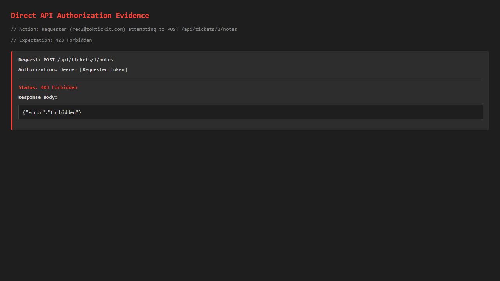

Git Graph showing clean staircase of lab3-staging
Git Graph showing clean staircase of lab3-stagingSemester 1/2026 · Sections 1, 2, HS, 31, 32
Student Name: Aphiwat Panthathanaphat Student ID: 67070507209
Repository: https://github.com/apfirst13/toktickit
Git Graph showing clean staircase of lab3-stagingFolder PATH listing for volume Data
Volume serial number is 5408-7570
D:.
| .env.example
| .gitignore
| all_issues.txt
| backend_tests.txt
| checklist.html
| client-test.txt
| db.html
| db_output.txt
| ddf
| e2e_tests.txt
| frontend_tests.txt
| lab-02-submission.html
| lab-03-submission.html
| lab-03-submission.html.bak
| lab-03-submission.md
| lab-03-submission.pdf
| Lab_02_labsheet.md
| package-lock.json
| package.json
| playwright.config.ts
| README.md
| repo-tree.txt
| screenshot-fixes.js
| server-test.txt
| terminal.html
| tests-traceability.html
| test_output.txt
| test_output_real.txt
| tree-output.txt
| tree.html
| tree.txt
| vitest.workspace.ts
|
+---artifacts
| +---lab-02
| | \---screenshots
| | attachment-add-success.png
| | attachment-download-success.png
| | attachment-removed-metadata.png
| | attachment-soft-remove.png
| | attachment-unauthorized.png
| | create-ticket-api-error.png
| | create-ticket-api-failure.png
| | create-ticket-empty.png
| | create-ticket-error.png
| | create-ticket-form.png
| | create-ticket-invalid-attachment.png
| | create-ticket-invalid-file.png
| | create-ticket-submitting.png
| | create-ticket-success.png
| | create-ticket-validation-error.png
| | cross-requester-blocked.png
| | db-requester-match.png
| | debug.png
| | directory-structure.png
| | my-tickets-empty.png
| | my-tickets-no-results.png
| | my-tickets-pagination.png
| | my-tickets-requester-a.png
| | my-tickets-requester-b-isolation.png
| | my-tickets-search-filter-sort.png
| | my-tickets-success.png
| | requester-selection-success.png
| | requester-selection.png
| | responsive-desktop.png
| | responsive-mobile.png
| | responsive-tablet.png
| | terminal-test-main.png
| | tests-traceability.png
| | ticket-cross-access-blocked.png
| | ticket-detail-realistic.png
| | ticket-detail-success.png
| | ticket-detail.png
| | ticket-list.png
| | visual-checklist.png
| |
| \---lab-03
| | client_tests.txt
| | e2e_tests.txt
| | server_tests.txt
| |
| \---screenshots
| admin-create-validation.png
| admin-forbidden.png
| admin-self-deactivate-blocked.png
| auth-shell-role.png
| desktop-01-auth-alert.png
| desktop-01-login.png
| desktop-02-staff-queue-empty.png
| desktop-02-staff-queue-search.png
| desktop-02-staff-queue.png
| desktop-03-staff-detail-before-claim.png
| desktop-03-staff-detail.png
| desktop-04-admin-users-blocked.png
| desktop-04-admin-users-form.png
| desktop-04-admin-users.png
| git-graph.png
| login-empty.png
| login-inactive.png
| login-invalid.png
| mobile-01-auth-alert.png
| mobile-02-staff-queue.png
| mobile-03-staff-detail.png
| mobile-04-admin-users.png
| queue-no-results.png
| queue-search-filter.png
| tablet-01-auth-alert.png
| tablet-02-staff-queue.png
| tablet-03-staff-detail.png
| tablet-04-admin-users.png
|
+---client
| | .env.example
| | index.html
| | package-lock.json
| | package.json
| | tsconfig.json
| | tsconfig.node.json
| | tsconfig.tsbuildinfo
| | vite.config.ts
| |
| +---dist
| | | index.html
| | |
| | \---assets
| | index-BqjcScAs.js
| | index-CfkJyshZ.css
| |
| +---node_modules
| | | .package-lock.json
| | |
| | +---.bin
| | | baseline-browser-mapping
| | | baseline-browser-mapping.cmd
| | | baseline-browser-mapping.ps1
| | | browserslist
| | | browserslist.cmd
| | | browserslist.ps1
| | | esbuild
| | | esbuild.cmd
| | | esbuild.ps1
| | | jsesc
| | | jsesc.cmd
| | | jsesc.ps1
| | | json5
| | | json5.cmd
| | | json5.ps1
| | | loose-envify
| | | loose-envify.cmd
| | | loose-envify.ps1
| | | lz-string
| | | lz-string.cmd
| | | lz-string.ps1
| | | nanoid
| | | nanoid.cmd
| | | nanoid.ps1
| | | parser
| | | parser.cmd
| | | parser.ps1
| | | rollup
| | | rollup.cmd
| | | rollup.ps1
| | | semver
| | | semver.cmd
| | | semver.ps1
| | | specificity
| | | specificity.cmd
| | | specificity.ps1
| | | tldts
| | | tldts.cmd
| | | tldts.ps1
| | | tsc
| | | tsc.cmd
| | | tsc.ps1
| | | tsserver
| | | tsserver.cmd
| | | tsserver.ps1
| | | update-browserslist-db
| | | update-browserslist-db.cmd
| | | update-browserslist-db.ps1
| | | vite
| | | vite-node
| | | vite-node.cmd
| | | vite-node.ps1
| | | vite.cmd
| | | vite.ps1
| | | vitest
| | | vitest.cmd
| | | vitest.ps1
| | | why-is-node-running
| | | why-is-node-running.cmd
| | | why-is-node-running.ps1
| | |
| | +---.cache
| | | \---jiti
| | +---.vite
| | | +---deps
| | | | chunk-373CG7ZK.js
| | | | chunk-373CG7ZK.js.map
| | | | chunk-REFQX4J5.js
| | | | chunk-REFQX4J5.js.map
| | | | package.json
| | | | react-dom.js
| | | | react-dom.js.map
| | | | react-dom_client.js
| | | | react-dom_client.js.map
| | | | react.js
| | | | react.js.map
| | | | react_jsx-dev-runtime.js
| | | | react_jsx-dev-runtime.js.map
| | | | react_jsx-runtime.js
| | | | react_jsx-runtime.js.map
| | | | _metadata.json
| | | |
| | | \---vitest
| | | results.json
| | |
| | +---@adobe
| | | \---css-tools
| | | | LICENSE
| | | | package.json
| | | | README.md
| | | |
| | | +---dist
| | | | +---cjs
| | | | | adobe-css-tools.cjs
| | | | | adobe-css-tools.cjs.map
| | | | | adobe-css-tools.d.cts
| | | | |
| | | | +---esm
| | | | | adobe-css-tools.d.mts
| | | | | adobe-css-tools.mjs
| | | | | adobe-css-tools.mjs.map
| | | | |
| | | | \---umd
| | | | adobe-css-tools.d.ts
| | | | adobe-css-tools.js
| | | | adobe-css-tools.js.map
| | | |
| | | +---docs
| | | | API.md
| | | | AST.md
| | | | CHANGELOG.md
| | | | EXAMPLES.md
| | | |
| | | \---src
| | | | CssParseError.ts
| | | | CssPosition.ts
| | | | index.ts
| | | | type.ts
| | | |
| | | +---parse
| | | | index.ts
| | | |
| | | +---stringify
| | | | compiler.ts
| | | | index.ts
| | | |
| | | \---utils
| | | stringSearch.test.ts
| | | stringSearch.ts
| | |
| | +---@asamuzakjp
| | | +---css-color
| | | | | LICENSE
| | | | | package.json
| | | | | README.md
| | | | |
| | | | +---dist
| | | | | \---esm
| | | | | | index.d.ts
| | | | | | index.js
| | | | | | index.js.map
| | | | | |
| | | | | \---js
| | | | | cache.d.ts
| | | | | cache.js
| | | | | cache.js.map
| | | | | color.d.ts
| | | | | color.js
| | | | | color.js.map
| | | | | common.d.ts
| | | | | common.js
| | | | | common.js.map
| | | | | constant.d.ts
| | | | | constant.js
| | | | | constant.js.map
| | | | | convert.d.ts
| | | | | convert.js
| | | | | convert.js.map
| | | | | css-calc.d.ts
| | | | | css-calc.js
| | | | | css-calc.js.map
| | | | | css-gradient.d.ts
| | | | | css-gradient.js
| | | | | css-gradient.js.map
| | | | | css-var.d.ts
| | | | | css-var.js
| | | | | css-var.js.map
| | | | | relative-color.d.ts
| | | | | relative-color.js
| | | | | relative-color.js.map
| | | | | resolve.d.ts
| | | | | resolve.js
| | | | | resolve.js.map
| | | | | typedef.d.ts
| | | | | util.d.ts
| | | | | util.js
| | | | | util.js.map
| | | | |
| | | | \---src
| | | | | index.ts
| | | | |
| | | | \---js
| | | | cache.ts
| | | | color.ts
| | | | common.ts
| | | | constant.ts
| | | | convert.ts
| | | | css-calc.ts
| | | | css-gradient.ts
| | | | css-var.ts
| | | | relative-color.ts
| | | | resolve.ts
| | | | typedef.ts
| | | | util.ts
| | | |
| | | +---dom-selector
| | | | | LICENSE
| | | | | package.json
| | | | | README.md
| | | | |
| | | | +---src
| | | | | | index.js
| | | | | |
| | | | | \---js
| | | | | constant.js
| | | | | finder.js
| | | | | matcher.js
| | | | | parser.js
| | | | | utility.js
| | | | |
| | | | \---types
| | | | | index.d.ts
| | | | |
| | | | \---js
| | | | constant.d.ts
| | | | finder.d.ts
| | | | matcher.d.ts
| | | | parser.d.ts
| | | | utility.d.ts
| | | |
| | | +---generational-cache
| | | | | LICENSE
| | | | | package.json
| | | | | README.md
| | | | |
| | | | +---src
| | | | | index.js
| | | | |
| | | | \---types
| | | | index.d.ts
| | | |
| | | \---nwsapi
| | | | LICENSE
| | | | package.json
| | | | README.md
| | | |
| | | \---src
| | | nwsapi.js
| | |
| | +---@babel
| | | +---code-frame
| | | | | LICENSE
| | | | | package.json
| | | | | README.md
| | | | |
| | | | \---lib
| | | | index.js
| | | | index.js.map
| | | |
| | | +---compat-data
| | | | | corejs2-built-ins.js
| | | | | corejs3-shipped-proposals.js
| | | | | LICENSE
| | | | | native-modules.js
| | | | | overlapping-plugins.js
| | | | | package.json
| | | | | plugin-bugfixes.js
| | | | | plugins.js
| | | | | README.md
| | | | |
| | | | \---data
| | | | corejs2-built-ins.json
| | | | corejs3-shipped-proposals.json
| | | | native-modules.json
| | | | overlapping-plugins.json
| | | | plugin-bugfixes.json
| | | | plugins.json
| | | |
| | | +---core
| | | | | LICENSE
| | | | | package.json
| | | | | README.md
| | | | |
| | | | +---lib
| | | | | | index.js
| | | | | | index.js.map
| | | | | | parse.js
| | | | | | parse.js.map
| | | | | | transform-ast.js
| | | | | | transform-ast.js.map
| | | | | | transform-file-browser.js
| | | | | | transform-file-browser.js.map
| | | | | | transform-file.js
| | | | | | transform-file.js.map
| | | | | | transform.js
| | | | | | transform.js.map
| | | | | |
| | | | | +---config
| | | | | | | cache-contexts.js
| | | | | | | cache-contexts.js.map
| | | | | | | caching.js
| | | | | | | caching.js.map
| | | | | | | config-chain.js
| | | | | | | config-chain.js.map
| | | | | | | config-descriptors.js
| | | | | | | config-descriptors.js.map
| | | | | | | full.js
| | | | | | | full.js.map
| | | | | | | index.js
| | | | | | | index.js.map
| | | | | | | item.js
| | | | | | | item.js.map
| | | | | | | partial.js
| | | | | | | partial.js.map
| | | | | | | pattern-to-regex.js
| | | | | | | pattern-to-regex.js.map
| | | | | | | plugin.js
| | | | | | | plugin.js.map
| | | | | | | printer.js
| | | | | | | printer.js.map
| | | | | | | resolve-targets-browser.js
| | | | | | | resolve-targets-browser.js.map
| | | | | | | resolve-targets.js
| | | | | | | resolve-targets.js.map
| | | | | | | util.js
| | | | | | | util.js.map
| | | | | | |
| | | | | | +---files
| | | | | | | configuration.js
| | | | | | | configuration.js.map
| | | | | | | import.cjs
| | | | | | | import.cjs.map
| | | | | | | index-browser.js
| | | | | | | index-browser.js.map
| | | | | | | index.js
| | | | | | | index.js.map
| | | | | | | module-types.js
| | | | | | | module-types.js.map
| | | | | | | package.js
| | | | | | | package.js.map
| | | | | | | plugins.js
| | | | | | | plugins.js.map
| | | | | | | types.js
| | | | | | | types.js.map
| | | | | | | utils.js
| | | | | | | utils.js.map
| | | | | | |
| | | | | | +---helpers
| | | | | | | config-api.js
| | | | | | | config-api.js.map
| | | | | | | deep-array.js
| | | | | | | deep-array.js.map
| | | | | | | environment.js
| | | | | | | environment.js.map
| | | | | | |
| | | | | | \---validation
| | | | | | option-assertions.js
| | | | | | option-assertions.js.map
| | | | | | options.js
| | | | | | options.js.map
| | | | | | plugins.js
| | | | | | plugins.js.map
| | | | | | removed.js
| | | | | | removed.js.map
| | | | | |
| | | | | +---errors
| | | | | | config-error.js
| | | | | | config-error.js.map
| | | | | | rewrite-stack-trace.js
| | | | | | rewrite-stack-trace.js.map
| | | | | |
| | | | | +---gensync-utils
| | | | | | async.js
| | | | | | async.js.map
| | | | | | fs.js
| | | | | | fs.js.map
| | | | | | functional.js
| | | | | | functional.js.map
| | | | | |
| | | | | +---parser
| | | | | | | index.js
| | | | | | | index.js.map
| | | | | | |
| | | | | | \---util
| | | | | | missing-plugin-helper.js
| | | | | | missing-plugin-helper.js.map
| | | | | |
| | | | | +---tools
| | | | | | build-external-helpers.js
| | | | | | build-external-helpers.js.map
| | | | | |
| | | | | +---transformation
| | | | | | | block-hoist-plugin.js
| | | | | | | block-hoist-plugin.js.map
| | | | | | | index.js
| | | | | | | index.js.map
| | | | | | | normalize-file.js
| | | | | | | normalize-file.js.map
| | | | | | | normalize-opts.js
| | | | | | | normalize-opts.js.map
| | | | | | | plugin-pass.js
| | | | | | | plugin-pass.js.map
| | | | | | | read-input-source-map-file-browser.js
| | | | | | | read-input-source-map-file-browser.js.map
| | | | | | | read-input-source-map-file.js
| | | | | | | read-input-source-map-file.js.map
| | | | | | |
| | | | | | +---file
| | | | | | | babel-7-helpers.cjs
| | | | | | | babel-7-helpers.cjs.map
| | | | | | | file.js
| | | | | | | file.js.map
| | | | | | | generate.js
| | | | | | | generate.js.map
| | | | | | | merge-map.js
| | | | | | | merge-map.js.map
| | | | | | |
| | | | | | \---util
| | | | | | clone-deep.js
| | | | | | clone-deep.js.map
| | | | | |
| | | | | \---vendor
| | | | | import-meta-resolve.js
| | | | | import-meta-resolve.js.map
| | | | |
| | | | \---src
| | | | | transform-file-browser.ts
| | | | | transform-file.ts
| | | | |
| | | | +---config
| | | | | | resolve-targets-browser.ts
| | | | | | resolve-targets.ts
| | | | | |
| | | | | \---files
| | | | | index-browser.ts
| | | | | index.ts
| | | | |
| | | | \---transformation
| | | | read-input-source-map-file-browser.ts
| | | | read-input-source-map-file.ts
| | | |
| | | +---generator
| | | | | LICENSE
| | | | | package.json
| | | | | README.md
| | | | |
| | | | \---lib
| | | | | buffer.js
| | | | | buffer.js.map
| | | | | index.js
| | | | | index.js.map
| | | | | nodes.js
| | | | | nodes.js.map
| | | | | printer.js
| | | | | printer.js.map
| | | | | source-map.js
| | | | | source-map.js.map
| | | | | token-map.js
| | | | | token-map.js.map
| | | | |
| | | | +---generators
| | | | | base.js
| | | | | base.js.map
| | | | | classes.js
| | | | | classes.js.map
| | | | | deprecated.js
| | | | | deprecated.js.map
| | | | | expressions.js
| | | | | expressions.js.map
| | | | | flow.js
| | | | | flow.js.map
| | | | | index.js
| | | | | index.js.map
| | | | | jsx.js
| | | | | jsx.js.map
| | | | | methods.js
| | | | | methods.js.map
| | | | | modules.js
| | | | | modules.js.map
| | | | | statements.js
| | | | | statements.js.map
| | | | | template-literals.js
| | | | | template-literals.js.map
| | | | | types.js
| | | | | types.js.map
| | | | | typescript.js
| | | | | typescript.js.map
| | | | |
| | | | \---node
| | | | index.js
| | | | index.js.map
| | | | parentheses.js
| | | | parentheses.js.map
| | | |
| | | +---helper-compilation-targets
| | | | | LICENSE
| | | | | package.json
| | | | | README.md
| | | | |
| | | | \---lib
| | | | debug.js
| | | | debug.js.map
| | | | filter-items.js
| | | | filter-items.js.map
| | | | index.js
| | | | index.js.map
| | | | options.js
| | | | options.js.map
| | | | pretty.js
| | | | pretty.js.map
| | | | targets.js
| | | | targets.js.map
| | | | utils.js
| | | | utils.js.map
| | | |
| | | +---helper-globals
| | | | | LICENSE
| | | | | package.json
| | | | | README.md
| | | | |
| | | | \---data
| | | | browser-upper.json
| | | | builtin-lower.json
| | | | builtin-upper.json
| | | |
| | | +---helper-module-imports
| | | | | LICENSE
| | | | | package.json
| | | | | README.md
| | | | |
| | | | \---lib
| | | | import-builder.js
| | | | import-builder.js.map
| | | | import-injector.js
| | | | import-injector.js.map
| | | | index.js
| | | | index.js.map
| | | | is-module.js
| | | | is-module.js.map
| | | |
| | | +---helper-module-transforms
| | | | | LICENSE
| | | | | package.json
| | | | | README.md
| | | | |
| | | | \---lib
| | | | dynamic-import.js
| | | | dynamic-import.js.map
| | | | get-module-name.js
| | | | get-module-name.js.map
| | | | index.js
| | | | index.js.map
| | | | lazy-modules.js
| | | | lazy-modules.js.map
| | | | normalize-and-load-metadata.js
| | | | normalize-and-load-metadata.js.map
| | | | rewrite-live-references.js
| | | | rewrite-live-references.js.map
| | | | rewrite-this.js
| | | | rewrite-this.js.map
| | | |
| | | +---helper-plugin-utils
| | | | | LICENSE
| | | | | package.json
| | | | | README.md
| | | | |
| | | | \---lib
| | | | index.js
| | | | index.js.map
| | | |
| | | +---helper-string-parser
| | | | | LICENSE
| | | | | package.json
| | | | | README.md
| | | | |
| | | | \---lib
| | | | index.js
| | | | index.js.map
| | | |
| | | +---helper-validator-identifier
| | | | | LICENSE
| | | | | package.json
| | | | | README.md
| | | | |
| | | | \---lib
| | | | identifier.js
| | | | identifier.js.map
| | | | index.js
| | | | index.js.map
| | | | keyword.js
| | | | keyword.js.map
| | | |
| | | +---helper-validator-option
| | | | | LICENSE
| | | | | package.json
| | | | | README.md
| | | | |
| | | | \---lib
| | | | find-suggestion.js
| | | | find-suggestion.js.map
| | | | index.js
| | | | index.js.map
| | | | validator.js
| | | | validator.js.map
| | | |
| | | +---helpers
| | | | | LICENSE
| | | | | package.json
| | | | | README.md
| | | | |
| | | | \---lib
| | | | | helpers-generated.js
| | | | | helpers-generated.js.map
| | | | | index.js
| | | | | index.js.map
| | | | |
| | | | \---helpers
| | | | applyDecoratedDescriptor.js
| | | | applyDecoratedDescriptor.js.map
| | | | applyDecs.js
| | | | applyDecs.js.map
| | | | applyDecs2203.js
| | | | applyDecs2203.js.map
| | | | applyDecs2203R.js
| | | | applyDecs2203R.js.map
| | | | applyDecs2301.js
| | | | applyDecs2301.js.map
| | | | applyDecs2305.js
| | | | applyDecs2305.js.map
| | | | applyDecs2311.js
| | | | applyDecs2311.js.map
| | | | arrayLikeToArray.js
| | | | arrayLikeToArray.js.map
| | | | arrayWithHoles.js
| | | | arrayWithHoles.js.map
| | | | arrayWithoutHoles.js
| | | | arrayWithoutHoles.js.map
| | | | assertClassBrand.js
| | | | assertClassBrand.js.map
| | | | assertThisInitialized.js
| | | | assertThisInitialized.js.map
| | | | asyncGeneratorDelegate.js
| | | | asyncGeneratorDelegate.js.map
| | | | asyncIterator.js
| | | | asyncIterator.js.map
| | | | asyncToGenerator.js
| | | | asyncToGenerator.js.map
| | | | awaitAsyncGenerator.js
| | | | awaitAsyncGenerator.js.map
| | | | AwaitValue.js
| | | | AwaitValue.js.map
| | | | callSuper.js
| | | | callSuper.js.map
| | | | checkInRHS.js
| | | | checkInRHS.js.map
| | | | checkPrivateRedeclaration.js
| | | | checkPrivateRedeclaration.js.map
| | | | classApplyDescriptorDestructureSet.js
| | | | classApplyDescriptorDestructureSet.js.map
| | | | classApplyDescriptorGet.js
| | | | classApplyDescriptorGet.js.map
| | | | classApplyDescriptorSet.js
| | | | classApplyDescriptorSet.js.map
| | | | classCallCheck.js
| | | | classCallCheck.js.map
| | | | classCheckPrivateStaticAccess.js
| | | | classCheckPrivateStaticAccess.js.map
| | | | classCheckPrivateStaticFieldDescriptor.js
| | | | classCheckPrivateStaticFieldDescriptor.js.map
| | | | classExtractFieldDescriptor.js
| | | | classExtractFieldDescriptor.js.map
| | | | classNameTDZError.js
| | | | classNameTDZError.js.map
| | | | classPrivateFieldDestructureSet.js
| | | | classPrivateFieldDestructureSet.js.map
| | | | classPrivateFieldGet.js
| | | | classPrivateFieldGet.js.map
| | | | classPrivateFieldGet2.js
| | | | classPrivateFieldGet2.js.map
| | | | classPrivateFieldInitSpec.js
| | | | classPrivateFieldInitSpec.js.map
| | | | classPrivateFieldLooseBase.js
| | | | classPrivateFieldLooseBase.js.map
| | | | classPrivateFieldLooseKey.js
| | | | classPrivateFieldLooseKey.js.map
| | | | classPrivateFieldSet.js
| | | | classPrivateFieldSet.js.map
| | | | classPrivateFieldSet2.js
| | | | classPrivateFieldSet2.js.map
| | | | classPrivateGetter.js
| | | | classPrivateGetter.js.map
| | | | classPrivateMethodGet.js
| | | | classPrivateMethodGet.js.map
| | | | classPrivateMethodInitSpec.js
| | | | classPrivateMethodInitSpec.js.map
| | | | classPrivateMethodSet.js
| | | | classPrivateMethodSet.js.map
| | | | classPrivateSetter.js
| | | | classPrivateSetter.js.map
| | | | classStaticPrivateFieldDestructureSet.js
| | | | classStaticPrivateFieldDestructureSet.js.map
| | | | classStaticPrivateFieldSpecGet.js
| | | | classStaticPrivateFieldSpecGet.js.map
| | | | classStaticPrivateFieldSpecSet.js
| | | | classStaticPrivateFieldSpecSet.js.map
| | | | classStaticPrivateMethodGet.js
| | | | classStaticPrivateMethodGet.js.map
| | | | classStaticPrivateMethodSet.js
| | | | classStaticPrivateMethodSet.js.map
| | | | construct.js
| | | | construct.js.map
| | | | createClass.js
| | | | createClass.js.map
| | | | createForOfIteratorHelper.js
| | | | createForOfIteratorHelper.js.map
| | | | createForOfIteratorHelperLoose.js
| | | | createForOfIteratorHelperLoose.js.map
| | | | createSuper.js
| | | | createSuper.js.map
| | | | decorate.js
| | | | decorate.js.map
| | | | defaults.js
| | | | defaults.js.map
| | | | defineAccessor.js
| | | | defineAccessor.js.map
| | | | defineEnumerableProperties.js
| | | | defineEnumerableProperties.js.map
| | | | defineProperty.js
| | | | defineProperty.js.map
| | | | dispose.js
| | | | dispose.js.map
| | | | extends.js
| | | | extends.js.map
| | | | get.js
| | | | get.js.map
| | | | getPrototypeOf.js
| | | | getPrototypeOf.js.map
| | | | identity.js
| | | | identity.js.map
| | | | importDeferProxy.js
| | | | importDeferProxy.js.map
| | | | inherits.js
| | | | inherits.js.map
| | | | inheritsLoose.js
| | | | inheritsLoose.js.map
| | | | initializerDefineProperty.js
| | | | initializerDefineProperty.js.map
| | | | initializerWarningHelper.js
| | | | initializerWarningHelper.js.map
| | | | instanceof.js
| | | | instanceof.js.map
| | | | interopRequireDefault.js
| | | | interopRequireDefault.js.map
| | | | interopRequireWildcard.js
| | | | interopRequireWildcard.js.map
| | | | isNativeFunction.js
| | | | isNativeFunction.js.map
| | | | isNativeReflectConstruct.js
| | | | isNativeReflectConstruct.js.map
| | | | iterableToArray.js
| | | | iterableToArray.js.map
| | | | iterableToArrayLimit.js
| | | | iterableToArrayLimit.js.map
| | | | jsx.js
| | | | jsx.js.map
| | | | maybeArrayLike.js
| | | | maybeArrayLike.js.map
| | | | newArrowCheck.js
| | | | newArrowCheck.js.map
| | | | nonIterableRest.js
| | | | nonIterableRest.js.map
| | | | nonIterableSpread.js
| | | | nonIterableSpread.js.map
| | | | nullishReceiverError.js
| | | | nullishReceiverError.js.map
| | | | objectDestructuringEmpty.js
| | | | objectDestructuringEmpty.js.map
| | | | objectSpread.js
| | | | objectSpread.js.map
| | | | objectSpread2.js
| | | | objectSpread2.js.map
| | | | objectWithoutProperties.js
| | | | objectWithoutProperties.js.map
| | | | objectWithoutPropertiesLoose.js
| | | | objectWithoutPropertiesLoose.js.map
| | | | OverloadYield.js
| | | | OverloadYield.js.map
| | | | possibleConstructorReturn.js
| | | | possibleConstructorReturn.js.map
| | | | readOnlyError.js
| | | | readOnlyError.js.map
| | | | regenerator.js
| | | | regenerator.js.map
| | | | regeneratorAsync.js
| | | | regeneratorAsync.js.map
| | | | regeneratorAsyncGen.js
| | | | regeneratorAsyncGen.js.map
| | | | regeneratorAsyncIterator.js
| | | | regeneratorAsyncIterator.js.map
| | | | regeneratorDefine.js
| | | | regeneratorDefine.js.map
| | | | regeneratorKeys.js
| | | | regeneratorKeys.js.map
| | | | regeneratorRuntime.js
| | | | regeneratorRuntime.js.map
| | | | regeneratorValues.js
| | | | regeneratorValues.js.map
| | | | set.js
| | | | set.js.map
| | | | setFunctionName.js
| | | | setFunctionName.js.map
| | | | setPrototypeOf.js
| | | | setPrototypeOf.js.map
| | | | skipFirstGeneratorNext.js
| | | | skipFirstGeneratorNext.js.map
| | | | slicedToArray.js
| | | | slicedToArray.js.map
| | | | superPropBase.js
| | | | superPropBase.js.map
| | | | superPropGet.js
| | | | superPropGet.js.map
| | | | superPropSet.js
| | | | superPropSet.js.map
| | | | taggedTemplateLiteral.js
| | | | taggedTemplateLiteral.js.map
| | | | taggedTemplateLiteralLoose.js
| | | | taggedTemplateLiteralLoose.js.map
| | | | tdz.js
| | | | tdz.js.map
| | | | temporalRef.js
| | | | temporalRef.js.map
| | | | temporalUndefined.js
| | | | temporalUndefined.js.map
| | | | toArray.js
| | | | toArray.js.map
| | | | toConsumableArray.js
| | | | toConsumableArray.js.map
| | | | toPrimitive.js
| | | | toPrimitive.js.map
| | | | toPropertyKey.js
| | | | toPropertyKey.js.map
| | | | toSetter.js
| | | | toSetter.js.map
| | | | tsRewriteRelativeImportExtensions.js
| | | | tsRewriteRelativeImportExtensions.js.map
| | | | typeof.js
| | | | typeof.js.map
| | | | unsupportedIterableToArray.js
| | | | unsupportedIterableToArray.js.map
| | | | using.js
| | | | using.js.map
| | | | usingCtx.js
| | | | usingCtx.js.map
| | | | wrapAsyncGenerator.js
| | | | wrapAsyncGenerator.js.map
| | | | wrapNativeSuper.js
| | | | wrapNativeSuper.js.map
| | | | wrapRegExp.js
| | | | wrapRegExp.js.map
| | | | writeOnlyError.js
| | | | writeOnlyError.js.map
| | | |
| | | +---parser
| | | | | CHANGELOG.md
| | | | | LICENSE
| | | | | package.json
| | | | | README.md
| | | | |
| | | | +---bin
| | | | | babel-parser.js
| | | | |
| | | | +---lib
| | | | | index.js
| | | | | index.js.map
| | | | |
| | | | \---typings
| | | | babel-parser.d.ts
| | | |
| | | +---plugin-transform-react-jsx-self
| | | | | LICENSE
| | | | | package.json
| | | | | README.md
| | | | |
| | | | \---lib
| | | | index.js
| | | | index.js.map
| | | |
| | | +---plugin-transform-react-jsx-source
| | | | | LICENSE
| | | | | package.json
| | | | | README.md
| | | | |
| | | | \---lib
| | | | index.js
| | | | index.js.map
| | | |
| | | +---runtime
| | | | | LICENSE
| | | | | package.json
| | | | | README.md
| | | | |
| | | | +---helpers
| | | | | | applyDecoratedDescriptor.js
| | | | | | applyDecs.js
| | | | | | applyDecs2203.js
| | | | | | applyDecs2203R.js
| | | | | | applyDecs2301.js
| | | | | | applyDecs2305.js
| | | | | | applyDecs2311.js
| | | | | | arrayLikeToArray.js
| | | | | | arrayWithHoles.js
| | | | | | arrayWithoutHoles.js
| | | | | | assertClassBrand.js
| | | | | | assertThisInitialized.js
| | | | | | asyncGeneratorDelegate.js
| | | | | | asyncIterator.js
| | | | | | asyncToGenerator.js
| | | | | | awaitAsyncGenerator.js
| | | | | | AwaitValue.js
| | | | | | callSuper.js
| | | | | | checkInRHS.js
| | | | | | checkPrivateRedeclaration.js
| | | | | | classApplyDescriptorDestructureSet.js
| | | | | | classApplyDescriptorGet.js
| | | | | | classApplyDescriptorSet.js
| | | | | | classCallCheck.js
| | | | | | classCheckPrivateStaticAccess.js
| | | | | | classCheckPrivateStaticFieldDescriptor.js
| | | | | | classExtractFieldDescriptor.js
| | | | | | classNameTDZError.js
| | | | | | classPrivateFieldDestructureSet.js
| | | | | | classPrivateFieldGet.js
| | | | | | classPrivateFieldGet2.js
| | | | | | classPrivateFieldInitSpec.js
| | | | | | classPrivateFieldLooseBase.js
| | | | | | classPrivateFieldLooseKey.js
| | | | | | classPrivateFieldSet.js
| | | | | | classPrivateFieldSet2.js
| | | | | | classPrivateGetter.js
| | | | | | classPrivateMethodGet.js
| | | | | | classPrivateMethodInitSpec.js
| | | | | | classPrivateMethodSet.js
| | | | | | classPrivateSetter.js
| | | | | | classStaticPrivateFieldDestructureSet.js
| | | | | | classStaticPrivateFieldSpecGet.js
| | | | | | classStaticPrivateFieldSpecSet.js
| | | | | | classStaticPrivateMethodGet.js
| | | | | | classStaticPrivateMethodSet.js
| | | | | | construct.js
| | | | | | createClass.js
| | | | | | createForOfIteratorHelper.js
| | | | | | createForOfIteratorHelperLoose.js
| | | | | | createSuper.js
| | | | | | decorate.js
| | | | | | defaults.js
| | | | | | defineAccessor.js
| | | | | | defineEnumerableProperties.js
| | | | | | defineProperty.js
| | | | | | dispose.js
| | | | | | extends.js
| | | | | | get.js
| | | | | | getPrototypeOf.js
| | | | | | identity.js
| | | | | | importDeferProxy.js
| | | | | | inherits.js
| | | | | | inheritsLoose.js
| | | | | | initializerDefineProperty.js
| | | | | | initializerWarningHelper.js
| | | | | | instanceof.js
| | | | | | interopRequireDefault.js
| | | | | | interopRequireWildcard.js
| | | | | | isNativeFunction.js
| | | | | | isNativeReflectConstruct.js
| | | | | | iterableToArray.js
| | | | | | iterableToArrayLimit.js
| | | | | | jsx.js
| | | | | | maybeArrayLike.js
| | | | | | newArrowCheck.js
| | | | | | nonIterableRest.js
| | | | | | nonIterableSpread.js
| | | | | | nullishReceiverError.js
| | | | | | objectDestructuringEmpty.js
| | | | | | objectSpread.js
| | | | | | objectSpread2.js
| | | | | | objectWithoutProperties.js
| | | | | | objectWithoutPropertiesLoose.js
| | | | | | OverloadYield.js
| | | | | | possibleConstructorReturn.js
| | | | | | readOnlyError.js
| | | | | | regenerator.js
| | | | | | regeneratorAsync.js
| | | | | | regeneratorAsyncGen.js
| | | | | | regeneratorAsyncIterator.js
| | | | | | regeneratorDefine.js
| | | | | | regeneratorKeys.js
| | | | | | regeneratorRuntime.js
| | | | | | regeneratorValues.js
| | | | | | set.js
| | | | | | setFunctionName.js
| | | | | | setPrototypeOf.js
| | | | | | skipFirstGeneratorNext.js
| | | | | | slicedToArray.js
| | | | | | superPropBase.js
| | | | | | superPropGet.js
| | | | | | superPropSet.js
| | | | | | taggedTemplateLiteral.js
| | | | | | taggedTemplateLiteralLoose.js
| | | | | | tdz.js
| | | | | | temporalRef.js
| | | | | | temporalUndefined.js
| | | | | | toArray.js
| | | | | | toConsumableArray.js
| | | | | | toPrimitive.js
| | | | | | toPropertyKey.js
| | | | | | toSetter.js
| | | | | | tsRewriteRelativeImportExtensions.js
| | | | | | typeof.js
| | | | | | unsupportedIterableToArray.js
| | | | | | using.js
| | | | | | usingCtx.js
| | | | | | wrapAsyncGenerator.js
| | | | | | wrapNativeSuper.js
| | | | | | wrapRegExp.js
| | | | | | writeOnlyError.js
| | | | | |
| | | | | \---esm
| | | | | applyDecoratedDescriptor.js
| | | | | applyDecs.js
| | | | | applyDecs2203.js
| | | | | applyDecs2203R.js
| | | | | applyDecs2301.js
| | | | | applyDecs2305.js
| | | | | applyDecs2311.js
| | | | | arrayLikeToArray.js
| | | | | arrayWithHoles.js
| | | | | arrayWithoutHoles.js
| | | | | assertClassBrand.js
| | | | | assertThisInitialized.js
| | | | | asyncGeneratorDelegate.js
| | | | | asyncIterator.js
| | | | | asyncToGenerator.js
| | | | | awaitAsyncGenerator.js
| | | | | AwaitValue.js
| | | | | callSuper.js
| | | | | checkInRHS.js
| | | | | checkPrivateRedeclaration.js
| | | | | classApplyDescriptorDestructureSet.js
| | | | | classApplyDescriptorGet.js
| | | | | classApplyDescriptorSet.js
| | | | | classCallCheck.js
| | | | | classCheckPrivateStaticAccess.js
| | | | | classCheckPrivateStaticFieldDescriptor.js
| | | | | classExtractFieldDescriptor.js
| | | | | classNameTDZError.js
| | | | | classPrivateFieldDestructureSet.js
| | | | | classPrivateFieldGet.js
| | | | | classPrivateFieldGet2.js
| | | | | classPrivateFieldInitSpec.js
| | | | | classPrivateFieldLooseBase.js
| | | | | classPrivateFieldLooseKey.js
| | | | | classPrivateFieldSet.js
| | | | | classPrivateFieldSet2.js
| | | | | classPrivateGetter.js
| | | | | classPrivateMethodGet.js
| | | | | classPrivateMethodInitSpec.js
| | | | | classPrivateMethodSet.js
| | | | | classPrivateSetter.js
| | | | | classStaticPrivateFieldDestructureSet.js
| | | | | classStaticPrivateFieldSpecGet.js
| | | | | classStaticPrivateFieldSpecSet.js
| | | | | classStaticPrivateMethodGet.js
| | | | | classStaticPrivateMethodSet.js
| | | | | construct.js
| | | | | createClass.js
| | | | | createForOfIteratorHelper.js
| | | | | createForOfIteratorHelperLoose.js
| | | | | createSuper.js
| | | | | decorate.js
| | | | | defaults.js
| | | | | defineAccessor.js
| | | | | defineEnumerableProperties.js
| | | | | defineProperty.js
| | | | | dispose.js
| | | | | extends.js
| | | | | get.js
| | | | | getPrototypeOf.js
| | | | | identity.js
| | | | | importDeferProxy.js
| | | | | inherits.js
| | | | | inheritsLoose.js
| | | | | initializerDefineProperty.js
| | | | | initializerWarningHelper.js
| | | | | instanceof.js
| | | | | interopRequireDefault.js
| | | | | interopRequireWildcard.js
| | | | | isNativeFunction.js
| | | | | isNativeReflectConstruct.js
| | | | | iterableToArray.js
| | | | | iterableToArrayLimit.js
| | | | | jsx.js
| | | | | maybeArrayLike.js
| | | | | newArrowCheck.js
| | | | | nonIterableRest.js
| | | | | nonIterableSpread.js
| | | | | nullishReceiverError.js
| | | | | objectDestructuringEmpty.js
| | | | | objectSpread.js
| | | | | objectSpread2.js
| | | | | objectWithoutProperties.js
| | | | | objectWithoutPropertiesLoose.js
| | | | | OverloadYield.js
| | | | | package.json
| | | | | possibleConstructorReturn.js
| | | | | readOnlyError.js
| | | | | regenerator.js
| | | | | regeneratorAsync.js
| | | | | regeneratorAsyncGen.js
| | | | | regeneratorAsyncIterator.js
| | | | | regeneratorDefine.js
| | | | | regeneratorKeys.js
| | | | | regeneratorRuntime.js
| | | | | regeneratorValues.js
| | | | | set.js
| | | | | setFunctionName.js
| | | | | setPrototypeOf.js
| | | | | skipFirstGeneratorNext.js
| | | | | slicedToArray.js
| | | | | superPropBase.js
| | | | | superPropGet.js
| | | | | superPropSet.js
| | | | | taggedTemplateLiteral.js
| | | | | taggedTemplateLiteralLoose.js
| | | | | tdz.js
| | | | | temporalRef.js
| | | | | temporalUndefined.js
| | | | | toArray.js
| | | | | toConsumableArray.js
| | | | | toPrimitive.js
| | | | | toPropertyKey.js
| | | | | toSetter.js
| | | | | tsRewriteRelativeImportExtensions.js
| | | | | typeof.js
| | | | | unsupportedIterableToArray.js
| | | | | using.js
| | | | | usingCtx.js
| | | | | wrapAsyncGenerator.js
| | | | | wrapNativeSuper.js
| | | | | wrapRegExp.js
| | | | | writeOnlyError.js
| | | | |
| | | | \---regenerator
| | | | index.js
| | | |
| | | +---template
| | | | | LICENSE
| | | | | package.json
| | | | | README.md
| | | | |
| | | | \---lib
| | | | builder.js
| | | | builder.js.map
| | | | formatters.js
| | | | formatters.js.map
| | | | index.js
| | | | index.js.map
| | | | literal.js
| | | | literal.js.map
| | | | options.js
| | | | options.js.map
| | | | parse.js
| | | | parse.js.map
| | | | populate.js
| | | | populate.js.map
| | | | string.js
| | | | string.js.map
| | | |
| | | +---traverse
| | | | | LICENSE
| | | | | package.json
| | | | | README.md
| | | | | tsconfig.overrides.json
| | | | |
| | | | \---lib
| | | | | cache.js
| | | | | cache.js.map
| | | | | context.js
| | | | | context.js.map
| | | | | hub.js
| | | | | hub.js.map
| | | | | index.js
| | | | | index.js.map
| | | | | traverse-node.js
| | | | | traverse-node.js.map
| | | | | types.js
| | | | | types.js.map
| | | | | visitors.js
| | | | | visitors.js.map
| | | | |
| | | | +---path
| | | | | | ancestry.js
| | | | | | ancestry.js.map
| | | | | | comments.js
| | | | | | comments.js.map
| | | | | | context.js
| | | | | | context.js.map
| | | | | | conversion.js
| | | | | | conversion.js.map
| | | | | | evaluation.js
| | | | | | evaluation.js.map
| | | | | | family.js
| | | | | | family.js.map
| | | | | | index.js
| | | | | | index.js.map
| | | | | | introspection.js
| | | | | | introspection.js.map
| | | | | | modification.js
| | | | | | modification.js.map
| | | | | | removal.js
| | | | | | removal.js.map
| | | | | | replacement.js
| | | | | | replacement.js.map
| | | | | |
| | | | | +---inference
| | | | | | index.js
| | | | | | index.js.map
| | | | | | inferer-reference.js
| | | | | | inferer-reference.js.map
| | | | | | inferers.js
| | | | | | inferers.js.map
| | | | | | util.js
| | | | | | util.js.map
| | | | | |
| | | | | \---lib
| | | | | hoister.js
| | | | | hoister.js.map
| | | | | removal-hooks.js
| | | | | removal-hooks.js.map
| | | | | virtual-types-validator.js
| | | | | virtual-types-validator.js.map
| | | | | virtual-types.js
| | | | | virtual-types.js.map
| | | | |
| | | | \---scope
| | | | | binding.js
| | | | | binding.js.map
| | | | | index.js
| | | | | index.js.map
| | | | | traverseForScope.js
| | | | | traverseForScope.js.map
| | | | |
| | | | \---lib
| | | | renamer.js
| | | | renamer.js.map
| | | |
| | | \---types
| | | | LICENSE
| | | | package.json
| | | | README.md
| | | |
| | | \---lib
| | | | index-legacy.d.ts
| | | | index.d.ts
| | | | index.js
| | | | index.js.flow
| | | | index.js.map
| | | |
| | | +---asserts
| | | | | assertNode.js
| | | | | assertNode.js.map
| | | | |
| | | | \---generated
| | | | index.js
| | | | index.js.map
| | | |
| | | +---ast-types
| | | | \---generated
| | | | index.js
| | | | index.js.map
| | | |
| | | +---builders
| | | | | productions.js
| | | | | productions.js.map
| | | | | validateNode.js
| | | | | validateNode.js.map
| | | | |
| | | | +---flow
| | | | | createFlowUnionType.js
| | | | | createFlowUnionType.js.map
| | | | | createTypeAnnotationBasedOnTypeof.js
| | | | | createTypeAnnotationBasedOnTypeof.js.map
| | | | |
| | | | +---generated
| | | | | index.js
| | | | | index.js.map
| | | | | lowercase.js
| | | | | lowercase.js.map
| | | | | uppercase.js
| | | | | uppercase.js.map
| | | | |
| | | | +---react
| | | | | buildChildren.js
| | | | | buildChildren.js.map
| | | | |
| | | | \---typescript
| | | | createTSUnionType.js
| | | | createTSUnionType.js.map
| | | |
| | | +---clone
| | | | clone.js
| | | | clone.js.map
| | | | cloneDeep.js
| | | | cloneDeep.js.map
| | | | cloneDeepWithoutLoc.js
| | | | cloneDeepWithoutLoc.js.map
| | | | cloneNode.js
| | | | cloneNode.js.map
| | | | cloneWithoutLoc.js
| | | | cloneWithoutLoc.js.map
| | | |
| | | +---comments
| | | | addComment.js
| | | | addComment.js.map
| | | | addComments.js
| | | | addComments.js.map
| | | | inheritInnerComments.js
| | | | inheritInnerComments.js.map
| | | | inheritLeadingComments.js
| | | | inheritLeadingComments.js.map
| | | | inheritsComments.js
| | | | inheritsComments.js.map
| | | | inheritTrailingComments.js
| | | | inheritTrailingComments.js.map
| | | | removeComments.js
| | | | removeComments.js.map
| | | |
| | | +---constants
| | | | | index.js
| | | | | index.js.map
| | | | |
| | | | \---generated
| | | | index.js
| | | | index.js.map
| | | |
| | | +---converters
| | | | ensureBlock.js
| | | | ensureBlock.js.map
| | | | gatherSequenceExpressions.js
| | | | gatherSequenceExpressions.js.map
| | | | toBindingIdentifierName.js
| | | | toBindingIdentifierName.js.map
| | | | toBlock.js
| | | | toBlock.js.map
| | | | toComputedKey.js
| | | | toComputedKey.js.map
| | | | toExpression.js
| | | | toExpression.js.map
| | | | toIdentifier.js
| | | | toIdentifier.js.map
| | | | toKeyAlias.js
| | | | toKeyAlias.js.map
| | | | toSequenceExpression.js
| | | | toSequenceExpression.js.map
| | | | toStatement.js
| | | | toStatement.js.map
| | | | valueToNode.js
| | | | valueToNode.js.map
| | | |
| | | +---definitions
| | | | core.js
| | | | core.js.map
| | | | deprecated-aliases.js
| | | | deprecated-aliases.js.map
| | | | experimental.js
| | | | experimental.js.map
| | | | flow.js
| | | | flow.js.map
| | | | index.js
| | | | index.js.map
| | | | jsx.js
| | | | jsx.js.map
| | | | misc.js
| | | | misc.js.map
| | | | placeholders.js
| | | | placeholders.js.map
| | | | typescript.js
| | | | typescript.js.map
| | | | utils.js
| | | | utils.js.map
| | | |
| | | +---modifications
| | | | | appendToMemberExpression.js
| | | | | appendToMemberExpression.js.map
| | | | | inherits.js
| | | | | inherits.js.map
| | | | | prependToMemberExpression.js
| | | | | prependToMemberExpression.js.map
| | | | | removeProperties.js
| | | | | removeProperties.js.map
| | | | | removePropertiesDeep.js
| | | | | removePropertiesDeep.js.map
| | | | |
| | | | +---flow
| | | | | removeTypeDuplicates.js
| | | | | removeTypeDuplicates.js.map
| | | | |
| | | | \---typescript
| | | | removeTypeDuplicates.js
| | | | removeTypeDuplicates.js.map
| | | |
| | | +---retrievers
| | | | getAssignmentIdentifiers.js
| | | | getAssignmentIdentifiers.js.map
| | | | getBindingIdentifiers.js
| | | | getBindingIdentifiers.js.map
| | | | getFunctionName.js
| | | | getFunctionName.js.map
| | | | getOuterBindingIdentifiers.js
| | | | getOuterBindingIdentifiers.js.map
| | | |
| | | +---traverse
| | | | traverse.js
| | | | traverse.js.map
| | | | traverseFast.js
| | | | traverseFast.js.map
| | | |
| | | +---utils
| | | | | deprecationWarning.js
| | | | | deprecationWarning.js.map
| | | | | inherit.js
| | | | | inherit.js.map
| | | | | shallowEqual.js
| | | | | shallowEqual.js.map
| | | | |
| | | | \---react
| | | | cleanJSXElementLiteralChild.js
| | | | cleanJSXElementLiteralChild.js.map
| | | |
| | | \---validators
| | | | buildMatchMemberExpression.js
| | | | buildMatchMemberExpression.js.map
| | | | is.js
| | | | is.js.map
| | | | isBinding.js
| | | | isBinding.js.map
| | | | isBlockScoped.js
| | | | isBlockScoped.js.map
| | | | isImmutable.js
| | | | isImmutable.js.map
| | | | isLet.js
| | | | isLet.js.map
| | | | isNode.js
| | | | isNode.js.map
| | | | isNodesEquivalent.js
| | | | isNodesEquivalent.js.map
| | | | isPlaceholderType.js
| | | | isPlaceholderType.js.map
| | | | isReferenced.js
| | | | isReferenced.js.map
| | | | isScope.js
| | | | isScope.js.map
| | | | isSpecifierDefault.js
| | | | isSpecifierDefault.js.map
| | | | isType.js
| | | | isType.js.map
| | | | isValidES3Identifier.js
| | | | isValidES3Identifier.js.map
| | | | isValidIdentifier.js
| | | | isValidIdentifier.js.map
| | | | isVar.js
| | | | isVar.js.map
| | | | matchesPattern.js
| | | | matchesPattern.js.map
| | | | validate.js
| | | | validate.js.map
| | | |
| | | +---generated
| | | | index.js
| | | | index.js.map
| | | |
| | | \---react
| | | isCompatTag.js
| | | isCompatTag.js.map
| | | isReactComponent.js
| | | isReactComponent.js.map
| | |
| | +---@bramus
| | | \---specificity
| | | | index.d.ts
| | | | LICENSE
| | | | package.json
| | | | README.md
| | | |
| | | +---bin
| | | | cli.js
| | | |
| | | +---dist
| | | | index.cjs
| | | | index.cjs.map
| | | | index.js
| | | | index.js.map
| | | |
| | | \---src
| | | | index.js
| | | |
| | | +---core
| | | | calculate.js
| | | | index.js
| | | |
| | | \---util
| | | compare.js
| | | filter.js
| | | index.js
| | | sort.js
| | |
| | +---@csstools
| | | +---color-helpers
| | | | | CHANGELOG.md
| | | | | LICENSE.md
| | | | | package.json
| | | | | README.md
| | | | |
| | | | \---dist
| | | | index.d.ts
| | | | index.mjs
| | | |
| | | +---css-calc
| | | | | CHANGELOG.md
| | | | | LICENSE.md
| | | | | package.json
| | | | | README.md
| | | | |
| | | | \---dist
| | | | index.d.ts
| | | | index.mjs
| | | |
| | | +---css-color-parser
| | | | | CHANGELOG.md
| | | | | LICENSE.md
| | | | | package.json
| | | | | README.md
| | | | |
| | | | \---dist
| | | | index.d.ts
| | | | index.mjs
| | | |
| | | +---css-parser-algorithms
| | | | | CHANGELOG.md
| | | | | LICENSE.md
| | | | | package.json
| | | | | README.md
| | | | |
| | | | \---dist
| | | | index.d.ts
| | | | index.mjs
| | | |
| | | +---css-syntax-patches-for-csstree
| | | | | CHANGELOG.md
| | | | | LICENSE.md
| | | | | package.json
| | | | | README.md
| | | | |
| | | | \---dist
| | | | index.d.ts
| | | | index.json
| | | |
| | | \---css-tokenizer
| | | | CHANGELOG.md
| | | | LICENSE.md
| | | | package.json
| | | | README.md
| | | |
| | | \---dist
| | | index.d.ts
| | | index.mjs
| | |
| | +---@esbuild
| | | \---win32-x64
| | | esbuild.exe
| | | package.json
| | | README.md
| | |
| | +---@exodus
| | | \---bytes
| | | | array.d.ts
| | | | array.js
| | | | assert.js
| | | | base32.d.ts
| | | | base32.js
| | | | base58.d.ts
| | | | base58.js
| | | | base58check.d.ts
| | | | base58check.js
| | | | base58check.node.js
| | | | base64.d.ts
| | | | base64.js
| | | | bech32.d.ts
| | | | bech32.js
| | | | bigint.d.ts
| | | | bigint.js
| | | | encoding-browser.browser.js
| | | | encoding-browser.d.ts
| | | | encoding-browser.js
| | | | encoding-browser.native.js
| | | | encoding-lite.d.ts
| | | | encoding-lite.js
| | | | encoding.d.ts
| | | | encoding.js
| | | | hex.d.ts
| | | | hex.js
| | | | hex.node.js
| | | | index.d.ts
| | | | index.js
| | | | LICENSE
| | | | multi-byte.d.ts
| | | | multi-byte.js
| | | | multi-byte.node.js
| | | | package.json
| | | | README.md
| | | | single-byte.d.ts
| | | | single-byte.js
| | | | single-byte.node.js
| | | | utf16.browser.js
| | | | utf16.d.ts
| | | | utf16.js
| | | | utf16.native.js
| | | | utf16.node.js
| | | | utf8.d.ts
| | | | utf8.js
| | | | utf8.node.js
| | | | whatwg.d.ts
| | | | whatwg.js
| | | | wif.d.ts
| | | | wif.js
| | | |
| | | \---fallback
| | | base32.js
| | | base58check.js
| | | base64.js
| | | encoding.api.js
| | | encoding.js
| | | encoding.labels.js
| | | encoding.util.js
| | | hex.js
| | | latin1.js
| | | multi-byte.encodings.cjs
| | | multi-byte.encodings.json
| | | multi-byte.js
| | | multi-byte.table.js
| | | percent.js
| | | platform.browser.js
| | | platform.js
| | | platform.native.js
| | | single-byte.encodings.js
| | | single-byte.js
| | | utf16.js
| | | utf8.auto.browser.js
| | | utf8.auto.js
| | | utf8.auto.native.js
| | | utf8.js
| | | _utils.js
| | |
| | +---@jridgewell
| | | +---gen-mapping
| | | | | LICENSE
| | | | | package.json
| | | | | README.md
| | | | |
| | | | +---dist
| | | | | | gen-mapping.mjs
| | | | | | gen-mapping.mjs.map
| | | | | | gen-mapping.umd.js
| | | | | | gen-mapping.umd.js.map
| | | | | |
| | | | | \---types
| | | | | gen-mapping.d.ts
| | | | | set-array.d.ts
| | | | | sourcemap-segment.d.ts
| | | | | types.d.ts
| | | | |
| | | | +---src
| | | | | gen-mapping.ts
| | | | | set-array.ts
| | | | | sourcemap-segment.ts
| | | | | types.ts
| | | | |
| | | | \---types
| | | | gen-mapping.d.cts
| | | | gen-mapping.d.cts.map
| | | | gen-mapping.d.mts
| | | | gen-mapping.d.mts.map
| | | | set-array.d.cts
| | | | set-array.d.cts.map
| | | | set-array.d.mts
| | | | set-array.d.mts.map
| | | | sourcemap-segment.d.cts
| | | | sourcemap-segment.d.cts.map
| | | | sourcemap-segment.d.mts
| | | | sourcemap-segment.d.mts.map
| | | | types.d.cts
| | | | types.d.cts.map
| | | | types.d.mts
| | | | types.d.mts.map
| | | |
| | | +---remapping
| | | | | LICENSE
| | | | | package.json
| | | | | README.md
| | | | |
| | | | +---dist
| | | | | remapping.mjs
| | | | | remapping.mjs.map
| | | | | remapping.umd.js
| | | | | remapping.umd.js.map
| | | | |
| | | | +---src
| | | | | build-source-map-tree.ts
| | | | | remapping.ts
| | | | | source-map-tree.ts
| | | | | source-map.ts
| | | | | types.ts
| | | | |
| | | | \---types
| | | | build-source-map-tree.d.cts
| | | | build-source-map-tree.d.cts.map
| | | | build-source-map-tree.d.mts
| | | | build-source-map-tree.d.mts.map
| | | | remapping.d.cts
| | | | remapping.d.cts.map
| | | | remapping.d.mts
| | | | remapping.d.mts.map
| | | | source-map-tree.d.cts
| | | | source-map-tree.d.cts.map
| | | | source-map-tree.d.mts
| | | | source-map-tree.d.mts.map
| | | | source-map.d.cts
| | | | source-map.d.cts.map
| | | | source-map.d.mts
| | | | source-map.d.mts.map
| | | | types.d.cts
| | | | types.d.cts.map
| | | | types.d.mts
| | | | types.d.mts.map
| | | |
| | | +---resolve-uri
| | | | | LICENSE
| | | | | package.json
| | | | | README.md
| | | | |
| | | | \---dist
| | | | | resolve-uri.mjs
| | | | | resolve-uri.mjs.map
| | | | | resolve-uri.umd.js
| | | | | resolve-uri.umd.js.map
| | | | |
| | | | \---types
| | | | resolve-uri.d.ts
| | | |
| | | +---sourcemap-codec
| | | | | LICENSE
| | | | | package.json
| | | | | README.md
| | | | |
| | | | +---dist
| | | | | sourcemap-codec.mjs
| | | | | sourcemap-codec.mjs.map
| | | | | sourcemap-codec.umd.js
| | | | | sourcemap-codec.umd.js.map
| | | | |
| | | | +---src
| | | | | scopes.ts
| | | | | sourcemap-codec.ts
| | | | | strings.ts
| | | | | vlq.ts
| | | | |
| | | | \---types
| | | | scopes.d.cts
| | | | scopes.d.cts.map
| | | | scopes.d.mts
| | | | scopes.d.mts.map
| | | | sourcemap-codec.d.cts
| | | | sourcemap-codec.d.cts.map
| | | | sourcemap-codec.d.mts
| | | | sourcemap-codec.d.mts.map
| | | | strings.d.cts
| | | | strings.d.cts.map
| | | | strings.d.mts
| | | | strings.d.mts.map
| | | | vlq.d.cts
| | | | vlq.d.cts.map
| | | | vlq.d.mts
| | | | vlq.d.mts.map
| | | |
| | | \---trace-mapping
| | | | LICENSE
| | | | package.json
| | | | README.md
| | | |
| | | +---dist
| | | | trace-mapping.mjs
| | | | trace-mapping.mjs.map
| | | | trace-mapping.umd.js
| | | | trace-mapping.umd.js.map
| | | |
| | | +---src
| | | | binary-search.ts
| | | | by-source.ts
| | | | flatten-map.ts
| | | | resolve.ts
| | | | sort.ts
| | | | sourcemap-segment.ts
| | | | strip-filename.ts
| | | | trace-mapping.ts
| | | | types.ts
| | | |
| | | \---types
| | | binary-search.d.cts
| | | binary-search.d.cts.map
| | | binary-search.d.mts
| | | binary-search.d.mts.map
| | | by-source.d.cts
| | | by-source.d.cts.map
| | | by-source.d.mts
| | | by-source.d.mts.map
| | | flatten-map.d.cts
| | | flatten-map.d.cts.map
| | | flatten-map.d.mts
| | | flatten-map.d.mts.map
| | | resolve.d.cts
| | | resolve.d.cts.map
| | | resolve.d.mts
| | | resolve.d.mts.map
| | | sort.d.cts
| | | sort.d.cts.map
| | | sort.d.mts
| | | sort.d.mts.map
| | | sourcemap-segment.d.cts
| | | sourcemap-segment.d.cts.map
| | | sourcemap-segment.d.mts
| | | sourcemap-segment.d.mts.map
| | | strip-filename.d.cts
| | | strip-filename.d.cts.map
| | | strip-filename.d.mts
| | | strip-filename.d.mts.map
| | | trace-mapping.d.cts
| | | trace-mapping.d.cts.map
| | | trace-mapping.d.mts
| | | trace-mapping.d.mts.map
| | | types.d.cts
| | | types.d.cts.map
| | | types.d.mts
| | | types.d.mts.map
| | |
| | +---@napi-rs
| | +---@popperjs
| | | \---core
| | | | index.d.ts
| | | | LICENSE.md
| | | | package.json
| | | | README.md
| | | |
| | | +---dist
| | | | +---cjs
| | | | | enums.js
| | | | | enums.js.flow
| | | | | enums.js.map
| | | | | popper-base.js
| | | | | popper-base.js.flow
| | | | | popper-base.js.map
| | | | | popper-lite.js
| | | | | popper-lite.js.flow
| | | | | popper-lite.js.map
| | | | | popper.js
| | | | | popper.js.flow
| | | | | popper.js.map
| | | | |
| | | | +---esm
| | | | | | createPopper.js
| | | | | | enums.js
| | | | | | index.js
| | | | | | popper-base.js
| | | | | | popper-lite.js
| | | | | | popper.js
| | | | | | types.js
| | | | | |
| | | | | +---dom-utils
| | | | | | contains.js
| | | | | | getBoundingClientRect.js
| | | | | | getClippingRect.js
| | | | | | getCompositeRect.js
| | | | | | getComputedStyle.js
| | | | | | getDocumentElement.js
| | | | | | getDocumentRect.js
| | | | | | getHTMLElementScroll.js
| | | | | | getLayoutRect.js
| | | | | | getNodeName.js
| | | | | | getNodeScroll.js
| | | | | | getOffsetParent.js
| | | | | | getParentNode.js
| | | | | | getScrollParent.js
| | | | | | getViewportRect.js
| | | | | | getWindow.js
| | | | | | getWindowScroll.js
| | | | | | getWindowScrollBarX.js
| | | | | | instanceOf.js
| | | | | | isLayoutViewport.js
| | | | | | isScrollParent.js
| | | | | | isTableElement.js
| | | | | | listScrollParents.js
| | | | | |
| | | | | +---modifiers
| | | | | | applyStyles.js
| | | | | | arrow.js
| | | | | | computeStyles.js
| | | | | | eventListeners.js
| | | | | | flip.js
| | | | | | hide.js
| | | | | | index.js
| | | | | | offset.js
| | | | | | popperOffsets.js
| | | | | | preventOverflow.js
| | | | | |
| | | | | \---utils
| | | | | computeAutoPlacement.js
| | | | | computeOffsets.js
| | | | | debounce.js
| | | | | detectOverflow.js
| | | | | expandToHashMap.js
| | | | | getAltAxis.js
| | | | | getAltLen.js
| | | | | getBasePlacement.js
| | | | | getFreshSideObject.js
| | | | | getMainAxisFromPlacement.js
| | | | | getOppositePlacement.js
| | | | | getOppositeVariationPlacement.js
| | | | | getVariation.js
| | | | | math.js
| | | | | mergeByName.js
| | | | | mergePaddingObject.js
| | | | | orderModifiers.js
| | | | | rectToClientRect.js
| | | | | uniqueBy.js
| | | | | userAgent.js
| | | | | within.js
| | | | |
| | | | \---umd
| | | | enums.js
| | | | enums.js.map
| | | | enums.min.js
| | | | enums.min.js.flow
| | | | enums.min.js.map
| | | | popper-base.js
| | | | popper-base.js.map
| | | | popper-base.min.js
| | | | popper-base.min.js.flow
| | | | popper-base.min.js.map
| | | | popper-lite.js
| | | | popper-lite.js.map
| | | | popper-lite.min.js
| | | | popper-lite.min.js.flow
| | | | popper-lite.min.js.map
| | | | popper.js
| | | | popper.js.map
| | | | popper.min.js
| | | | popper.min.js.flow
| | | | popper.min.js.map
| | | |
| | | \---lib
| | | | createPopper.d.ts
| | | | createPopper.js
| | | | createPopper.js.flow
| | | | enums.d.ts
| | | | enums.js
| | | | enums.js.flow
| | | | index.d.ts
| | | | index.js
| | | | index.js.flow
| | | | popper-base.d.ts
| | | | popper-base.js
| | | | popper-base.js.flow
| | | | popper-lite.d.ts
| | | | popper-lite.js
| | | | popper-lite.js.flow
| | | | popper.d.ts
| | | | popper.js
| | | | popper.js.flow
| | | | types.d.ts
| | | | types.js
| | | | types.js.flow
| | | |
| | | +---dom-utils
| | | | contains.d.ts
| | | | contains.js
| | | | contains.js.flow
| | | | getBoundingClientRect.d.ts
| | | | getBoundingClientRect.js
| | | | getBoundingClientRect.js.flow
| | | | getClippingRect.d.ts
| | | | getClippingRect.js
| | | | getClippingRect.js.flow
| | | | getCompositeRect.d.ts
| | | | getCompositeRect.js
| | | | getCompositeRect.js.flow
| | | | getComputedStyle.d.ts
| | | | getComputedStyle.js
| | | | getComputedStyle.js.flow
| | | | getDocumentElement.d.ts
| | | | getDocumentElement.js
| | | | getDocumentElement.js.flow
| | | | getDocumentRect.d.ts
| | | | getDocumentRect.js
| | | | getDocumentRect.js.flow
| | | | getHTMLElementScroll.d.ts
| | | | getHTMLElementScroll.js
| | | | getHTMLElementScroll.js.flow
| | | | getLayoutRect.d.ts
| | | | getLayoutRect.js
| | | | getLayoutRect.js.flow
| | | | getNodeName.d.ts
| | | | getNodeName.js
| | | | getNodeName.js.flow
| | | | getNodeScroll.d.ts
| | | | getNodeScroll.js
| | | | getNodeScroll.js.flow
| | | | getOffsetParent.d.ts
| | | | getOffsetParent.js
| | | | getOffsetParent.js.flow
| | | | getParentNode.d.ts
| | | | getParentNode.js
| | | | getParentNode.js.flow
| | | | getScrollParent.d.ts
| | | | getScrollParent.js
| | | | getScrollParent.js.flow
| | | | getViewportRect.d.ts
| | | | getViewportRect.js
| | | | getViewportRect.js.flow
| | | | getWindow.d.ts
| | | | getWindow.js
| | | | getWindow.js.flow
| | | | getWindowScroll.d.ts
| | | | getWindowScroll.js
| | | | getWindowScroll.js.flow
| | | | getWindowScrollBarX.d.ts
| | | | getWindowScrollBarX.js
| | | | getWindowScrollBarX.js.flow
| | | | instanceOf.d.ts
| | | | instanceOf.js
| | | | instanceOf.js.flow
| | | | isLayoutViewport.d.ts
| | | | isLayoutViewport.js
| | | | isLayoutViewport.js.flow
| | | | isScrollParent.d.ts
| | | | isScrollParent.js
| | | | isScrollParent.js.flow
| | | | isTableElement.d.ts
| | | | isTableElement.js
| | | | isTableElement.js.flow
| | | | listScrollParents.d.ts
| | | | listScrollParents.js
| | | | listScrollParents.js.flow
| | | |
| | | +---modifiers
| | | | applyStyles.d.ts
| | | | applyStyles.js
| | | | applyStyles.js.flow
| | | | arrow.d.ts
| | | | arrow.js
| | | | arrow.js.flow
| | | | computeStyles.d.ts
| | | | computeStyles.js
| | | | computeStyles.js.flow
| | | | eventListeners.d.ts
| | | | eventListeners.js
| | | | eventListeners.js.flow
| | | | flip.d.ts
| | | | flip.js
| | | | flip.js.flow
| | | | hide.d.ts
| | | | hide.js
| | | | hide.js.flow
| | | | index.d.ts
| | | | index.js
| | | | index.js.flow
| | | | offset.d.ts
| | | | offset.js
| | | | offset.js.flow
| | | | popperOffsets.d.ts
| | | | popperOffsets.js
| | | | popperOffsets.js.flow
| | | | preventOverflow.d.ts
| | | | preventOverflow.js
| | | | preventOverflow.js.flow
| | | |
| | | \---utils
| | | computeAutoPlacement.d.ts
| | | computeAutoPlacement.js
| | | computeAutoPlacement.js.flow
| | | computeOffsets.d.ts
| | | computeOffsets.js
| | | computeOffsets.js.flow
| | | debounce.d.ts
| | | debounce.js
| | | debounce.js.flow
| | | detectOverflow.d.ts
| | | detectOverflow.js
| | | detectOverflow.js.flow
| | | expandToHashMap.d.ts
| | | expandToHashMap.js
| | | expandToHashMap.js.flow
| | | getAltAxis.d.ts
| | | getAltAxis.js
| | | getAltAxis.js.flow
| | | getAltLen.d.ts
| | | getAltLen.js
| | | getAltLen.js.flow
| | | getBasePlacement.d.ts
| | | getBasePlacement.js
| | | getBasePlacement.js.flow
| | | getFreshSideObject.d.ts
| | | getFreshSideObject.js
| | | getFreshSideObject.js.flow
| | | getMainAxisFromPlacement.d.ts
| | | getMainAxisFromPlacement.js
| | | getMainAxisFromPlacement.js.flow
| | | getOppositePlacement.d.ts
| | | getOppositePlacement.js
| | | getOppositePlacement.js.flow
| | | getOppositeVariationPlacement.d.ts
| | | getOppositeVariationPlacement.js
| | | getOppositeVariationPlacement.js.flow
| | | getVariation.d.ts
| | | getVariation.js
| | | getVariation.js.flow
| | | math.d.ts
| | | math.js
| | | math.js.flow
| | | mergeByName.d.ts
| | | mergeByName.js
| | | mergeByName.js.flow
| | | mergePaddingObject.d.ts
| | | mergePaddingObject.js
| | | mergePaddingObject.js.flow
| | | orderModifiers.d.ts
| | | orderModifiers.js
| | | orderModifiers.js.flow
| | | rectToClientRect.d.ts
| | | rectToClientRect.js
| | | rectToClientRect.js.flow
| | | uniqueBy.d.ts
| | | uniqueBy.js
| | | uniqueBy.js.flow
| | | userAgent.d.ts
| | | userAgent.js
| | | userAgent.js.flow
| | | within.d.ts
| | | within.js
| | | within.js.flow
| | |
| | +---@rolldown
| | | \---pluginutils
| | | | LICENSE
| | | | package.json
| | | |
| | | \---dist
| | | index.cjs
| | | index.d.cts
| | | index.d.ts
| | | index.js
| | |
| | +---@rollup
| | | +---rollup-win32-x64-gnu
| | | | package.json
| | | | README.md
| | | | rollup.win32-x64-gnu.node
| | | |
| | | \---rollup-win32-x64-msvc
| | | package.json
| | | README.md
| | | rollup.win32-x64-msvc.node
| | |
| | +---@testing-library
| | | +---dom
| | | | | LICENSE
| | | | | package.json
| | | | | README.md
| | | | |
| | | | +---dist
| | | | | | config.js
| | | | | | DOMElementFilter.js
| | | | | | event-map.js
| | | | | | events.js
| | | | | | get-node-text.js
| | | | | | get-queries-for-element.js
| | | | | | get-user-code-frame.js
| | | | | | helpers.js
| | | | | | index.js
| | | | | | label-helpers.js
| | | | | | matches.js
| | | | | | pretty-dom.js
| | | | | | query-helpers.js
| | | | | | role-helpers.js
| | | | | | screen.js
| | | | | | suggestions.js
| | | | | | wait-for-element-to-be-removed.js
| | | | | | wait-for.js
| | | | | |
| | | | | +---@testing-library
| | | | | | dom.cjs.js
| | | | | | dom.esm.js
| | | | | | dom.umd.js
| | | | | | dom.umd.js.map
| | | | | | dom.umd.min.js
| | | | | | dom.umd.min.js.map
| | | | | |
| | | | | \---queries
| | | | | all-utils.js
| | | | | alt-text.js
| | | | | display-value.js
| | | | | index.js
| | | | | label-text.js
| | | | | placeholder-text.js
| | | | | role.js
| | | | | test-id.js
| | | | | text.js
| | | | | title.js
| | | | |
| | | | \---types
| | | | config.d.ts
| | | | events.d.ts
| | | | get-node-text.d.ts
| | | | get-queries-for-element.d.ts
| | | | index.d.ts
| | | | matches.d.ts
| | | | pretty-dom.d.ts
| | | | queries.d.ts
| | | | query-helpers.d.ts
| | | | role-helpers.d.ts
| | | | screen.d.ts
| | | | suggestions.d.ts
| | | | wait-for-element-to-be-removed.d.ts
| | | | wait-for.d.ts
| | | |
| | | +---jest-dom
| | | | | CHANGELOG.md
| | | | | jest-globals.d.ts
| | | | | jest-globals.js
| | | | | LICENSE
| | | | | matchers.d.ts
| | | | | matchers.js
| | | | | package.json
| | | | | README.md
| | | | | vitest.d.ts
| | | | | vitest.js
| | | | |
| | | | +---dist
| | | | | index.js
| | | | | index.mjs
| | | | | jest-globals.js
| | | | | jest-globals.mjs
| | | | | matchers-35e4d3bd.mjs
| | | | | matchers-98b869c1.js
| | | | | matchers.js
| | | | | matchers.mjs
| | | | | vitest.js
| | | | | vitest.mjs
| | | | |
| | | | +---node_modules
| | | | | \---dom-accessibility-api
| | | | | | LICENSE.md
| | | | | | package.json
| | | | | | README.md
| | | | | |
| | | | | \---dist
| | | | | | accessible-description.d.ts
| | | | | | accessible-description.d.ts.map
| | | | | | accessible-description.js
| | | | | | accessible-description.js.map
| | | | | | accessible-description.mjs
| | | | | | accessible-description.mjs.map
| | | | | | accessible-name-and-description.d.ts
| | | | | | accessible-name-and-description.d.ts.map
| | | | | | accessible-name-and-description.js
| | | | | | accessible-name-and-description.js.map
| | | | | | accessible-name-and-description.mjs
| | | | | | accessible-name-and-description.mjs.map
| | | | | | accessible-name.d.ts
| | | | | | accessible-name.d.ts.map
| | | | | | accessible-name.js
| | | | | | accessible-name.js.map
| | | | | | accessible-name.mjs
| | | | | | accessible-name.mjs.map
| | | | | | getRole.d.ts
| | | | | | getRole.d.ts.map
| | | | | | getRole.js
| | | | | | getRole.js.map
| | | | | | getRole.mjs
| | | | | | getRole.mjs.map
| | | | | | index.d.ts
| | | | | | index.d.ts.map
| | | | | | index.js
| | | | | | index.js.map
| | | | | | index.mjs
| | | | | | index.mjs.map
| | | | | | is-disabled.d.ts
| | | | | | is-disabled.d.ts.map
| | | | | | is-disabled.js
| | | | | | is-disabled.js.map
| | | | | | is-disabled.mjs
| | | | | | is-disabled.mjs.map
| | | | | | is-inaccessible.d.ts
| | | | | | is-inaccessible.d.ts.map
| | | | | | is-inaccessible.js
| | | | | | is-inaccessible.js.map
| | | | | | is-inaccessible.mjs
| | | | | | is-inaccessible.mjs.map
| | | | | | util.d.ts
| | | | | | util.d.ts.map
| | | | | | util.js
| | | | | | util.js.map
| | | | | | util.mjs
| | | | | | util.mjs.map
| | | | | |
| | | | | \---polyfills
| | | | | array.from.d.ts
| | | | | array.from.d.ts.map
| | | | | array.from.js
| | | | | array.from.js.map
| | | | | array.from.mjs
| | | | | array.from.mjs.map
| | | | | iterator.d.js
| | | | | iterator.d.js.map
| | | | | iterator.d.mjs
| | | | | iterator.d.mjs.map
| | | | | SetLike.d.ts
| | | | | SetLike.d.ts.map
| | | | | SetLike.js
| | | | | SetLike.js.map
| | | | | SetLike.mjs
| | | | | SetLike.mjs.map
| | | | |
| | | | \---types
| | | | | bun.d.ts
| | | | | index.d.ts
| | | | | jest-globals.d.ts
| | | | | jest.d.ts
| | | | | matchers-standalone.d.ts
| | | | | matchers.d.ts
| | | | | vitest.d.ts
| | | | |
| | | | \---__tests__
| | | | +---bun
| | | | | bun-custom-expect-types.test.ts
| | | | | bun-types.test.ts
| | | | | tsconfig.json
| | | | |
| | | | +---jest
| | | | | jest-custom-expect-types.test.ts
| | | | | jest-types.test.ts
| | | | | tsconfig.json
| | | | |
| | | | +---jest-globals
| | | | | jest-globals-custom-expect-types.test.ts
| | | | | jest-globals-types.test.ts
| | | | | tsconfig.json
| | | | |
| | | | \---vitest
| | | | tsconfig.json
| | | | vitest-custom-expect-types.test.ts
| | | | vitest-types.test.ts
| | | |
| | | \---react
| | | | dont-cleanup-after-each.js
| | | | LICENSE
| | | | package.json
| | | | pure.d.ts
| | | | pure.js
| | | | README.md
| | | |
| | | +---dist
| | | | | act-compat.js
| | | | | config.js
| | | | | fire-event.js
| | | | | index.js
| | | | | pure.js
| | | | |
| | | | \---@testing-library
| | | | react.cjs.js
| | | | react.esm.js
| | | | react.pure.cjs.js
| | | | react.pure.esm.js
| | | | react.pure.umd.js
| | | | react.pure.umd.js.map
| | | | react.pure.umd.min.js
| | | | react.pure.umd.min.js.map
| | | | react.umd.js
| | | | react.umd.js.map
| | | | react.umd.min.js
| | | | react.umd.min.js.map
| | | |
| | | \---types
| | | index.d.ts
| | | pure.d.ts
| | |
| | +---@types
| | | +---aria-query
| | | | index.d.ts
| | | | LICENSE
| | | | package.json
| | | | README.md
| | | |
| | | +---babel__core
| | | | index.d.ts
| | | | LICENSE
| | | | package.json
| | | | README.md
| | | |
| | | +---babel__generator
| | | | index.d.ts
| | | | LICENSE
| | | | package.json
| | | | README.md
| | | |
| | | +---babel__template
| | | | index.d.ts
| | | | LICENSE
| | | | package.json
| | | | README.md
| | | |
| | | +---babel__traverse
| | | | index.d.ts
| | | | LICENSE
| | | | package.json
| | | | README.md
| | | |
| | | +---estree
| | | | flow.d.ts
| | | | index.d.ts
| | | | LICENSE
| | | | package.json
| | | | README.md
| | | |
| | | +---prop-types
| | | | index.d.ts
| | | | LICENSE
| | | | package.json
| | | | README.md
| | | |
| | | +---react
| | | | | canary.d.ts
| | | | | experimental.d.ts
| | | | | global.d.ts
| | | | | index.d.ts
| | | | | jsx-dev-runtime.d.ts
| | | | | jsx-runtime.d.ts
| | | | | LICENSE
| | | | | package.json
| | | | | README.md
| | | | |
| | | | \---ts5.0
| | | | canary.d.ts
| | | | experimental.d.ts
| | | | global.d.ts
| | | | index.d.ts
| | | | jsx-dev-runtime.d.ts
| | | | jsx-runtime.d.ts
| | | |
| | | \---react-dom
| | | | canary.d.ts
| | | | client.d.ts
| | | | experimental.d.ts
| | | | index.d.ts
| | | | LICENSE
| | | | package.json
| | | | README.md
| | | | server.d.ts
| | | |
| | | \---test-utils
| | | index.d.ts
| | |
| | +---@vitejs
| | | \---plugin-react
| | | | LICENSE
| | | | package.json
| | | | README.md
| | | |
| | | \---dist
| | | index.cjs
| | | index.d.cts
| | | index.d.ts
| | | index.js
| | | refresh-runtime.js
| | |
| | +---@vitest
| | | +---expect
| | | | | index.d.ts
| | | | | LICENSE
| | | | | package.json
| | | | | README.md
| | | | |
| | | | \---dist
| | | | chai.d.cts
| | | | index.d.ts
| | | | index.js
| | | |
| | | +---pretty-format
| | | | | LICENSE
| | | | | package.json
| | | | |
| | | | \---dist
| | | | index.d.ts
| | | | index.js
| | | |
| | | +---runner
| | | | | LICENSE
| | | | | package.json
| | | | | README.md
| | | | | types.d.ts
| | | | | utils.d.ts
| | | | |
| | | | \---dist
| | | | chunk-tasks.js
| | | | index.d.ts
| | | | index.js
| | | | tasks-3ZnPj1LR.d.ts
| | | | types.d.ts
| | | | types.js
| | | | utils.d.ts
| | | | utils.js
| | | |
| | | +---snapshot
| | | | | environment.d.ts
| | | | | LICENSE
| | | | | manager.d.ts
| | | | | package.json
| | | | | README.md
| | | | |
| | | | \---dist
| | | | environment-Ddx0EDtY.d.ts
| | | | environment.d.ts
| | | | environment.js
| | | | index.d.ts
| | | | index.js
| | | | manager.d.ts
| | | | manager.js
| | | | rawSnapshot-CPNkto81.d.ts
| | | |
| | | +---spy
| | | | | LICENSE
| | | | | package.json
| | | | | README.md
| | | | |
| | | | \---dist
| | | | index.d.ts
| | | | index.js
| | | |
| | | \---utils
| | | | diff.d.ts
| | | | error.d.ts
| | | | helpers.d.ts
| | | | LICENSE
| | | | package.json
| | | |
| | | \---dist
| | | chunk-_commonjsHelpers.js
| | | diff.d.ts
| | | diff.js
| | | error.d.ts
| | | error.js
| | | helpers.d.ts
| | | helpers.js
| | | index.d.ts
| | | index.js
| | | source-map.d.ts
| | | source-map.js
| | | types-Bxe-2Udy.d.ts
| | | types.d.ts
| | | types.js
| | |
| | +---ansi-regex
| | | index.d.ts
| | | index.js
| | | license
| | | package.json
| | | readme.md
| | |
| | +---ansi-styles
| | | index.d.ts
| | | index.js
| | | license
| | | package.json
| | | readme.md
| | |
| | +---aria-query
| | | | CHANGELOG.md
| | | | LICENSE
| | | | package.json
| | | | README.md
| | | |
| | | \---lib
| | | | ariaPropsMap.js
| | | | domMap.js
| | | | elementRoleMap.js
| | | | index.js
| | | | roleElementMap.js
| | | | rolesMap.js
| | | |
| | | +---etc
| | | | \---roles
| | | | | ariaAbstractRoles.js
| | | | | ariaDpubRoles.js
| | | | | ariaGraphicsRoles.js
| | | | | ariaLiteralRoles.js
| | | | |
| | | | +---abstract
| | | | | commandRole.js
| | | | | compositeRole.js
| | | | | inputRole.js
| | | | | landmarkRole.js
| | | | | rangeRole.js
| | | | | roletypeRole.js
| | | | | sectionheadRole.js
| | | | | sectionRole.js
| | | | | selectRole.js
| | | | | structureRole.js
| | | | | widgetRole.js
| | | | | windowRole.js
| | | | |
| | | | +---dpub
| | | | | docAbstractRole.js
| | | | | docAcknowledgmentsRole.js
| | | | | docAfterwordRole.js
| | | | | docAppendixRole.js
| | | | | docBacklinkRole.js
| | | | | docBiblioentryRole.js
| | | | | docBibliographyRole.js
| | | | | docBibliorefRole.js
| | | | | docChapterRole.js
| | | | | docColophonRole.js
| | | | | docConclusionRole.js
| | | | | docCoverRole.js
| | | | | docCreditRole.js
| | | | | docCreditsRole.js
| | | | | docDedicationRole.js
| | | | | docEndnoteRole.js
| | | | | docEndnotesRole.js
| | | | | docEpigraphRole.js
| | | | | docEpilogueRole.js
| | | | | docErrataRole.js
| | | | | docExampleRole.js
| | | | | docFootnoteRole.js
| | | | | docForewordRole.js
| | | | | docGlossaryRole.js
| | | | | docGlossrefRole.js
| | | | | docIndexRole.js
| | | | | docIntroductionRole.js
| | | | | docNoterefRole.js
| | | | | docNoticeRole.js
| | | | | docPagebreakRole.js
| | | | | docPagelistRole.js
| | | | | docPartRole.js
| | | | | docPrefaceRole.js
| | | | | docPrologueRole.js
| | | | | docPullquoteRole.js
| | | | | docQnaRole.js
| | | | | docSubtitleRole.js
| | | | | docTipRole.js
| | | | | docTocRole.js
| | | | |
| | | | +---graphics
| | | | | graphicsDocumentRole.js
| | | | | graphicsObjectRole.js
| | | | | graphicsSymbolRole.js
| | | | |
| | | | \---literal
| | | | alertdialogRole.js
| | | | alertRole.js
| | | | applicationRole.js
| | | | articleRole.js
| | | | bannerRole.js
| | | | blockquoteRole.js
| | | | buttonRole.js
| | | | captionRole.js
| | | | cellRole.js
| | | | checkboxRole.js
| | | | codeRole.js
| | | | columnheaderRole.js
| | | | comboboxRole.js
| | | | complementaryRole.js
| | | | contentinfoRole.js
| | | | definitionRole.js
| | | | deletionRole.js
| | | | dialogRole.js
| | | | directoryRole.js
| | | | documentRole.js
| | | | emphasisRole.js
| | | | feedRole.js
| | | | figureRole.js
| | | | formRole.js
| | | | genericRole.js
| | | | graphicsDocumentRole.js
| | | | graphicsObjectRole.js
| | | | graphicsSymbolRole.js
| | | | gridcellRole.js
| | | | gridRole.js
| | | | groupRole.js
| | | | headingRole.js
| | | | imgRole.js
| | | | insertionRole.js
| | | | linkRole.js
| | | | listboxRole.js
| | | | listitemRole.js
| | | | listRole.js
| | | | logRole.js
| | | | mainRole.js
| | | | markRole.js
| | | | marqueeRole.js
| | | | mathRole.js
| | | | menubarRole.js
| | | | menuitemcheckboxRole.js
| | | | menuitemradioRole.js
| | | | menuitemRole.js
| | | | menuRole.js
| | | | meterRole.js
| | | | navigationRole.js
| | | | noneRole.js
| | | | noteRole.js
| | | | optionRole.js
| | | | paragraphRole.js
| | | | presentationRole.js
| | | | progressbarRole.js
| | | | radiogroupRole.js
| | | | radioRole.js
| | | | regionRole.js
| | | | rowgroupRole.js
| | | | rowheaderRole.js
| | | | rowRole.js
| | | | scrollbarRole.js
| | | | searchboxRole.js
| | | | searchRole.js
| | | | separatorRole.js
| | | | sliderRole.js
| | | | spinbuttonRole.js
| | | | statusRole.js
| | | | strongRole.js
| | | | subscriptRole.js
| | | | superscriptRole.js
| | | | switchRole.js
| | | | tableRole.js
| | | | tablistRole.js
| | | | tabpanelRole.js
| | | | tabRole.js
| | | | termRole.js
| | | | textboxRole.js
| | | | timeRole.js
| | | | timerRole.js
| | | | toolbarRole.js
| | | | tooltipRole.js
| | | | treegridRole.js
| | | | treeitemRole.js
| | | | treeRole.js
| | | |
| | | \---util
| | | iterationDecorator.js
| | | iteratorProxy.js
| | |
| | +---assertion-error
| | | index.d.ts
| | | index.js
| | | LICENSE
| | | package.json
| | | README.md
| | |
| | +---baseline-browser-mapping
| | | | LICENSE.txt
| | | | package.json
| | | | README.md
| | | |
| | | \---dist
| | | cli.cjs
| | | index.cjs
| | | index.d.ts
| | | index.js
| | | types.d.ts
| | | utils.d.ts
| | |
| | +---bidi-js
| | | | LICENSE.txt
| | | | package.json
| | | | README.md
| | | |
| | | +---dist
| | | | bidi.js
| | | | bidi.min.js
| | | | bidi.min.mjs
| | | | bidi.mjs
| | | |
| | | \---src
| | | | brackets.js
| | | | charTypes.js
| | | | embeddingLevels.js
| | | | index.js
| | | | mirroring.js
| | | | reordering.js
| | | |
| | | +---data
| | | | bidiBrackets.data.js
| | | | bidiCharTypes.data.js
| | | | bidiMirroring.data.js
| | | |
| | | \---util
| | | parseCharacterMap.js
| | |
| | +---bootstrap
| | | | LICENSE
| | | | package.json
| | | | README.md
| | | |
| | | +---dist
| | | | +---css
| | | | | bootstrap-grid.css
| | | | | bootstrap-grid.css.map
| | | | | bootstrap-grid.min.css
| | | | | bootstrap-grid.min.css.map
| | | | | bootstrap-grid.rtl.css
| | | | | bootstrap-grid.rtl.css.map
| | | | | bootstrap-grid.rtl.min.css
| | | | | bootstrap-grid.rtl.min.css.map
| | | | | bootstrap-reboot.css
| | | | | bootstrap-reboot.css.map
| | | | | bootstrap-reboot.min.css
| | | | | bootstrap-reboot.min.css.map
| | | | | bootstrap-reboot.rtl.css
| | | | | bootstrap-reboot.rtl.css.map
| | | | | bootstrap-reboot.rtl.min.css
| | | | | bootstrap-reboot.rtl.min.css.map
| | | | | bootstrap-utilities.css
| | | | | bootstrap-utilities.css.map
| | | | | bootstrap-utilities.min.css
| | | | | bootstrap-utilities.min.css.map
| | | | | bootstrap-utilities.rtl.css
| | | | | bootstrap-utilities.rtl.css.map
| | | | | bootstrap-utilities.rtl.min.css
| | | | | bootstrap-utilities.rtl.min.css.map
| | | | | bootstrap.css
| | | | | bootstrap.css.map
| | | | | bootstrap.min.css
| | | | | bootstrap.min.css.map
| | | | | bootstrap.rtl.css
| | | | | bootstrap.rtl.css.map
| | | | | bootstrap.rtl.min.css
| | | | | bootstrap.rtl.min.css.map
| | | | |
| | | | \---js
| | | | bootstrap.bundle.js
| | | | bootstrap.bundle.js.map
| | | | bootstrap.bundle.min.js
| | | | bootstrap.bundle.min.js.map
| | | | bootstrap.esm.js
| | | | bootstrap.esm.js.map
| | | | bootstrap.esm.min.js
| | | | bootstrap.esm.min.js.map
| | | | bootstrap.js
| | | | bootstrap.js.map
| | | | bootstrap.min.js
| | | | bootstrap.min.js.map
| | | |
| | | +---js
| | | | | index.esm.js
| | | | | index.umd.js
| | | | |
| | | | +---dist
| | | | | | alert.js
| | | | | | alert.js.map
| | | | | | base-component.js
| | | | | | base-component.js.map
| | | | | | button.js
| | | | | | button.js.map
| | | | | | carousel.js
| | | | | | carousel.js.map
| | | | | | collapse.js
| | | | | | collapse.js.map
| | | | | | dropdown.js
| | | | | | dropdown.js.map
| | | | | | modal.js
| | | | | | modal.js.map
| | | | | | offcanvas.js
| | | | | | offcanvas.js.map
| | | | | | popover.js
| | | | | | popover.js.map
| | | | | | scrollspy.js
| | | | | | scrollspy.js.map
| | | | | | tab.js
| | | | | | tab.js.map
| | | | | | toast.js
| | | | | | toast.js.map
| | | | | | tooltip.js
| | | | | | tooltip.js.map
| | | | | |
| | | | | +---dom
| | | | | | data.js
| | | | | | data.js.map
| | | | | | event-handler.js
| | | | | | event-handler.js.map
| | | | | | manipulator.js
| | | | | | manipulator.js.map
| | | | | | selector-engine.js
| | | | | | selector-engine.js.map
| | | | | |
| | | | | \---util
| | | | | backdrop.js
| | | | | backdrop.js.map
| | | | | component-functions.js
| | | | | component-functions.js.map
| | | | | config.js
| | | | | config.js.map
| | | | | focustrap.js
| | | | | focustrap.js.map
| | | | | index.js
| | | | | index.js.map
| | | | | sanitizer.js
| | | | | sanitizer.js.map
| | | | | scrollbar.js
| | | | | scrollbar.js.map
| | | | | swipe.js
| | | | | swipe.js.map
| | | | | template-factory.js
| | | | | template-factory.js.map
| | | | |
| | | | \---src
| | | | | alert.js
| | | | | base-component.js
| | | | | button.js
| | | | | carousel.js
| | | | | collapse.js
| | | | | dropdown.js
| | | | | modal.js
| | | | | offcanvas.js
| | | | | popover.js
| | | | | scrollspy.js
| | | | | tab.js
| | | | | toast.js
| | | | | tooltip.js
| | | | |
| | | | +---dom
| | | | | data.js
| | | | | event-handler.js
| | | | | manipulator.js
| | | | | selector-engine.js
| | | | |
| | | | \---util
| | | | backdrop.js
| | | | component-functions.js
| | | | config.js
| | | | focustrap.js
| | | | index.js
| | | | sanitizer.js
| | | | scrollbar.js
| | | | swipe.js
| | | | template-factory.js
| | | |
| | | \---scss
| | | | bootstrap-grid.scss
| | | | bootstrap-reboot.scss
| | | | bootstrap-utilities.scss
| | | | bootstrap.scss
| | | | _accordion.scss
| | | | _alert.scss
| | | | _badge.scss
| | | | _breadcrumb.scss
| | | | _button-group.scss
| | | | _buttons.scss
| | | | _card.scss
| | | | _carousel.scss
| | | | _close.scss
| | | | _containers.scss
| | | | _dropdown.scss
| | | | _forms.scss
| | | | _functions.scss
| | | | _grid.scss
| | | | _helpers.scss
| | | | _images.scss
| | | | _list-group.scss
| | | | _maps.scss
| | | | _mixins.scss
| | | | _modal.scss
| | | | _nav.scss
| | | | _navbar.scss
| | | | _offcanvas.scss
| | | | _pagination.scss
| | | | _placeholders.scss
| | | | _popover.scss
| | | | _progress.scss
| | | | _reboot.scss
| | | | _root.scss
| | | | _spinners.scss
| | | | _tables.scss
| | | | _toasts.scss
| | | | _tooltip.scss
| | | | _transitions.scss
| | | | _type.scss
| | | | _utilities.scss
| | | | _variables-dark.scss
| | | | _variables.scss
| | | |
| | | +---forms
| | | | _floating-labels.scss
| | | | _form-check.scss
| | | | _form-control.scss
| | | | _form-range.scss
| | | | _form-select.scss
| | | | _form-text.scss
| | | | _input-group.scss
| | | | _labels.scss
| | | | _validation.scss
| | | |
| | | +---helpers
| | | | _clearfix.scss
| | | | _color-bg.scss
| | | | _colored-links.scss
| | | | _focus-ring.scss
| | | | _icon-link.scss
| | | | _position.scss
| | | | _ratio.scss
| | | | _stacks.scss
| | | | _stretched-link.scss
| | | | _text-truncation.scss
| | | | _visually-hidden.scss
| | | | _vr.scss
| | | |
| | | +---mixins
| | | | _alert.scss
| | | | _backdrop.scss
| | | | _banner.scss
| | | | _border-radius.scss
| | | | _box-shadow.scss
| | | | _breakpoints.scss
| | | | _buttons.scss
| | | | _caret.scss
| | | | _clearfix.scss
| | | | _color-mode.scss
| | | | _color-scheme.scss
| | | | _container.scss
| | | | _deprecate.scss
| | | | _forms.scss
| | | | _gradients.scss
| | | | _grid.scss
| | | | _image.scss
| | | | _list-group.scss
| | | | _lists.scss
| | | | _pagination.scss
| | | | _reset-text.scss
| | | | _resize.scss
| | | | _table-variants.scss
| | | | _text-truncate.scss
| | | | _transition.scss
| | | | _utilities.scss
| | | | _visually-hidden.scss
| | | |
| | | +---utilities
| | | | _api.scss
| | | |
| | | \---vendor
| | | _rfs.scss
| | |
| | +---browserslist
| | | browser.js
| | | cli.js
| | | error.d.ts
| | | error.js
| | | index.d.ts
| | | index.js
| | | LICENSE
| | | node.js
| | | package.json
| | | parse.js
| | | README.md
| | |
| | +---cac
| | | | index-compat.js
| | | | LICENSE
| | | | mod.js
| | | | mod.ts
| | | | package.json
| | | | README.md
| | | |
| | | +---deno
| | | | CAC.ts
| | | | Command.ts
| | | | deno.ts
| | | | index.ts
| | | | Option.ts
| | | | utils.ts
| | | |
| | | \---dist
| | | index.d.ts
| | | index.js
| | | index.mjs
| | |
| | +---caniuse-lite
| | | | LICENSE
| | | | package.json
| | | | README.md
| | | |
| | | +---data
| | | | | agents.js
| | | | | browsers.js
| | | | | browserVersions.js
| | | | | features.js
| | | | | versionGroups.js
| | | | |
| | | | +---features
| | | | | aac.js
| | | | | abortcontroller.js
| | | | | ac3-ec3.js
| | | | | accelerometer.js
| | | | | addeventlistener.js
| | | | | alternate-stylesheet.js
| | | | | ambient-light.js
| | | | | apng.js
| | | | | array-find-index.js
| | | | | array-find.js
| | | | | array-flat.js
| | | | | array-includes.js
| | | | | arrow-functions.js
| | | | | asmjs.js
| | | | | async-clipboard.js
| | | | | async-functions.js
| | | | | atob-btoa.js
| | | | | audio-api.js
| | | | | audio.js
| | | | | audiotracks.js
| | | | | autofocus.js
| | | | | auxclick.js
| | | | | av1.js
| | | | | avif.js
| | | | | background-attachment.js
| | | | | background-clip-text.js
| | | | | background-img-opts.js
| | | | | background-position-x-y.js
| | | | | background-repeat-round-space.js
| | | | | background-sync.js
| | | | | battery-status.js
| | | | | beacon.js
| | | | | beforeafterprint.js
| | | | | bigint.js
| | | | | blobbuilder.js
| | | | | bloburls.js
| | | | | border-image.js
| | | | | border-radius.js
| | | | | broadcastchannel.js
| | | | | brotli.js
| | | | | calc.js
| | | | | canvas-blending.js
| | | | | canvas-text.js
| | | | | canvas.js
| | | | | ch-unit.js
| | | | | chacha20-poly1305.js
| | | | | channel-messaging.js
| | | | | childnode-remove.js
| | | | | classlist.js
| | | | | client-hints-dpr-width-viewport.js
| | | | | clipboard.js
| | | | | colr-v1.js
| | | | | colr.js
| | | | | comparedocumentposition.js
| | | | | console-basic.js
| | | | | console-time.js
| | | | | const.js
| | | | | constraint-validation.js
| | | | | contenteditable.js
| | | | | contentsecuritypolicy.js
| | | | | contentsecuritypolicy2.js
| | | | | cookie-store-api.js
| | | | | cors.js
| | | | | createimagebitmap.js
| | | | | credential-management.js
| | | | | cross-document-view-transitions.js
| | | | | cryptography.js
| | | | | css-all.js
| | | | | css-anchor-positioning.js
| | | | | css-animation.js
| | | | | css-any-link.js
| | | | | css-appearance.js
| | | | | css-at-counter-style.js
| | | | | css-autofill.js
| | | | | css-backdrop-filter.js
| | | | | css-background-offsets.js
| | | | | css-backgroundblendmode.js
| | | | | css-boxdecorationbreak.js
| | | | | css-boxshadow.js
| | | | | css-canvas.js
| | | | | css-caret-color.js
| | | | | css-cascade-layers.js
| | | | | css-cascade-scope.js
| | | | | css-case-insensitive.js
| | | | | css-clip-path.js
| | | | | css-color-adjust.js
| | | | | css-color-function.js
| | | | | css-conic-gradients.js
| | | | | css-container-queries-style.js
| | | | | css-container-queries.js
| | | | | css-container-query-units.js
| | | | | css-containment.js
| | | | | css-content-visibility.js
| | | | | css-counters.js
| | | | | css-crisp-edges.js
| | | | | css-cross-fade.js
| | | | | css-default-pseudo.js
| | | | | css-descendant-gtgt.js
| | | | | css-deviceadaptation.js
| | | | | css-dir-pseudo.js
| | | | | css-display-contents.js
| | | | | css-element-function.js
| | | | | css-env-function.js
| | | | | css-exclusions.js
| | | | | css-featurequeries.js
| | | | | css-file-selector-button.js
| | | | | css-filter-function.js
| | | | | css-filters.js
| | | | | css-first-letter.js
| | | | | css-first-line.js
| | | | | css-fixed.js
| | | | | css-focus-visible.js
| | | | | css-focus-within.js
| | | | | css-font-palette.js
| | | | | css-font-rendering-controls.js
| | | | | css-font-stretch.js
| | | | | css-gencontent.js
| | | | | css-gradients.js
| | | | | css-grid-animation.js
| | | | | css-grid-lanes.js
| | | | | css-grid.js
| | | | | css-hanging-punctuation.js
| | | | | css-has.js
| | | | | css-hyphens.js
| | | | | css-if.js
| | | | | css-image-orientation.js
| | | | | css-image-set.js
| | | | | css-in-out-of-range.js
| | | | | css-indeterminate-pseudo.js
| | | | | css-initial-letter.js
| | | | | css-initial-value.js
| | | | | css-lch-lab.js
| | | | | css-letter-spacing.js
| | | | | css-line-clamp.js
| | | | | css-logical-props.js
| | | | | css-marker-pseudo.js
| | | | | css-masks.js
| | | | | css-matches-pseudo.js
| | | | | css-math-functions.js
| | | | | css-media-interaction.js
| | | | | css-media-range-syntax.js
| | | | | css-media-resolution.js
| | | | | css-media-scripting.js
| | | | | css-mediaqueries.js
| | | | | css-mixblendmode.js
| | | | | css-module-scripts.js
| | | | | css-motion-paths.js
| | | | | css-namespaces.js
| | | | | css-nesting.js
| | | | | css-not-sel-list.js
| | | | | css-nth-child-of.js
| | | | | css-opacity.js
| | | | | css-optional-pseudo.js
| | | | | css-overflow-anchor.js
| | | | | css-overflow-overlay.js
| | | | | css-overflow.js
| | | | | css-overscroll-behavior.js
| | | | | css-page-break.js
| | | | | css-paged-media.js
| | | | | css-paint-api.js
| | | | | css-placeholder-shown.js
| | | | | css-placeholder.js
| | | | | css-print-color-adjust.js
| | | | | css-read-only-write.js
| | | | | css-rebeccapurple.js
| | | | | css-reflections.js
| | | | | css-regions.js
| | | | | css-relative-colors.js
| | | | | css-repeating-gradients.js
| | | | | css-resize.js
| | | | | css-revert-value.js
| | | | | css-rrggbbaa.js
| | | | | css-scroll-behavior.js
| | | | | css-scrollbar.js
| | | | | css-sel2.js
| | | | | css-sel3.js
| | | | | css-selection.js
| | | | | css-shapes.js
| | | | | css-snappoints.js
| | | | | css-sticky.js
| | | | | css-subgrid.js
| | | | | css-supports-api.js
| | | | | css-table.js
| | | | | css-text-align-last.js
| | | | | css-text-box-trim.js
| | | | | css-text-indent.js
| | | | | css-text-justify.js
| | | | | css-text-orientation.js
| | | | | css-text-spacing.js
| | | | | css-text-wrap-balance.js
| | | | | css-textshadow.js
| | | | | css-touch-action.js
| | | | | css-transitions.js
| | | | | css-unicode-bidi.js
| | | | | css-unset-value.js
| | | | | css-variables.js
| | | | | css-when-else.js
| | | | | css-widows-orphans.js
| | | | | css-width-stretch.js
| | | | | css-writing-mode.js
| | | | | css-zoom.js
| | | | | css3-attr.js
| | | | | css3-boxsizing.js
| | | | | css3-colors.js
| | | | | css3-cursors-grab.js
| | | | | css3-cursors-newer.js
| | | | | css3-cursors.js
| | | | | css3-tabsize.js
| | | | | currentcolor.js
| | | | | custom-elements.js
| | | | | custom-elementsv1.js
| | | | | customevent.js
| | | | | customizable-select.js
| | | | | datalist.js
| | | | | dataset.js
| | | | | datauri.js
| | | | | date-tolocaledatestring.js
| | | | | declarative-shadow-dom.js
| | | | | decorators.js
| | | | | details.js
| | | | | deviceorientation.js
| | | | | devicepixelratio.js
| | | | | dialog.js
| | | | | dispatchevent.js
| | | | | dnssec.js
| | | | | do-not-track.js
| | | | | document-currentscript.js
| | | | | document-evaluate-xpath.js
| | | | | document-execcommand.js
| | | | | document-policy.js
| | | | | document-scrollingelement.js
| | | | | documenthead.js
| | | | | dom-manip-convenience.js
| | | | | dom-range.js
| | | | | domcontentloaded.js
| | | | | dommatrix.js
| | | | | download.js
| | | | | dragndrop.js
| | | | | element-closest.js
| | | | | element-from-point.js
| | | | | element-scroll-methods.js
| | | | | eme.js
| | | | | eot.js
| | | | | es5.js
| | | | | es6-class.js
| | | | | es6-generators.js
| | | | | es6-module-dynamic-import.js
| | | | | es6-module.js
| | | | | es6-number.js
| | | | | es6-string-includes.js
| | | | | es6.js
| | | | | eventsource.js
| | | | | extended-system-fonts.js
| | | | | feature-policy.js
| | | | | fetch.js
| | | | | fieldset-disabled.js
| | | | | fileapi.js
| | | | | filereader.js
| | | | | filereadersync.js
| | | | | filesystem.js
| | | | | flac.js
| | | | | flexbox-gap.js
| | | | | flexbox.js
| | | | | flow-root.js
| | | | | focusin-focusout-events.js
| | | | | font-family-system-ui.js
| | | | | font-feature.js
| | | | | font-kerning.js
| | | | | font-loading.js
| | | | | font-size-adjust.js
| | | | | font-smooth.js
| | | | | font-unicode-range.js
| | | | | font-variant-alternates.js
| | | | | font-variant-numeric.js
| | | | | fontface.js
| | | | | form-attribute.js
| | | | | form-submit-attributes.js
| | | | | form-validation.js
| | | | | forms.js
| | | | | fullscreen.js
| | | | | gamepad.js
| | | | | geolocation.js
| | | | | getboundingclientrect.js
| | | | | getcomputedstyle.js
| | | | | getelementsbyclassname.js
| | | | | getrandomvalues.js
| | | | | gyroscope.js
| | | | | hardwareconcurrency.js
| | | | | hashchange.js
| | | | | heif.js
| | | | | hevc.js
| | | | | hidden.js
| | | | | high-resolution-time.js
| | | | | history.js
| | | | | html-media-capture.js
| | | | | html5semantic.js
| | | | | http-live-streaming.js
| | | | | http2.js
| | | | | http3.js
| | | | | iframe-sandbox.js
| | | | | iframe-seamless.js
| | | | | iframe-srcdoc.js
| | | | | imagecapture.js
| | | | | ime.js
| | | | | img-naturalwidth-naturalheight.js
| | | | | import-maps.js
| | | | | imports.js
| | | | | indeterminate-checkbox.js
| | | | | indexeddb.js
| | | | | indexeddb2.js
| | | | | inline-block.js
| | | | | innertext.js
| | | | | input-autocomplete-onoff.js
| | | | | input-color.js
| | | | | input-datetime.js
| | | | | input-email-tel-url.js
| | | | | input-event.js
| | | | | input-file-accept.js
| | | | | input-file-directory.js
| | | | | input-file-multiple.js
| | | | | input-inputmode.js
| | | | | input-minlength.js
| | | | | input-number.js
| | | | | input-pattern.js
| | | | | input-placeholder.js
| | | | | input-range.js
| | | | | input-search.js
| | | | | input-selection.js
| | | | | insert-adjacent.js
| | | | | insertadjacenthtml.js
| | | | | internationalization.js
| | | | | intersectionobserver-v2.js
| | | | | intersectionobserver.js
| | | | | intl-pluralrules.js
| | | | | intrinsic-width.js
| | | | | jpeg2000.js
| | | | | jpegxl.js
| | | | | jpegxr.js
| | | | | js-regexp-lookbehind.js
| | | | | json.js
| | | | | justify-content-space-evenly.js
| | | | | kerning-pairs-ligatures.js
| | | | | keyboardevent-charcode.js
| | | | | keyboardevent-code.js
| | | | | keyboardevent-getmodifierstate.js
| | | | | keyboardevent-key.js
| | | | | keyboardevent-location.js
| | | | | keyboardevent-which.js
| | | | | lazyload.js
| | | | | let.js
| | | | | link-icon-png.js
| | | | | link-icon-svg.js
| | | | | link-rel-dns-prefetch.js
| | | | | link-rel-modulepreload.js
| | | | | link-rel-preconnect.js
| | | | | link-rel-prefetch.js
| | | | | link-rel-preload.js
| | | | | link-rel-prerender.js
| | | | | loading-lazy-attr.js
| | | | | loading-lazy-media.js
| | | | | localecompare.js
| | | | | magnetometer.js
| | | | | matchesselector.js
| | | | | matchmedia.js
| | | | | mathml.js
| | | | | maxlength.js
| | | | | mdn-css-backdrop-pseudo-element.js
| | | | | mdn-css-unicode-bidi-isolate-override.js
| | | | | mdn-css-unicode-bidi-isolate.js
| | | | | mdn-css-unicode-bidi-plaintext.js
| | | | | mdn-text-decoration-color.js
| | | | | mdn-text-decoration-line.js
| | | | | mdn-text-decoration-shorthand.js
| | | | | mdn-text-decoration-style.js
| | | | | media-fragments.js
| | | | | mediacapture-fromelement.js
| | | | | mediarecorder.js
| | | | | mediasource.js
| | | | | menu.js
| | | | | meta-theme-color.js
| | | | | meter.js
| | | | | midi.js
| | | | | minmaxwh.js
| | | | | mp3.js
| | | | | mpeg-dash.js
| | | | | mpeg4.js
| | | | | multibackgrounds.js
| | | | | multicolumn.js
| | | | | mutation-events.js
| | | | | mutationobserver.js
| | | | | namevalue-storage.js
| | | | | native-filesystem-api.js
| | | | | nav-timing.js
| | | | | netinfo.js
| | | | | notifications.js
| | | | | object-entries.js
| | | | | object-fit.js
| | | | | object-observe.js
| | | | | object-values.js
| | | | | objectrtc.js
| | | | | offline-apps.js
| | | | | offscreencanvas.js
| | | | | ogg-vorbis.js
| | | | | ogv.js
| | | | | ol-reversed.js
| | | | | once-event-listener.js
| | | | | online-status.js
| | | | | opus.js
| | | | | orientation-sensor.js
| | | | | outline.js
| | | | | pad-start-end.js
| | | | | page-transition-events.js
| | | | | pagevisibility.js
| | | | | passive-event-listener.js
| | | | | passkeys.js
| | | | | passwordrules.js
| | | | | path2d.js
| | | | | payment-request.js
| | | | | pdf-viewer.js
| | | | | permissions-api.js
| | | | | permissions-policy.js
| | | | | picture-in-picture.js
| | | | | picture.js
| | | | | ping.js
| | | | | png-alpha.js
| | | | | pointer-events.js
| | | | | pointer.js
| | | | | pointerlock.js
| | | | | portals.js
| | | | | prefers-color-scheme.js
| | | | | prefers-reduced-motion.js
| | | | | progress.js
| | | | | promise-finally.js
| | | | | promises.js
| | | | | proximity.js
| | | | | proxy.js
| | | | | publickeypinning.js
| | | | | push-api.js
| | | | | queryselector.js
| | | | | readonly-attr.js
| | | | | referrer-policy.js
| | | | | registerprotocolhandler.js
| | | | | rel-noopener.js
| | | | | rel-noreferrer.js
| | | | | rellist.js
| | | | | rem.js
| | | | | requestanimationframe.js
| | | | | requestidlecallback.js
| | | | | resizeobserver.js
| | | | | resource-timing.js
| | | | | rest-parameters.js
| | | | | rtcpeerconnection.js
| | | | | ruby.js
| | | | | run-in.js
| | | | | same-site-cookie-attribute.js
| | | | | screen-orientation.js
| | | | | script-async.js
| | | | | script-defer.js
| | | | | scrollintoview.js
| | | | | scrollintoviewifneeded.js
| | | | | sdch.js
| | | | | selection-api.js
| | | | | server-timing.js
| | | | | serviceworkers.js
| | | | | setimmediate.js
| | | | | shadowdom.js
| | | | | shadowdomv1.js
| | | | | sharedarraybuffer.js
| | | | | sharedworkers.js
| | | | | sni.js
| | | | | spdy.js
| | | | | speech-recognition.js
| | | | | speech-synthesis.js
| | | | | spellcheck-attribute.js
| | | | | sql-storage.js
| | | | | srcset.js
| | | | | stream.js
| | | | | streams.js
| | | | | stricttransportsecurity.js
| | | | | style-scoped.js
| | | | | subresource-bundling.js
| | | | | subresource-integrity.js
| | | | | svg-css.js
| | | | | svg-filters.js
| | | | | svg-fonts.js
| | | | | svg-fragment.js
| | | | | svg-html.js
| | | | | svg-html5.js
| | | | | svg-img.js
| | | | | svg-smil.js
| | | | | svg.js
| | | | | sxg.js
| | | | | tabindex-attr.js
| | | | | template-literals.js
| | | | | template.js
| | | | | temporal.js
| | | | | testfeat.js
| | | | | text-decoration.js
| | | | | text-emphasis.js
| | | | | text-overflow.js
| | | | | text-size-adjust.js
| | | | | text-stroke.js
| | | | | textcontent.js
| | | | | textencoder.js
| | | | | tls1-1.js
| | | | | tls1-2.js
| | | | | tls1-3.js
| | | | | touch.js
| | | | | transforms2d.js
| | | | | transforms3d.js
| | | | | trusted-types.js
| | | | | ttf.js
| | | | | typedarrays.js
| | | | | u2f.js
| | | | | unhandledrejection.js
| | | | | upgradeinsecurerequests.js
| | | | | url-scroll-to-text-fragment.js
| | | | | url.js
| | | | | urlsearchparams.js
| | | | | use-strict.js
| | | | | user-select-none.js
| | | | | user-timing.js
| | | | | variable-fonts.js
| | | | | vector-effect.js
| | | | | vibration.js
| | | | | video.js
| | | | | videotracks.js
| | | | | view-transitions.js
| | | | | viewport-unit-variants.js
| | | | | viewport-units.js
| | | | | wai-aria.js
| | | | | wake-lock.js
| | | | | wasm-bigint.js
| | | | | wasm-bulk-memory.js
| | | | | wasm-extended-const.js
| | | | | wasm-gc.js
| | | | | wasm-multi-memory.js
| | | | | wasm-multi-value.js
| | | | | wasm-mutable-globals.js
| | | | | wasm-nontrapping-fptoint.js
| | | | | wasm-reference-types.js
| | | | | wasm-relaxed-simd.js
| | | | | wasm-signext.js
| | | | | wasm-simd.js
| | | | | wasm-tail-calls.js
| | | | | wasm-threads.js
| | | | | wasm.js
| | | | | wav.js
| | | | | wbr-element.js
| | | | | web-animation.js
| | | | | web-app-manifest.js
| | | | | web-bluetooth.js
| | | | | web-serial.js
| | | | | web-share.js
| | | | | webauthn.js
| | | | | webcodecs.js
| | | | | webgl.js
| | | | | webgl2.js
| | | | | webgpu.js
| | | | | webhid.js
| | | | | webkit-user-drag.js
| | | | | webm.js
| | | | | webnfc.js
| | | | | webp.js
| | | | | websockets.js
| | | | | webtransport.js
| | | | | webusb.js
| | | | | webvr.js
| | | | | webvtt.js
| | | | | webworkers.js
| | | | | webxr.js
| | | | | will-change.js
| | | | | woff.js
| | | | | woff2.js
| | | | | word-break.js
| | | | | wordwrap.js
| | | | | x-doc-messaging.js
| | | | | x-frame-options.js
| | | | | xhr2.js
| | | | | xhtml.js
| | | | | xhtmlsmil.js
| | | | | xml-serializer.js
| | | | | zstd.js
| | | | |
| | | | \---regions
| | | | AD.js
| | | | AE.js
| | | | AF.js
| | | | AG.js
| | | | AI.js
| | | | AL.js
| | | | alt-af.js
| | | | alt-an.js
| | | | alt-as.js
| | | | alt-eu.js
| | | | alt-na.js
| | | | alt-oc.js
| | | | alt-sa.js
| | | | alt-ww.js
| | | | AM.js
| | | | AO.js
| | | | AR.js
| | | | AS.js
| | | | AT.js
| | | | AU.js
| | | | AW.js
| | | | AX.js
| | | | AZ.js
| | | | BA.js
| | | | BB.js
| | | | BD.js
| | | | BE.js
| | | | BF.js
| | | | BG.js
| | | | BH.js
| | | | BI.js
| | | | BJ.js
| | | | BM.js
| | | | BN.js
| | | | BO.js
| | | | BR.js
| | | | BS.js
| | | | BT.js
| | | | BW.js
| | | | BY.js
| | | | BZ.js
| | | | CA.js
| | | | CD.js
| | | | CF.js
| | | | CG.js
| | | | CH.js
| | | | CI.js
| | | | CK.js
| | | | CL.js
| | | | CM.js
| | | | CN.js
| | | | CO.js
| | | | CR.js
| | | | CU.js
| | | | CV.js
| | | | CX.js
| | | | CY.js
| | | | CZ.js
| | | | DE.js
| | | | DJ.js
| | | | DK.js
| | | | DM.js
| | | | DO.js
| | | | DZ.js
| | | | EC.js
| | | | EE.js
| | | | EG.js
| | | | ER.js
| | | | ES.js
| | | | ET.js
| | | | FI.js
| | | | FJ.js
| | | | FK.js
| | | | FM.js
| | | | FO.js
| | | | FR.js
| | | | GA.js
| | | | GB.js
| | | | GD.js
| | | | GE.js
| | | | GF.js
| | | | GG.js
| | | | GH.js
| | | | GI.js
| | | | GL.js
| | | | GM.js
| | | | GN.js
| | | | GP.js
| | | | GQ.js
| | | | GR.js
| | | | GT.js
| | | | GU.js
| | | | GW.js
| | | | GY.js
| | | | HK.js
| | | | HN.js
| | | | HR.js
| | | | HT.js
| | | | HU.js
| | | | ID.js
| | | | IE.js
| | | | IL.js
| | | | IM.js
| | | | IN.js
| | | | IQ.js
| | | | IR.js
| | | | IS.js
| | | | IT.js
| | | | JE.js
| | | | JM.js
| | | | JO.js
| | | | JP.js
| | | | KE.js
| | | | KG.js
| | | | KH.js
| | | | KI.js
| | | | KM.js
| | | | KN.js
| | | | KP.js
| | | | KR.js
| | | | KW.js
| | | | KY.js
| | | | KZ.js
| | | | LA.js
| | | | LB.js
| | | | LC.js
| | | | LI.js
| | | | LK.js
| | | | LR.js
| | | | LS.js
| | | | LT.js
| | | | LU.js
| | | | LV.js
| | | | LY.js
| | | | MA.js
| | | | MC.js
| | | | MD.js
| | | | ME.js
| | | | MG.js
| | | | MH.js
| | | | MK.js
| | | | ML.js
| | | | MM.js
| | | | MN.js
| | | | MO.js
| | | | MP.js
| | | | MQ.js
| | | | MR.js
| | | | MS.js
| | | | MT.js
| | | | MU.js
| | | | MV.js
| | | | MW.js
| | | | MX.js
| | | | MY.js
| | | | MZ.js
| | | | NA.js
| | | | NC.js
| | | | NE.js
| | | | NF.js
| | | | NG.js
| | | | NI.js
| | | | NL.js
| | | | NO.js
| | | | NP.js
| | | | NR.js
| | | | NU.js
| | | | NZ.js
| | | | OM.js
| | | | PA.js
| | | | PE.js
| | | | PF.js
| | | | PG.js
| | | | PH.js
| | | | PK.js
| | | | PL.js
| | | | PM.js
| | | | PN.js
| | | | PR.js
| | | | PS.js
| | | | PT.js
| | | | PW.js
| | | | PY.js
| | | | QA.js
| | | | RE.js
| | | | RO.js
| | | | RS.js
| | | | RU.js
| | | | RW.js
| | | | SA.js
| | | | SB.js
| | | | SC.js
| | | | SD.js
| | | | SE.js
| | | | SG.js
| | | | SH.js
| | | | SI.js
| | | | SK.js
| | | | SL.js
| | | | SM.js
| | | | SN.js
| | | | SO.js
| | | | SR.js
| | | | ST.js
| | | | SV.js
| | | | SY.js
| | | | SZ.js
| | | | TC.js
| | | | TD.js
| | | | TG.js
| | | | TH.js
| | | | TJ.js
| | | | TL.js
| | | | TM.js
| | | | TN.js
| | | | TO.js
| | | | TR.js
| | | | TT.js
| | | | TV.js
| | | | TW.js
| | | | TZ.js
| | | | UA.js
| | | | UG.js
| | | | US.js
| | | | UY.js
| | | | UZ.js
| | | | VA.js
| | | | VC.js
| | | | VE.js
| | | | VG.js
| | | | VI.js
| | | | VN.js
| | | | VU.js
| | | | WF.js
| | | | WS.js
| | | | YE.js
| | | | YT.js
| | | | ZA.js
| | | | ZM.js
| | | | ZW.js
| | | |
| | | \---dist
| | | +---lib
| | | | statuses.js
| | | | supported.js
| | | |
| | | \---unpacker
| | | agents.js
| | | browsers.js
| | | browserVersions.js
| | | feature.js
| | | features.js
| | | index.js
| | | region.js
| | | versionGroups.js
| | |
| | +---chai
| | | | chai.js
| | | | index.js
| | | | LICENSE
| | | | package.json
| | | | README.md
| | | | register-assert.js
| | | | register-expect.js
| | | | register-should.js
| | | |
| | | \---lib
| | | | chai.js
| | | |
| | | \---chai
| | | | assertion.js
| | | | config.js
| | | |
| | | +---core
| | | | assertions.js
| | | |
| | | +---interface
| | | | assert.js
| | | | expect.js
| | | | should.js
| | | |
| | | \---utils
| | | addChainableMethod.js
| | | addLengthGuard.js
| | | addMethod.js
| | | addProperty.js
| | | compareByInspect.js
| | | expectTypes.js
| | | flag.js
| | | getActual.js
| | | getMessage.js
| | | getOperator.js
| | | getOwnEnumerableProperties.js
| | | getOwnEnumerablePropertySymbols.js
| | | getProperties.js
| | | index.js
| | | inspect.js
| | | isNaN.js
| | | isProxyEnabled.js
| | | objDisplay.js
| | | overwriteChainableMethod.js
| | | overwriteMethod.js
| | | overwriteProperty.js
| | | proxify.js
| | | test.js
| | | transferFlags.js
| | | type-detect.js
| | |
| | +---check-error
| | | index.js
| | | LICENSE
| | | package.json
| | | README.md
| | |
| | +---convert-source-map
| | | index.js
| | | LICENSE
| | | package.json
| | | README.md
| | |
| | +---css-tree
| | | | LICENSE
| | | | package.json
| | | | README.md
| | | |
| | | +---cjs
| | | | | data-patch.cjs
| | | | | data.cjs
| | | | | index.cjs
| | | | | version.cjs
| | | | |
| | | | +---convertor
| | | | | create.cjs
| | | | | index.cjs
| | | | |
| | | | +---definition-syntax
| | | | | generate.cjs
| | | | | index.cjs
| | | | | parse.cjs
| | | | | scanner.cjs
| | | | | SyntaxError.cjs
| | | | | walk.cjs
| | | | |
| | | | +---generator
| | | | | create.cjs
| | | | | index.cjs
| | | | | sourceMap.cjs
| | | | | token-before.cjs
| | | | |
| | | | +---lexer
| | | | | error.cjs
| | | | | generic-an-plus-b.cjs
| | | | | generic-const.cjs
| | | | | generic-urange.cjs
| | | | | generic.cjs
| | | | | index.cjs
| | | | | Lexer.cjs
| | | | | match-graph.cjs
| | | | | match.cjs
| | | | | prepare-tokens.cjs
| | | | | search.cjs
| | | | | structure.cjs
| | | | | trace.cjs
| | | | | units.cjs
| | | | |
| | | | +---parser
| | | | | create.cjs
| | | | | index.cjs
| | | | | parse-selector.cjs
| | | | | sequence.cjs
| | | | | SyntaxError.cjs
| | | | |
| | | | +---syntax
| | | | | | create.cjs
| | | | | | index.cjs
| | | | | |
| | | | | +---atrule
| | | | | | container.cjs
| | | | | | font-face.cjs
| | | | | | import.cjs
| | | | | | index.cjs
| | | | | | layer.cjs
| | | | | | media.cjs
| | | | | | nest.cjs
| | | | | | page.cjs
| | | | | | scope.cjs
| | | | | | starting-style.cjs
| | | | | | supports.cjs
| | | | | |
| | | | | +---config
| | | | | | generator.cjs
| | | | | | lexer.cjs
| | | | | | mix.cjs
| | | | | | parser-selector.cjs
| | | | | | parser.cjs
| | | | | | walker.cjs
| | | | | |
| | | | | +---function
| | | | | | expression.cjs
| | | | | | var.cjs
| | | | | |
| | | | | +---node
| | | | | | AnPlusB.cjs
| | | | | | Atrule.cjs
| | | | | | AtrulePrelude.cjs
| | | | | | AttributeSelector.cjs
| | | | | | Block.cjs
| | | | | | Brackets.cjs
| | | | | | CDC.cjs
| | | | | | CDO.cjs
| | | | | | ClassSelector.cjs
| | | | | | Combinator.cjs
| | | | | | Comment.cjs
| | | | | | Condition.cjs
| | | | | | Declaration.cjs
| | | | | | DeclarationList.cjs
| | | | | | Dimension.cjs
| | | | | | Feature.cjs
| | | | | | FeatureFunction.cjs
| | | | | | FeatureRange.cjs
| | | | | | Function.cjs
| | | | | | GeneralEnclosed.cjs
| | | | | | Hash.cjs
| | | | | | Identifier.cjs
| | | | | | IdSelector.cjs
| | | | | | index-generate.cjs
| | | | | | index-parse-selector.cjs
| | | | | | index-parse.cjs
| | | | | | index.cjs
| | | | | | Layer.cjs
| | | | | | LayerList.cjs
| | | | | | MediaQuery.cjs
| | | | | | MediaQueryList.cjs
| | | | | | NestingSelector.cjs
| | | | | | Nth.cjs
| | | | | | Number.cjs
| | | | | | Operator.cjs
| | | | | | Parentheses.cjs
| | | | | | Percentage.cjs
| | | | | | PseudoClassSelector.cjs
| | | | | | PseudoElementSelector.cjs
| | | | | | Ratio.cjs
| | | | | | Raw.cjs
| | | | | | Rule.cjs
| | | | | | Scope.cjs
| | | | | | Selector.cjs
| | | | | | SelectorList.cjs
| | | | | | String.cjs
| | | | | | StyleSheet.cjs
| | | | | | SupportsDeclaration.cjs
| | | | | | TypeSelector.cjs
| | | | | | UnicodeRange.cjs
| | | | | | Url.cjs
| | | | | | Value.cjs
| | | | | | WhiteSpace.cjs
| | | | | |
| | | | | +---pseudo
| | | | | | index.cjs
| | | | | | lang.cjs
| | | | | |
| | | | | \---scope
| | | | | atrulePrelude.cjs
| | | | | default.cjs
| | | | | index.cjs
| | | | | selector.cjs
| | | | | value.cjs
| | | | |
| | | | +---tokenizer
| | | | | adopt-buffer.cjs
| | | | | char-code-definitions.cjs
| | | | | index.cjs
| | | | | names.cjs
| | | | | OffsetToLocation.cjs
| | | | | TokenStream.cjs
| | | | | types.cjs
| | | | | utils.cjs
| | | | |
| | | | +---utils
| | | | | clone.cjs
| | | | | create-custom-error.cjs
| | | | | ident.cjs
| | | | | index.cjs
| | | | | List.cjs
| | | | | names.cjs
| | | | | string.cjs
| | | | | url.cjs
| | | | |
| | | | \---walker
| | | | create.cjs
| | | | index.cjs
| | | |
| | | +---data
| | | | patch.json
| | | |
| | | +---dist
| | | | csstree.esm.js
| | | | csstree.js
| | | | data.cjs
| | | | data.js
| | | | version.cjs
| | | | version.js
| | | |
| | | \---lib
| | | | data-patch.js
| | | | data.js
| | | | index.js
| | | | version.js
| | | |
| | | +---convertor
| | | | create.js
| | | | index.js
| | | |
| | | +---definition-syntax
| | | | generate.js
| | | | index.js
| | | | parse.js
| | | | scanner.js
| | | | SyntaxError.js
| | | | walk.js
| | | |
| | | +---generator
| | | | create.js
| | | | index.js
| | | | sourceMap.js
| | | | token-before.js
| | | |
| | | +---lexer
| | | | error.js
| | | | generic-an-plus-b.js
| | | | generic-const.js
| | | | generic-urange.js
| | | | generic.js
| | | | index.js
| | | | Lexer.js
| | | | match-graph.js
| | | | match.js
| | | | prepare-tokens.js
| | | | search.js
| | | | structure.js
| | | | trace.js
| | | | units.js
| | | |
| | | +---parser
| | | | create.js
| | | | index.js
| | | | parse-selector.js
| | | | sequence.js
| | | | SyntaxError.js
| | | |
| | | +---syntax
| | | | | create.js
| | | | | index.js
| | | | |
| | | | +---atrule
| | | | | container.js
| | | | | font-face.js
| | | | | import.js
| | | | | index.js
| | | | | layer.js
| | | | | media.js
| | | | | nest.js
| | | | | page.js
| | | | | scope.js
| | | | | starting-style.js
| | | | | supports.js
| | | | |
| | | | +---config
| | | | | generator.js
| | | | | lexer.js
| | | | | mix.js
| | | | | parser-selector.js
| | | | | parser.js
| | | | | walker.js
| | | | |
| | | | +---function
| | | | | expression.js
| | | | | var.js
| | | | |
| | | | +---node
| | | | | AnPlusB.js
| | | | | Atrule.js
| | | | | AtrulePrelude.js
| | | | | AttributeSelector.js
| | | | | Block.js
| | | | | Brackets.js
| | | | | CDC.js
| | | | | CDO.js
| | | | | ClassSelector.js
| | | | | Combinator.js
| | | | | Comment.js
| | | | | Condition.js
| | | | | Declaration.js
| | | | | DeclarationList.js
| | | | | Dimension.js
| | | | | Feature.js
| | | | | FeatureFunction.js
| | | | | FeatureRange.js
| | | | | Function.js
| | | | | GeneralEnclosed.js
| | | | | Hash.js
| | | | | Identifier.js
| | | | | IdSelector.js
| | | | | index-generate.js
| | | | | index-parse-selector.js
| | | | | index-parse.js
| | | | | index.js
| | | | | Layer.js
| | | | | LayerList.js
| | | | | MediaQuery.js
| | | | | MediaQueryList.js
| | | | | NestingSelector.js
| | | | | Nth.js
| | | | | Number.js
| | | | | Operator.js
| | | | | Parentheses.js
| | | | | Percentage.js
| | | | | PseudoClassSelector.js
| | | | | PseudoElementSelector.js
| | | | | Ratio.js
| | | | | Raw.js
| | | | | Rule.js
| | | | | Scope.js
| | | | | Selector.js
| | | | | SelectorList.js
| | | | | String.js
| | | | | StyleSheet.js
| | | | | SupportsDeclaration.js
| | | | | TypeSelector.js
| | | | | UnicodeRange.js
| | | | | Url.js
| | | | | Value.js
| | | | | WhiteSpace.js
| | | | |
| | | | +---pseudo
| | | | | index.js
| | | | | lang.js
| | | | |
| | | | \---scope
| | | | atrulePrelude.js
| | | | default.js
| | | | index.js
| | | | selector.js
| | | | value.js
| | | |
| | | +---tokenizer
| | | | adopt-buffer.js
| | | | char-code-definitions.js
| | | | index.js
| | | | names.js
| | | | OffsetToLocation.js
| | | | TokenStream.js
| | | | types.js
| | | | utils.js
| | | |
| | | +---utils
| | | | clone.js
| | | | create-custom-error.js
| | | | ident.js
| | | | index.js
| | | | List.js
| | | | names.js
| | | | string.js
| | | | url.js
| | | |
| | | \---walker
| | | create.js
| | | index.js
| | |
| | +---css.escape
| | | css.escape.js
| | | LICENSE-MIT.txt
| | | package.json
| | | README.md
| | |
| | +---csstype
| | | index.d.ts
| | | index.js.flow
| | | LICENSE
| | | package.json
| | | README.md
| | |
| | +---data-urls
| | | | LICENSE.txt
| | | | package.json
| | | | README.md
| | | |
| | | \---lib
| | | parser.js
| | | utils.js
| | |
| | +---debug
| | | | LICENSE
| | | | package.json
| | | | README.md
| | | |
| | | \---src
| | | browser.js
| | | common.js
| | | index.js
| | | node.js
| | |
| | +---decimal.js
| | | decimal.d.ts
| | | decimal.js
| | | decimal.mjs
| | | LICENCE.md
| | | package.json
| | | README.md
| | |
| | +---deep-eql
| | | index.js
| | | LICENSE
| | | package.json
| | | README.md
| | |
| | +---dequal
| | | | index.d.ts
| | | | license
| | | | package.json
| | | | readme.md
| | | |
| | | +---dist
| | | | index.js
| | | | index.min.js
| | | | index.mjs
| | | |
| | | \---lite
| | | index.d.ts
| | | index.js
| | | index.min.js
| | | index.mjs
| | |
| | +---dom-accessibility-api
| | | | .browserslistrc
| | | | LICENSE.md
| | | | package.json
| | | | README.md
| | | |
| | | \---dist
| | | | accessible-description.d.ts
| | | | accessible-description.d.ts.map
| | | | accessible-description.js
| | | | accessible-description.js.map
| | | | accessible-description.mjs
| | | | accessible-description.mjs.map
| | | | accessible-name-and-description.d.ts
| | | | accessible-name-and-description.d.ts.map
| | | | accessible-name-and-description.js
| | | | accessible-name-and-description.js.map
| | | | accessible-name-and-description.mjs
| | | | accessible-name-and-description.mjs.map
| | | | accessible-name.d.ts
| | | | accessible-name.d.ts.map
| | | | accessible-name.js
| | | | accessible-name.js.map
| | | | accessible-name.mjs
| | | | accessible-name.mjs.map
| | | | getRole.d.ts
| | | | getRole.d.ts.map
| | | | getRole.js
| | | | getRole.js.map
| | | | getRole.mjs
| | | | getRole.mjs.map
| | | | index.d.ts
| | | | index.d.ts.map
| | | | index.js
| | | | index.js.map
| | | | index.mjs
| | | | index.mjs.map
| | | | is-inaccessible.d.ts
| | | | is-inaccessible.d.ts.map
| | | | is-inaccessible.js
| | | | is-inaccessible.js.map
| | | | is-inaccessible.mjs
| | | | is-inaccessible.mjs.map
| | | | util.d.ts
| | | | util.d.ts.map
| | | | util.js
| | | | util.js.map
| | | | util.mjs
| | | | util.mjs.map
| | | |
| | | \---polyfills
| | | array.from.d.ts
| | | array.from.d.ts.map
| | | array.from.js
| | | array.from.js.map
| | | array.from.mjs
| | | array.from.mjs.map
| | | iterator.d.js
| | | iterator.d.js.map
| | | iterator.d.mjs
| | | iterator.d.mjs.map
| | | SetLike.d.ts
| | | SetLike.d.ts.map
| | | SetLike.js
| | | SetLike.js.map
| | | SetLike.mjs
| | | SetLike.mjs.map
| | |
| | +---electron-to-chromium
| | | chromium-versions.js
| | | chromium-versions.json
| | | full-chromium-versions.js
| | | full-chromium-versions.json
| | | full-versions.js
| | | full-versions.json
| | | index.js
| | | LICENSE
| | | package.json
| | | README.md
| | | versions.js
| | | versions.json
| | |
| | +---entities
| | | | LICENSE
| | | | package.json
| | | | readme.md
| | | |
| | | +---dist
| | | | | decode-codepoint.d.ts
| | | | | decode-codepoint.d.ts.map
| | | | | decode-codepoint.js
| | | | | decode-codepoint.js.map
| | | | | decode.d.ts
| | | | | decode.d.ts.map
| | | | | decode.js
| | | | | decode.js.map
| | | | | encode.d.ts
| | | | | encode.d.ts.map
| | | | | encode.js
| | | | | encode.js.map
| | | | | escape.d.ts
| | | | | escape.d.ts.map
| | | | | escape.js
| | | | | escape.js.map
| | | | | index.d.ts
| | | | | index.d.ts.map
| | | | | index.js
| | | | | index.js.map
| | | | |
| | | | +---generated
| | | | | decode-data-html.d.ts
| | | | | decode-data-html.d.ts.map
| | | | | decode-data-html.js
| | | | | decode-data-html.js.map
| | | | | decode-data-xml.d.ts
| | | | | decode-data-xml.d.ts.map
| | | | | decode-data-xml.js
| | | | | decode-data-xml.js.map
| | | | | encode-html.d.ts
| | | | | encode-html.d.ts.map
| | | | | encode-html.js
| | | | | encode-html.js.map
| | | | |
| | | | \---internal
| | | | bin-trie-flags.d.ts
| | | | bin-trie-flags.d.ts.map
| | | | bin-trie-flags.js
| | | | bin-trie-flags.js.map
| | | | decode-shared.d.ts
| | | | decode-shared.d.ts.map
| | | | decode-shared.js
| | | | decode-shared.js.map
| | | | encode-shared.d.ts
| | | | encode-shared.d.ts.map
| | | | encode-shared.js
| | | | encode-shared.js.map
| | | |
| | | \---src
| | | | decode-codepoint.ts
| | | | decode.ts
| | | | encode.ts
| | | | escape.ts
| | | | index.ts
| | | |
| | | +---generated
| | | | decode-data-html.ts
| | | | decode-data-xml.ts
| | | | encode-html.ts
| | | |
| | | \---internal
| | | bin-trie-flags.ts
| | | decode-shared.ts
| | | encode-shared.ts
| | |
| | +---es-module-lexer
| | | | lexer.js
| | | | LICENSE
| | | | package.json
| | | | README.md
| | | |
| | | +---dist
| | | | lexer.asm.js
| | | | lexer.cjs
| | | | lexer.js
| | | |
| | | \---types
| | | lexer.d.ts
| | |
| | +---esbuild
| | | | install.js
| | | | LICENSE.md
| | | | package.json
| | | | README.md
| | | |
| | | +---bin
| | | | esbuild
| | | |
| | | \---lib
| | | main.d.ts
| | | main.js
| | |
| | +---escalade
| | | | index.d.mts
| | | | index.d.ts
| | | | license
| | | | package.json
| | | | readme.md
| | | |
| | | +---dist
| | | | index.js
| | | | index.mjs
| | | |
| | | \---sync
| | | index.d.mts
| | | index.d.ts
| | | index.js
| | | index.mjs
| | |
| | +---estree-walker
| | | | LICENSE
| | | | package.json
| | | | README.md
| | | |
| | | +---src
| | | | async.js
| | | | index.js
| | | | sync.js
| | | | walker.js
| | | |
| | | \---types
| | | async.d.ts
| | | index.d.ts
| | | sync.d.ts
| | | walker.d.ts
| | |
| | +---expect-type
| | | | LICENSE
| | | | package.json
| | | | README.md
| | | | SECURITY.md
| | | |
| | | \---dist
| | | branding.d.ts
| | | branding.js
| | | index.d.ts
| | | index.js
| | | messages.d.ts
| | | messages.js
| | | overloads.d.ts
| | | overloads.js
| | | utils.d.ts
| | | utils.js
| | |
| | +---gensync
| | | | index.js
| | | | index.js.flow
| | | | LICENSE
| | | | package.json
| | | | README.md
| | | |
| | | \---test
| | | .babelrc
| | | index.test.js
| | |
| | +---html-encoding-sniffer
| | | | LICENSE.txt
| | | | package.json
| | | | README.md
| | | |
| | | \---lib
| | | html-encoding-sniffer.js
| | |
| | +---indent-string
| | | index.d.ts
| | | index.js
| | | license
| | | package.json
| | | readme.md
| | |
| | +---is-potential-custom-element-name
| | | index.js
| | | LICENSE-MIT.txt
| | | package.json
| | | README.md
| | |
| | +---js-tokens
| | | CHANGELOG.md
| | | index.js
| | | LICENSE
| | | package.json
| | | README.md
| | |
| | +---jsdom
| | | | LICENSE.txt
| | | | package.json
| | | | README.md
| | | |
| | | +---lib
| | | | | api.js
| | | | |
| | | | +---generated
| | | | | | css-property-definitions.js
| | | | | | css-property-descriptors.js
| | | | | | css-property-metadata.js
| | | | | | event-sets.js
| | | | | | js-globals.json
| | | | | |
| | | | | \---idl
| | | | | AbortController.js
| | | | | AbortSignal.js
| | | | | AbstractRange.js
| | | | | AddEventListenerOptions.js
| | | | | AssignedNodesOptions.js
| | | | | Attr.js
| | | | | BarProp.js
| | | | | BeforeUnloadEvent.js
| | | | | BinaryType.js
| | | | | Blob.js
| | | | | BlobCallback.js
| | | | | BlobEvent.js
| | | | | BlobEventInit.js
| | | | | BlobPropertyBag.js
| | | | | CanPlayTypeResult.js
| | | | | CDATASection.js
| | | | | CharacterData.js
| | | | | CloseEvent.js
| | | | | CloseEventInit.js
| | | | | Comment.js
| | | | | CompositionEvent.js
| | | | | CompositionEventInit.js
| | | | | Crypto.js
| | | | | CSSConditionRule.js
| | | | | CSSContainerRule.js
| | | | | CSSCounterStyleRule.js
| | | | | CSSFontFaceRule.js
| | | | | CSSGroupingRule.js
| | | | | CSSImportRule.js
| | | | | CSSKeyframeRule.js
| | | | | CSSKeyframesRule.js
| | | | | CSSLayerBlockRule.js
| | | | | CSSLayerStatementRule.js
| | | | | CSSMediaRule.js
| | | | | CSSNamespaceRule.js
| | | | | CSSNestedDeclarations.js
| | | | | CSSPageRule.js
| | | | | CSSRule.js
| | | | | CSSRuleList.js
| | | | | CSSScopeRule.js
| | | | | CSSStyleDeclaration.js
| | | | | CSSStyleProperties.js
| | | | | CSSStyleRule.js
| | | | | CSSStyleSheet.js
| | | | | CSSStyleSheetInit.js
| | | | | CSSSupportsRule.js
| | | | | CustomElementConstructor.js
| | | | | CustomElementRegistry.js
| | | | | CustomEvent.js
| | | | | CustomEventInit.js
| | | | | DeviceMotionEvent.js
| | | | | DeviceMotionEventAcceleration.js
| | | | | DeviceMotionEventAccelerationInit.js
| | | | | DeviceMotionEventInit.js
| | | | | DeviceMotionEventRotationRate.js
| | | | | DeviceMotionEventRotationRateInit.js
| | | | | DeviceOrientationEvent.js
| | | | | DeviceOrientationEventInit.js
| | | | | Document.js
| | | | | DocumentFragment.js
| | | | | DocumentReadyState.js
| | | | | DocumentType.js
| | | | | DOMException.js
| | | | | DOMImplementation.js
| | | | | DOMParser.js
| | | | | DOMRect.js
| | | | | DOMRectInit.js
| | | | | DOMRectReadOnly.js
| | | | | DOMStringMap.js
| | | | | DOMTokenList.js
| | | | | Element.js
| | | | | ElementCreationOptions.js
| | | | | ElementDefinitionOptions.js
| | | | | ElementInternals.js
| | | | | EndingType.js
| | | | | ErrorEvent.js
| | | | | ErrorEventInit.js
| | | | | Event.js
| | | | | EventHandlerNonNull.js
| | | | | EventInit.js
| | | | | EventListener.js
| | | | | EventListenerOptions.js
| | | | | EventModifierInit.js
| | | | | EventTarget.js
| | | | | External.js
| | | | | File.js
| | | | | FileList.js
| | | | | FilePropertyBag.js
| | | | | FileReader.js
| | | | | FocusEvent.js
| | | | | FocusEventInit.js
| | | | | FormData.js
| | | | | Function.js
| | | | | GetRootNodeOptions.js
| | | | | HashChangeEvent.js
| | | | | HashChangeEventInit.js
| | | | | Headers.js
| | | | | History.js
| | | | | HTMLAnchorElement.js
| | | | | HTMLAreaElement.js
| | | | | HTMLAudioElement.js
| | | | | HTMLBaseElement.js
| | | | | HTMLBodyElement.js
| | | | | HTMLBRElement.js
| | | | | HTMLButtonElement.js
| | | | | HTMLCanvasElement.js
| | | | | HTMLCollection.js
| | | | | HTMLDataElement.js
| | | | | HTMLDataListElement.js
| | | | | HTMLDetailsElement.js
| | | | | HTMLDialogElement.js
| | | | | HTMLDirectoryElement.js
| | | | | HTMLDivElement.js
| | | | | HTMLDListElement.js
| | | | | HTMLElement.js
| | | | | HTMLEmbedElement.js
| | | | | HTMLFieldSetElement.js
| | | | | HTMLFontElement.js
| | | | | HTMLFormControlsCollection.js
| | | | | HTMLFormElement.js
| | | | | HTMLFrameElement.js
| | | | | HTMLFrameSetElement.js
| | | | | HTMLHeadElement.js
| | | | | HTMLHeadingElement.js
| | | | | HTMLHRElement.js
| | | | | HTMLHtmlElement.js
| | | | | HTMLIFrameElement.js
| | | | | HTMLImageElement.js
| | | | | HTMLInputElement.js
| | | | | HTMLLabelElement.js
| | | | | HTMLLegendElement.js
| | | | | HTMLLIElement.js
| | | | | HTMLLinkElement.js
| | | | | HTMLMapElement.js
| | | | | HTMLMarqueeElement.js
| | | | | HTMLMediaElement.js
| | | | | HTMLMenuElement.js
| | | | | HTMLMetaElement.js
| | | | | HTMLMeterElement.js
| | | | | HTMLModElement.js
| | | | | HTMLObjectElement.js
| | | | | HTMLOListElement.js
| | | | | HTMLOptGroupElement.js
| | | | | HTMLOptionElement.js
| | | | | HTMLOptionsCollection.js
| | | | | HTMLOutputElement.js
| | | | | HTMLParagraphElement.js
| | | | | HTMLParamElement.js
| | | | | HTMLPictureElement.js
| | | | | HTMLPreElement.js
| | | | | HTMLProgressElement.js
| | | | | HTMLQuoteElement.js
| | | | | HTMLScriptElement.js
| | | | | HTMLSelectElement.js
| | | | | HTMLSlotElement.js
| | | | | HTMLSourceElement.js
| | | | | HTMLSpanElement.js
| | | | | HTMLStyleElement.js
| | | | | HTMLTableCaptionElement.js
| | | | | HTMLTableCellElement.js
| | | | | HTMLTableColElement.js
| | | | | HTMLTableElement.js
| | | | | HTMLTableRowElement.js
| | | | | HTMLTableSectionElement.js
| | | | | HTMLTemplateElement.js
| | | | | HTMLTextAreaElement.js
| | | | | HTMLTimeElement.js
| | | | | HTMLTitleElement.js
| | | | | HTMLTrackElement.js
| | | | | HTMLUListElement.js
| | | | | HTMLUnknownElement.js
| | | | | HTMLVideoElement.js
| | | | | InputEvent.js
| | | | | InputEventInit.js
| | | | | KeyboardEvent.js
| | | | | KeyboardEventInit.js
| | | | | Location.js
| | | | | MediaList.js
| | | | | MessageEvent.js
| | | | | MessageEventInit.js
| | | | | MimeType.js
| | | | | MimeTypeArray.js
| | | | | MouseEvent.js
| | | | | MouseEventInit.js
| | | | | MutationCallback.js
| | | | | MutationObserver.js
| | | | | MutationObserverInit.js
| | | | | MutationRecord.js
| | | | | NamedNodeMap.js
| | | | | Navigator.js
| | | | | Node.js
| | | | | NodeFilter.js
| | | | | NodeIterator.js
| | | | | NodeList.js
| | | | | OnBeforeUnloadEventHandlerNonNull.js
| | | | | OnErrorEventHandlerNonNull.js
| | | | | PageTransitionEvent.js
| | | | | PageTransitionEventInit.js
| | | | | Performance.js
| | | | | Plugin.js
| | | | | PluginArray.js
| | | | | PointerEvent.js
| | | | | PointerEventInit.js
| | | | | PopStateEvent.js
| | | | | PopStateEventInit.js
| | | | | ProcessingInstruction.js
| | | | | ProgressEvent.js
| | | | | ProgressEventInit.js
| | | | | PromiseRejectionEvent.js
| | | | | PromiseRejectionEventInit.js
| | | | | RadioNodeList.js
| | | | | Range.js
| | | | | Screen.js
| | | | | ScrollBehavior.js
| | | | | ScrollIntoViewOptions.js
| | | | | ScrollLogicalPosition.js
| | | | | ScrollOptions.js
| | | | | ScrollRestoration.js
| | | | | Selection.js
| | | | | SelectionMode.js
| | | | | ShadowRoot.js
| | | | | ShadowRootInit.js
| | | | | ShadowRootMode.js
| | | | | StaticRange.js
| | | | | StaticRangeInit.js
| | | | | Storage.js
| | | | | StorageEvent.js
| | | | | StorageEventInit.js
| | | | | StyleSheet.js
| | | | | StyleSheetList.js
| | | | | SubmitEvent.js
| | | | | SubmitEventInit.js
| | | | | SupportedType.js
| | | | | SVGAnimatedPreserveAspectRatio.js
| | | | | SVGAnimatedRect.js
| | | | | SVGAnimatedString.js
| | | | | SVGBoundingBoxOptions.js
| | | | | SVGDefsElement.js
| | | | | SVGDescElement.js
| | | | | SVGElement.js
| | | | | SVGGElement.js
| | | | | SVGGraphicsElement.js
| | | | | SVGMetadataElement.js
| | | | | SVGNumber.js
| | | | | SVGPreserveAspectRatio.js
| | | | | SVGRect.js
| | | | | SVGStringList.js
| | | | | SVGSVGElement.js
| | | | | SVGSwitchElement.js
| | | | | SVGSymbolElement.js
| | | | | SVGTitleElement.js
| | | | | Text.js
| | | | | TextDecodeOptions.js
| | | | | TextDecoder.js
| | | | | TextDecoderOptions.js
| | | | | TextEncoder.js
| | | | | TextEncoderEncodeIntoResult.js
| | | | | TextTrackKind.js
| | | | | TouchEvent.js
| | | | | TouchEventInit.js
| | | | | TransitionEvent.js
| | | | | TransitionEventInit.js
| | | | | TreeWalker.js
| | | | | UIEvent.js
| | | | | UIEventInit.js
| | | | | utils.js
| | | | | ValidityState.js
| | | | | VisibilityState.js
| | | | | VoidFunction.js
| | | | | WebSocket.js
| | | | | WheelEvent.js
| | | | | WheelEventInit.js
| | | | | XMLDocument.js
| | | | | XMLHttpRequest.js
| | | | | XMLHttpRequestEventTarget.js
| | | | | XMLHttpRequestResponseType.js
| | | | | XMLHttpRequestUpload.js
| | | | | XMLSerializer.js
| | | | |
| | | | \---jsdom
| | | | | utils.js
| | | | | virtual-console.js
| | | | |
| | | | +---browser
| | | | | | default-stylesheet.css
| | | | | | not-implemented.js
| | | | | | Window.js
| | | | | |
| | | | | +---parser
| | | | | | html.js
| | | | | | index.js
| | | | | | xml.js
| | | | | |
| | | | | \---resources
| | | | | async-resource-queue.js
| | | | | decompress-interceptor.js
| | | | | jsdom-dispatcher.js
| | | | | per-document-resource-loader.js
| | | | | request-interceptor.js
| | | | | request-manager.js
| | | | | resource-queue.js
| | | | | stream-handler.js
| | | | |
| | | | +---level3
| | | | | xpath.js
| | | | |
| | | | \---living
| | | | | attributes.js
| | | | | documents.js
| | | | | interfaces.js
| | | | | node-document-position.js
| | | | | node-type.js
| | | | | node.js
| | | | | window-properties.js
| | | | |
| | | | +---aborting
| | | | | AbortController-impl.js
| | | | | AbortSignal-impl.js
| | | | |
| | | | +---attributes
| | | | | Attr-impl.js
| | | | | NamedNodeMap-impl.js
| | | | |
| | | | +---constraint-validation
| | | | | DefaultConstraintValidation-impl.js
| | | | | ValidityState-impl.js
| | | | |
| | | | +---crypto
| | | | | Crypto-impl.js
| | | | |
| | | | +---css
| | | | | | CSSConditionRule-impl.js
| | | | | | CSSContainerRule-impl.js
| | | | | | CSSCounterStyleRule-impl.js
| | | | | | CSSFontFaceRule-impl.js
| | | | | | CSSGroupingRule-impl.js
| | | | | | CSSImportRule-impl.js
| | | | | | CSSKeyframeRule-impl.js
| | | | | | CSSKeyframesRule-impl.js
| | | | | | CSSLayerBlockRule-impl.js
| | | | | | CSSLayerStatementRule-impl.js
| | | | | | CSSMediaRule-impl.js
| | | | | | CSSNamespaceRule-impl.js
| | | | | | CSSNestedDeclarations-impl.js
| | | | | | CSSPageRule-impl.js
| | | | | | CSSRule-impl.js
| | | | | | CSSRuleList-impl.js
| | | | | | CSSScopeRule-impl.js
| | | | | | CSSStyleDeclaration-impl.js
| | | | | | CSSStyleProperties-impl.js
| | | | | | CSSStyleRule-impl.js
| | | | | | CSSStyleSheet-impl.js
| | | | | | CSSSupportsRule-impl.js
| | | | | | ElementCSSInlineStyle-impl.js
| | | | | | MediaList-impl.js
| | | | | | StyleSheet-impl.js
| | | | | | StyleSheetList-impl.js
| | | | | |
| | | | | +---helpers
| | | | | | computed-style.js
| | | | | | css-parser.js
| | | | | | css-values.js
| | | | | | generic-property-descriptor.js
| | | | | | patched-csstree.js
| | | | | | shorthand-properties.js
| | | | | | stylesheets.js
| | | | | | system-colors.js
| | | | | |
| | | | | \---properties
| | | | | background.js
| | | | | backgroundAttachment.js
| | | | | backgroundClip.js
| | | | | backgroundColor.js
| | | | | backgroundImage.js
| | | | | backgroundOrigin.js
| | | | | backgroundPosition.js
| | | | | backgroundRepeat.js
| | | | | backgroundSize.js
| | | | | border.js
| | | | | borderBottom.js
| | | | | borderBottomColor.js
| | | | | borderBottomStyle.js
| | | | | borderBottomWidth.js
| | | | | borderColor.js
| | | | | borderLeft.js
| | | | | borderLeftColor.js
| | | | | borderLeftStyle.js
| | | | | borderLeftWidth.js
| | | | | borderRight.js
| | | | | borderRightColor.js
| | | | | borderRightStyle.js
| | | | | borderRightWidth.js
| | | | | borderSpacing.js
| | | | | borderStyle.js
| | | | | borderTop.js
| | | | | borderTopColor.js
| | | | | borderTopStyle.js
| | | | | borderTopWidth.js
| | | | | borderWidth.js
| | | | | bottom.js
| | | | | clip.js
| | | | | display.js
| | | | | flex.js
| | | | | flexBasis.js
| | | | | flexGrow.js
| | | | | flexShrink.js
| | | | | font.js
| | | | | fontFamily.js
| | | | | fontSize.js
| | | | | fontStyle.js
| | | | | fontVariant.js
| | | | | fontWeight.js
| | | | | height.js
| | | | | left.js
| | | | | lineHeight.js
| | | | | margin.js
| | | | | marginBottom.js
| | | | | marginLeft.js
| | | | | marginRight.js
| | | | | marginTop.js
| | | | | opacity.js
| | | | | padding.js
| | | | | paddingBottom.js
| | | | | paddingLeft.js
| | | | | paddingRight.js
| | | | | paddingTop.js
| | | | | right.js
| | | | | top.js
| | | | | width.js
| | | | |
| | | | +---custom-elements
| | | | | CustomElementRegistry-impl.js
| | | | | ElementInternals-impl.js
| | | | |
| | | | +---deviceorientation
| | | | | DeviceMotionEventAcceleration-impl.js
| | | | | DeviceMotionEventRotationRate-impl.js
| | | | |
| | | | +---domparsing
| | | | | DOMParser-impl.js
| | | | | InnerHTML-impl.js
| | | | | parse5-adapter-serialization.js
| | | | | serialization.js
| | | | | XMLSerializer-impl.js
| | | | |
| | | | +---encoding
| | | | | TextDecoder-impl.js
| | | | | TextEncoder-impl.js
| | | | |
| | | | +---events
| | | | | BeforeUnloadEvent-impl.js
| | | | | BlobEvent-impl.js
| | | | | CloseEvent-impl.js
| | | | | CompositionEvent-impl.js
| | | | | CustomEvent-impl.js
| | | | | DeviceMotionEvent-impl.js
| | | | | DeviceOrientationEvent-impl.js
| | | | | ErrorEvent-impl.js
| | | | | Event-impl.js
| | | | | EventModifierMixin-impl.js
| | | | | EventTarget-impl.js
| | | | | FocusEvent-impl.js
| | | | | HashChangeEvent-impl.js
| | | | | InputEvent-impl.js
| | | | | KeyboardEvent-impl.js
| | | | | MessageEvent-impl.js
| | | | | MouseEvent-impl.js
| | | | | PageTransitionEvent-impl.js
| | | | | PointerEvent-impl.js
| | | | | PopStateEvent-impl.js
| | | | | ProgressEvent-impl.js
| | | | | PromiseRejectionEvent-impl.js
| | | | | StorageEvent-impl.js
| | | | | SubmitEvent-impl.js
| | | | | TouchEvent-impl.js
| | | | | TransitionEvent-impl.js
| | | | | UIEvent-impl.js
| | | | | WheelEvent-impl.js
| | | | |
| | | | +---fetch
| | | | | header-list.js
| | | | | header-types.js
| | | | | header-utils.js
| | | | | Headers-impl.js
| | | | |
| | | | +---file-api
| | | | | Blob-impl.js
| | | | | File-impl.js
| | | | | FileList-impl.js
| | | | | FileReader-impl.js
| | | | |
| | | | +---geometry
| | | | | DOMRect-impl.js
| | | | | DOMRectReadOnly-impl.js
| | | | |
| | | | +---helpers
| | | | | | binary-data.js
| | | | | | by-id-cache.js
| | | | | | create-element.js
| | | | | | create-event-accessor.js
| | | | | | custom-elements.js
| | | | | | dates-and-times.js
| | | | | | details.js
| | | | | | encoding.js
| | | | | | events.js
| | | | | | focusing.js
| | | | | | form-controls.js
| | | | | | html-constructor.js
| | | | | | internal-constants.js
| | | | | | is-window.js
| | | | | | iterable-weak-set.js
| | | | | | json.js
| | | | | | mutation-observers.js
| | | | | | namespaces.js
| | | | | | node.js
| | | | | | number-and-date-inputs.js
| | | | | | ordered-set.js
| | | | | | page-transition-event.js
| | | | | | runtime-script-errors.js
| | | | | | shadow-dom.js
| | | | | | strings.js
| | | | | | text.js
| | | | | | traversal.js
| | | | | | validate-names.js
| | | | | |
| | | | | \---svg
| | | | | basic-types.js
| | | | | render.js
| | | | |
| | | | +---hr-time
| | | | | Performance-impl.js
| | | | |
| | | | +---mutation-observer
| | | | | MutationObserver-impl.js
| | | | | MutationRecord-impl.js
| | | | |
| | | | +---navigator
| | | | | MimeType-impl.js
| | | | | MimeTypeArray-impl.js
| | | | | Navigator-impl.js
| | | | | NavigatorConcurrentHardware-impl.js
| | | | | NavigatorCookies-impl.js
| | | | | NavigatorID-impl.js
| | | | | NavigatorLanguage-impl.js
| | | | | NavigatorOnLine-impl.js
| | | | | NavigatorPlugins-impl.js
| | | | | Plugin-impl.js
| | | | | PluginArray-impl.js
| | | | |
| | | | +---nodes
| | | | | CDATASection-impl.js
| | | | | CharacterData-impl.js
| | | | | ChildNode-impl.js
| | | | | Comment-impl.js
| | | | | Document-impl.js
| | | | | DocumentFragment-impl.js
| | | | | DocumentOrShadowRoot-impl.js
| | | | | DocumentType-impl.js
| | | | | DOMImplementation-impl.js
| | | | | DOMStringMap-impl.js
| | | | | DOMTokenList-impl.js
| | | | | Element-impl.js
| | | | | ElementContentEditable-impl.js
| | | | | GlobalEventHandlers-impl.js
| | | | | HTMLAnchorElement-impl.js
| | | | | HTMLAreaElement-impl.js
| | | | | HTMLAudioElement-impl.js
| | | | | HTMLBaseElement-impl.js
| | | | | HTMLBodyElement-impl.js
| | | | | HTMLBRElement-impl.js
| | | | | HTMLButtonElement-impl.js
| | | | | HTMLCanvasElement-impl.js
| | | | | HTMLCollection-impl.js
| | | | | HTMLDataElement-impl.js
| | | | | HTMLDataListElement-impl.js
| | | | | HTMLDetailsElement-impl.js
| | | | | HTMLDialogElement-impl.js
| | | | | HTMLDirectoryElement-impl.js
| | | | | HTMLDivElement-impl.js
| | | | | HTMLDListElement-impl.js
| | | | | HTMLElement-impl.js
| | | | | HTMLEmbedElement-impl.js
| | | | | HTMLFieldSetElement-impl.js
| | | | | HTMLFontElement-impl.js
| | | | | HTMLFormControlsCollection-impl.js
| | | | | HTMLFormElement-impl.js
| | | | | HTMLFrameElement-impl.js
| | | | | HTMLFrameSetElement-impl.js
| | | | | HTMLHeadElement-impl.js
| | | | | HTMLHeadingElement-impl.js
| | | | | HTMLHRElement-impl.js
| | | | | HTMLHtmlElement-impl.js
| | | | | HTMLHyperlinkElementUtils-impl.js
| | | | | HTMLIFrameElement-impl.js
| | | | | HTMLImageElement-impl.js
| | | | | HTMLInputElement-impl.js
| | | | | HTMLLabelElement-impl.js
| | | | | HTMLLegendElement-impl.js
| | | | | HTMLLIElement-impl.js
| | | | | HTMLLinkElement-impl.js
| | | | | HTMLMapElement-impl.js
| | | | | HTMLMarqueeElement-impl.js
| | | | | HTMLMediaElement-impl.js
| | | | | HTMLMenuElement-impl.js
| | | | | HTMLMetaElement-impl.js
| | | | | HTMLMeterElement-impl.js
| | | | | HTMLModElement-impl.js
| | | | | HTMLObjectElement-impl.js
| | | | | HTMLOListElement-impl.js
| | | | | HTMLOptGroupElement-impl.js
| | | | | HTMLOptionElement-impl.js
| | | | | HTMLOptionsCollection-impl.js
| | | | | HTMLOrSVGElement-impl.js
| | | | | HTMLOutputElement-impl.js
| | | | | HTMLParagraphElement-impl.js
| | | | | HTMLParamElement-impl.js
| | | | | HTMLPictureElement-impl.js
| | | | | HTMLPreElement-impl.js
| | | | | HTMLProgressElement-impl.js
| | | | | HTMLQuoteElement-impl.js
| | | | | HTMLScriptElement-impl.js
| | | | | HTMLSelectElement-impl.js
| | | | | HTMLSlotElement-impl.js
| | | | | HTMLSourceElement-impl.js
| | | | | HTMLSpanElement-impl.js
| | | | | HTMLStyleElement-impl.js
| | | | | HTMLTableCaptionElement-impl.js
| | | | | HTMLTableCellElement-impl.js
| | | | | HTMLTableColElement-impl.js
| | | | | HTMLTableElement-impl.js
| | | | | HTMLTableRowElement-impl.js
| | | | | HTMLTableSectionElement-impl.js
| | | | | HTMLTemplateElement-impl.js
| | | | | HTMLTextAreaElement-impl.js
| | | | | HTMLTimeElement-impl.js
| | | | | HTMLTitleElement-impl.js
| | | | | HTMLTrackElement-impl.js
| | | | | HTMLUListElement-impl.js
| | | | | HTMLUnknownElement-impl.js
| | | | | HTMLVideoElement-impl.js
| | | | | LinkStyle-impl.js
| | | | | Node-impl.js
| | | | | NodeList-impl.js
| | | | | NonDocumentTypeChildNode-impl.js
| | | | | NonElementParentNode-impl.js
| | | | | ParentNode-impl.js
| | | | | ProcessingInstruction-impl.js
| | | | | RadioNodeList-impl.js
| | | | | ShadowRoot-impl.js
| | | | | Slotable-impl.js
| | | | | SVGDefsElement-impl.js
| | | | | SVGDescElement-impl.js
| | | | | SVGElement-impl.js
| | | | | SVGGElement-impl.js
| | | | | SVGGraphicsElement-impl.js
| | | | | SVGMetadataElement-impl.js
| | | | | SVGSVGElement-impl.js
| | | | | SVGSwitchElement-impl.js
| | | | | SVGSymbolElement-impl.js
| | | | | SVGTests-impl.js
| | | | | SVGTitleElement-impl.js
| | | | | Text-impl.js
| | | | | WindowEventHandlers-impl.js
| | | | | XMLDocument-impl.js
| | | | |
| | | | +---range
| | | | | AbstractRange-impl.js
| | | | | boundary-point.js
| | | | | Range-impl.js
| | | | | StaticRange-impl.js
| | | | |
| | | | +---selection
| | | | | Selection-impl.js
| | | | |
| | | | +---svg
| | | | | SVGAnimatedPreserveAspectRatio-impl.js
| | | | | SVGAnimatedRect-impl.js
| | | | | SVGAnimatedString-impl.js
| | | | | SVGListBase.js
| | | | | SVGNumber-impl.js
| | | | | SVGPreserveAspectRatio-impl.js
| | | | | SVGRect-impl.js
| | | | | SVGStringList-impl.js
| | | | |
| | | | +---traversal
| | | | | helpers.js
| | | | | NodeIterator-impl.js
| | | | | TreeWalker-impl.js
| | | | |
| | | | +---webidl
| | | | | DOMException-impl.js
| | | | |
| | | | +---websockets
| | | | | WebSocket-impl.js
| | | | |
| | | | +---webstorage
| | | | | Storage-impl.js
| | | | |
| | | | +---window
| | | | | BarProp-impl.js
| | | | | External-impl.js
| | | | | History-impl.js
| | | | | Location-impl.js
| | | | | navigation.js
| | | | | Screen-impl.js
| | | | | SessionHistory.js
| | | | |
| | | | \---xhr
| | | | FormData-impl.js
| | | | multipart-form-data.js
| | | | xhr-sync-worker.js
| | | | xhr-utils.js
| | | | XMLHttpRequest-impl.js
| | | | XMLHttpRequestEventTarget-impl.js
| | | | XMLHttpRequestUpload-impl.js
| | | |
| | | \---node_modules
| | | \---lru-cache
| | | | LICENSE.md
| | | | package.json
| | | | README.md
| | | |
| | | \---dist
| | | +---commonjs
| | | | | diagnostics-channel-cjs.cjs.map
| | | | | diagnostics-channel-cjs.d.cts.map
| | | | | diagnostics-channel.d.ts
| | | | | diagnostics-channel.js
| | | | | index.d.ts
| | | | | index.d.ts.map
| | | | | index.js
| | | | | index.js.map
| | | | | index.min.js
| | | | | index.min.js.map
| | | | | package.json
| | | | | perf.d.ts
| | | | | perf.d.ts.map
| | | | | perf.js
| | | | | perf.js.map
| | | | |
| | | | +---browser
| | | | | diagnostics-channel-browser.d.ts.map
| | | | | diagnostics-channel-browser.js.map
| | | | | diagnostics-channel.d.ts
| | | | | diagnostics-channel.js
| | | | | index.d.ts
| | | | | index.d.ts.map
| | | | | index.js
| | | | | index.js.map
| | | | | index.min.js
| | | | | index.min.js.map
| | | | | perf.d.ts
| | | | | perf.d.ts.map
| | | | | perf.js
| | | | | perf.js.map
| | | | |
| | | | \---node
| | | | diagnostics-channel-node.d.ts.map
| | | | diagnostics-channel-node.js.map
| | | | diagnostics-channel.d.ts
| | | | diagnostics-channel.js
| | | | index.d.ts
| | | | index.d.ts.map
| | | | index.js
| | | | index.js.map
| | | | index.min.js
| | | | index.min.js.map
| | | | perf.d.ts
| | | | perf.d.ts.map
| | | | perf.js
| | | | perf.js.map
| | | |
| | | \---esm
| | | | diagnostics-channel-esm.d.mts.map
| | | | diagnostics-channel-esm.mjs.map
| | | | diagnostics-channel.d.ts
| | | | diagnostics-channel.js
| | | | index.d.ts
| | | | index.d.ts.map
| | | | index.js
| | | | index.js.map
| | | | index.min.js
| | | | index.min.js.map
| | | | package.json
| | | | perf.d.ts
| | | | perf.d.ts.map
| | | | perf.js
| | | | perf.js.map
| | | |
| | | +---browser
| | | | diagnostics-channel-browser.d.ts.map
| | | | diagnostics-channel-browser.js.map
| | | | diagnostics-channel.d.ts
| | | | diagnostics-channel.js
| | | | index.d.ts
| | | | index.d.ts.map
| | | | index.js
| | | | index.js.map
| | | | index.min.js
| | | | index.min.js.map
| | | | perf.d.ts
| | | | perf.d.ts.map
| | | | perf.js
| | | | perf.js.map
| | | |
| | | \---node
| | | diagnostics-channel-node.d.ts.map
| | | diagnostics-channel-node.js.map
| | | diagnostics-channel.d.ts
| | | diagnostics-channel.js
| | | index.d.ts
| | | index.d.ts.map
| | | index.js
| | | index.js.map
| | | index.min.js
| | | index.min.js.map
| | | perf.d.ts
| | | perf.d.ts.map
| | | perf.js
| | | perf.js.map
| | |
| | +---jsesc
| | | | jsesc.js
| | | | LICENSE-MIT.txt
| | | | package.json
| | | | README.md
| | | |
| | | +---bin
| | | | jsesc
| | | |
| | | \---man
| | | jsesc.1
| | |
| | +---json5
| | | | LICENSE.md
| | | | package.json
| | | | README.md
| | | |
| | | +---dist
| | | | index.js
| | | | index.min.js
| | | | index.min.mjs
| | | | index.mjs
| | | |
| | | \---lib
| | | cli.js
| | | index.d.ts
| | | index.js
| | | parse.d.ts
| | | parse.js
| | | register.js
| | | require.js
| | | stringify.d.ts
| | | stringify.js
| | | unicode.d.ts
| | | unicode.js
| | | util.d.ts
| | | util.js
| | |
| | +---loose-envify
| | | cli.js
| | | custom.js
| | | index.js
| | | LICENSE
| | | loose-envify.js
| | | package.json
| | | README.md
| | | replace.js
| | |
| | +---loupe
| | | | LICENSE
| | | | loupe.js
| | | | package.json
| | | | README.md
| | | |
| | | \---lib
| | | arguments.d.ts
| | | arguments.d.ts.map
| | | arguments.js
| | | array.d.ts
| | | array.d.ts.map
| | | array.js
| | | bigint.d.ts
| | | bigint.d.ts.map
| | | bigint.js
| | | class.d.ts
| | | class.d.ts.map
| | | class.js
| | | date.d.ts
| | | date.d.ts.map
| | | date.js
| | | error.d.ts
| | | error.d.ts.map
| | | error.js
| | | function.d.ts
| | | function.d.ts.map
| | | function.js
| | | helpers.d.ts
| | | helpers.d.ts.map
| | | helpers.js
| | | html.d.ts
| | | html.d.ts.map
| | | html.js
| | | index.d.ts
| | | index.d.ts.map
| | | index.js
| | | map.d.ts
| | | map.d.ts.map
| | | map.js
| | | number.d.ts
| | | number.d.ts.map
| | | number.js
| | | object.d.ts
| | | object.d.ts.map
| | | object.js
| | | promise.d.ts
| | | promise.d.ts.map
| | | promise.js
| | | regexp.d.ts
| | | regexp.d.ts.map
| | | regexp.js
| | | set.d.ts
| | | set.d.ts.map
| | | set.js
| | | string.d.ts
| | | string.d.ts.map
| | | string.js
| | | symbol.d.ts
| | | symbol.d.ts.map
| | | symbol.js
| | | typedarray.d.ts
| | | typedarray.d.ts.map
| | | typedarray.js
| | | types.d.ts
| | | types.d.ts.map
| | | types.js
| | |
| | +---lru-cache
| | | index.js
| | | LICENSE
| | | package.json
| | | README.md
| | |
| | +---lz-string
| | | | bower.json
| | | | LICENSE
| | | | package.json
| | | | README.md
| | | |
| | | +---bin
| | | | bin.js
| | | |
| | | +---libs
| | | | base64-string.js
| | | | lz-string.js
| | | | lz-string.min.js
| | | |
| | | +---reference
| | | | lz-string-1.0.2.js
| | | |
| | | +---tests
| | | | | lz-string-spec.js
| | | | | SpecRunner.html
| | | | |
| | | | \---lib
| | | | \---jasmine-1.3.1
| | | | jasmine-html.js
| | | | jasmine.css
| | | | jasmine.js
| | | | MIT.LICENSE
| | | |
| | | \---typings
| | | lz-string.d.ts
| | |
| | +---magic-string
| | | | LICENSE
| | | | package.json
| | | | README.md
| | | |
| | | \---dist
| | | magic-string.cjs.d.ts
| | | magic-string.cjs.js
| | | magic-string.cjs.js.map
| | | magic-string.es.d.mts
| | | magic-string.es.mjs
| | | magic-string.es.mjs.map
| | | magic-string.umd.js
| | | magic-string.umd.js.map
| | |
| | +---mdn-data
| | | | index.js
| | | | LICENSE
| | | | package.json
| | | | README.md
| | | |
| | | +---api
| | | | index.js
| | | | inheritance.json
| | | | inheritance.schema.json
| | | |
| | | +---css
| | | | at-rules.json
| | | | at-rules.schema.json
| | | | definitions.json
| | | | functions.json
| | | | functions.schema.json
| | | | index.js
| | | | properties.json
| | | | properties.schema.json
| | | | selectors.json
| | | | selectors.schema.json
| | | | syntaxes.json
| | | | syntaxes.schema.json
| | | | types.json
| | | | types.schema.json
| | | | units.json
| | | | units.schema.json
| | | |
| | | \---l10n
| | | css.json
| | | index.js
| | |
| | +---min-indent
| | | index.js
| | | license
| | | package.json
| | | readme.md
| | |
| | +---ms
| | | index.js
| | | license.md
| | | package.json
| | | readme.md
| | |
| | +---nanoid
| | | | index.browser.cjs
| | | | index.browser.js
| | | | index.cjs
| | | | index.d.cts
| | | | index.d.ts
| | | | index.js
| | | | LICENSE
| | | | nanoid.js
| | | | package.json
| | | | README.md
| | | |
| | | +---async
| | | | index.browser.cjs
| | | | index.browser.js
| | | | index.cjs
| | | | index.d.ts
| | | | index.js
| | | | index.native.js
| | | | package.json
| | | |
| | | +---bin
| | | | nanoid.cjs
| | | |
| | | +---non-secure
| | | | index.cjs
| | | | index.d.ts
| | | | index.js
| | | | package.json
| | | |
| | | \---url-alphabet
| | | index.cjs
| | | index.js
| | | package.json
| | |
| | +---node-releases
| | | | LICENSE
| | | | package.json
| | | | README.md
| | | |
| | | \---data
| | | +---processed
| | | | envs.json
| | | |
| | | \---release-schedule
| | | release-schedule.json
| | |
| | +---parse5
| | | | LICENSE
| | | | package.json
| | | | README.md
| | | |
| | | \---dist
| | | | index.d.ts
| | | | index.js
| | | |
| | | +---common
| | | | doctype.d.ts
| | | | doctype.js
| | | | error-codes.d.ts
| | | | error-codes.js
| | | | foreign-content.d.ts
| | | | foreign-content.js
| | | | html.d.ts
| | | | html.js
| | | | token.d.ts
| | | | token.js
| | | | unicode.d.ts
| | | | unicode.js
| | | |
| | | +---parser
| | | | formatting-element-list.d.ts
| | | | formatting-element-list.js
| | | | index.d.ts
| | | | index.js
| | | | open-element-stack.d.ts
| | | | open-element-stack.js
| | | |
| | | +---serializer
| | | | index.d.ts
| | | | index.js
| | | |
| | | +---tokenizer
| | | | index.d.ts
| | | | index.js
| | | | preprocessor.d.ts
| | | | preprocessor.js
| | | |
| | | \---tree-adapters
| | | default.d.ts
| | | default.js
| | | interface.d.ts
| | | interface.js
| | |
| | +---pathe
| | | | LICENSE
| | | | package.json
| | | | README.md
| | | | utils.d.ts
| | | |
| | | \---dist
| | | | index.cjs
| | | | index.d.cts
| | | | index.d.mts
| | | | index.d.ts
| | | | index.mjs
| | | | utils.cjs
| | | | utils.d.cts
| | | | utils.d.mts
| | | | utils.d.ts
| | | | utils.mjs
| | | |
| | | \---shared
| | | pathe.1f0a373c.cjs
| | | pathe.ff20891b.mjs
| | |
| | +---pathval
| | | index.js
| | | LICENSE
| | | package.json
| | | README.md
| | |
| | +---picocolors
| | | LICENSE
| | | package.json
| | | picocolors.browser.js
| | | picocolors.d.ts
| | | picocolors.js
| | | README.md
| | | types.d.ts
| | |
| | +---postcss
| | | | LICENSE
| | | | package.json
| | | | README.md
| | | |
| | | \---lib
| | | at-rule.d.ts
| | | at-rule.js
| | | comment.d.ts
| | | comment.js
| | | container.d.ts
| | | container.js
| | | css-syntax-error.d.ts
| | | css-syntax-error.js
| | | declaration.d.ts
| | | declaration.js
| | | document.d.ts
| | | document.js
| | | fromJSON.d.ts
| | | fromJSON.js
| | | input.d.ts
| | | input.js
| | | lazy-result.d.ts
| | | lazy-result.js
| | | list.d.ts
| | | list.js
| | | map-generator.js
| | | no-work-result.d.ts
| | | no-work-result.js
| | | node.d.ts
| | | node.js
| | | parse.d.ts
| | | parse.js
| | | parser.js
| | | postcss.d.mts
| | | postcss.d.ts
| | | postcss.js
| | | postcss.mjs
| | | previous-map.d.ts
| | | previous-map.js
| | | processor.d.ts
| | | processor.js
| | | result.d.ts
| | | result.js
| | | root.d.ts
| | | root.js
| | | rule.d.ts
| | | rule.js
| | | stringifier.d.ts
| | | stringifier.js
| | | stringify.d.ts
| | | stringify.js
| | | symbols.js
| | | terminal-highlight.js
| | | tokenize.js
| | | warn-once.js
| | | warning.d.ts
| | | warning.js
| | |
| | +---pretty-format
| | | | LICENSE
| | | | package.json
| | | | README.md
| | | |
| | | \---build
| | | | collections.d.ts
| | | | collections.js
| | | | index.d.ts
| | | | index.js
| | | | types.d.ts
| | | | types.js
| | | |
| | | \---plugins
| | | | AsymmetricMatcher.d.ts
| | | | AsymmetricMatcher.js
| | | | ConvertAnsi.d.ts
| | | | ConvertAnsi.js
| | | | DOMCollection.d.ts
| | | | DOMCollection.js
| | | | DOMElement.d.ts
| | | | DOMElement.js
| | | | Immutable.d.ts
| | | | Immutable.js
| | | | ReactElement.d.ts
| | | | ReactElement.js
| | | | ReactTestComponent.d.ts
| | | | ReactTestComponent.js
| | | |
| | | \---lib
| | | escapeHTML.d.ts
| | | escapeHTML.js
| | | markup.d.ts
| | | markup.js
| | |
| | +---punycode
| | | LICENSE-MIT.txt
| | | package.json
| | | punycode.es6.js
| | | punycode.js
| | | README.md
| | |
| | +---react
| | | | index.js
| | | | jsx-dev-runtime.js
| | | | jsx-runtime.js
| | | | LICENSE
| | | | package.json
| | | | react.shared-subset.js
| | | | README.md
| | | |
| | | +---cjs
| | | | react-jsx-dev-runtime.development.js
| | | | react-jsx-dev-runtime.production.min.js
| | | | react-jsx-dev-runtime.profiling.min.js
| | | | react-jsx-runtime.development.js
| | | | react-jsx-runtime.production.min.js
| | | | react-jsx-runtime.profiling.min.js
| | | | react.development.js
| | | | react.production.min.js
| | | | react.shared-subset.development.js
| | | | react.shared-subset.production.min.js
| | | |
| | | \---umd
| | | react.development.js
| | | react.production.min.js
| | | react.profiling.min.js
| | |
| | +---react-dom
| | | | client.js
| | | | index.js
| | | | LICENSE
| | | | package.json
| | | | profiling.js
| | | | README.md
| | | | server.browser.js
| | | | server.js
| | | | server.node.js
| | | | test-utils.js
| | | |
| | | +---cjs
| | | | react-dom-server-legacy.browser.development.js
| | | | react-dom-server-legacy.browser.production.min.js
| | | | react-dom-server-legacy.node.development.js
| | | | react-dom-server-legacy.node.production.min.js
| | | | react-dom-server.browser.development.js
| | | | react-dom-server.browser.production.min.js
| | | | react-dom-server.node.development.js
| | | | react-dom-server.node.production.min.js
| | | | react-dom-test-utils.development.js
| | | | react-dom-test-utils.production.min.js
| | | | react-dom.development.js
| | | | react-dom.production.min.js
| | | | react-dom.profiling.min.js
| | | |
| | | \---umd
| | | react-dom-server-legacy.browser.development.js
| | | react-dom-server-legacy.browser.production.min.js
| | | react-dom-server.browser.development.js
| | | react-dom-server.browser.production.min.js
| | | react-dom-test-utils.development.js
| | | react-dom-test-utils.production.min.js
| | | react-dom.development.js
| | | react-dom.production.min.js
| | | react-dom.profiling.min.js
| | |
| | +---react-is
| | | | build-info.json
| | | | index.js
| | | | LICENSE
| | | | package.json
| | | | README.md
| | | |
| | | +---cjs
| | | | react-is.development.js
| | | | react-is.production.min.js
| | | |
| | | \---umd
| | | react-is.development.js
| | | react-is.production.min.js
| | |
| | +---react-refresh
| | | | babel.js
| | | | LICENSE
| | | | package.json
| | | | README.md
| | | | runtime.js
| | | |
| | | \---cjs
| | | react-refresh-babel.development.js
| | | react-refresh-babel.production.js
| | | react-refresh-runtime.development.js
| | | react-refresh-runtime.production.js
| | |
| | +---redent
| | | index.d.ts
| | | index.js
| | | license
| | | package.json
| | | readme.md
| | |
| | +---require-from-string
| | | index.js
| | | license
| | | package.json
| | | readme.md
| | |
| | +---rollup
| | | | LICENSE.md
| | | | package.json
| | | | README.md
| | | |
| | | \---dist
| | | | getLogFilter.d.ts
| | | | getLogFilter.js
| | | | loadConfigFile.d.ts
| | | | loadConfigFile.js
| | | | native.js
| | | | parseAst.d.ts
| | | | parseAst.js
| | | | rollup.d.ts
| | | | rollup.js
| | | |
| | | +---bin
| | | | rollup
| | | |
| | | +---es
| | | | | getLogFilter.js
| | | | | package.json
| | | | | parseAst.js
| | | | | rollup.js
| | | | |
| | | | \---shared
| | | | node-entry.js
| | | | parseAst.js
| | | | watch.js
| | | |
| | | \---shared
| | | fsevents-importer.js
| | | index.js
| | | loadConfigFile.js
| | | parseAst.js
| | | rollup.js
| | | watch-cli.js
| | | watch.js
| | |
| | +---saxes
| | | package.json
| | | README.md
| | | saxes.d.ts
| | | saxes.js
| | | saxes.js.map
| | |
| | +---scheduler
| | | | index.js
| | | | LICENSE
| | | | package.json
| | | | README.md
| | | | unstable_mock.js
| | | | unstable_post_task.js
| | | |
| | | +---cjs
| | | | scheduler-unstable_mock.development.js
| | | | scheduler-unstable_mock.production.min.js
| | | | scheduler-unstable_post_task.development.js
| | | | scheduler-unstable_post_task.production.min.js
| | | | scheduler.development.js
| | | | scheduler.production.min.js
| | | |
| | | \---umd
| | | scheduler-unstable_mock.development.js
| | | scheduler-unstable_mock.production.min.js
| | | scheduler.development.js
| | | scheduler.production.min.js
| | | scheduler.profiling.min.js
| | |
| | +---semver
| | | | LICENSE
| | | | package.json
| | | | range.bnf
| | | | README.md
| | | | semver.js
| | | |
| | | \---bin
| | | semver.js
| | |
| | +---siginfo
| | | .travis.yml
| | | index.js
| | | LICENSE
| | | package.json
| | | README.md
| | | test.js
| | |
| | +---source-map-js
| | | | LICENSE
| | | | package.json
| | | | README.md
| | | | source-map.d.ts
| | | | source-map.js
| | | |
| | | \---lib
| | | array-set.js
| | | base64-vlq.js
| | | base64.js
| | | binary-search.js
| | | mapping-list.js
| | | quick-sort.js
| | | source-map-consumer.d.ts
| | | source-map-consumer.js
| | | source-map-generator.d.ts
| | | source-map-generator.js
| | | source-node.d.ts
| | | source-node.js
| | | util.js
| | |
| | +---stackback
| | | .npmignore
| | | .travis.yml
| | | formatstack.js
| | | index.js
| | | package.json
| | | README.md
| | | test.js
| | |
| | +---std-env
| | | | LICENCE
| | | | package.json
| | | | README.md
| | | |
| | | \---dist
| | | index.cjs
| | | index.d.cts
| | | index.d.mts
| | | index.d.ts
| | | index.mjs
| | |
| | +---strip-indent
| | | index.d.ts
| | | index.js
| | | license
| | | package.json
| | | readme.md
| | |
| | +---symbol-tree
| | | | LICENSE
| | | | package.json
| | | | README.md
| | | |
| | | \---lib
| | | SymbolTree.js
| | | SymbolTreeNode.js
| | | TreeIterator.js
| | | TreePosition.js
| | |
| | +---tinybench
| | | | LICENSE
| | | | package.json
| | | | README.md
| | | |
| | | \---dist
| | | index.cjs
| | | index.d.cts
| | | index.d.ts
| | | index.js
| | |
| | +---tinyexec
| | | | LICENSE
| | | | package.json
| | | | README.md
| | | |
| | | \---dist
| | | main.cjs
| | | main.d.cts
| | | main.d.ts
| | | main.js
| | |
| | +---tinypool
| | | | LICENSE
| | | | package.json
| | | | README.md
| | | |
| | | \---dist
| | | | common-Qw-RoVFD.js
| | | | index.d.ts
| | | | index.js
| | | | utils-B--2TaWv.js
| | | | utils-De75vAgL.js
| | | |
| | | \---entry
| | | process.d.ts
| | | process.js
| | | utils.d.ts
| | | utils.js
| | | worker.d.ts
| | | worker.js
| | |
| | +---tinyrainbow
| | | | LICENCE
| | | | package.json
| | | | README.md
| | | |
| | | \---dist
| | | browser.d.ts
| | | browser.js
| | | chunk-BVHSVHOK.js
| | | index-c1cfc5e9.d.ts
| | | node.d.ts
| | | node.js
| | |
| | +---tinyspy
| | | | LICENCE
| | | | package.json
| | | | README.md
| | | |
| | | \---dist
| | | index.cjs
| | | index.d.cts
| | | index.d.ts
| | | index.js
| | |
| | +---tldts
| | | | index.ts
| | | | LICENSE
| | | | package.json
| | | | README.md
| | | |
| | | +---bin
| | | | cli.js
| | | |
| | | +---dist
| | | | | index.cjs.min.js
| | | | | index.cjs.min.js.map
| | | | | index.esm.min.js
| | | | | index.esm.min.js.map
| | | | | index.umd.min.js
| | | | | index.umd.min.js.map
| | | | |
| | | | +---cjs
| | | | | | index.js
| | | | | | index.js.map
| | | | | | tsconfig.tsbuildinfo
| | | | | |
| | | | | \---src
| | | | | | suffix-trie.js
| | | | | | suffix-trie.js.map
| | | | | |
| | | | | \---data
| | | | | trie.js
| | | | | trie.js.map
| | | | |
| | | | +---es6
| | | | | | index.js
| | | | | | index.js.map
| | | | | | tsconfig.bundle.tsbuildinfo
| | | | | |
| | | | | \---src
| | | | | | suffix-trie.js
| | | | | | suffix-trie.js.map
| | | | | |
| | | | | \---data
| | | | | trie.js
| | | | | trie.js.map
| | | | |
| | | | \---types
| | | | | index.d.ts
| | | | |
| | | | \---src
| | | | | suffix-trie.d.ts
| | | | |
| | | | \---data
| | | | trie.d.ts
| | | |
| | | \---src
| | | | suffix-trie.ts
| | | |
| | | \---data
| | | trie.ts
| | |
| | +---tldts-core
| | | | index.ts
| | | | LICENSE
| | | | package.json
| | | | README.md
| | | |
| | | +---dist
| | | | +---cjs
| | | | | | index.js
| | | | | | index.js.map
| | | | | | tsconfig.tsbuildinfo
| | | | | |
| | | | | \---src
| | | | | | domain-without-suffix.js
| | | | | | domain-without-suffix.js.map
| | | | | | domain.js
| | | | | | domain.js.map
| | | | | | extract-hostname.js
| | | | | | extract-hostname.js.map
| | | | | | factory.js
| | | | | | factory.js.map
| | | | | | is-ip.js
| | | | | | is-ip.js.map
| | | | | | is-special-use.js
| | | | | | is-special-use.js.map
| | | | | | is-valid.js
| | | | | | is-valid.js.map
| | | | | | options.js
| | | | | | options.js.map
| | | | | | subdomain.js
| | | | | | subdomain.js.map
| | | | | |
| | | | | \---lookup
| | | | | fast-path.js
| | | | | fast-path.js.map
| | | | | interface.js
| | | | | interface.js.map
| | | | |
| | | | +---es6
| | | | | | index.js
| | | | | | index.js.map
| | | | | | tsconfig.bundle.tsbuildinfo
| | | | | |
| | | | | \---src
| | | | | | domain-without-suffix.js
| | | | | | domain-without-suffix.js.map
| | | | | | domain.js
| | | | | | domain.js.map
| | | | | | extract-hostname.js
| | | | | | extract-hostname.js.map
| | | | | | factory.js
| | | | | | factory.js.map
| | | | | | is-ip.js
| | | | | | is-ip.js.map
| | | | | | is-special-use.js
| | | | | | is-special-use.js.map
| | | | | | is-valid.js
| | | | | | is-valid.js.map
| | | | | | options.js
| | | | | | options.js.map
| | | | | | subdomain.js
| | | | | | subdomain.js.map
| | | | | |
| | | | | \---lookup
| | | | | fast-path.js
| | | | | fast-path.js.map
| | | | | interface.js
| | | | | interface.js.map
| | | | |
| | | | \---types
| | | | | index.d.ts
| | | | |
| | | | \---src
| | | | | domain-without-suffix.d.ts
| | | | | domain.d.ts
| | | | | extract-hostname.d.ts
| | | | | factory.d.ts
| | | | | is-ip.d.ts
| | | | | is-special-use.d.ts
| | | | | is-valid.d.ts
| | | | | options.d.ts
| | | | | subdomain.d.ts
| | | | |
| | | | \---lookup
| | | | fast-path.d.ts
| | | | interface.d.ts
| | | |
| | | \---src
| | | | domain-without-suffix.ts
| | | | domain.ts
| | | | extract-hostname.ts
| | | | factory.ts
| | | | is-ip.ts
| | | | is-special-use.ts
| | | | is-valid.ts
| | | | options.ts
| | | | subdomain.ts
| | | |
| | | \---lookup
| | | fast-path.ts
| | | interface.ts
| | |
| | +---tough-cookie
| | | | LICENSE
| | | | package.json
| | | | README.md
| | | |
| | | \---dist
| | | index.cjs
| | | index.cjs.map
| | | index.d.cts
| | | index.d.ts
| | | index.js
| | | index.js.map
| | |
| | +---tr46
| | | | index.js
| | | | LICENSE.md
| | | | package.json
| | | | README.md
| | | |
| | | \---lib
| | | mappingTable.json
| | | regexes.js
| | | statusMapping.js
| | |
| | +---typescript
| | | | LICENSE.txt
| | | | package.json
| | | | README.md
| | | | SECURITY.md
| | | | ThirdPartyNoticeText.txt
| | | |
| | | +---bin
| | | | tsc
| | | | tsserver
| | | |
| | | \---lib
| | | | lib.d.ts
| | | | lib.decorators.d.ts
| | | | lib.decorators.legacy.d.ts
| | | | lib.dom.asynciterable.d.ts
| | | | lib.dom.d.ts
| | | | lib.dom.iterable.d.ts
| | | | lib.es2015.collection.d.ts
| | | | lib.es2015.core.d.ts
| | | | lib.es2015.d.ts
| | | | lib.es2015.generator.d.ts
| | | | lib.es2015.iterable.d.ts
| | | | lib.es2015.promise.d.ts
| | | | lib.es2015.proxy.d.ts
| | | | lib.es2015.reflect.d.ts
| | | | lib.es2015.symbol.d.ts
| | | | lib.es2015.symbol.wellknown.d.ts
| | | | lib.es2016.array.include.d.ts
| | | | lib.es2016.d.ts
| | | | lib.es2016.full.d.ts
| | | | lib.es2016.intl.d.ts
| | | | lib.es2017.arraybuffer.d.ts
| | | | lib.es2017.d.ts
| | | | lib.es2017.date.d.ts
| | | | lib.es2017.full.d.ts
| | | | lib.es2017.intl.d.ts
| | | | lib.es2017.object.d.ts
| | | | lib.es2017.sharedmemory.d.ts
| | | | lib.es2017.string.d.ts
| | | | lib.es2017.typedarrays.d.ts
| | | | lib.es2018.asyncgenerator.d.ts
| | | | lib.es2018.asynciterable.d.ts
| | | | lib.es2018.d.ts
| | | | lib.es2018.full.d.ts
| | | | lib.es2018.intl.d.ts
| | | | lib.es2018.promise.d.ts
| | | | lib.es2018.regexp.d.ts
| | | | lib.es2019.array.d.ts
| | | | lib.es2019.d.ts
| | | | lib.es2019.full.d.ts
| | | | lib.es2019.intl.d.ts
| | | | lib.es2019.object.d.ts
| | | | lib.es2019.string.d.ts
| | | | lib.es2019.symbol.d.ts
| | | | lib.es2020.bigint.d.ts
| | | | lib.es2020.d.ts
| | | | lib.es2020.date.d.ts
| | | | lib.es2020.full.d.ts
| | | | lib.es2020.intl.d.ts
| | | | lib.es2020.number.d.ts
| | | | lib.es2020.promise.d.ts
| | | | lib.es2020.sharedmemory.d.ts
| | | | lib.es2020.string.d.ts
| | | | lib.es2020.symbol.wellknown.d.ts
| | | | lib.es2021.d.ts
| | | | lib.es2021.full.d.ts
| | | | lib.es2021.intl.d.ts
| | | | lib.es2021.promise.d.ts
| | | | lib.es2021.string.d.ts
| | | | lib.es2021.weakref.d.ts
| | | | lib.es2022.array.d.ts
| | | | lib.es2022.d.ts
| | | | lib.es2022.error.d.ts
| | | | lib.es2022.full.d.ts
| | | | lib.es2022.intl.d.ts
| | | | lib.es2022.object.d.ts
| | | | lib.es2022.regexp.d.ts
| | | | lib.es2022.string.d.ts
| | | | lib.es2023.array.d.ts
| | | | lib.es2023.collection.d.ts
| | | | lib.es2023.d.ts
| | | | lib.es2023.full.d.ts
| | | | lib.es2023.intl.d.ts
| | | | lib.es2024.arraybuffer.d.ts
| | | | lib.es2024.collection.d.ts
| | | | lib.es2024.d.ts
| | | | lib.es2024.full.d.ts
| | | | lib.es2024.object.d.ts
| | | | lib.es2024.promise.d.ts
| | | | lib.es2024.regexp.d.ts
| | | | lib.es2024.sharedmemory.d.ts
| | | | lib.es2024.string.d.ts
| | | | lib.es5.d.ts
| | | | lib.es6.d.ts
| | | | lib.esnext.array.d.ts
| | | | lib.esnext.collection.d.ts
| | | | lib.esnext.d.ts
| | | | lib.esnext.decorators.d.ts
| | | | lib.esnext.disposable.d.ts
| | | | lib.esnext.error.d.ts
| | | | lib.esnext.float16.d.ts
| | | | lib.esnext.full.d.ts
| | | | lib.esnext.intl.d.ts
| | | | lib.esnext.iterator.d.ts
| | | | lib.esnext.promise.d.ts
| | | | lib.esnext.sharedmemory.d.ts
| | | | lib.scripthost.d.ts
| | | | lib.webworker.asynciterable.d.ts
| | | | lib.webworker.d.ts
| | | | lib.webworker.importscripts.d.ts
| | | | lib.webworker.iterable.d.ts
| | | | tsc.js
| | | | tsserver.js
| | | | tsserverlibrary.d.ts
| | | | tsserverlibrary.js
| | | | typescript.d.ts
| | | | typescript.js
| | | | typesMap.json
| | | | typingsInstaller.js
| | | | watchGuard.js
| | | | _tsc.js
| | | | _tsserver.js
| | | | _typingsInstaller.js
| | | |
| | | +---cs
| | | | diagnosticMessages.generated.json
| | | |
| | | +---de
| | | | diagnosticMessages.generated.json
| | | |
| | | +---es
| | | | diagnosticMessages.generated.json
| | | |
| | | +---fr
| | | | diagnosticMessages.generated.json
| | | |
| | | +---it
| | | | diagnosticMessages.generated.json
| | | |
| | | +---ja
| | | | diagnosticMessages.generated.json
| | | |
| | | +---ko
| | | | diagnosticMessages.generated.json
| | | |
| | | +---pl
| | | | diagnosticMessages.generated.json
| | | |
| | | +---pt-br
| | | | diagnosticMessages.generated.json
| | | |
| | | +---ru
| | | | diagnosticMessages.generated.json
| | | |
| | | +---tr
| | | | diagnosticMessages.generated.json
| | | |
| | | +---zh-cn
| | | | diagnosticMessages.generated.json
| | | |
| | | \---zh-tw
| | | diagnosticMessages.generated.json
| | |
| | +---undici
| | | | index-fetch.js
| | | | index.d.ts
| | | | index.js
| | | | LICENSE
| | | | package.json
| | | | README.md
| | | |
| | | +---docs
| | | | \---docs
| | | | +---api
| | | | | Agent.md
| | | | | api-lifecycle.md
| | | | | BalancedPool.md
| | | | | CacheStorage.md
| | | | | CacheStore.md
| | | | | Client.md
| | | | | ClientStats.md
| | | | | Connector.md
| | | | | ContentType.md
| | | | | Cookies.md
| | | | | Debug.md
| | | | | DiagnosticsChannel.md
| | | | | Dispatcher.md
| | | | | EnvHttpProxyAgent.md
| | | | | Errors.md
| | | | | EventSource.md
| | | | | Fetch.md
| | | | | GlobalInstallation.md
| | | | | H2CClient.md
| | | | | MockAgent.md
| | | | | MockCallHistory.md
| | | | | MockCallHistoryLog.md
| | | | | MockClient.md
| | | | | MockErrors.md
| | | | | MockPool.md
| | | | | Pool.md
| | | | | PoolStats.md
| | | | | ProxyAgent.md
| | | | | RedirectHandler.md
| | | | | RetryAgent.md
| | | | | RetryHandler.md
| | | | | RoundRobinPool.md
| | | | | SnapshotAgent.md
| | | | | Socks5ProxyAgent.md
| | | | | Util.md
| | | | | WebSocket.md
| | | | |
| | | | \---best-practices
| | | | client-certificate.md
| | | | crawling.md
| | | | mocking-request.md
| | | | proxy.md
| | | | undici-vs-builtin-fetch.md
| | | | writing-tests.md
| | | |
| | | +---lib
| | | | | global.js
| | | | |
| | | | +---api
| | | | | abort-signal.js
| | | | | api-connect.js
| | | | | api-pipeline.js
| | | | | api-request.js
| | | | | api-stream.js
| | | | | api-upgrade.js
| | | | | index.js
| | | | | readable.js
| | | | |
| | | | +---cache
| | | | | memory-cache-store.js
| | | | | sqlite-cache-store.js
| | | | |
| | | | +---core
| | | | | connect.js
| | | | | constants.js
| | | | | diagnostics.js
| | | | | errors.js
| | | | | request.js
| | | | | socks5-client.js
| | | | | socks5-utils.js
| | | | | symbols.js
| | | | | tree.js
| | | | | util.js
| | | | |
| | | | +---dispatcher
| | | | | agent.js
| | | | | balanced-pool.js
| | | | | client-h1.js
| | | | | client-h2.js
| | | | | client.js
| | | | | dispatcher-base.js
| | | | | dispatcher.js
| | | | | env-http-proxy-agent.js
| | | | | fixed-queue.js
| | | | | h2c-client.js
| | | | | pool-base.js
| | | | | pool.js
| | | | | proxy-agent.js
| | | | | retry-agent.js
| | | | | round-robin-pool.js
| | | | | socks5-proxy-agent.js
| | | | |
| | | | +---encoding
| | | | | index.js
| | | | |
| | | | +---handler
| | | | | cache-handler.js
| | | | | cache-revalidation-handler.js
| | | | | decorator-handler.js
| | | | | deduplication-handler.js
| | | | | redirect-handler.js
| | | | | retry-handler.js
| | | | | unwrap-handler.js
| | | | | wrap-handler.js
| | | | |
| | | | +---interceptor
| | | | | cache.js
| | | | | decompress.js
| | | | | deduplicate.js
| | | | | dns.js
| | | | | dump.js
| | | | | redirect.js
| | | | | response-error.js
| | | | | retry.js
| | | | |
| | | | +---llhttp
| | | | | .gitkeep
| | | | | constants.d.ts
| | | | | constants.js
| | | | | llhttp-wasm.js
| | | | | llhttp_simd-wasm.js
| | | | | utils.d.ts
| | | | | utils.js
| | | | |
| | | | +---mock
| | | | | mock-agent.js
| | | | | mock-call-history.js
| | | | | mock-client.js
| | | | | mock-errors.js
| | | | | mock-interceptor.js
| | | | | mock-pool.js
| | | | | mock-symbols.js
| | | | | mock-utils.js
| | | | | pending-interceptors-formatter.js
| | | | | snapshot-agent.js
| | | | | snapshot-recorder.js
| | | | | snapshot-utils.js
| | | | |
| | | | +---util
| | | | | cache.js
| | | | | date.js
| | | | | promise.js
| | | | | runtime-features.js
| | | | | stats.js
| | | | | timers.js
| | | | |
| | | | \---web
| | | | +---cache
| | | | | cache.js
| | | | | cachestorage.js
| | | | | util.js
| | | | |
| | | | +---cookies
| | | | | constants.js
| | | | | index.js
| | | | | parse.js
| | | | | util.js
| | | | |
| | | | +---eventsource
| | | | | eventsource-stream.js
| | | | | eventsource.js
| | | | | util.js
| | | | |
| | | | +---fetch
| | | | | body.js
| | | | | constants.js
| | | | | data-url.js
| | | | | formdata-parser.js
| | | | | formdata.js
| | | | | global.js
| | | | | headers.js
| | | | | index.js
| | | | | LICENSE
| | | | | request.js
| | | | | response.js
| | | | | util.js
| | | | |
| | | | +---infra
| | | | | index.js
| | | | |
| | | | +---subresource-integrity
| | | | | Readme.md
| | | | | subresource-integrity.js
| | | | |
| | | | +---webidl
| | | | | index.js
| | | | |
| | | | \---websocket
| | | | | connection.js
| | | | | constants.js
| | | | | events.js
| | | | | frame.js
| | | | | permessage-deflate.js
| | | | | receiver.js
| | | | | sender.js
| | | | | util.js
| | | | | websocket.js
| | | | |
| | | | \---stream
| | | | websocketerror.js
| | | | websocketstream.js
| | | |
| | | +---scripts
| | | | strip-comments.js
| | | |
| | | \---types
| | | agent.d.ts
| | | api.d.ts
| | | balanced-pool.d.ts
| | | cache-interceptor.d.ts
| | | cache.d.ts
| | | client-stats.d.ts
| | | client.d.ts
| | | connector.d.ts
| | | content-type.d.ts
| | | cookies.d.ts
| | | diagnostics-channel.d.ts
| | | dispatcher.d.ts
| | | env-http-proxy-agent.d.ts
| | | errors.d.ts
| | | eventsource.d.ts
| | | fetch.d.ts
| | | formdata.d.ts
| | | global-dispatcher.d.ts
| | | global-origin.d.ts
| | | h2c-client.d.ts
| | | handlers.d.ts
| | | header.d.ts
| | | index.d.ts
| | | interceptors.d.ts
| | | mock-agent.d.ts
| | | mock-call-history.d.ts
| | | mock-client.d.ts
| | | mock-errors.d.ts
| | | mock-interceptor.d.ts
| | | mock-pool.d.ts
| | | patch.d.ts
| | | pool-stats.d.ts
| | | pool.d.ts
| | | proxy-agent.d.ts
| | | readable.d.ts
| | | README.md
| | | retry-agent.d.ts
| | | retry-handler.d.ts
| | | round-robin-pool.d.ts
| | | snapshot-agent.d.ts
| | | socks5-proxy-agent.d.ts
| | | util.d.ts
| | | utility.d.ts
| | | webidl.d.ts
| | | websocket.d.ts
| | |
| | +---update-browserslist-db
| | | check-npm-version.js
| | | cli.js
| | | index.d.ts
| | | index.js
| | | LICENSE
| | | package.json
| | | README.md
| | | utils.js
| | |
| | +---vite
| | | | client.d.ts
| | | | index.cjs
| | | | index.d.cts
| | | | LICENSE.md
| | | | package.json
| | | | README.md
| | | |
| | | +---bin
| | | | openChrome.applescript
| | | | vite.js
| | | |
| | | +---dist
| | | | +---client
| | | | | client.mjs
| | | | | env.mjs
| | | | |
| | | | +---node
| | | | | | cli.js
| | | | | | constants.js
| | | | | | index.d.ts
| | | | | | index.js
| | | | | | runtime.d.ts
| | | | | | runtime.js
| | | | | | types.d-aGj9QkWt.d.ts
| | | | | |
| | | | | \---chunks
| | | | | dep-BB45zftN.js
| | | | | dep-BK3b2jBa.js
| | | | | dep-D-7KCb9p.js
| | | | | dep-Dnp7gl8U.js
| | | | | dep-IQS-Za7F.js
| | | | |
| | | | \---node-cjs
| | | | publicUtils.cjs
| | | |
| | | \---types
| | | customEvent.d.ts
| | | hmrPayload.d.ts
| | | hot.d.ts
| | | import-meta.d.ts
| | | importGlob.d.ts
| | | importMeta.d.ts
| | | metadata.d.ts
| | | package.json
| | |
| | +---vite-node
| | | | LICENSE
| | | | package.json
| | | | README.md
| | | | vite-node.mjs
| | | |
| | | \---dist
| | | chunk-browser.cjs
| | | chunk-browser.mjs
| | | chunk-hmr.cjs
| | | chunk-hmr.mjs
| | | cli.cjs
| | | cli.d.ts
| | | cli.mjs
| | | client.cjs
| | | client.d.ts
| | | client.mjs
| | | constants.cjs
| | | constants.d.ts
| | | constants.mjs
| | | hmr.cjs
| | | hmr.d.ts
| | | hmr.mjs
| | | index-z0R8hVRu.d.ts
| | | index.cjs
| | | index.d.ts
| | | index.mjs
| | | server.cjs
| | | server.d.ts
| | | server.mjs
| | | source-map.cjs
| | | source-map.d.ts
| | | source-map.mjs
| | | trace-mapping.d-DLVdEqOp.d.ts
| | | types.cjs
| | | types.d.ts
| | | types.mjs
| | | utils.cjs
| | | utils.d.ts
| | | utils.mjs
| | |
| | +---vitest
| | | | browser.d.ts
| | | | config.d.ts
| | | | coverage.d.ts
| | | | environments.d.ts
| | | | execute.d.ts
| | | | globals.d.ts
| | | | import-meta.d.ts
| | | | importMeta.d.ts
| | | | index.cjs
| | | | index.d.cts
| | | | jsdom.d.ts
| | | | LICENSE.md
| | | | mocker.d.ts
| | | | node.d.ts
| | | | package.json
| | | | README.md
| | | | reporters.d.ts
| | | | runners.d.ts
| | | | snapshot.d.ts
| | | | suite.d.ts
| | | | suppress-warnings.cjs
| | | | utils.d.ts
| | | | vitest.mjs
| | | | workers.d.ts
| | | |
| | | +---dist
| | | | | browser.d.ts
| | | | | browser.js
| | | | | cli.js
| | | | | config.cjs
| | | | | config.d.ts
| | | | | config.js
| | | | | coverage.d.ts
| | | | | coverage.js
| | | | | environments.d.ts
| | | | | environments.js
| | | | | execute.d.ts
| | | | | execute.js
| | | | | index.d.ts
| | | | | index.js
| | | | | mocker.d.ts
| | | | | mocker.js
| | | | | node.d.ts
| | | | | node.js
| | | | | path.js
| | | | | reporters.d.ts
| | | | | reporters.js
| | | | | runners.d.ts
| | | | | runners.js
| | | | | snapshot.d.ts
| | | | | snapshot.js
| | | | | spy.js
| | | | | suite.d.ts
| | | | | suite.js
| | | | | utils.d.ts
| | | | | utils.js
| | | | | worker.js
| | | | | workers.d.ts
| | | | | workers.js
| | | | |
| | | | +---chunks
| | | | | base.BZZh4cSm.js
| | | | | benchmark.Cdu9hjj4.js
| | | | | benchmark.geERunq4.d.ts
| | | | | cac.CB_9Zo9Q.js
| | | | | cli-api.DqsSTaIi.js
| | | | | config.Cy0C388Z.d.ts
| | | | | console.BYGVloWk.js
| | | | | constants.fzPh7AOq.js
| | | | | coverage.BoMDb1ip.js
| | | | | creator.IIqd8RWT.js
| | | | | date.W2xKR2qe.js
| | | | | environment.LoooBwUu.d.ts
| | | | | execute.2pr0rHgK.js
| | | | | git.B5SDxu-n.js
| | | | | globals.D8ZVAdXd.js
| | | | | index.68735LiX.js
| | | | | index.BJDntFik.js
| | | | | index.ckWaX2gY.js
| | | | | index.CqYx2Nsr.js
| | | | | index.DsZFoqi9.js
| | | | | index.K90BXFOx.js
| | | | | index.nEwtF0bu.js
| | | | | inspector.70d6emsh.js
| | | | | mocker.cRtM890J.d.ts
| | | | | node.AKq966Jp.js
| | | | | RandomSequencer.CMRlh2v4.js
| | | | | reporters.nr4dxCkA.d.ts
| | | | | resolveConfig.rBxzbVsl.js
| | | | | rpc.C3q9uwRX.js
| | | | | run-once.2ogXb3JV.js
| | | | | runBaseTests.3qpJUEJM.js
| | | | | setup-common.Dj6BZI3u.js
| | | | | spy.Cf_4R5Oe.js
| | | | | suite.B2jumIFP.d.ts
| | | | | utils.C8RiOc4B.js
| | | | | utils.Cn0zI1t3.js
| | | | | utils.DNoFbBUZ.js
| | | | | vi.DgezovHB.js
| | | | | vite.CzKp4x9w.d.ts
| | | | | vm.Zr4qWzDJ.js
| | | | | worker.B9FxPCaC.d.ts
| | | | | worker.tN5KGIih.d.ts
| | | | | _commonjsHelpers.BFTU3MAI.js
| | | | |
| | | | \---workers
| | | | forks.js
| | | | runVmTests.js
| | | | threads.js
| | | | vmForks.js
| | | | vmThreads.js
| | | |
| | | \---node_modules
| | | \---@vitest
| | | \---mocker
| | | | LICENSE
| | | | package.json
| | | | README.md
| | | |
| | | \---dist
| | | auto-register.d.ts
| | | auto-register.js
| | | browser.d.ts
| | | browser.js
| | | chunk-interceptor-native.js
| | | chunk-mocker.js
| | | chunk-pathe.ff20891b.js
| | | chunk-registry.js
| | | chunk-utils.js
| | | index.d.ts
| | | index.js
| | | mocker-pQgp1HFr.d.ts
| | | node.d.ts
| | | node.js
| | | redirect.d.ts
| | | redirect.js
| | | register.d.ts
| | | register.js
| | | types-DZOqTgiN.d.ts
| | |
| | +---w3c-xmlserializer
| | | | LICENSE.md
| | | | package.json
| | | | README.md
| | | |
| | | \---lib
| | | attributes.js
| | | constants.js
| | | serialize.js
| | |
| | +---webidl-conversions
| | | | LICENSE.md
| | | | package.json
| | | | README.md
| | | |
| | | \---lib
| | | index.js
| | |
| | +---whatwg-mimetype
| | | | LICENSE.txt
| | | | package.json
| | | | README.md
| | | |
| | | \---lib
| | | index.js
| | | mime-type-parameters.js
| | | mime-type.js
| | | parser.js
| | | serializer.js
| | | sniff.js
| | | utils.js
| | |
| | +---whatwg-url
| | | | index.js
| | | | LICENSE.txt
| | | | package.json
| | | | README.md
| | | | webidl2js-wrapper.js
| | | |
| | | \---lib
| | | encoding.js
| | | Function.js
| | | infra.js
| | | percent-encoding.js
| | | URL-impl.js
| | | url-state-machine.js
| | | URL.js
| | | urlencoded.js
| | | URLSearchParams-impl.js
| | | URLSearchParams.js
| | | utils.js
| | | VoidFunction.js
| | |
| | +---why-is-node-running
| | | | cli.js
| | | | example.js
| | | | include.js
| | | | index.js
| | | | LICENSE
| | | | package.json
| | | | README.md
| | | |
| | | \---.github
| | | FUNDING.yml
| | |
| | +---xml-name-validator
| | | | LICENSE.txt
| | | | package.json
| | | | README.md
| | | |
| | | \---lib
| | | xml-name-validator.js
| | |
| | +---xmlchars
| | | | LICENSE
| | | | package.json
| | | | README.md
| | | | xmlchars.d.ts
| | | | xmlchars.js
| | | | xmlchars.js.map
| | | |
| | | +---xml
| | | | +---1.0
| | | | | ed4.d.ts
| | | | | ed4.js
| | | | | ed4.js.map
| | | | | ed5.d.ts
| | | | | ed5.js
| | | | | ed5.js.map
| | | | |
| | | | \---1.1
| | | | ed2.d.ts
| | | | ed2.js
| | | | ed2.js.map
| | | |
| | | \---xmlns
| | | \---1.0
| | | ed3.d.ts
| | | ed3.js
| | | ed3.js.map
| | |
| | \---yallist
| | iterator.js
| | LICENSE
| | package.json
| | README.md
| | yallist.js
| |
| +---src
| | | api.ts
| | | App.tsx
| | | main.tsx
| | | vite-env.d.ts
| | |
| | +---components
| | | CreateTicket.tsx
| | | HealthStatus.tsx
| | | Login.tsx
| | | MyTickets.tsx
| | | StaffTicketQueue.tsx
| | | TicketDetail.tsx
| | | UserManagement.tsx
| | |
| | \---tests
| | | setup.ts
| | |
| | +---lab-02
| | | CreateTicket.test.tsx
| | | TicketDetail.test.tsx
| | |
| | \---lab-03
| | StaffTicketDetail.test.tsx
| | StaffTicketQueue.test.tsx
| | UserManagement.test.tsx
| |
| \---tests
| | setup.ts
| |
| \---lab-01
| App.test.tsx
|
+---docs
| +---lab-01
| | ai_use.md
| | reviewer.md
| | tests.md
| |
| +---lab-02
| | ai-use.md
| | api-spec.md
| | image-1.png
| | image.png
| | reviewer.md
| | specification.md
| | tests.md
| | ui-spec.md
| |
| \---lab-03
| ai-use.md
| api-spec.md
| lab3.md
| reviewer.md
| specification.md
| tests.md
| ui-spec.md
| visual-inspection.md
|
+---e2e
| | responsive_screenshots.spec.ts
| |
| +---lab-02
| | create-ticket.spec.ts
| | full-integration.spec.ts
| | requester-selection.spec.ts
| |
| \---lab-03
| authentication.spec.ts
| capture-missing.spec.ts
| responsive.spec.ts
| staff-ticket-flow.spec.ts
| user-administration.spec.ts
|
+---node_modules
| | .package-lock.json
| |
| +---.bin
| | conc
| | conc.cmd
| | conc.ps1
| | concurrently
| | concurrently.cmd
| | concurrently.ps1
| | playwright
| | playwright-core
| | playwright-core.cmd
| | playwright-core.ps1
| | playwright.cmd
| | playwright.ps1
| | tree-kill
| | tree-kill.cmd
| | tree-kill.ps1
| | wait-on
| | wait-on.cmd
| | wait-on.ps1
| |
| +---.cache
| | \---jiti
| +---.vite
| | \---vitest
| | \---da39a3ee5e6b4b0d3255bfef95601890afd80709
| | results.json
| |
| +---@hapi
| | +---address
| | | | LICENSE.md
| | | | package.json
| | | | README.md
| | | |
| | | +---dist
| | | | decode.d.ts
| | | | decode.js
| | | | decode.js.map
| | | | domain.d.ts
| | | | domain.js
| | | | domain.js.map
| | | | email.d.ts
| | | | email.js
| | | | email.js.map
| | | | errors.d.ts
| | | | errors.js
| | | | errors.js.map
| | | | index.d.ts
| | | | index.js
| | | | index.js.map
| | | | ip.d.ts
| | | | ip.js
| | | | ip.js.map
| | | | uri.d.ts
| | | | uri.js
| | | | uri.js.map
| | | |
| | | +---esm
| | | | decode.d.ts
| | | | decode.js
| | | | decode.js.map
| | | | domain.d.ts
| | | | domain.js
| | | | domain.js.map
| | | | email.d.ts
| | | | email.js
| | | | email.js.map
| | | | errors.d.ts
| | | | errors.js
| | | | errors.js.map
| | | | index.d.ts
| | | | index.js
| | | | index.js.map
| | | | ip.d.ts
| | | | ip.js
| | | | ip.js.map
| | | | uri.d.ts
| | | | uri.js
| | | | uri.js.map
| | | |
| | | \---src
| | | decode.ts
| | | domain.ts
| | | email.ts
| | | errors.ts
| | | index.ts
| | | ip.ts
| | | uri.ts
| | |
| | +---formula
| | | | LICENSE.md
| | | | package.json
| | | | README.md
| | | |
| | | \---lib
| | | index.d.ts
| | | index.js
| | |
| | +---hoek
| | | | LICENSE.md
| | | | package.json
| | | | README.md
| | | |
| | | \---lib
| | | applyToDefaults.d.ts
| | | applyToDefaults.js
| | | assert.d.ts
| | | assert.js
| | | assertError.d.ts
| | | assertError.js
| | | bench.d.ts
| | | bench.js
| | | block.d.ts
| | | block.js
| | | clone.d.ts
| | | clone.js
| | | contain.d.ts
| | | contain.js
| | | deepEqual.d.ts
| | | deepEqual.js
| | | escapeHeaderAttribute.d.ts
| | | escapeHeaderAttribute.js
| | | escapeHtml.d.ts
| | | escapeHtml.js
| | | escapeJson.d.ts
| | | escapeJson.js
| | | escapeRegex.d.ts
| | | escapeRegex.js
| | | flatten.d.ts
| | | flatten.js
| | | ignore.d.ts
| | | ignore.js
| | | index.d.ts
| | | index.js
| | | index.mjs
| | | intersect.d.ts
| | | intersect.js
| | | isPromise.d.ts
| | | isPromise.js
| | | merge.d.ts
| | | merge.js
| | | once.d.ts
| | | once.js
| | | reach.d.ts
| | | reach.js
| | | reachTemplate.d.ts
| | | reachTemplate.js
| | | stringify.d.ts
| | | stringify.js
| | | types.js
| | | utils.js
| | | wait.d.ts
| | | wait.js
| | |
| | +---pinpoint
| | | | LICENSE.md
| | | | package.json
| | | | README.md
| | | |
| | | \---lib
| | | index.d.ts
| | | index.js
| | |
| | +---tlds
| | | | LICENSE.md
| | | | package.json
| | | | README.md
| | | |
| | | \---dist
| | | +---commonjs
| | | | index.d.ts
| | | | index.d.ts.map
| | | | index.js
| | | | index.js.map
| | | | package.json
| | | | tlds.d.ts
| | | | tlds.d.ts.map
| | | | tlds.js
| | | | tlds.js.map
| | | |
| | | \---esm
| | | index.d.ts
| | | index.d.ts.map
| | | index.js
| | | index.js.map
| | | package.json
| | | tlds.d.ts
| | | tlds.d.ts.map
| | | tlds.js
| | | tlds.js.map
| | |
| | \---topo
| | | LICENSE.md
| | | package.json
| | | README.md
| | |
| | \---lib
| | index.d.ts
| | index.js
| |
| +---@playwright
| | \---test
| | cli.js
| | index.d.ts
| | index.js
| | index.mjs
| | LICENSE
| | NOTICE
| | package.json
| | README.md
| | reporter.d.ts
| | reporter.js
| | reporter.mjs
| |
| +---@standard-schema
| | \---spec
| | | LICENSE
| | | package.json
| | | README.md
| | |
| | \---dist
| | index.cjs
| | index.d.cts
| | index.d.ts
| | index.js
| |
| +---agent-base
| | | package.json
| | | README.md
| | |
| | +---dist
| | | \---src
| | | index.d.ts
| | | index.js
| | | index.js.map
| | | promisify.d.ts
| | | promisify.js
| | | promisify.js.map
| | |
| | \---src
| | index.ts
| | promisify.ts
| |
| +---ansi-regex
| | index.d.ts
| | index.js
| | license
| | package.json
| | readme.md
| |
| +---ansi-styles
| | index.d.ts
| | index.js
| | license
| | package.json
| | readme.md
| |
| +---asynckit
| | | bench.js
| | | index.js
| | | LICENSE
| | | package.json
| | | parallel.js
| | | README.md
| | | serial.js
| | | serialOrdered.js
| | | stream.js
| | |
| | \---lib
| | abort.js
| | async.js
| | defer.js
| | iterate.js
| | readable_asynckit.js
| | readable_parallel.js
| | readable_serial.js
| | readable_serial_ordered.js
| | state.js
| | streamify.js
| | terminator.js
| |
| +---axios
| | | CHANGELOG.md
| | | index.d.cts
| | | index.d.ts
| | | index.js
| | | LICENSE
| | | MIGRATION_GUIDE.md
| | | package.json
| | | README.md
| | |
| | +---dist
| | | | axios.js
| | | | axios.min.js
| | | | axios.min.js.map
| | | |
| | | +---browser
| | | | axios.cjs
| | | |
| | | +---esm
| | | | axios.js
| | | | axios.min.js
| | | | axios.min.js.map
| | | |
| | | \---node
| | | axios.cjs
| | |
| | \---lib
| | | axios.js
| | | utils.js
| | |
| | +---adapters
| | | adapters.js
| | | fetch.js
| | | http.js
| | | README.md
| | | xhr.js
| | |
| | +---cancel
| | | CanceledError.js
| | | CancelToken.js
| | | isCancel.js
| | |
| | +---core
| | | Axios.js
| | | AxiosError.js
| | | AxiosHeaders.js
| | | buildFullPath.js
| | | dispatchRequest.js
| | | InterceptorManager.js
| | | mergeConfig.js
| | | methodList.js
| | | README.md
| | | setFormDataHeaders.js
| | | settle.js
| | | transformData.js
| | |
| | +---defaults
| | | index.js
| | | transitional.js
| | |
| | +---env
| | | | data.js
| | | | README.md
| | | |
| | | \---classes
| | | FormData.js
| | |
| | +---helpers
| | | AxiosTransformStream.js
| | | AxiosURLSearchParams.js
| | | bind.js
| | | buildURL.js
| | | callbackify.js
| | | combineURLs.js
| | | composeSignals.js
| | | cookies.js
| | | deprecatedMethod.js
| | | estimateDataURLDecodedBytes.js
| | | formDataToJSON.js
| | | formDataToStream.js
| | | fromDataURI.js
| | | Http2Sessions.js
| | | HttpStatusCode.js
| | | isAbsoluteURL.js
| | | isAxiosError.js
| | | isURLSameOrigin.js
| | | normalizeURLForProtocolCheck.js
| | | null.js
| | | parseHeaders.js
| | | parseProtocol.js
| | | progressEventReducer.js
| | | readBlob.js
| | | README.md
| | | resolveConfig.js
| | | sanitizeHeaderValue.js
| | | shouldBypassProxy.js
| | | speedometer.js
| | | spread.js
| | | throttle.js
| | | toFormData.js
| | | toURLEncodedForm.js
| | | trackStream.js
| | | validator.js
| | | ZlibHeaderTransformStream.js
| | |
| | \---platform
| | | index.js
| | |
| | +---browser
| | | | index.js
| | | |
| | | \---classes
| | | Blob.js
| | | FormData.js
| | | URLSearchParams.js
| | |
| | +---common
| | | utils.js
| | |
| | \---node
| | | index.js
| | |
| | \---classes
| | Buffer.js
| | FormData.js
| | URLSearchParams.js
| |
| +---call-bind-apply-helpers
| | | .eslintrc
| | | .nycrc
| | | actualApply.d.ts
| | | actualApply.js
| | | applyBind.d.ts
| | | applyBind.js
| | | CHANGELOG.md
| | | functionApply.d.ts
| | | functionApply.js
| | | functionCall.d.ts
| | | functionCall.js
| | | index.d.ts
| | | index.js
| | | LICENSE
| | | package.json
| | | README.md
| | | reflectApply.d.ts
| | | reflectApply.js
| | | tsconfig.json
| | |
| | +---.github
| | | FUNDING.yml
| | |
| | \---test
| | index.js
| |
| +---chalk
| | | index.d.ts
| | | license
| | | package.json
| | | readme.md
| | |
| | +---node_modules
| | | \---supports-color
| | | browser.js
| | | index.js
| | | license
| | | package.json
| | | readme.md
| | |
| | \---source
| | index.js
| | templates.js
| | util.js
| |
| +---cliui
| | | CHANGELOG.md
| | | index.mjs
| | | LICENSE.txt
| | | package.json
| | | README.md
| | |
| | \---build
| | | index.cjs
| | | index.d.cts
| | |
| | \---lib
| | index.js
| | string-utils.js
| |
| +---color-convert
| | CHANGELOG.md
| | conversions.js
| | index.js
| | LICENSE
| | package.json
| | README.md
| | route.js
| |
| +---color-name
| | index.js
| | LICENSE
| | package.json
| | README.md
| |
| +---combined-stream
| | | License
| | | package.json
| | | Readme.md
| | | yarn.lock
| | |
| | \---lib
| | combined_stream.js
| |
| +---concurrently
| | | index.d.mts
| | | index.d.ts
| | | index.js
| | | index.mjs
| | | LICENSE
| | | package.json
| | | README.md
| | |
| | +---dist
| | | | tsconfig.tsbuildinfo
| | | |
| | | +---bin
| | | | concurrently.d.ts
| | | | concurrently.js
| | | | read-package.d.ts
| | | | read-package.js
| | | |
| | | \---src
| | | | assert.d.ts
| | | | assert.js
| | | | command.d.ts
| | | | command.js
| | | | completion-listener.d.ts
| | | | completion-listener.js
| | | | concurrently.d.ts
| | | | concurrently.js
| | | | date-format.d.ts
| | | | date-format.js
| | | | defaults.d.ts
| | | | defaults.js
| | | | index.d.ts
| | | | index.js
| | | | jsonc.d.ts
| | | | jsonc.js
| | | | logger.d.ts
| | | | logger.js
| | | | observables.d.ts
| | | | observables.js
| | | | output-writer.d.ts
| | | | output-writer.js
| | | | prefix-color-selector.d.ts
| | | | prefix-color-selector.js
| | | | spawn.d.ts
| | | | spawn.js
| | | | utils.d.ts
| | | | utils.js
| | | |
| | | +---command-parser
| | | | command-parser.d.ts
| | | | command-parser.js
| | | | expand-arguments.d.ts
| | | | expand-arguments.js
| | | | expand-shortcut.d.ts
| | | | expand-shortcut.js
| | | | expand-wildcard.d.ts
| | | | expand-wildcard.js
| | | | strip-quotes.d.ts
| | | | strip-quotes.js
| | | |
| | | \---flow-control
| | | flow-controller.d.ts
| | | flow-controller.js
| | | input-handler.d.ts
| | | input-handler.js
| | | kill-on-signal.d.ts
| | | kill-on-signal.js
| | | kill-others.d.ts
| | | kill-others.js
| | | log-error.d.ts
| | | log-error.js
| | | log-exit.d.ts
| | | log-exit.js
| | | log-output.d.ts
| | | log-output.js
| | | log-timings.d.ts
| | | log-timings.js
| | | logger-padding.d.ts
| | | logger-padding.js
| | | output-error-handler.d.ts
| | | output-error-handler.js
| | | restart-process.d.ts
| | | restart-process.js
| | | teardown.d.ts
| | | teardown.js
| | |
| | \---docs
| | | demo.gif
| | | README.md
| | |
| | \---cli
| | configuration.md
| | input-handling.md
| | output-control.md
| | passthrough-arguments.md
| | prefixing.md
| | restarting.md
| | shortcuts.md
| | success.md
| | terminating.md
| |
| +---debug
| | | LICENSE
| | | package.json
| | | README.md
| | |
| | \---src
| | browser.js
| | common.js
| | index.js
| | node.js
| |
| +---delayed-stream
| | | .npmignore
| | | License
| | | Makefile
| | | package.json
| | | Readme.md
| | |
| | \---lib
| | delayed_stream.js
| |
| +---dunder-proto
| | | .eslintrc
| | | .nycrc
| | | CHANGELOG.md
| | | get.d.ts
| | | get.js
| | | LICENSE
| | | package.json
| | | README.md
| | | set.d.ts
| | | set.js
| | | tsconfig.json
| | |
| | +---.github
| | | FUNDING.yml
| | |
| | \---test
| | get.js
| | index.js
| | set.js
| |
| +---emoji-regex
| | | index.d.ts
| | | index.js
| | | LICENSE-MIT.txt
| | | package.json
| | | README.md
| | | text.js
| | |
| | \---es2015
| | index.js
| | text.js
| |
| +---es-define-property
| | | .eslintrc
| | | .nycrc
| | | CHANGELOG.md
| | | index.d.ts
| | | index.js
| | | LICENSE
| | | package.json
| | | README.md
| | | tsconfig.json
| | |
| | +---.github
| | | FUNDING.yml
| | |
| | \---test
| | index.js
| |
| +---es-errors
| | | .eslintrc
| | | CHANGELOG.md
| | | eval.d.ts
| | | eval.js
| | | index.d.ts
| | | index.js
| | | LICENSE
| | | package.json
| | | range.d.ts
| | | range.js
| | | README.md
| | | ref.d.ts
| | | ref.js
| | | syntax.d.ts
| | | syntax.js
| | | tsconfig.json
| | | type.d.ts
| | | type.js
| | | uri.d.ts
| | | uri.js
| | |
| | +---.github
| | | FUNDING.yml
| | |
| | \---test
| | index.js
| |
| +---es-object-atoms
| | | .eslintrc
| | | CHANGELOG.md
| | | index.d.ts
| | | index.js
| | | isObject.d.ts
| | | isObject.js
| | | LICENSE
| | | package.json
| | | README.md
| | | RequireObjectCoercible.d.ts
| | | RequireObjectCoercible.js
| | | ToObject.d.ts
| | | ToObject.js
| | | tsconfig.json
| | |
| | +---.github
| | | FUNDING.yml
| | |
| | \---test
| | index.js
| |
| +---es-set-tostringtag
| | | .eslintrc
| | | .nycrc
| | | CHANGELOG.md
| | | index.d.ts
| | | index.js
| | | LICENSE
| | | package.json
| | | README.md
| | | tsconfig.json
| | |
| | \---test
| | index.js
| |
| +---escalade
| | | index.d.mts
| | | index.d.ts
| | | license
| | | package.json
| | | readme.md
| | |
| | +---dist
| | | index.js
| | | index.mjs
| | |
| | \---sync
| | index.d.mts
| | index.d.ts
| | index.js
| | index.mjs
| |
| +---follow-redirects
| | debug.js
| | http.js
| | https.js
| | index.js
| | LICENSE
| | package.json
| | README.md
| |
| +---form-data
| | | CHANGELOG.md
| | | index.d.ts
| | | License
| | | package.json
| | | README.md
| | |
| | \---lib
| | browser.js
| | form_data.js
| | populate.js
| |
| +---function-bind
| | | .eslintrc
| | | .nycrc
| | | CHANGELOG.md
| | | implementation.js
| | | index.js
| | | LICENSE
| | | package.json
| | | README.md
| | |
| | +---.github
| | | FUNDING.yml
| | | SECURITY.md
| | |
| | \---test
| | .eslintrc
| | index.js
| |
| +---get-caller-file
| | index.d.ts
| | index.js
| | index.js.map
| | LICENSE.md
| | package.json
| | README.md
| |
| +---get-intrinsic
| | | .eslintrc
| | | .nycrc
| | | CHANGELOG.md
| | | index.js
| | | LICENSE
| | | package.json
| | | README.md
| | |
| | +---.github
| | | FUNDING.yml
| | |
| | \---test
| | GetIntrinsic.js
| |
| +---get-proto
| | | .eslintrc
| | | .nycrc
| | | CHANGELOG.md
| | | index.d.ts
| | | index.js
| | | LICENSE
| | | Object.getPrototypeOf.d.ts
| | | Object.getPrototypeOf.js
| | | package.json
| | | README.md
| | | Reflect.getPrototypeOf.d.ts
| | | Reflect.getPrototypeOf.js
| | | tsconfig.json
| | |
| | +---.github
| | | FUNDING.yml
| | |
| | \---test
| | index.js
| |
| +---gopd
| | | .eslintrc
| | | CHANGELOG.md
| | | gOPD.d.ts
| | | gOPD.js
| | | index.d.ts
| | | index.js
| | | LICENSE
| | | package.json
| | | README.md
| | | tsconfig.json
| | |
| | +---.github
| | | FUNDING.yml
| | |
| | \---test
| | index.js
| |
| +---has-flag
| | index.d.ts
| | index.js
| | license
| | package.json
| | readme.md
| |
| +---has-symbols
| | | .eslintrc
| | | .nycrc
| | | CHANGELOG.md
| | | index.d.ts
| | | index.js
| | | LICENSE
| | | package.json
| | | README.md
| | | shams.d.ts
| | | shams.js
| | | tsconfig.json
| | |
| | +---.github
| | | FUNDING.yml
| | |
| | \---test
| | | index.js
| | | tests.js
| | |
| | \---shams
| | core-js.js
| | get-own-property-symbols.js
| |
| +---has-tostringtag
| | | .eslintrc
| | | .nycrc
| | | CHANGELOG.md
| | | index.d.ts
| | | index.js
| | | LICENSE
| | | package.json
| | | README.md
| | | shams.d.ts
| | | shams.js
| | | tsconfig.json
| | |
| | +---.github
| | | FUNDING.yml
| | |
| | \---test
| | | index.js
| | | tests.js
| | |
| | \---shams
| | core-js.js
| | get-own-property-symbols.js
| |
| +---hasown
| | | .nycrc
| | | CHANGELOG.md
| | | eslint.config.mjs
| | | index.d.ts
| | | index.js
| | | LICENSE
| | | package.json
| | | README.md
| | | tsconfig.json
| | |
| | \---.github
| | FUNDING.yml
| |
| +---https-proxy-agent
| | | package.json
| | | README.md
| | |
| | \---dist
| | agent.d.ts
| | agent.js
| | agent.js.map
| | index.d.ts
| | index.js
| | index.js.map
| | parse-proxy-response.d.ts
| | parse-proxy-response.js
| | parse-proxy-response.js.map
| |
| +---is-fullwidth-code-point
| | index.d.ts
| | index.js
| | license
| | package.json
| | readme.md
| |
| +---joi
| | | LICENSE.md
| | | package.json
| | | README.md
| | |
| | +---dist
| | | joi-browser.min.js
| | | joi-browser.min.js.map
| | | joi-browser.min.mjs
| | | joi-browser.min.mjs.map
| | |
| | \---lib
| | | annotate.js
| | | base.js
| | | cache.js
| | | common.js
| | | compile.js
| | | errors.js
| | | extend.js
| | | index.d.ts
| | | index.js
| | | manifest.js
| | | messages.js
| | | modify.js
| | | ref.js
| | | schemas.js
| | | state.js
| | | template.js
| | | trace.js
| | | validator.js
| | | values.js
| | |
| | \---types
| | alternatives.js
| | any.js
| | array.js
| | binary.js
| | boolean.js
| | date.js
| | function.js
| | keys.js
| | link.js
| | number.js
| | object.js
| | string.js
| | symbol.js
| |
| +---lodash
| | | add.js
| | | after.js
| | | array.js
| | | ary.js
| | | assign.js
| | | assignIn.js
| | | assignInWith.js
| | | assignWith.js
| | | at.js
| | | attempt.js
| | | before.js
| | | bind.js
| | | bindAll.js
| | | bindKey.js
| | | camelCase.js
| | | capitalize.js
| | | castArray.js
| | | ceil.js
| | | chain.js
| | | chunk.js
| | | clamp.js
| | | clone.js
| | | cloneDeep.js
| | | cloneDeepWith.js
| | | cloneWith.js
| | | collection.js
| | | commit.js
| | | compact.js
| | | concat.js
| | | cond.js
| | | conforms.js
| | | conformsTo.js
| | | constant.js
| | | core.js
| | | core.min.js
| | | countBy.js
| | | create.js
| | | curry.js
| | | curryRight.js
| | | date.js
| | | debounce.js
| | | deburr.js
| | | defaults.js
| | | defaultsDeep.js
| | | defaultTo.js
| | | defer.js
| | | delay.js
| | | difference.js
| | | differenceBy.js
| | | differenceWith.js
| | | divide.js
| | | drop.js
| | | dropRight.js
| | | dropRightWhile.js
| | | dropWhile.js
| | | each.js
| | | eachRight.js
| | | endsWith.js
| | | entries.js
| | | entriesIn.js
| | | eq.js
| | | escape.js
| | | escapeRegExp.js
| | | every.js
| | | extend.js
| | | extendWith.js
| | | fill.js
| | | filter.js
| | | find.js
| | | findIndex.js
| | | findKey.js
| | | findLast.js
| | | findLastIndex.js
| | | findLastKey.js
| | | first.js
| | | flatMap.js
| | | flatMapDeep.js
| | | flatMapDepth.js
| | | flatten.js
| | | flattenDeep.js
| | | flattenDepth.js
| | | flip.js
| | | floor.js
| | | flow.js
| | | flowRight.js
| | | forEach.js
| | | forEachRight.js
| | | forIn.js
| | | forInRight.js
| | | forOwn.js
| | | forOwnRight.js
| | | fp.js
| | | fromPairs.js
| | | function.js
| | | functions.js
| | | functionsIn.js
| | | get.js
| | | groupBy.js
| | | gt.js
| | | gte.js
| | | has.js
| | | hasIn.js
| | | head.js
| | | identity.js
| | | includes.js
| | | index.js
| | | indexOf.js
| | | initial.js
| | | inRange.js
| | | intersection.js
| | | intersectionBy.js
| | | intersectionWith.js
| | | invert.js
| | | invertBy.js
| | | invoke.js
| | | invokeMap.js
| | | isArguments.js
| | | isArray.js
| | | isArrayBuffer.js
| | | isArrayLike.js
| | | isArrayLikeObject.js
| | | isBoolean.js
| | | isBuffer.js
| | | isDate.js
| | | isElement.js
| | | isEmpty.js
| | | isEqual.js
| | | isEqualWith.js
| | | isError.js
| | | isFinite.js
| | | isFunction.js
| | | isInteger.js
| | | isLength.js
| | | isMap.js
| | | isMatch.js
| | | isMatchWith.js
| | | isNaN.js
| | | isNative.js
| | | isNil.js
| | | isNull.js
| | | isNumber.js
| | | isObject.js
| | | isObjectLike.js
| | | isPlainObject.js
| | | isRegExp.js
| | | isSafeInteger.js
| | | isSet.js
| | | isString.js
| | | isSymbol.js
| | | isTypedArray.js
| | | isUndefined.js
| | | isWeakMap.js
| | | isWeakSet.js
| | | iteratee.js
| | | join.js
| | | kebabCase.js
| | | keyBy.js
| | | keys.js
| | | keysIn.js
| | | lang.js
| | | last.js
| | | lastIndexOf.js
| | | LICENSE
| | | lodash.js
| | | lodash.min.js
| | | lowerCase.js
| | | lowerFirst.js
| | | lt.js
| | | lte.js
| | | map.js
| | | mapKeys.js
| | | mapValues.js
| | | matches.js
| | | matchesProperty.js
| | | math.js
| | | max.js
| | | maxBy.js
| | | mean.js
| | | meanBy.js
| | | memoize.js
| | | merge.js
| | | mergeWith.js
| | | method.js
| | | methodOf.js
| | | min.js
| | | minBy.js
| | | mixin.js
| | | multiply.js
| | | negate.js
| | | next.js
| | | noop.js
| | | now.js
| | | nth.js
| | | nthArg.js
| | | number.js
| | | object.js
| | | omit.js
| | | omitBy.js
| | | once.js
| | | orderBy.js
| | | over.js
| | | overArgs.js
| | | overEvery.js
| | | overSome.js
| | | package.json
| | | pad.js
| | | padEnd.js
| | | padStart.js
| | | parseInt.js
| | | partial.js
| | | partialRight.js
| | | partition.js
| | | pick.js
| | | pickBy.js
| | | plant.js
| | | property.js
| | | propertyOf.js
| | | pull.js
| | | pullAll.js
| | | pullAllBy.js
| | | pullAllWith.js
| | | pullAt.js
| | | random.js
| | | range.js
| | | rangeRight.js
| | | README.md
| | | rearg.js
| | | reduce.js
| | | reduceRight.js
| | | reject.js
| | | remove.js
| | | repeat.js
| | | replace.js
| | | rest.js
| | | result.js
| | | reverse.js
| | | round.js
| | | sample.js
| | | sampleSize.js
| | | seq.js
| | | set.js
| | | setWith.js
| | | shuffle.js
| | | size.js
| | | slice.js
| | | snakeCase.js
| | | some.js
| | | sortBy.js
| | | sortedIndex.js
| | | sortedIndexBy.js
| | | sortedIndexOf.js
| | | sortedLastIndex.js
| | | sortedLastIndexBy.js
| | | sortedLastIndexOf.js
| | | sortedUniq.js
| | | sortedUniqBy.js
| | | split.js
| | | spread.js
| | | startCase.js
| | | startsWith.js
| | | string.js
| | | stubArray.js
| | | stubFalse.js
| | | stubObject.js
| | | stubString.js
| | | stubTrue.js
| | | subtract.js
| | | sum.js
| | | sumBy.js
| | | tail.js
| | | take.js
| | | takeRight.js
| | | takeRightWhile.js
| | | takeWhile.js
| | | tap.js
| | | template.js
| | | templateSettings.js
| | | throttle.js
| | | thru.js
| | | times.js
| | | toArray.js
| | | toFinite.js
| | | toInteger.js
| | | toIterator.js
| | | toJSON.js
| | | toLength.js
| | | toLower.js
| | | toNumber.js
| | | toPairs.js
| | | toPairsIn.js
| | | toPath.js
| | | toPlainObject.js
| | | toSafeInteger.js
| | | toString.js
| | | toUpper.js
| | | transform.js
| | | trim.js
| | | trimEnd.js
| | | trimStart.js
| | | truncate.js
| | | unary.js
| | | unescape.js
| | | union.js
| | | unionBy.js
| | | unionWith.js
| | | uniq.js
| | | uniqBy.js
| | | uniqueId.js
| | | uniqWith.js
| | | unset.js
| | | unzip.js
| | | unzipWith.js
| | | update.js
| | | updateWith.js
| | | upperCase.js
| | | upperFirst.js
| | | util.js
| | | value.js
| | | valueOf.js
| | | values.js
| | | valuesIn.js
| | | without.js
| | | words.js
| | | wrap.js
| | | wrapperAt.js
| | | wrapperChain.js
| | | wrapperLodash.js
| | | wrapperReverse.js
| | | wrapperValue.js
| | | xor.js
| | | xorBy.js
| | | xorWith.js
| | | zip.js
| | | zipObject.js
| | | zipObjectDeep.js
| | | zipWith.js
| | | _apply.js
| | | _arrayAggregator.js
| | | _arrayEach.js
| | | _arrayEachRight.js
| | | _arrayEvery.js
| | | _arrayFilter.js
| | | _arrayIncludes.js
| | | _arrayIncludesWith.js
| | | _arrayLikeKeys.js
| | | _arrayMap.js
| | | _arrayPush.js
| | | _arrayReduce.js
| | | _arrayReduceRight.js
| | | _arraySample.js
| | | _arraySampleSize.js
| | | _arrayShuffle.js
| | | _arraySome.js
| | | _asciiSize.js
| | | _asciiToArray.js
| | | _asciiWords.js
| | | _assignMergeValue.js
| | | _assignValue.js
| | | _assocIndexOf.js
| | | _baseAggregator.js
| | | _baseAssign.js
| | | _baseAssignIn.js
| | | _baseAssignValue.js
| | | _baseAt.js
| | | _baseClamp.js
| | | _baseClone.js
| | | _baseConforms.js
| | | _baseConformsTo.js
| | | _baseCreate.js
| | | _baseDelay.js
| | | _baseDifference.js
| | | _baseEach.js
| | | _baseEachRight.js
| | | _baseEvery.js
| | | _baseExtremum.js
| | | _baseFill.js
| | | _baseFilter.js
| | | _baseFindIndex.js
| | | _baseFindKey.js
| | | _baseFlatten.js
| | | _baseFor.js
| | | _baseForOwn.js
| | | _baseForOwnRight.js
| | | _baseForRight.js
| | | _baseFunctions.js
| | | _baseGet.js
| | | _baseGetAllKeys.js
| | | _baseGetTag.js
| | | _baseGt.js
| | | _baseHas.js
| | | _baseHasIn.js
| | | _baseIndexOf.js
| | | _baseIndexOfWith.js
| | | _baseInRange.js
| | | _baseIntersection.js
| | | _baseInverter.js
| | | _baseInvoke.js
| | | _baseIsArguments.js
| | | _baseIsArrayBuffer.js
| | | _baseIsDate.js
| | | _baseIsEqual.js
| | | _baseIsEqualDeep.js
| | | _baseIsMap.js
| | | _baseIsMatch.js
| | | _baseIsNaN.js
| | | _baseIsNative.js
| | | _baseIsRegExp.js
| | | _baseIsSet.js
| | | _baseIsTypedArray.js
| | | _baseIteratee.js
| | | _baseKeys.js
| | | _baseKeysIn.js
| | | _baseLodash.js
| | | _baseLt.js
| | | _baseMap.js
| | | _baseMatches.js
| | | _baseMatchesProperty.js
| | | _baseMean.js
| | | _baseMerge.js
| | | _baseMergeDeep.js
| | | _baseNth.js
| | | _baseOrderBy.js
| | | _basePick.js
| | | _basePickBy.js
| | | _baseProperty.js
| | | _basePropertyDeep.js
| | | _basePropertyOf.js
| | | _basePullAll.js
| | | _basePullAt.js
| | | _baseRandom.js
| | | _baseRange.js
| | | _baseReduce.js
| | | _baseRepeat.js
| | | _baseRest.js
| | | _baseSample.js
| | | _baseSampleSize.js
| | | _baseSet.js
| | | _baseSetData.js
| | | _baseSetToString.js
| | | _baseShuffle.js
| | | _baseSlice.js
| | | _baseSome.js
| | | _baseSortBy.js
| | | _baseSortedIndex.js
| | | _baseSortedIndexBy.js
| | | _baseSortedUniq.js
| | | _baseSum.js
| | | _baseTimes.js
| | | _baseToNumber.js
| | | _baseToPairs.js
| | | _baseToString.js
| | | _baseTrim.js
| | | _baseUnary.js
| | | _baseUniq.js
| | | _baseUnset.js
| | | _baseUpdate.js
| | | _baseValues.js
| | | _baseWhile.js
| | | _baseWrapperValue.js
| | | _baseXor.js
| | | _baseZipObject.js
| | | _cacheHas.js
| | | _castArrayLikeObject.js
| | | _castFunction.js
| | | _castPath.js
| | | _castRest.js
| | | _castSlice.js
| | | _charsEndIndex.js
| | | _charsStartIndex.js
| | | _cloneArrayBuffer.js
| | | _cloneBuffer.js
| | | _cloneDataView.js
| | | _cloneRegExp.js
| | | _cloneSymbol.js
| | | _cloneTypedArray.js
| | | _compareAscending.js
| | | _compareMultiple.js
| | | _composeArgs.js
| | | _composeArgsRight.js
| | | _copyArray.js
| | | _copyObject.js
| | | _copySymbols.js
| | | _copySymbolsIn.js
| | | _coreJsData.js
| | | _countHolders.js
| | | _createAggregator.js
| | | _createAssigner.js
| | | _createBaseEach.js
| | | _createBaseFor.js
| | | _createBind.js
| | | _createCaseFirst.js
| | | _createCompounder.js
| | | _createCtor.js
| | | _createCurry.js
| | | _createFind.js
| | | _createFlow.js
| | | _createHybrid.js
| | | _createInverter.js
| | | _createMathOperation.js
| | | _createOver.js
| | | _createPadding.js
| | | _createPartial.js
| | | _createRange.js
| | | _createRecurry.js
| | | _createRelationalOperation.js
| | | _createRound.js
| | | _createSet.js
| | | _createToPairs.js
| | | _createWrap.js
| | | _customDefaultsAssignIn.js
| | | _customDefaultsMerge.js
| | | _customOmitClone.js
| | | _DataView.js
| | | _deburrLetter.js
| | | _defineProperty.js
| | | _equalArrays.js
| | | _equalByTag.js
| | | _equalObjects.js
| | | _escapeHtmlChar.js
| | | _escapeStringChar.js
| | | _flatRest.js
| | | _freeGlobal.js
| | | _getAllKeys.js
| | | _getAllKeysIn.js
| | | _getData.js
| | | _getFuncName.js
| | | _getHolder.js
| | | _getMapData.js
| | | _getMatchData.js
| | | _getNative.js
| | | _getPrototype.js
| | | _getRawTag.js
| | | _getSymbols.js
| | | _getSymbolsIn.js
| | | _getTag.js
| | | _getValue.js
| | | _getView.js
| | | _getWrapDetails.js
| | | _Hash.js
| | | _hashClear.js
| | | _hashDelete.js
| | | _hashGet.js
| | | _hashHas.js
| | | _hashSet.js
| | | _hasPath.js
| | | _hasUnicode.js
| | | _hasUnicodeWord.js
| | | _initCloneArray.js
| | | _initCloneByTag.js
| | | _initCloneObject.js
| | | _insertWrapDetails.js
| | | _isFlattenable.js
| | | _isIndex.js
| | | _isIterateeCall.js
| | | _isKey.js
| | | _isKeyable.js
| | | _isLaziable.js
| | | _isMaskable.js
| | | _isMasked.js
| | | _isPrototype.js
| | | _isStrictComparable.js
| | | _iteratorToArray.js
| | | _lazyClone.js
| | | _lazyReverse.js
| | | _lazyValue.js
| | | _LazyWrapper.js
| | | _ListCache.js
| | | _listCacheClear.js
| | | _listCacheDelete.js
| | | _listCacheGet.js
| | | _listCacheHas.js
| | | _listCacheSet.js
| | | _LodashWrapper.js
| | | _Map.js
| | | _MapCache.js
| | | _mapCacheClear.js
| | | _mapCacheDelete.js
| | | _mapCacheGet.js
| | | _mapCacheHas.js
| | | _mapCacheSet.js
| | | _mapToArray.js
| | | _matchesStrictComparable.js
| | | _memoizeCapped.js
| | | _mergeData.js
| | | _metaMap.js
| | | _nativeCreate.js
| | | _nativeKeys.js
| | | _nativeKeysIn.js
| | | _nodeUtil.js
| | | _objectToString.js
| | | _overArg.js
| | | _overRest.js
| | | _parent.js
| | | _Promise.js
| | | _realNames.js
| | | _reEscape.js
| | | _reEvaluate.js
| | | _reInterpolate.js
| | | _reorder.js
| | | _replaceHolders.js
| | | _root.js
| | | _safeGet.js
| | | _Set.js
| | | _SetCache.js
| | | _setCacheAdd.js
| | | _setCacheHas.js
| | | _setData.js
| | | _setToArray.js
| | | _setToPairs.js
| | | _setToString.js
| | | _setWrapToString.js
| | | _shortOut.js
| | | _shuffleSelf.js
| | | _Stack.js
| | | _stackClear.js
| | | _stackDelete.js
| | | _stackGet.js
| | | _stackHas.js
| | | _stackSet.js
| | | _strictIndexOf.js
| | | _strictLastIndexOf.js
| | | _stringSize.js
| | | _stringToArray.js
| | | _stringToPath.js
| | | _Symbol.js
| | | _toKey.js
| | | _toSource.js
| | | _trimmedEndIndex.js
| | | _Uint8Array.js
| | | _unescapeHtmlChar.js
| | | _unicodeSize.js
| | | _unicodeToArray.js
| | | _unicodeWords.js
| | | _updateWrapDetails.js
| | | _WeakMap.js
| | | _wrapperClone.js
| | |
| | \---fp
| | add.js
| | after.js
| | all.js
| | allPass.js
| | always.js
| | any.js
| | anyPass.js
| | apply.js
| | array.js
| | ary.js
| | assign.js
| | assignAll.js
| | assignAllWith.js
| | assignIn.js
| | assignInAll.js
| | assignInAllWith.js
| | assignInWith.js
| | assignWith.js
| | assoc.js
| | assocPath.js
| | at.js
| | attempt.js
| | before.js
| | bind.js
| | bindAll.js
| | bindKey.js
| | camelCase.js
| | capitalize.js
| | castArray.js
| | ceil.js
| | chain.js
| | chunk.js
| | clamp.js
| | clone.js
| | cloneDeep.js
| | cloneDeepWith.js
| | cloneWith.js
| | collection.js
| | commit.js
| | compact.js
| | complement.js
| | compose.js
| | concat.js
| | cond.js
| | conforms.js
| | conformsTo.js
| | constant.js
| | contains.js
| | convert.js
| | countBy.js
| | create.js
| | curry.js
| | curryN.js
| | curryRight.js
| | curryRightN.js
| | date.js
| | debounce.js
| | deburr.js
| | defaults.js
| | defaultsAll.js
| | defaultsDeep.js
| | defaultsDeepAll.js
| | defaultTo.js
| | defer.js
| | delay.js
| | difference.js
| | differenceBy.js
| | differenceWith.js
| | dissoc.js
| | dissocPath.js
| | divide.js
| | drop.js
| | dropLast.js
| | dropLastWhile.js
| | dropRight.js
| | dropRightWhile.js
| | dropWhile.js
| | each.js
| | eachRight.js
| | endsWith.js
| | entries.js
| | entriesIn.js
| | eq.js
| | equals.js
| | escape.js
| | escapeRegExp.js
| | every.js
| | extend.js
| | extendAll.js
| | extendAllWith.js
| | extendWith.js
| | F.js
| | fill.js
| | filter.js
| | find.js
| | findFrom.js
| | findIndex.js
| | findIndexFrom.js
| | findKey.js
| | findLast.js
| | findLastFrom.js
| | findLastIndex.js
| | findLastIndexFrom.js
| | findLastKey.js
| | first.js
| | flatMap.js
| | flatMapDeep.js
| | flatMapDepth.js
| | flatten.js
| | flattenDeep.js
| | flattenDepth.js
| | flip.js
| | floor.js
| | flow.js
| | flowRight.js
| | forEach.js
| | forEachRight.js
| | forIn.js
| | forInRight.js
| | forOwn.js
| | forOwnRight.js
| | fromPairs.js
| | function.js
| | functions.js
| | functionsIn.js
| | get.js
| | getOr.js
| | groupBy.js
| | gt.js
| | gte.js
| | has.js
| | hasIn.js
| | head.js
| | identical.js
| | identity.js
| | includes.js
| | includesFrom.js
| | indexBy.js
| | indexOf.js
| | indexOfFrom.js
| | init.js
| | initial.js
| | inRange.js
| | intersection.js
| | intersectionBy.js
| | intersectionWith.js
| | invert.js
| | invertBy.js
| | invertObj.js
| | invoke.js
| | invokeArgs.js
| | invokeArgsMap.js
| | invokeMap.js
| | isArguments.js
| | isArray.js
| | isArrayBuffer.js
| | isArrayLike.js
| | isArrayLikeObject.js
| | isBoolean.js
| | isBuffer.js
| | isDate.js
| | isElement.js
| | isEmpty.js
| | isEqual.js
| | isEqualWith.js
| | isError.js
| | isFinite.js
| | isFunction.js
| | isInteger.js
| | isLength.js
| | isMap.js
| | isMatch.js
| | isMatchWith.js
| | isNaN.js
| | isNative.js
| | isNil.js
| | isNull.js
| | isNumber.js
| | isObject.js
| | isObjectLike.js
| | isPlainObject.js
| | isRegExp.js
| | isSafeInteger.js
| | isSet.js
| | isString.js
| | isSymbol.js
| | isTypedArray.js
| | isUndefined.js
| | isWeakMap.js
| | isWeakSet.js
| | iteratee.js
| | join.js
| | juxt.js
| | kebabCase.js
| | keyBy.js
| | keys.js
| | keysIn.js
| | lang.js
| | last.js
| | lastIndexOf.js
| | lastIndexOfFrom.js
| | lowerCase.js
| | lowerFirst.js
| | lt.js
| | lte.js
| | map.js
| | mapKeys.js
| | mapValues.js
| | matches.js
| | matchesProperty.js
| | math.js
| | max.js
| | maxBy.js
| | mean.js
| | meanBy.js
| | memoize.js
| | merge.js
| | mergeAll.js
| | mergeAllWith.js
| | mergeWith.js
| | method.js
| | methodOf.js
| | min.js
| | minBy.js
| | mixin.js
| | multiply.js
| | nAry.js
| | negate.js
| | next.js
| | noop.js
| | now.js
| | nth.js
| | nthArg.js
| | number.js
| | object.js
| | omit.js
| | omitAll.js
| | omitBy.js
| | once.js
| | orderBy.js
| | over.js
| | overArgs.js
| | overEvery.js
| | overSome.js
| | pad.js
| | padChars.js
| | padCharsEnd.js
| | padCharsStart.js
| | padEnd.js
| | padStart.js
| | parseInt.js
| | partial.js
| | partialRight.js
| | partition.js
| | path.js
| | pathEq.js
| | pathOr.js
| | paths.js
| | pick.js
| | pickAll.js
| | pickBy.js
| | pipe.js
| | placeholder.js
| | plant.js
| | pluck.js
| | prop.js
| | propEq.js
| | property.js
| | propertyOf.js
| | propOr.js
| | props.js
| | pull.js
| | pullAll.js
| | pullAllBy.js
| | pullAllWith.js
| | pullAt.js
| | random.js
| | range.js
| | rangeRight.js
| | rangeStep.js
| | rangeStepRight.js
| | rearg.js
| | reduce.js
| | reduceRight.js
| | reject.js
| | remove.js
| | repeat.js
| | replace.js
| | rest.js
| | restFrom.js
| | result.js
| | reverse.js
| | round.js
| | sample.js
| | sampleSize.js
| | seq.js
| | set.js
| | setWith.js
| | shuffle.js
| | size.js
| | slice.js
| | snakeCase.js
| | some.js
| | sortBy.js
| | sortedIndex.js
| | sortedIndexBy.js
| | sortedIndexOf.js
| | sortedLastIndex.js
| | sortedLastIndexBy.js
| | sortedLastIndexOf.js
| | sortedUniq.js
| | sortedUniqBy.js
| | split.js
| | spread.js
| | spreadFrom.js
| | startCase.js
| | startsWith.js
| | string.js
| | stubArray.js
| | stubFalse.js
| | stubObject.js
| | stubString.js
| | stubTrue.js
| | subtract.js
| | sum.js
| | sumBy.js
| | symmetricDifference.js
| | symmetricDifferenceBy.js
| | symmetricDifferenceWith.js
| | T.js
| | tail.js
| | take.js
| | takeLast.js
| | takeLastWhile.js
| | takeRight.js
| | takeRightWhile.js
| | takeWhile.js
| | tap.js
| | template.js
| | templateSettings.js
| | throttle.js
| | thru.js
| | times.js
| | toArray.js
| | toFinite.js
| | toInteger.js
| | toIterator.js
| | toJSON.js
| | toLength.js
| | toLower.js
| | toNumber.js
| | toPairs.js
| | toPairsIn.js
| | toPath.js
| | toPlainObject.js
| | toSafeInteger.js
| | toString.js
| | toUpper.js
| | transform.js
| | trim.js
| | trimChars.js
| | trimCharsEnd.js
| | trimCharsStart.js
| | trimEnd.js
| | trimStart.js
| | truncate.js
| | unapply.js
| | unary.js
| | unescape.js
| | union.js
| | unionBy.js
| | unionWith.js
| | uniq.js
| | uniqBy.js
| | uniqueId.js
| | uniqWith.js
| | unnest.js
| | unset.js
| | unzip.js
| | unzipWith.js
| | update.js
| | updateWith.js
| | upperCase.js
| | upperFirst.js
| | useWith.js
| | util.js
| | value.js
| | valueOf.js
| | values.js
| | valuesIn.js
| | where.js
| | whereEq.js
| | without.js
| | words.js
| | wrap.js
| | wrapperAt.js
| | wrapperChain.js
| | wrapperLodash.js
| | wrapperReverse.js
| | wrapperValue.js
| | xor.js
| | xorBy.js
| | xorWith.js
| | zip.js
| | zipAll.js
| | zipObj.js
| | zipObject.js
| | zipObjectDeep.js
| | zipWith.js
| | _baseConvert.js
| | _convertBrowser.js
| | _falseOptions.js
| | _mapping.js
| | _util.js
| | __.js
| |
| +---math-intrinsics
| | | .eslintrc
| | | abs.d.ts
| | | abs.js
| | | CHANGELOG.md
| | | floor.d.ts
| | | floor.js
| | | isFinite.d.ts
| | | isFinite.js
| | | isInteger.d.ts
| | | isInteger.js
| | | isNaN.d.ts
| | | isNaN.js
| | | isNegativeZero.d.ts
| | | isNegativeZero.js
| | | LICENSE
| | | max.d.ts
| | | max.js
| | | min.d.ts
| | | min.js
| | | mod.d.ts
| | | mod.js
| | | package.json
| | | pow.d.ts
| | | pow.js
| | | README.md
| | | round.d.ts
| | | round.js
| | | sign.d.ts
| | | sign.js
| | | tsconfig.json
| | |
| | +---.github
| | | FUNDING.yml
| | |
| | +---constants
| | | maxArrayLength.d.ts
| | | maxArrayLength.js
| | | maxSafeInteger.d.ts
| | | maxSafeInteger.js
| | | maxValue.d.ts
| | | maxValue.js
| | |
| | \---test
| | index.js
| |
| +---mime-db
| | db.json
| | HISTORY.md
| | index.js
| | LICENSE
| | package.json
| | README.md
| |
| +---mime-types
| | HISTORY.md
| | index.js
| | LICENSE
| | package.json
| | README.md
| |
| +---minimist
| | | .eslintrc
| | | .nycrc
| | | CHANGELOG.md
| | | index.js
| | | LICENSE
| | | package.json
| | | README.md
| | |
| | +---.github
| | | FUNDING.yml
| | |
| | +---example
| | | parse.js
| | |
| | \---test
| | all_bool.js
| | bool.js
| | dash.js
| | default_bool.js
| | dotted.js
| | kv_short.js
| | long.js
| | num.js
| | parse.js
| | parse_modified.js
| | proto.js
| | short.js
| | stop_early.js
| | unknown.js
| | whitespace.js
| |
| +---ms
| | index.js
| | license.md
| | package.json
| | readme.md
| |
| +---playwright
| | | cli.js
| | | index.d.ts
| | | index.js
| | | index.mjs
| | | jsx-runtime.js
| | | jsx-runtime.mjs
| | | LICENSE
| | | NOTICE
| | | package.json
| | | README.md
| | | test.d.ts
| | | test.js
| | | test.mjs
| | | ThirdPartyNotices.txt
| | |
| | +---lib
| | | | errorContext.js
| | | | globals.js
| | | | index.js
| | | | isomorphic.js
| | | | isomorphic.js.txt
| | | | package.js
| | | | program.js
| | | | util.js
| | | |
| | | +---agents
| | | | agentParser.js
| | | | copilot-setup-steps.yml
| | | | generateAgents.js
| | | | playwright-test-coverage.prompt.md
| | | | playwright-test-generate.prompt.md
| | | | playwright-test-generator.agent.md
| | | | playwright-test-heal.prompt.md
| | | | playwright-test-healer.agent.md
| | | | playwright-test-plan.prompt.md
| | | | playwright-test-planner.agent.md
| | | |
| | | +---cli
| | | | reportActions.js
| | | | testActions.js
| | | |
| | | +---common
| | | | index.js
| | | | index.js.txt
| | | |
| | | +---loader
| | | | loaderProcessEntry.js
| | | | loaderProcessEntry.js.txt
| | | |
| | | +---matchers
| | | | expect.js
| | | | expect.js.LICENSE
| | | | expect.js.txt
| | | |
| | | +---mcp
| | | | \---test
| | | | browserBackend.js
| | | | generatorTools.js
| | | | plannerTools.js
| | | | seed.js
| | | | streams.js
| | | | testBackend.js
| | | | testContext.js
| | | | testTool.js
| | | | testTools.js
| | | |
| | | +---runner
| | | | index.js
| | | | index.js.txt
| | | |
| | | +---transform
| | | | babelBundle.js
| | | | babelBundle.js.LICENSE
| | | | babelBundle.js.txt
| | | | esmLoader.js
| | | | esmLoader.js.LICENSE
| | | | esmLoader.js.txt
| | | |
| | | \---worker
| | | workerProcessEntry.js
| | | workerProcessEntry.js.txt
| | |
| | \---types
| | test.d.ts
| | testReporter.d.ts
| |
| +---playwright-core
| | | browsers.json
| | | cli.js
| | | index.d.ts
| | | index.js
| | | index.mjs
| | | LICENSE
| | | NOTICE
| | | package.json
| | | README.md
| | | ThirdPartyNotices.txt
| | |
| | +---bin
| | | install_media_pack.ps1
| | | install_webkit_wsl.ps1
| | | reinstall_chrome_beta_linux.sh
| | | reinstall_chrome_beta_mac.sh
| | | reinstall_chrome_beta_win.ps1
| | | reinstall_chrome_stable_linux.sh
| | | reinstall_chrome_stable_mac.sh
| | | reinstall_chrome_stable_win.ps1
| | | reinstall_msedge_beta_linux.sh
| | | reinstall_msedge_beta_mac.sh
| | | reinstall_msedge_beta_win.ps1
| | | reinstall_msedge_dev_linux.sh
| | | reinstall_msedge_dev_mac.sh
| | | reinstall_msedge_dev_win.ps1
| | | reinstall_msedge_stable_linux.sh
| | | reinstall_msedge_stable_mac.sh
| | | reinstall_msedge_stable_win.ps1
| | |
| | +---lib
| | | | bootstrap.js
| | | | coreBundle.js
| | | | package.js
| | | | serverRegistry.js
| | | | serverRegistry.js.LICENSE
| | | | utilsBundle.js
| | | | utilsBundle.js.LICENSE
| | | | webp_codec.LICENSE
| | | | webp_codec.wasm
| | | | xdg-open
| | | |
| | | +---entry
| | | | cliDaemon.js
| | | | dashboardApp.js
| | | | mcp.js
| | | | oopBrowserDownload.js
| | | |
| | | +---server
| | | | +---chromium
| | | | | appIcon.png
| | | | |
| | | | \---electron
| | | | loader.js
| | | |
| | | +---tools
| | | | +---cli-client
| | | | | channelSessions.js
| | | | | cli.js
| | | | | help.json
| | | | | minimist.js
| | | | | output.js
| | | | | program.js
| | | | | registry.js
| | | | | session.js
| | | | |
| | | | +---dashboard
| | | | | appIcon.png
| | | | |
| | | | +---skills
| | | | | +---playwright-cli
| | | | | | | SKILL.md
| | | | | | |
| | | | | | \---references
| | | | | | element-attributes.md
| | | | | | playwright-tests.md
| | | | | | request-mocking.md
| | | | | | running-code.md
| | | | | | session-management.md
| | | | | | storage-state.md
| | | | | | test-generation.md
| | | | | | tracing.md
| | | | | | video-recording.md
| | | | | |
| | | | | +---playwright-component-testing
| | | | | | | SKILL.md
| | | | | | |
| | | | | | \---references
| | | | | | gallery-spec.md
| | | | | | migration.md
| | | | | | react.md
| | | | | | vue.md
| | | | | |
| | | | | \---playwright-trace
| | | | | SKILL.md
| | | | |
| | | | \---utils
| | | | extension.js
| | | | socketConnection.js
| | | |
| | | \---vite
| | | +---dashboard
| | | | | index.html
| | | | | playwright-logo.svg
| | | | |
| | | | \---assets
| | | | codicon-DCmgc-ay.ttf
| | | | firefox-1bWoP6pv.svg
| | | | firefox-beta-k3eOH_eK.svg
| | | | firefox-nightly-Cp5nfeDT.svg
| | | | index-CyWAfh-p.js
| | | | index-DhC616m4.css
| | | | safari-na3_-uQk.svg
| | | |
| | | +---htmlReport
| | | | index.html
| | | | report.css
| | | | report.js
| | | |
| | | +---recorder
| | | | | index.html
| | | | | playwright-logo.svg
| | | | |
| | | | \---assets
| | | | codeMirrorModule--QdMvsKi.css
| | | | codeMirrorModule-CwYYHbcZ.js
| | | | codicon-DCmgc-ay.ttf
| | | | index-DYjdXIbE.js
| | | | index-l_lX622x.css
| | | |
| | | \---traceViewer
| | | | codeMirrorModule.-QdMvsKi.css
| | | | codicon.DCmgc-ay.ttf
| | | | defaultSettingsView.BLFoOugd.css
| | | | index.B_TqY17P.css
| | | | index.html
| | | | index.KZ4wOW1K.js
| | | | manifest.webmanifest
| | | | playwright-logo.svg
| | | | snapshot.B_Jk1wbt.js
| | | | snapshot.html
| | | | sw.bundle.js
| | | | uiMode.C7UW1sC9.css
| | | | uiMode.Dzuouizj.js
| | | | uiMode.html
| | | | xtermModule.kHJ-D0s7.css
| | | |
| | | \---assets
| | | codeMirrorModule-rXmQmLUY.js
| | | defaultSettingsView-B-dXF5JN.js
| | | urlMatch-L3liM589.js
| | | xtermModule-BuZfJS5v.js
| | |
| | \---types
| | protocol.d.ts
| | structs.d.ts
| | types.d.ts
| |
| +---proxy-from-env
| | index.cjs
| | index.js
| | LICENSE
| | package.json
| | README.md
| |
| +---require-directory
| | .jshintrc
| | .npmignore
| | .travis.yml
| | index.js
| | LICENSE
| | package.json
| | README.markdown
| |
| +---rxjs
| | | CHANGELOG.md
| | | CODE_OF_CONDUCT.md
| | | LICENSE.txt
| | | package.json
| | | README.md
| | | tsconfig.json
| | |
| | +---ajax
| | | package.json
| | |
| | +---dist
| | | +---bundles
| | | | rxjs.umd.js
| | | | rxjs.umd.js.map
| | | | rxjs.umd.min.js
| | | | rxjs.umd.min.js.map
| | | |
| | | +---cjs
| | | | | index.js
| | | | | index.js.map
| | | | |
| | | | +---ajax
| | | | | index.js
| | | | | index.js.map
| | | | |
| | | | +---fetch
| | | | | index.js
| | | | | index.js.map
| | | | |
| | | | +---internal
| | | | | | AnyCatcher.js
| | | | | | AnyCatcher.js.map
| | | | | | AsyncSubject.js
| | | | | | AsyncSubject.js.map
| | | | | | BehaviorSubject.js
| | | | | | BehaviorSubject.js.map
| | | | | | config.js
| | | | | | config.js.map
| | | | | | firstValueFrom.js
| | | | | | firstValueFrom.js.map
| | | | | | lastValueFrom.js
| | | | | | lastValueFrom.js.map
| | | | | | Notification.js
| | | | | | Notification.js.map
| | | | | | NotificationFactories.js
| | | | | | NotificationFactories.js.map
| | | | | | Observable.js
| | | | | | Observable.js.map
| | | | | | Operator.js
| | | | | | Operator.js.map
| | | | | | ReplaySubject.js
| | | | | | ReplaySubject.js.map
| | | | | | Scheduler.js
| | | | | | Scheduler.js.map
| | | | | | Subject.js
| | | | | | Subject.js.map
| | | | | | Subscriber.js
| | | | | | Subscriber.js.map
| | | | | | Subscription.js
| | | | | | Subscription.js.map
| | | | | | types.js
| | | | | | types.js.map
| | | | | |
| | | | | +---ajax
| | | | | | ajax.js
| | | | | | ajax.js.map
| | | | | | AjaxResponse.js
| | | | | | AjaxResponse.js.map
| | | | | | errors.js
| | | | | | errors.js.map
| | | | | | getXHRResponse.js
| | | | | | getXHRResponse.js.map
| | | | | | types.js
| | | | | | types.js.map
| | | | | |
| | | | | +---observable
| | | | | | | bindCallback.js
| | | | | | | bindCallback.js.map
| | | | | | | bindCallbackInternals.js
| | | | | | | bindCallbackInternals.js.map
| | | | | | | bindNodeCallback.js
| | | | | | | bindNodeCallback.js.map
| | | | | | | combineLatest.js
| | | | | | | combineLatest.js.map
| | | | | | | concat.js
| | | | | | | concat.js.map
| | | | | | | connectable.js
| | | | | | | connectable.js.map
| | | | | | | ConnectableObservable.js
| | | | | | | ConnectableObservable.js.map
| | | | | | | defer.js
| | | | | | | defer.js.map
| | | | | | | empty.js
| | | | | | | empty.js.map
| | | | | | | forkJoin.js
| | | | | | | forkJoin.js.map
| | | | | | | from.js
| | | | | | | from.js.map
| | | | | | | fromEvent.js
| | | | | | | fromEvent.js.map
| | | | | | | fromEventPattern.js
| | | | | | | fromEventPattern.js.map
| | | | | | | fromSubscribable.js
| | | | | | | fromSubscribable.js.map
| | | | | | | generate.js
| | | | | | | generate.js.map
| | | | | | | iif.js
| | | | | | | iif.js.map
| | | | | | | innerFrom.js
| | | | | | | innerFrom.js.map
| | | | | | | interval.js
| | | | | | | interval.js.map
| | | | | | | merge.js
| | | | | | | merge.js.map
| | | | | | | never.js
| | | | | | | never.js.map
| | | | | | | of.js
| | | | | | | of.js.map
| | | | | | | onErrorResumeNext.js
| | | | | | | onErrorResumeNext.js.map
| | | | | | | pairs.js
| | | | | | | pairs.js.map
| | | | | | | partition.js
| | | | | | | partition.js.map
| | | | | | | race.js
| | | | | | | race.js.map
| | | | | | | range.js
| | | | | | | range.js.map
| | | | | | | throwError.js
| | | | | | | throwError.js.map
| | | | | | | timer.js
| | | | | | | timer.js.map
| | | | | | | using.js
| | | | | | | using.js.map
| | | | | | | zip.js
| | | | | | | zip.js.map
| | | | | | |
| | | | | | \---dom
| | | | | | animationFrames.js
| | | | | | animationFrames.js.map
| | | | | | fetch.js
| | | | | | fetch.js.map
| | | | | | webSocket.js
| | | | | | webSocket.js.map
| | | | | | WebSocketSubject.js
| | | | | | WebSocketSubject.js.map
| | | | | |
| | | | | +---operators
| | | | | | audit.js
| | | | | | audit.js.map
| | | | | | auditTime.js
| | | | | | auditTime.js.map
| | | | | | buffer.js
| | | | | | buffer.js.map
| | | | | | bufferCount.js
| | | | | | bufferCount.js.map
| | | | | | bufferTime.js
| | | | | | bufferTime.js.map
| | | | | | bufferToggle.js
| | | | | | bufferToggle.js.map
| | | | | | bufferWhen.js
| | | | | | bufferWhen.js.map
| | | | | | catchError.js
| | | | | | catchError.js.map
| | | | | | combineAll.js
| | | | | | combineAll.js.map
| | | | | | combineLatest.js
| | | | | | combineLatest.js.map
| | | | | | combineLatestAll.js
| | | | | | combineLatestAll.js.map
| | | | | | combineLatestWith.js
| | | | | | combineLatestWith.js.map
| | | | | | concat.js
| | | | | | concat.js.map
| | | | | | concatAll.js
| | | | | | concatAll.js.map
| | | | | | concatMap.js
| | | | | | concatMap.js.map
| | | | | | concatMapTo.js
| | | | | | concatMapTo.js.map
| | | | | | concatWith.js
| | | | | | concatWith.js.map
| | | | | | connect.js
| | | | | | connect.js.map
| | | | | | count.js
| | | | | | count.js.map
| | | | | | debounce.js
| | | | | | debounce.js.map
| | | | | | debounceTime.js
| | | | | | debounceTime.js.map
| | | | | | defaultIfEmpty.js
| | | | | | defaultIfEmpty.js.map
| | | | | | delay.js
| | | | | | delay.js.map
| | | | | | delayWhen.js
| | | | | | delayWhen.js.map
| | | | | | dematerialize.js
| | | | | | dematerialize.js.map
| | | | | | distinct.js
| | | | | | distinct.js.map
| | | | | | distinctUntilChanged.js
| | | | | | distinctUntilChanged.js.map
| | | | | | distinctUntilKeyChanged.js
| | | | | | distinctUntilKeyChanged.js.map
| | | | | | elementAt.js
| | | | | | elementAt.js.map
| | | | | | endWith.js
| | | | | | endWith.js.map
| | | | | | every.js
| | | | | | every.js.map
| | | | | | exhaust.js
| | | | | | exhaust.js.map
| | | | | | exhaustAll.js
| | | | | | exhaustAll.js.map
| | | | | | exhaustMap.js
| | | | | | exhaustMap.js.map
| | | | | | expand.js
| | | | | | expand.js.map
| | | | | | filter.js
| | | | | | filter.js.map
| | | | | | finalize.js
| | | | | | finalize.js.map
| | | | | | find.js
| | | | | | find.js.map
| | | | | | findIndex.js
| | | | | | findIndex.js.map
| | | | | | first.js
| | | | | | first.js.map
| | | | | | flatMap.js
| | | | | | flatMap.js.map
| | | | | | groupBy.js
| | | | | | groupBy.js.map
| | | | | | ignoreElements.js
| | | | | | ignoreElements.js.map
| | | | | | isEmpty.js
| | | | | | isEmpty.js.map
| | | | | | joinAllInternals.js
| | | | | | joinAllInternals.js.map
| | | | | | last.js
| | | | | | last.js.map
| | | | | | map.js
| | | | | | map.js.map
| | | | | | mapTo.js
| | | | | | mapTo.js.map
| | | | | | materialize.js
| | | | | | materialize.js.map
| | | | | | max.js
| | | | | | max.js.map
| | | | | | merge.js
| | | | | | merge.js.map
| | | | | | mergeAll.js
| | | | | | mergeAll.js.map
| | | | | | mergeInternals.js
| | | | | | mergeInternals.js.map
| | | | | | mergeMap.js
| | | | | | mergeMap.js.map
| | | | | | mergeMapTo.js
| | | | | | mergeMapTo.js.map
| | | | | | mergeScan.js
| | | | | | mergeScan.js.map
| | | | | | mergeWith.js
| | | | | | mergeWith.js.map
| | | | | | min.js
| | | | | | min.js.map
| | | | | | multicast.js
| | | | | | multicast.js.map
| | | | | | observeOn.js
| | | | | | observeOn.js.map
| | | | | | onErrorResumeNextWith.js
| | | | | | onErrorResumeNextWith.js.map
| | | | | | OperatorSubscriber.js
| | | | | | OperatorSubscriber.js.map
| | | | | | pairwise.js
| | | | | | pairwise.js.map
| | | | | | partition.js
| | | | | | partition.js.map
| | | | | | pluck.js
| | | | | | pluck.js.map
| | | | | | publish.js
| | | | | | publish.js.map
| | | | | | publishBehavior.js
| | | | | | publishBehavior.js.map
| | | | | | publishLast.js
| | | | | | publishLast.js.map
| | | | | | publishReplay.js
| | | | | | publishReplay.js.map
| | | | | | race.js
| | | | | | race.js.map
| | | | | | raceWith.js
| | | | | | raceWith.js.map
| | | | | | reduce.js
| | | | | | reduce.js.map
| | | | | | refCount.js
| | | | | | refCount.js.map
| | | | | | repeat.js
| | | | | | repeat.js.map
| | | | | | repeatWhen.js
| | | | | | repeatWhen.js.map
| | | | | | retry.js
| | | | | | retry.js.map
| | | | | | retryWhen.js
| | | | | | retryWhen.js.map
| | | | | | sample.js
| | | | | | sample.js.map
| | | | | | sampleTime.js
| | | | | | sampleTime.js.map
| | | | | | scan.js
| | | | | | scan.js.map
| | | | | | scanInternals.js
| | | | | | scanInternals.js.map
| | | | | | sequenceEqual.js
| | | | | | sequenceEqual.js.map
| | | | | | share.js
| | | | | | share.js.map
| | | | | | shareReplay.js
| | | | | | shareReplay.js.map
| | | | | | single.js
| | | | | | single.js.map
| | | | | | skip.js
| | | | | | skip.js.map
| | | | | | skipLast.js
| | | | | | skipLast.js.map
| | | | | | skipUntil.js
| | | | | | skipUntil.js.map
| | | | | | skipWhile.js
| | | | | | skipWhile.js.map
| | | | | | startWith.js
| | | | | | startWith.js.map
| | | | | | subscribeOn.js
| | | | | | subscribeOn.js.map
| | | | | | switchAll.js
| | | | | | switchAll.js.map
| | | | | | switchMap.js
| | | | | | switchMap.js.map
| | | | | | switchMapTo.js
| | | | | | switchMapTo.js.map
| | | | | | switchScan.js
| | | | | | switchScan.js.map
| | | | | | take.js
| | | | | | take.js.map
| | | | | | takeLast.js
| | | | | | takeLast.js.map
| | | | | | takeUntil.js
| | | | | | takeUntil.js.map
| | | | | | takeWhile.js
| | | | | | takeWhile.js.map
| | | | | | tap.js
| | | | | | tap.js.map
| | | | | | throttle.js
| | | | | | throttle.js.map
| | | | | | throttleTime.js
| | | | | | throttleTime.js.map
| | | | | | throwIfEmpty.js
| | | | | | throwIfEmpty.js.map
| | | | | | timeInterval.js
| | | | | | timeInterval.js.map
| | | | | | timeout.js
| | | | | | timeout.js.map
| | | | | | timeoutWith.js
| | | | | | timeoutWith.js.map
| | | | | | timestamp.js
| | | | | | timestamp.js.map
| | | | | | toArray.js
| | | | | | toArray.js.map
| | | | | | window.js
| | | | | | window.js.map
| | | | | | windowCount.js
| | | | | | windowCount.js.map
| | | | | | windowTime.js
| | | | | | windowTime.js.map
| | | | | | windowToggle.js
| | | | | | windowToggle.js.map
| | | | | | windowWhen.js
| | | | | | windowWhen.js.map
| | | | | | withLatestFrom.js
| | | | | | withLatestFrom.js.map
| | | | | | zip.js
| | | | | | zip.js.map
| | | | | | zipAll.js
| | | | | | zipAll.js.map
| | | | | | zipWith.js
| | | | | | zipWith.js.map
| | | | | |
| | | | | +---scheduled
| | | | | | scheduleArray.js
| | | | | | scheduleArray.js.map
| | | | | | scheduleAsyncIterable.js
| | | | | | scheduleAsyncIterable.js.map
| | | | | | scheduled.js
| | | | | | scheduled.js.map
| | | | | | scheduleIterable.js
| | | | | | scheduleIterable.js.map
| | | | | | scheduleObservable.js
| | | | | | scheduleObservable.js.map
| | | | | | schedulePromise.js
| | | | | | schedulePromise.js.map
| | | | | | scheduleReadableStreamLike.js
| | | | | | scheduleReadableStreamLike.js.map
| | | | | |
| | | | | +---scheduler
| | | | | | Action.js
| | | | | | Action.js.map
| | | | | | animationFrame.js
| | | | | | animationFrame.js.map
| | | | | | AnimationFrameAction.js
| | | | | | AnimationFrameAction.js.map
| | | | | | animationFrameProvider.js
| | | | | | animationFrameProvider.js.map
| | | | | | AnimationFrameScheduler.js
| | | | | | AnimationFrameScheduler.js.map
| | | | | | asap.js
| | | | | | asap.js.map
| | | | | | AsapAction.js
| | | | | | AsapAction.js.map
| | | | | | AsapScheduler.js
| | | | | | AsapScheduler.js.map
| | | | | | async.js
| | | | | | async.js.map
| | | | | | AsyncAction.js
| | | | | | AsyncAction.js.map
| | | | | | AsyncScheduler.js
| | | | | | AsyncScheduler.js.map
| | | | | | dateTimestampProvider.js
| | | | | | dateTimestampProvider.js.map
| | | | | | immediateProvider.js
| | | | | | immediateProvider.js.map
| | | | | | intervalProvider.js
| | | | | | intervalProvider.js.map
| | | | | | performanceTimestampProvider.js
| | | | | | performanceTimestampProvider.js.map
| | | | | | queue.js
| | | | | | queue.js.map
| | | | | | QueueAction.js
| | | | | | QueueAction.js.map
| | | | | | QueueScheduler.js
| | | | | | QueueScheduler.js.map
| | | | | | timeoutProvider.js
| | | | | | timeoutProvider.js.map
| | | | | | timerHandle.js
| | | | | | timerHandle.js.map
| | | | | | VirtualTimeScheduler.js
| | | | | | VirtualTimeScheduler.js.map
| | | | | |
| | | | | +---symbol
| | | | | | iterator.js
| | | | | | iterator.js.map
| | | | | | observable.js
| | | | | | observable.js.map
| | | | | |
| | | | | +---testing
| | | | | | ColdObservable.js
| | | | | | ColdObservable.js.map
| | | | | | HotObservable.js
| | | | | | HotObservable.js.map
| | | | | | SubscriptionLog.js
| | | | | | SubscriptionLog.js.map
| | | | | | SubscriptionLoggable.js
| | | | | | SubscriptionLoggable.js.map
| | | | | | TestMessage.js
| | | | | | TestMessage.js.map
| | | | | | TestScheduler.js
| | | | | | TestScheduler.js.map
| | | | | |
| | | | | \---util
| | | | | applyMixins.js
| | | | | applyMixins.js.map
| | | | | args.js
| | | | | args.js.map
| | | | | argsArgArrayOrObject.js
| | | | | argsArgArrayOrObject.js.map
| | | | | argsOrArgArray.js
| | | | | argsOrArgArray.js.map
| | | | | ArgumentOutOfRangeError.js
| | | | | ArgumentOutOfRangeError.js.map
| | | | | arrRemove.js
| | | | | arrRemove.js.map
| | | | | createErrorClass.js
| | | | | createErrorClass.js.map
| | | | | createObject.js
| | | | | createObject.js.map
| | | | | EmptyError.js
| | | | | EmptyError.js.map
| | | | | errorContext.js
| | | | | errorContext.js.map
| | | | | executeSchedule.js
| | | | | executeSchedule.js.map
| | | | | identity.js
| | | | | identity.js.map
| | | | | Immediate.js
| | | | | Immediate.js.map
| | | | | isArrayLike.js
| | | | | isArrayLike.js.map
| | | | | isAsyncIterable.js
| | | | | isAsyncIterable.js.map
| | | | | isDate.js
| | | | | isDate.js.map
| | | | | isFunction.js
| | | | | isFunction.js.map
| | | | | isInteropObservable.js
| | | | | isInteropObservable.js.map
| | | | | isIterable.js
| | | | | isIterable.js.map
| | | | | isObservable.js
| | | | | isObservable.js.map
| | | | | isPromise.js
| | | | | isPromise.js.map
| | | | | isReadableStreamLike.js
| | | | | isReadableStreamLike.js.map
| | | | | isScheduler.js
| | | | | isScheduler.js.map
| | | | | lift.js
| | | | | lift.js.map
| | | | | mapOneOrManyArgs.js
| | | | | mapOneOrManyArgs.js.map
| | | | | noop.js
| | | | | noop.js.map
| | | | | not.js
| | | | | not.js.map
| | | | | NotFoundError.js
| | | | | NotFoundError.js.map
| | | | | ObjectUnsubscribedError.js
| | | | | ObjectUnsubscribedError.js.map
| | | | | pipe.js
| | | | | pipe.js.map
| | | | | reportUnhandledError.js
| | | | | reportUnhandledError.js.map
| | | | | SequenceError.js
| | | | | SequenceError.js.map
| | | | | subscribeToArray.js
| | | | | subscribeToArray.js.map
| | | | | throwUnobservableError.js
| | | | | throwUnobservableError.js.map
| | | | | UnsubscriptionError.js
| | | | | UnsubscriptionError.js.map
| | | | | workarounds.js
| | | | | workarounds.js.map
| | | | |
| | | | +---operators
| | | | | index.js
| | | | | index.js.map
| | | | |
| | | | +---testing
| | | | | index.js
| | | | | index.js.map
| | | | |
| | | | \---webSocket
| | | | index.js
| | | | index.js.map
| | | |
| | | +---esm
| | | | | index.js
| | | | | index.js.map
| | | | |
| | | | +---ajax
| | | | | index.js
| | | | | index.js.map
| | | | |
| | | | +---fetch
| | | | | index.js
| | | | | index.js.map
| | | | |
| | | | +---internal
| | | | | | AnyCatcher.js
| | | | | | AnyCatcher.js.map
| | | | | | AsyncSubject.js
| | | | | | AsyncSubject.js.map
| | | | | | BehaviorSubject.js
| | | | | | BehaviorSubject.js.map
| | | | | | config.js
| | | | | | config.js.map
| | | | | | firstValueFrom.js
| | | | | | firstValueFrom.js.map
| | | | | | lastValueFrom.js
| | | | | | lastValueFrom.js.map
| | | | | | Notification.js
| | | | | | Notification.js.map
| | | | | | NotificationFactories.js
| | | | | | NotificationFactories.js.map
| | | | | | Observable.js
| | | | | | Observable.js.map
| | | | | | Operator.js
| | | | | | Operator.js.map
| | | | | | ReplaySubject.js
| | | | | | ReplaySubject.js.map
| | | | | | Scheduler.js
| | | | | | Scheduler.js.map
| | | | | | Subject.js
| | | | | | Subject.js.map
| | | | | | Subscriber.js
| | | | | | Subscriber.js.map
| | | | | | Subscription.js
| | | | | | Subscription.js.map
| | | | | | types.js
| | | | | | types.js.map
| | | | | | umd.js
| | | | | | umd.js.map
| | | | | |
| | | | | +---ajax
| | | | | | ajax.js
| | | | | | ajax.js.map
| | | | | | AjaxResponse.js
| | | | | | AjaxResponse.js.map
| | | | | | errors.js
| | | | | | errors.js.map
| | | | | | getXHRResponse.js
| | | | | | getXHRResponse.js.map
| | | | | | types.js
| | | | | | types.js.map
| | | | | |
| | | | | +---observable
| | | | | | | bindCallback.js
| | | | | | | bindCallback.js.map
| | | | | | | bindCallbackInternals.js
| | | | | | | bindCallbackInternals.js.map
| | | | | | | bindNodeCallback.js
| | | | | | | bindNodeCallback.js.map
| | | | | | | combineLatest.js
| | | | | | | combineLatest.js.map
| | | | | | | concat.js
| | | | | | | concat.js.map
| | | | | | | connectable.js
| | | | | | | connectable.js.map
| | | | | | | ConnectableObservable.js
| | | | | | | ConnectableObservable.js.map
| | | | | | | defer.js
| | | | | | | defer.js.map
| | | | | | | empty.js
| | | | | | | empty.js.map
| | | | | | | forkJoin.js
| | | | | | | forkJoin.js.map
| | | | | | | from.js
| | | | | | | from.js.map
| | | | | | | fromEvent.js
| | | | | | | fromEvent.js.map
| | | | | | | fromEventPattern.js
| | | | | | | fromEventPattern.js.map
| | | | | | | fromSubscribable.js
| | | | | | | fromSubscribable.js.map
| | | | | | | generate.js
| | | | | | | generate.js.map
| | | | | | | iif.js
| | | | | | | iif.js.map
| | | | | | | innerFrom.js
| | | | | | | innerFrom.js.map
| | | | | | | interval.js
| | | | | | | interval.js.map
| | | | | | | merge.js
| | | | | | | merge.js.map
| | | | | | | never.js
| | | | | | | never.js.map
| | | | | | | of.js
| | | | | | | of.js.map
| | | | | | | onErrorResumeNext.js
| | | | | | | onErrorResumeNext.js.map
| | | | | | | pairs.js
| | | | | | | pairs.js.map
| | | | | | | partition.js
| | | | | | | partition.js.map
| | | | | | | race.js
| | | | | | | race.js.map
| | | | | | | range.js
| | | | | | | range.js.map
| | | | | | | throwError.js
| | | | | | | throwError.js.map
| | | | | | | timer.js
| | | | | | | timer.js.map
| | | | | | | using.js
| | | | | | | using.js.map
| | | | | | | zip.js
| | | | | | | zip.js.map
| | | | | | |
| | | | | | \---dom
| | | | | | animationFrames.js
| | | | | | animationFrames.js.map
| | | | | | fetch.js
| | | | | | fetch.js.map
| | | | | | webSocket.js
| | | | | | webSocket.js.map
| | | | | | WebSocketSubject.js
| | | | | | WebSocketSubject.js.map
| | | | | |
| | | | | +---operators
| | | | | | audit.js
| | | | | | audit.js.map
| | | | | | auditTime.js
| | | | | | auditTime.js.map
| | | | | | buffer.js
| | | | | | buffer.js.map
| | | | | | bufferCount.js
| | | | | | bufferCount.js.map
| | | | | | bufferTime.js
| | | | | | bufferTime.js.map
| | | | | | bufferToggle.js
| | | | | | bufferToggle.js.map
| | | | | | bufferWhen.js
| | | | | | bufferWhen.js.map
| | | | | | catchError.js
| | | | | | catchError.js.map
| | | | | | combineAll.js
| | | | | | combineAll.js.map
| | | | | | combineLatest.js
| | | | | | combineLatest.js.map
| | | | | | combineLatestAll.js
| | | | | | combineLatestAll.js.map
| | | | | | combineLatestWith.js
| | | | | | combineLatestWith.js.map
| | | | | | concat.js
| | | | | | concat.js.map
| | | | | | concatAll.js
| | | | | | concatAll.js.map
| | | | | | concatMap.js
| | | | | | concatMap.js.map
| | | | | | concatMapTo.js
| | | | | | concatMapTo.js.map
| | | | | | concatWith.js
| | | | | | concatWith.js.map
| | | | | | connect.js
| | | | | | connect.js.map
| | | | | | count.js
| | | | | | count.js.map
| | | | | | debounce.js
| | | | | | debounce.js.map
| | | | | | debounceTime.js
| | | | | | debounceTime.js.map
| | | | | | defaultIfEmpty.js
| | | | | | defaultIfEmpty.js.map
| | | | | | delay.js
| | | | | | delay.js.map
| | | | | | delayWhen.js
| | | | | | delayWhen.js.map
| | | | | | dematerialize.js
| | | | | | dematerialize.js.map
| | | | | | distinct.js
| | | | | | distinct.js.map
| | | | | | distinctUntilChanged.js
| | | | | | distinctUntilChanged.js.map
| | | | | | distinctUntilKeyChanged.js
| | | | | | distinctUntilKeyChanged.js.map
| | | | | | elementAt.js
| | | | | | elementAt.js.map
| | | | | | endWith.js
| | | | | | endWith.js.map
| | | | | | every.js
| | | | | | every.js.map
| | | | | | exhaust.js
| | | | | | exhaust.js.map
| | | | | | exhaustAll.js
| | | | | | exhaustAll.js.map
| | | | | | exhaustMap.js
| | | | | | exhaustMap.js.map
| | | | | | expand.js
| | | | | | expand.js.map
| | | | | | filter.js
| | | | | | filter.js.map
| | | | | | finalize.js
| | | | | | finalize.js.map
| | | | | | find.js
| | | | | | find.js.map
| | | | | | findIndex.js
| | | | | | findIndex.js.map
| | | | | | first.js
| | | | | | first.js.map
| | | | | | flatMap.js
| | | | | | flatMap.js.map
| | | | | | groupBy.js
| | | | | | groupBy.js.map
| | | | | | ignoreElements.js
| | | | | | ignoreElements.js.map
| | | | | | isEmpty.js
| | | | | | isEmpty.js.map
| | | | | | joinAllInternals.js
| | | | | | joinAllInternals.js.map
| | | | | | last.js
| | | | | | last.js.map
| | | | | | map.js
| | | | | | map.js.map
| | | | | | mapTo.js
| | | | | | mapTo.js.map
| | | | | | materialize.js
| | | | | | materialize.js.map
| | | | | | max.js
| | | | | | max.js.map
| | | | | | merge.js
| | | | | | merge.js.map
| | | | | | mergeAll.js
| | | | | | mergeAll.js.map
| | | | | | mergeInternals.js
| | | | | | mergeInternals.js.map
| | | | | | mergeMap.js
| | | | | | mergeMap.js.map
| | | | | | mergeMapTo.js
| | | | | | mergeMapTo.js.map
| | | | | | mergeScan.js
| | | | | | mergeScan.js.map
| | | | | | mergeWith.js
| | | | | | mergeWith.js.map
| | | | | | min.js
| | | | | | min.js.map
| | | | | | multicast.js
| | | | | | multicast.js.map
| | | | | | observeOn.js
| | | | | | observeOn.js.map
| | | | | | onErrorResumeNextWith.js
| | | | | | onErrorResumeNextWith.js.map
| | | | | | OperatorSubscriber.js
| | | | | | OperatorSubscriber.js.map
| | | | | | pairwise.js
| | | | | | pairwise.js.map
| | | | | | partition.js
| | | | | | partition.js.map
| | | | | | pluck.js
| | | | | | pluck.js.map
| | | | | | publish.js
| | | | | | publish.js.map
| | | | | | publishBehavior.js
| | | | | | publishBehavior.js.map
| | | | | | publishLast.js
| | | | | | publishLast.js.map
| | | | | | publishReplay.js
| | | | | | publishReplay.js.map
| | | | | | race.js
| | | | | | race.js.map
| | | | | | raceWith.js
| | | | | | raceWith.js.map
| | | | | | reduce.js
| | | | | | reduce.js.map
| | | | | | refCount.js
| | | | | | refCount.js.map
| | | | | | repeat.js
| | | | | | repeat.js.map
| | | | | | repeatWhen.js
| | | | | | repeatWhen.js.map
| | | | | | retry.js
| | | | | | retry.js.map
| | | | | | retryWhen.js
| | | | | | retryWhen.js.map
| | | | | | sample.js
| | | | | | sample.js.map
| | | | | | sampleTime.js
| | | | | | sampleTime.js.map
| | | | | | scan.js
| | | | | | scan.js.map
| | | | | | scanInternals.js
| | | | | | scanInternals.js.map
| | | | | | sequenceEqual.js
| | | | | | sequenceEqual.js.map
| | | | | | share.js
| | | | | | share.js.map
| | | | | | shareReplay.js
| | | | | | shareReplay.js.map
| | | | | | single.js
| | | | | | single.js.map
| | | | | | skip.js
| | | | | | skip.js.map
| | | | | | skipLast.js
| | | | | | skipLast.js.map
| | | | | | skipUntil.js
| | | | | | skipUntil.js.map
| | | | | | skipWhile.js
| | | | | | skipWhile.js.map
| | | | | | startWith.js
| | | | | | startWith.js.map
| | | | | | subscribeOn.js
| | | | | | subscribeOn.js.map
| | | | | | switchAll.js
| | | | | | switchAll.js.map
| | | | | | switchMap.js
| | | | | | switchMap.js.map
| | | | | | switchMapTo.js
| | | | | | switchMapTo.js.map
| | | | | | switchScan.js
| | | | | | switchScan.js.map
| | | | | | take.js
| | | | | | take.js.map
| | | | | | takeLast.js
| | | | | | takeLast.js.map
| | | | | | takeUntil.js
| | | | | | takeUntil.js.map
| | | | | | takeWhile.js
| | | | | | takeWhile.js.map
| | | | | | tap.js
| | | | | | tap.js.map
| | | | | | throttle.js
| | | | | | throttle.js.map
| | | | | | throttleTime.js
| | | | | | throttleTime.js.map
| | | | | | throwIfEmpty.js
| | | | | | throwIfEmpty.js.map
| | | | | | timeInterval.js
| | | | | | timeInterval.js.map
| | | | | | timeout.js
| | | | | | timeout.js.map
| | | | | | timeoutWith.js
| | | | | | timeoutWith.js.map
| | | | | | timestamp.js
| | | | | | timestamp.js.map
| | | | | | toArray.js
| | | | | | toArray.js.map
| | | | | | window.js
| | | | | | window.js.map
| | | | | | windowCount.js
| | | | | | windowCount.js.map
| | | | | | windowTime.js
| | | | | | windowTime.js.map
| | | | | | windowToggle.js
| | | | | | windowToggle.js.map
| | | | | | windowWhen.js
| | | | | | windowWhen.js.map
| | | | | | withLatestFrom.js
| | | | | | withLatestFrom.js.map
| | | | | | zip.js
| | | | | | zip.js.map
| | | | | | zipAll.js
| | | | | | zipAll.js.map
| | | | | | zipWith.js
| | | | | | zipWith.js.map
| | | | | |
| | | | | +---scheduled
| | | | | | scheduleArray.js
| | | | | | scheduleArray.js.map
| | | | | | scheduleAsyncIterable.js
| | | | | | scheduleAsyncIterable.js.map
| | | | | | scheduled.js
| | | | | | scheduled.js.map
| | | | | | scheduleIterable.js
| | | | | | scheduleIterable.js.map
| | | | | | scheduleObservable.js
| | | | | | scheduleObservable.js.map
| | | | | | schedulePromise.js
| | | | | | schedulePromise.js.map
| | | | | | scheduleReadableStreamLike.js
| | | | | | scheduleReadableStreamLike.js.map
| | | | | |
| | | | | +---scheduler
| | | | | | Action.js
| | | | | | Action.js.map
| | | | | | animationFrame.js
| | | | | | animationFrame.js.map
| | | | | | AnimationFrameAction.js
| | | | | | AnimationFrameAction.js.map
| | | | | | animationFrameProvider.js
| | | | | | animationFrameProvider.js.map
| | | | | | AnimationFrameScheduler.js
| | | | | | AnimationFrameScheduler.js.map
| | | | | | asap.js
| | | | | | asap.js.map
| | | | | | AsapAction.js
| | | | | | AsapAction.js.map
| | | | | | AsapScheduler.js
| | | | | | AsapScheduler.js.map
| | | | | | async.js
| | | | | | async.js.map
| | | | | | AsyncAction.js
| | | | | | AsyncAction.js.map
| | | | | | AsyncScheduler.js
| | | | | | AsyncScheduler.js.map
| | | | | | dateTimestampProvider.js
| | | | | | dateTimestampProvider.js.map
| | | | | | immediateProvider.js
| | | | | | immediateProvider.js.map
| | | | | | intervalProvider.js
| | | | | | intervalProvider.js.map
| | | | | | performanceTimestampProvider.js
| | | | | | performanceTimestampProvider.js.map
| | | | | | queue.js
| | | | | | queue.js.map
| | | | | | QueueAction.js
| | | | | | QueueAction.js.map
| | | | | | QueueScheduler.js
| | | | | | QueueScheduler.js.map
| | | | | | timeoutProvider.js
| | | | | | timeoutProvider.js.map
| | | | | | timerHandle.js
| | | | | | timerHandle.js.map
| | | | | | VirtualTimeScheduler.js
| | | | | | VirtualTimeScheduler.js.map
| | | | | |
| | | | | +---symbol
| | | | | | iterator.js
| | | | | | iterator.js.map
| | | | | | observable.js
| | | | | | observable.js.map
| | | | | |
| | | | | +---testing
| | | | | | ColdObservable.js
| | | | | | ColdObservable.js.map
| | | | | | HotObservable.js
| | | | | | HotObservable.js.map
| | | | | | SubscriptionLog.js
| | | | | | SubscriptionLog.js.map
| | | | | | SubscriptionLoggable.js
| | | | | | SubscriptionLoggable.js.map
| | | | | | TestMessage.js
| | | | | | TestMessage.js.map
| | | | | | TestScheduler.js
| | | | | | TestScheduler.js.map
| | | | | |
| | | | | \---util
| | | | | applyMixins.js
| | | | | applyMixins.js.map
| | | | | args.js
| | | | | args.js.map
| | | | | argsArgArrayOrObject.js
| | | | | argsArgArrayOrObject.js.map
| | | | | argsOrArgArray.js
| | | | | argsOrArgArray.js.map
| | | | | ArgumentOutOfRangeError.js
| | | | | ArgumentOutOfRangeError.js.map
| | | | | arrRemove.js
| | | | | arrRemove.js.map
| | | | | createErrorClass.js
| | | | | createErrorClass.js.map
| | | | | createObject.js
| | | | | createObject.js.map
| | | | | EmptyError.js
| | | | | EmptyError.js.map
| | | | | errorContext.js
| | | | | errorContext.js.map
| | | | | executeSchedule.js
| | | | | executeSchedule.js.map
| | | | | identity.js
| | | | | identity.js.map
| | | | | Immediate.js
| | | | | Immediate.js.map
| | | | | isArrayLike.js
| | | | | isArrayLike.js.map
| | | | | isAsyncIterable.js
| | | | | isAsyncIterable.js.map
| | | | | isDate.js
| | | | | isDate.js.map
| | | | | isFunction.js
| | | | | isFunction.js.map
| | | | | isInteropObservable.js
| | | | | isInteropObservable.js.map
| | | | | isIterable.js
| | | | | isIterable.js.map
| | | | | isObservable.js
| | | | | isObservable.js.map
| | | | | isPromise.js
| | | | | isPromise.js.map
| | | | | isReadableStreamLike.js
| | | | | isReadableStreamLike.js.map
| | | | | isScheduler.js
| | | | | isScheduler.js.map
| | | | | lift.js
| | | | | lift.js.map
| | | | | mapOneOrManyArgs.js
| | | | | mapOneOrManyArgs.js.map
| | | | | noop.js
| | | | | noop.js.map
| | | | | not.js
| | | | | not.js.map
| | | | | NotFoundError.js
| | | | | NotFoundError.js.map
| | | | | ObjectUnsubscribedError.js
| | | | | ObjectUnsubscribedError.js.map
| | | | | pipe.js
| | | | | pipe.js.map
| | | | | reportUnhandledError.js
| | | | | reportUnhandledError.js.map
| | | | | SequenceError.js
| | | | | SequenceError.js.map
| | | | | subscribeToArray.js
| | | | | subscribeToArray.js.map
| | | | | throwUnobservableError.js
| | | | | throwUnobservableError.js.map
| | | | | UnsubscriptionError.js
| | | | | UnsubscriptionError.js.map
| | | | | workarounds.js
| | | | | workarounds.js.map
| | | | |
| | | | +---operators
| | | | | index.js
| | | | | index.js.map
| | | | |
| | | | +---testing
| | | | | index.js
| | | | | index.js.map
| | | | |
| | | | \---webSocket
| | | | index.js
| | | | index.js.map
| | | |
| | | +---esm5
| | | | | index.js
| | | | | index.js.map
| | | | |
| | | | +---ajax
| | | | | index.js
| | | | | index.js.map
| | | | |
| | | | +---fetch
| | | | | index.js
| | | | | index.js.map
| | | | |
| | | | +---internal
| | | | | | AnyCatcher.js
| | | | | | AnyCatcher.js.map
| | | | | | AsyncSubject.js
| | | | | | AsyncSubject.js.map
| | | | | | BehaviorSubject.js
| | | | | | BehaviorSubject.js.map
| | | | | | config.js
| | | | | | config.js.map
| | | | | | firstValueFrom.js
| | | | | | firstValueFrom.js.map
| | | | | | lastValueFrom.js
| | | | | | lastValueFrom.js.map
| | | | | | Notification.js
| | | | | | Notification.js.map
| | | | | | NotificationFactories.js
| | | | | | NotificationFactories.js.map
| | | | | | Observable.js
| | | | | | Observable.js.map
| | | | | | Operator.js
| | | | | | Operator.js.map
| | | | | | ReplaySubject.js
| | | | | | ReplaySubject.js.map
| | | | | | Scheduler.js
| | | | | | Scheduler.js.map
| | | | | | Subject.js
| | | | | | Subject.js.map
| | | | | | Subscriber.js
| | | | | | Subscriber.js.map
| | | | | | Subscription.js
| | | | | | Subscription.js.map
| | | | | | types.js
| | | | | | types.js.map
| | | | | |
| | | | | +---ajax
| | | | | | ajax.js
| | | | | | ajax.js.map
| | | | | | AjaxResponse.js
| | | | | | AjaxResponse.js.map
| | | | | | errors.js
| | | | | | errors.js.map
| | | | | | getXHRResponse.js
| | | | | | getXHRResponse.js.map
| | | | | | types.js
| | | | | | types.js.map
| | | | | |
| | | | | +---observable
| | | | | | | bindCallback.js
| | | | | | | bindCallback.js.map
| | | | | | | bindCallbackInternals.js
| | | | | | | bindCallbackInternals.js.map
| | | | | | | bindNodeCallback.js
| | | | | | | bindNodeCallback.js.map
| | | | | | | combineLatest.js
| | | | | | | combineLatest.js.map
| | | | | | | concat.js
| | | | | | | concat.js.map
| | | | | | | connectable.js
| | | | | | | connectable.js.map
| | | | | | | ConnectableObservable.js
| | | | | | | ConnectableObservable.js.map
| | | | | | | defer.js
| | | | | | | defer.js.map
| | | | | | | empty.js
| | | | | | | empty.js.map
| | | | | | | forkJoin.js
| | | | | | | forkJoin.js.map
| | | | | | | from.js
| | | | | | | from.js.map
| | | | | | | fromEvent.js
| | | | | | | fromEvent.js.map
| | | | | | | fromEventPattern.js
| | | | | | | fromEventPattern.js.map
| | | | | | | fromSubscribable.js
| | | | | | | fromSubscribable.js.map
| | | | | | | generate.js
| | | | | | | generate.js.map
| | | | | | | iif.js
| | | | | | | iif.js.map
| | | | | | | innerFrom.js
| | | | | | | innerFrom.js.map
| | | | | | | interval.js
| | | | | | | interval.js.map
| | | | | | | merge.js
| | | | | | | merge.js.map
| | | | | | | never.js
| | | | | | | never.js.map
| | | | | | | of.js
| | | | | | | of.js.map
| | | | | | | onErrorResumeNext.js
| | | | | | | onErrorResumeNext.js.map
| | | | | | | pairs.js
| | | | | | | pairs.js.map
| | | | | | | partition.js
| | | | | | | partition.js.map
| | | | | | | race.js
| | | | | | | race.js.map
| | | | | | | range.js
| | | | | | | range.js.map
| | | | | | | throwError.js
| | | | | | | throwError.js.map
| | | | | | | timer.js
| | | | | | | timer.js.map
| | | | | | | using.js
| | | | | | | using.js.map
| | | | | | | zip.js
| | | | | | | zip.js.map
| | | | | | |
| | | | | | \---dom
| | | | | | animationFrames.js
| | | | | | animationFrames.js.map
| | | | | | fetch.js
| | | | | | fetch.js.map
| | | | | | webSocket.js
| | | | | | webSocket.js.map
| | | | | | WebSocketSubject.js
| | | | | | WebSocketSubject.js.map
| | | | | |
| | | | | +---operators
| | | | | | audit.js
| | | | | | audit.js.map
| | | | | | auditTime.js
| | | | | | auditTime.js.map
| | | | | | buffer.js
| | | | | | buffer.js.map
| | | | | | bufferCount.js
| | | | | | bufferCount.js.map
| | | | | | bufferTime.js
| | | | | | bufferTime.js.map
| | | | | | bufferToggle.js
| | | | | | bufferToggle.js.map
| | | | | | bufferWhen.js
| | | | | | bufferWhen.js.map
| | | | | | catchError.js
| | | | | | catchError.js.map
| | | | | | combineAll.js
| | | | | | combineAll.js.map
| | | | | | combineLatest.js
| | | | | | combineLatest.js.map
| | | | | | combineLatestAll.js
| | | | | | combineLatestAll.js.map
| | | | | | combineLatestWith.js
| | | | | | combineLatestWith.js.map
| | | | | | concat.js
| | | | | | concat.js.map
| | | | | | concatAll.js
| | | | | | concatAll.js.map
| | | | | | concatMap.js
| | | | | | concatMap.js.map
| | | | | | concatMapTo.js
| | | | | | concatMapTo.js.map
| | | | | | concatWith.js
| | | | | | concatWith.js.map
| | | | | | connect.js
| | | | | | connect.js.map
| | | | | | count.js
| | | | | | count.js.map
| | | | | | debounce.js
| | | | | | debounce.js.map
| | | | | | debounceTime.js
| | | | | | debounceTime.js.map
| | | | | | defaultIfEmpty.js
| | | | | | defaultIfEmpty.js.map
| | | | | | delay.js
| | | | | | delay.js.map
| | | | | | delayWhen.js
| | | | | | delayWhen.js.map
| | | | | | dematerialize.js
| | | | | | dematerialize.js.map
| | | | | | distinct.js
| | | | | | distinct.js.map
| | | | | | distinctUntilChanged.js
| | | | | | distinctUntilChanged.js.map
| | | | | | distinctUntilKeyChanged.js
| | | | | | distinctUntilKeyChanged.js.map
| | | | | | elementAt.js
| | | | | | elementAt.js.map
| | | | | | endWith.js
| | | | | | endWith.js.map
| | | | | | every.js
| | | | | | every.js.map
| | | | | | exhaust.js
| | | | | | exhaust.js.map
| | | | | | exhaustAll.js
| | | | | | exhaustAll.js.map
| | | | | | exhaustMap.js
| | | | | | exhaustMap.js.map
| | | | | | expand.js
| | | | | | expand.js.map
| | | | | | filter.js
| | | | | | filter.js.map
| | | | | | finalize.js
| | | | | | finalize.js.map
| | | | | | find.js
| | | | | | find.js.map
| | | | | | findIndex.js
| | | | | | findIndex.js.map
| | | | | | first.js
| | | | | | first.js.map
| | | | | | flatMap.js
| | | | | | flatMap.js.map
| | | | | | groupBy.js
| | | | | | groupBy.js.map
| | | | | | ignoreElements.js
| | | | | | ignoreElements.js.map
| | | | | | isEmpty.js
| | | | | | isEmpty.js.map
| | | | | | joinAllInternals.js
| | | | | | joinAllInternals.js.map
| | | | | | last.js
| | | | | | last.js.map
| | | | | | map.js
| | | | | | map.js.map
| | | | | | mapTo.js
| | | | | | mapTo.js.map
| | | | | | materialize.js
| | | | | | materialize.js.map
| | | | | | max.js
| | | | | | max.js.map
| | | | | | merge.js
| | | | | | merge.js.map
| | | | | | mergeAll.js
| | | | | | mergeAll.js.map
| | | | | | mergeInternals.js
| | | | | | mergeInternals.js.map
| | | | | | mergeMap.js
| | | | | | mergeMap.js.map
| | | | | | mergeMapTo.js
| | | | | | mergeMapTo.js.map
| | | | | | mergeScan.js
| | | | | | mergeScan.js.map
| | | | | | mergeWith.js
| | | | | | mergeWith.js.map
| | | | | | min.js
| | | | | | min.js.map
| | | | | | multicast.js
| | | | | | multicast.js.map
| | | | | | observeOn.js
| | | | | | observeOn.js.map
| | | | | | onErrorResumeNextWith.js
| | | | | | onErrorResumeNextWith.js.map
| | | | | | OperatorSubscriber.js
| | | | | | OperatorSubscriber.js.map
| | | | | | pairwise.js
| | | | | | pairwise.js.map
| | | | | | partition.js
| | | | | | partition.js.map
| | | | | | pluck.js
| | | | | | pluck.js.map
| | | | | | publish.js
| | | | | | publish.js.map
| | | | | | publishBehavior.js
| | | | | | publishBehavior.js.map
| | | | | | publishLast.js
| | | | | | publishLast.js.map
| | | | | | publishReplay.js
| | | | | | publishReplay.js.map
| | | | | | race.js
| | | | | | race.js.map
| | | | | | raceWith.js
| | | | | | raceWith.js.map
| | | | | | reduce.js
| | | | | | reduce.js.map
| | | | | | refCount.js
| | | | | | refCount.js.map
| | | | | | repeat.js
| | | | | | repeat.js.map
| | | | | | repeatWhen.js
| | | | | | repeatWhen.js.map
| | | | | | retry.js
| | | | | | retry.js.map
| | | | | | retryWhen.js
| | | | | | retryWhen.js.map
| | | | | | sample.js
| | | | | | sample.js.map
| | | | | | sampleTime.js
| | | | | | sampleTime.js.map
| | | | | | scan.js
| | | | | | scan.js.map
| | | | | | scanInternals.js
| | | | | | scanInternals.js.map
| | | | | | sequenceEqual.js
| | | | | | sequenceEqual.js.map
| | | | | | share.js
| | | | | | share.js.map
| | | | | | shareReplay.js
| | | | | | shareReplay.js.map
| | | | | | single.js
| | | | | | single.js.map
| | | | | | skip.js
| | | | | | skip.js.map
| | | | | | skipLast.js
| | | | | | skipLast.js.map
| | | | | | skipUntil.js
| | | | | | skipUntil.js.map
| | | | | | skipWhile.js
| | | | | | skipWhile.js.map
| | | | | | startWith.js
| | | | | | startWith.js.map
| | | | | | subscribeOn.js
| | | | | | subscribeOn.js.map
| | | | | | switchAll.js
| | | | | | switchAll.js.map
| | | | | | switchMap.js
| | | | | | switchMap.js.map
| | | | | | switchMapTo.js
| | | | | | switchMapTo.js.map
| | | | | | switchScan.js
| | | | | | switchScan.js.map
| | | | | | take.js
| | | | | | take.js.map
| | | | | | takeLast.js
| | | | | | takeLast.js.map
| | | | | | takeUntil.js
| | | | | | takeUntil.js.map
| | | | | | takeWhile.js
| | | | | | takeWhile.js.map
| | | | | | tap.js
| | | | | | tap.js.map
| | | | | | throttle.js
| | | | | | throttle.js.map
| | | | | | throttleTime.js
| | | | | | throttleTime.js.map
| | | | | | throwIfEmpty.js
| | | | | | throwIfEmpty.js.map
| | | | | | timeInterval.js
| | | | | | timeInterval.js.map
| | | | | | timeout.js
| | | | | | timeout.js.map
| | | | | | timeoutWith.js
| | | | | | timeoutWith.js.map
| | | | | | timestamp.js
| | | | | | timestamp.js.map
| | | | | | toArray.js
| | | | | | toArray.js.map
| | | | | | window.js
| | | | | | window.js.map
| | | | | | windowCount.js
| | | | | | windowCount.js.map
| | | | | | windowTime.js
| | | | | | windowTime.js.map
| | | | | | windowToggle.js
| | | | | | windowToggle.js.map
| | | | | | windowWhen.js
| | | | | | windowWhen.js.map
| | | | | | withLatestFrom.js
| | | | | | withLatestFrom.js.map
| | | | | | zip.js
| | | | | | zip.js.map
| | | | | | zipAll.js
| | | | | | zipAll.js.map
| | | | | | zipWith.js
| | | | | | zipWith.js.map
| | | | | |
| | | | | +---scheduled
| | | | | | scheduleArray.js
| | | | | | scheduleArray.js.map
| | | | | | scheduleAsyncIterable.js
| | | | | | scheduleAsyncIterable.js.map
| | | | | | scheduled.js
| | | | | | scheduled.js.map
| | | | | | scheduleIterable.js
| | | | | | scheduleIterable.js.map
| | | | | | scheduleObservable.js
| | | | | | scheduleObservable.js.map
| | | | | | schedulePromise.js
| | | | | | schedulePromise.js.map
| | | | | | scheduleReadableStreamLike.js
| | | | | | scheduleReadableStreamLike.js.map
| | | | | |
| | | | | +---scheduler
| | | | | | Action.js
| | | | | | Action.js.map
| | | | | | animationFrame.js
| | | | | | animationFrame.js.map
| | | | | | AnimationFrameAction.js
| | | | | | AnimationFrameAction.js.map
| | | | | | animationFrameProvider.js
| | | | | | animationFrameProvider.js.map
| | | | | | AnimationFrameScheduler.js
| | | | | | AnimationFrameScheduler.js.map
| | | | | | asap.js
| | | | | | asap.js.map
| | | | | | AsapAction.js
| | | | | | AsapAction.js.map
| | | | | | AsapScheduler.js
| | | | | | AsapScheduler.js.map
| | | | | | async.js
| | | | | | async.js.map
| | | | | | AsyncAction.js
| | | | | | AsyncAction.js.map
| | | | | | AsyncScheduler.js
| | | | | | AsyncScheduler.js.map
| | | | | | dateTimestampProvider.js
| | | | | | dateTimestampProvider.js.map
| | | | | | immediateProvider.js
| | | | | | immediateProvider.js.map
| | | | | | intervalProvider.js
| | | | | | intervalProvider.js.map
| | | | | | performanceTimestampProvider.js
| | | | | | performanceTimestampProvider.js.map
| | | | | | queue.js
| | | | | | queue.js.map
| | | | | | QueueAction.js
| | | | | | QueueAction.js.map
| | | | | | QueueScheduler.js
| | | | | | QueueScheduler.js.map
| | | | | | timeoutProvider.js
| | | | | | timeoutProvider.js.map
| | | | | | timerHandle.js
| | | | | | timerHandle.js.map
| | | | | | VirtualTimeScheduler.js
| | | | | | VirtualTimeScheduler.js.map
| | | | | |
| | | | | +---symbol
| | | | | | iterator.js
| | | | | | iterator.js.map
| | | | | | observable.js
| | | | | | observable.js.map
| | | | | |
| | | | | +---testing
| | | | | | ColdObservable.js
| | | | | | ColdObservable.js.map
| | | | | | HotObservable.js
| | | | | | HotObservable.js.map
| | | | | | SubscriptionLog.js
| | | | | | SubscriptionLog.js.map
| | | | | | SubscriptionLoggable.js
| | | | | | SubscriptionLoggable.js.map
| | | | | | TestMessage.js
| | | | | | TestMessage.js.map
| | | | | | TestScheduler.js
| | | | | | TestScheduler.js.map
| | | | | |
| | | | | \---util
| | | | | applyMixins.js
| | | | | applyMixins.js.map
| | | | | args.js
| | | | | args.js.map
| | | | | argsArgArrayOrObject.js
| | | | | argsArgArrayOrObject.js.map
| | | | | argsOrArgArray.js
| | | | | argsOrArgArray.js.map
| | | | | ArgumentOutOfRangeError.js
| | | | | ArgumentOutOfRangeError.js.map
| | | | | arrRemove.js
| | | | | arrRemove.js.map
| | | | | createErrorClass.js
| | | | | createErrorClass.js.map
| | | | | createObject.js
| | | | | createObject.js.map
| | | | | EmptyError.js
| | | | | EmptyError.js.map
| | | | | errorContext.js
| | | | | errorContext.js.map
| | | | | executeSchedule.js
| | | | | executeSchedule.js.map
| | | | | identity.js
| | | | | identity.js.map
| | | | | Immediate.js
| | | | | Immediate.js.map
| | | | | isArrayLike.js
| | | | | isArrayLike.js.map
| | | | | isAsyncIterable.js
| | | | | isAsyncIterable.js.map
| | | | | isDate.js
| | | | | isDate.js.map
| | | | | isFunction.js
| | | | | isFunction.js.map
| | | | | isInteropObservable.js
| | | | | isInteropObservable.js.map
| | | | | isIterable.js
| | | | | isIterable.js.map
| | | | | isObservable.js
| | | | | isObservable.js.map
| | | | | isPromise.js
| | | | | isPromise.js.map
| | | | | isReadableStreamLike.js
| | | | | isReadableStreamLike.js.map
| | | | | isScheduler.js
| | | | | isScheduler.js.map
| | | | | lift.js
| | | | | lift.js.map
| | | | | mapOneOrManyArgs.js
| | | | | mapOneOrManyArgs.js.map
| | | | | noop.js
| | | | | noop.js.map
| | | | | not.js
| | | | | not.js.map
| | | | | NotFoundError.js
| | | | | NotFoundError.js.map
| | | | | ObjectUnsubscribedError.js
| | | | | ObjectUnsubscribedError.js.map
| | | | | pipe.js
| | | | | pipe.js.map
| | | | | reportUnhandledError.js
| | | | | reportUnhandledError.js.map
| | | | | SequenceError.js
| | | | | SequenceError.js.map
| | | | | subscribeToArray.js
| | | | | subscribeToArray.js.map
| | | | | throwUnobservableError.js
| | | | | throwUnobservableError.js.map
| | | | | UnsubscriptionError.js
| | | | | UnsubscriptionError.js.map
| | | | | workarounds.js
| | | | | workarounds.js.map
| | | | |
| | | | +---operators
| | | | | index.js
| | | | | index.js.map
| | | | |
| | | | +---testing
| | | | | index.js
| | | | | index.js.map
| | | | |
| | | | \---webSocket
| | | | index.js
| | | | index.js.map
| | | |
| | | \---types
| | | | index.d.ts
| | | | index.d.ts.map
| | | |
| | | +---ajax
| | | | index.d.ts
| | | | index.d.ts.map
| | | |
| | | +---fetch
| | | | index.d.ts
| | | | index.d.ts.map
| | | |
| | | +---internal
| | | | | AnyCatcher.d.ts
| | | | | AnyCatcher.d.ts.map
| | | | | AsyncSubject.d.ts
| | | | | AsyncSubject.d.ts.map
| | | | | BehaviorSubject.d.ts
| | | | | BehaviorSubject.d.ts.map
| | | | | config.d.ts
| | | | | config.d.ts.map
| | | | | firstValueFrom.d.ts
| | | | | firstValueFrom.d.ts.map
| | | | | lastValueFrom.d.ts
| | | | | lastValueFrom.d.ts.map
| | | | | Notification.d.ts
| | | | | Notification.d.ts.map
| | | | | NotificationFactories.d.ts
| | | | | NotificationFactories.d.ts.map
| | | | | Observable.d.ts
| | | | | Observable.d.ts.map
| | | | | Operator.d.ts
| | | | | Operator.d.ts.map
| | | | | ReplaySubject.d.ts
| | | | | ReplaySubject.d.ts.map
| | | | | Scheduler.d.ts
| | | | | Scheduler.d.ts.map
| | | | | Subject.d.ts
| | | | | Subject.d.ts.map
| | | | | Subscriber.d.ts
| | | | | Subscriber.d.ts.map
| | | | | Subscription.d.ts
| | | | | Subscription.d.ts.map
| | | | | types.d.ts
| | | | | types.d.ts.map
| | | | |
| | | | +---ajax
| | | | | ajax.d.ts
| | | | | ajax.d.ts.map
| | | | | AjaxResponse.d.ts
| | | | | AjaxResponse.d.ts.map
| | | | | errors.d.ts
| | | | | errors.d.ts.map
| | | | | getXHRResponse.d.ts
| | | | | getXHRResponse.d.ts.map
| | | | | types.d.ts
| | | | | types.d.ts.map
| | | | |
| | | | +---observable
| | | | | | bindCallback.d.ts
| | | | | | bindCallback.d.ts.map
| | | | | | bindCallbackInternals.d.ts
| | | | | | bindCallbackInternals.d.ts.map
| | | | | | bindNodeCallback.d.ts
| | | | | | bindNodeCallback.d.ts.map
| | | | | | combineLatest.d.ts
| | | | | | combineLatest.d.ts.map
| | | | | | concat.d.ts
| | | | | | concat.d.ts.map
| | | | | | connectable.d.ts
| | | | | | connectable.d.ts.map
| | | | | | ConnectableObservable.d.ts
| | | | | | ConnectableObservable.d.ts.map
| | | | | | defer.d.ts
| | | | | | defer.d.ts.map
| | | | | | empty.d.ts
| | | | | | empty.d.ts.map
| | | | | | forkJoin.d.ts
| | | | | | forkJoin.d.ts.map
| | | | | | from.d.ts
| | | | | | from.d.ts.map
| | | | | | fromEvent.d.ts
| | | | | | fromEvent.d.ts.map
| | | | | | fromEventPattern.d.ts
| | | | | | fromEventPattern.d.ts.map
| | | | | | fromSubscribable.d.ts
| | | | | | fromSubscribable.d.ts.map
| | | | | | generate.d.ts
| | | | | | generate.d.ts.map
| | | | | | iif.d.ts
| | | | | | iif.d.ts.map
| | | | | | innerFrom.d.ts
| | | | | | innerFrom.d.ts.map
| | | | | | interval.d.ts
| | | | | | interval.d.ts.map
| | | | | | merge.d.ts
| | | | | | merge.d.ts.map
| | | | | | never.d.ts
| | | | | | never.d.ts.map
| | | | | | of.d.ts
| | | | | | of.d.ts.map
| | | | | | onErrorResumeNext.d.ts
| | | | | | onErrorResumeNext.d.ts.map
| | | | | | pairs.d.ts
| | | | | | pairs.d.ts.map
| | | | | | partition.d.ts
| | | | | | partition.d.ts.map
| | | | | | race.d.ts
| | | | | | race.d.ts.map
| | | | | | range.d.ts
| | | | | | range.d.ts.map
| | | | | | throwError.d.ts
| | | | | | throwError.d.ts.map
| | | | | | timer.d.ts
| | | | | | timer.d.ts.map
| | | | | | using.d.ts
| | | | | | using.d.ts.map
| | | | | | zip.d.ts
| | | | | | zip.d.ts.map
| | | | | |
| | | | | \---dom
| | | | | animationFrames.d.ts
| | | | | animationFrames.d.ts.map
| | | | | fetch.d.ts
| | | | | fetch.d.ts.map
| | | | | webSocket.d.ts
| | | | | webSocket.d.ts.map
| | | | | WebSocketSubject.d.ts
| | | | | WebSocketSubject.d.ts.map
| | | | |
| | | | +---operators
| | | | | audit.d.ts
| | | | | audit.d.ts.map
| | | | | auditTime.d.ts
| | | | | auditTime.d.ts.map
| | | | | buffer.d.ts
| | | | | buffer.d.ts.map
| | | | | bufferCount.d.ts
| | | | | bufferCount.d.ts.map
| | | | | bufferTime.d.ts
| | | | | bufferTime.d.ts.map
| | | | | bufferToggle.d.ts
| | | | | bufferToggle.d.ts.map
| | | | | bufferWhen.d.ts
| | | | | bufferWhen.d.ts.map
| | | | | catchError.d.ts
| | | | | catchError.d.ts.map
| | | | | combineAll.d.ts
| | | | | combineAll.d.ts.map
| | | | | combineLatest.d.ts
| | | | | combineLatest.d.ts.map
| | | | | combineLatestAll.d.ts
| | | | | combineLatestAll.d.ts.map
| | | | | combineLatestWith.d.ts
| | | | | combineLatestWith.d.ts.map
| | | | | concat.d.ts
| | | | | concat.d.ts.map
| | | | | concatAll.d.ts
| | | | | concatAll.d.ts.map
| | | | | concatMap.d.ts
| | | | | concatMap.d.ts.map
| | | | | concatMapTo.d.ts
| | | | | concatMapTo.d.ts.map
| | | | | concatWith.d.ts
| | | | | concatWith.d.ts.map
| | | | | connect.d.ts
| | | | | connect.d.ts.map
| | | | | count.d.ts
| | | | | count.d.ts.map
| | | | | debounce.d.ts
| | | | | debounce.d.ts.map
| | | | | debounceTime.d.ts
| | | | | debounceTime.d.ts.map
| | | | | defaultIfEmpty.d.ts
| | | | | defaultIfEmpty.d.ts.map
| | | | | delay.d.ts
| | | | | delay.d.ts.map
| | | | | delayWhen.d.ts
| | | | | delayWhen.d.ts.map
| | | | | dematerialize.d.ts
| | | | | dematerialize.d.ts.map
| | | | | distinct.d.ts
| | | | | distinct.d.ts.map
| | | | | distinctUntilChanged.d.ts
| | | | | distinctUntilChanged.d.ts.map
| | | | | distinctUntilKeyChanged.d.ts
| | | | | distinctUntilKeyChanged.d.ts.map
| | | | | elementAt.d.ts
| | | | | elementAt.d.ts.map
| | | | | endWith.d.ts
| | | | | endWith.d.ts.map
| | | | | every.d.ts
| | | | | every.d.ts.map
| | | | | exhaust.d.ts
| | | | | exhaust.d.ts.map
| | | | | exhaustAll.d.ts
| | | | | exhaustAll.d.ts.map
| | | | | exhaustMap.d.ts
| | | | | exhaustMap.d.ts.map
| | | | | expand.d.ts
| | | | | expand.d.ts.map
| | | | | filter.d.ts
| | | | | filter.d.ts.map
| | | | | finalize.d.ts
| | | | | finalize.d.ts.map
| | | | | find.d.ts
| | | | | find.d.ts.map
| | | | | findIndex.d.ts
| | | | | findIndex.d.ts.map
| | | | | first.d.ts
| | | | | first.d.ts.map
| | | | | flatMap.d.ts
| | | | | flatMap.d.ts.map
| | | | | groupBy.d.ts
| | | | | groupBy.d.ts.map
| | | | | ignoreElements.d.ts
| | | | | ignoreElements.d.ts.map
| | | | | isEmpty.d.ts
| | | | | isEmpty.d.ts.map
| | | | | joinAllInternals.d.ts
| | | | | joinAllInternals.d.ts.map
| | | | | last.d.ts
| | | | | last.d.ts.map
| | | | | map.d.ts
| | | | | map.d.ts.map
| | | | | mapTo.d.ts
| | | | | mapTo.d.ts.map
| | | | | materialize.d.ts
| | | | | materialize.d.ts.map
| | | | | max.d.ts
| | | | | max.d.ts.map
| | | | | merge.d.ts
| | | | | merge.d.ts.map
| | | | | mergeAll.d.ts
| | | | | mergeAll.d.ts.map
| | | | | mergeInternals.d.ts
| | | | | mergeInternals.d.ts.map
| | | | | mergeMap.d.ts
| | | | | mergeMap.d.ts.map
| | | | | mergeMapTo.d.ts
| | | | | mergeMapTo.d.ts.map
| | | | | mergeScan.d.ts
| | | | | mergeScan.d.ts.map
| | | | | mergeWith.d.ts
| | | | | mergeWith.d.ts.map
| | | | | min.d.ts
| | | | | min.d.ts.map
| | | | | multicast.d.ts
| | | | | multicast.d.ts.map
| | | | | observeOn.d.ts
| | | | | observeOn.d.ts.map
| | | | | onErrorResumeNextWith.d.ts
| | | | | onErrorResumeNextWith.d.ts.map
| | | | | OperatorSubscriber.d.ts
| | | | | OperatorSubscriber.d.ts.map
| | | | | pairwise.d.ts
| | | | | pairwise.d.ts.map
| | | | | partition.d.ts
| | | | | partition.d.ts.map
| | | | | pluck.d.ts
| | | | | pluck.d.ts.map
| | | | | publish.d.ts
| | | | | publish.d.ts.map
| | | | | publishBehavior.d.ts
| | | | | publishBehavior.d.ts.map
| | | | | publishLast.d.ts
| | | | | publishLast.d.ts.map
| | | | | publishReplay.d.ts
| | | | | publishReplay.d.ts.map
| | | | | race.d.ts
| | | | | race.d.ts.map
| | | | | raceWith.d.ts
| | | | | raceWith.d.ts.map
| | | | | reduce.d.ts
| | | | | reduce.d.ts.map
| | | | | refCount.d.ts
| | | | | refCount.d.ts.map
| | | | | repeat.d.ts
| | | | | repeat.d.ts.map
| | | | | repeatWhen.d.ts
| | | | | repeatWhen.d.ts.map
| | | | | retry.d.ts
| | | | | retry.d.ts.map
| | | | | retryWhen.d.ts
| | | | | retryWhen.d.ts.map
| | | | | sample.d.ts
| | | | | sample.d.ts.map
| | | | | sampleTime.d.ts
| | | | | sampleTime.d.ts.map
| | | | | scan.d.ts
| | | | | scan.d.ts.map
| | | | | scanInternals.d.ts
| | | | | scanInternals.d.ts.map
| | | | | sequenceEqual.d.ts
| | | | | sequenceEqual.d.ts.map
| | | | | share.d.ts
| | | | | share.d.ts.map
| | | | | shareReplay.d.ts
| | | | | shareReplay.d.ts.map
| | | | | single.d.ts
| | | | | single.d.ts.map
| | | | | skip.d.ts
| | | | | skip.d.ts.map
| | | | | skipLast.d.ts
| | | | | skipLast.d.ts.map
| | | | | skipUntil.d.ts
| | | | | skipUntil.d.ts.map
| | | | | skipWhile.d.ts
| | | | | skipWhile.d.ts.map
| | | | | startWith.d.ts
| | | | | startWith.d.ts.map
| | | | | subscribeOn.d.ts
| | | | | subscribeOn.d.ts.map
| | | | | switchAll.d.ts
| | | | | switchAll.d.ts.map
| | | | | switchMap.d.ts
| | | | | switchMap.d.ts.map
| | | | | switchMapTo.d.ts
| | | | | switchMapTo.d.ts.map
| | | | | switchScan.d.ts
| | | | | switchScan.d.ts.map
| | | | | take.d.ts
| | | | | take.d.ts.map
| | | | | takeLast.d.ts
| | | | | takeLast.d.ts.map
| | | | | takeUntil.d.ts
| | | | | takeUntil.d.ts.map
| | | | | takeWhile.d.ts
| | | | | takeWhile.d.ts.map
| | | | | tap.d.ts
| | | | | tap.d.ts.map
| | | | | throttle.d.ts
| | | | | throttle.d.ts.map
| | | | | throttleTime.d.ts
| | | | | throttleTime.d.ts.map
| | | | | throwIfEmpty.d.ts
| | | | | throwIfEmpty.d.ts.map
| | | | | timeInterval.d.ts
| | | | | timeInterval.d.ts.map
| | | | | timeout.d.ts
| | | | | timeout.d.ts.map
| | | | | timeoutWith.d.ts
| | | | | timeoutWith.d.ts.map
| | | | | timestamp.d.ts
| | | | | timestamp.d.ts.map
| | | | | toArray.d.ts
| | | | | toArray.d.ts.map
| | | | | window.d.ts
| | | | | window.d.ts.map
| | | | | windowCount.d.ts
| | | | | windowCount.d.ts.map
| | | | | windowTime.d.ts
| | | | | windowTime.d.ts.map
| | | | | windowToggle.d.ts
| | | | | windowToggle.d.ts.map
| | | | | windowWhen.d.ts
| | | | | windowWhen.d.ts.map
| | | | | withLatestFrom.d.ts
| | | | | withLatestFrom.d.ts.map
| | | | | zip.d.ts
| | | | | zip.d.ts.map
| | | | | zipAll.d.ts
| | | | | zipAll.d.ts.map
| | | | | zipWith.d.ts
| | | | | zipWith.d.ts.map
| | | | |
| | | | +---scheduled
| | | | | scheduleArray.d.ts
| | | | | scheduleArray.d.ts.map
| | | | | scheduleAsyncIterable.d.ts
| | | | | scheduleAsyncIterable.d.ts.map
| | | | | scheduled.d.ts
| | | | | scheduled.d.ts.map
| | | | | scheduleIterable.d.ts
| | | | | scheduleIterable.d.ts.map
| | | | | scheduleObservable.d.ts
| | | | | scheduleObservable.d.ts.map
| | | | | schedulePromise.d.ts
| | | | | schedulePromise.d.ts.map
| | | | | scheduleReadableStreamLike.d.ts
| | | | | scheduleReadableStreamLike.d.ts.map
| | | | |
| | | | +---scheduler
| | | | | Action.d.ts
| | | | | Action.d.ts.map
| | | | | animationFrame.d.ts
| | | | | animationFrame.d.ts.map
| | | | | AnimationFrameAction.d.ts
| | | | | AnimationFrameAction.d.ts.map
| | | | | animationFrameProvider.d.ts
| | | | | animationFrameProvider.d.ts.map
| | | | | AnimationFrameScheduler.d.ts
| | | | | AnimationFrameScheduler.d.ts.map
| | | | | asap.d.ts
| | | | | asap.d.ts.map
| | | | | AsapAction.d.ts
| | | | | AsapAction.d.ts.map
| | | | | AsapScheduler.d.ts
| | | | | AsapScheduler.d.ts.map
| | | | | async.d.ts
| | | | | async.d.ts.map
| | | | | AsyncAction.d.ts
| | | | | AsyncAction.d.ts.map
| | | | | AsyncScheduler.d.ts
| | | | | AsyncScheduler.d.ts.map
| | | | | dateTimestampProvider.d.ts
| | | | | dateTimestampProvider.d.ts.map
| | | | | immediateProvider.d.ts
| | | | | immediateProvider.d.ts.map
| | | | | intervalProvider.d.ts
| | | | | intervalProvider.d.ts.map
| | | | | performanceTimestampProvider.d.ts
| | | | | performanceTimestampProvider.d.ts.map
| | | | | queue.d.ts
| | | | | queue.d.ts.map
| | | | | QueueAction.d.ts
| | | | | QueueAction.d.ts.map
| | | | | QueueScheduler.d.ts
| | | | | QueueScheduler.d.ts.map
| | | | | timeoutProvider.d.ts
| | | | | timeoutProvider.d.ts.map
| | | | | timerHandle.d.ts
| | | | | timerHandle.d.ts.map
| | | | | VirtualTimeScheduler.d.ts
| | | | | VirtualTimeScheduler.d.ts.map
| | | | |
| | | | +---symbol
| | | | | iterator.d.ts
| | | | | iterator.d.ts.map
| | | | | observable.d.ts
| | | | | observable.d.ts.map
| | | | |
| | | | +---testing
| | | | | ColdObservable.d.ts
| | | | | ColdObservable.d.ts.map
| | | | | HotObservable.d.ts
| | | | | HotObservable.d.ts.map
| | | | | SubscriptionLog.d.ts
| | | | | SubscriptionLog.d.ts.map
| | | | | SubscriptionLoggable.d.ts
| | | | | SubscriptionLoggable.d.ts.map
| | | | | TestMessage.d.ts
| | | | | TestMessage.d.ts.map
| | | | | TestScheduler.d.ts
| | | | | TestScheduler.d.ts.map
| | | | |
| | | | \---util
| | | | applyMixins.d.ts
| | | | applyMixins.d.ts.map
| | | | args.d.ts
| | | | args.d.ts.map
| | | | argsArgArrayOrObject.d.ts
| | | | argsArgArrayOrObject.d.ts.map
| | | | argsOrArgArray.d.ts
| | | | argsOrArgArray.d.ts.map
| | | | ArgumentOutOfRangeError.d.ts
| | | | ArgumentOutOfRangeError.d.ts.map
| | | | arrRemove.d.ts
| | | | arrRemove.d.ts.map
| | | | createErrorClass.d.ts
| | | | createErrorClass.d.ts.map
| | | | createObject.d.ts
| | | | createObject.d.ts.map
| | | | EmptyError.d.ts
| | | | EmptyError.d.ts.map
| | | | errorContext.d.ts
| | | | errorContext.d.ts.map
| | | | executeSchedule.d.ts
| | | | executeSchedule.d.ts.map
| | | | identity.d.ts
| | | | identity.d.ts.map
| | | | Immediate.d.ts
| | | | Immediate.d.ts.map
| | | | isArrayLike.d.ts
| | | | isArrayLike.d.ts.map
| | | | isAsyncIterable.d.ts
| | | | isAsyncIterable.d.ts.map
| | | | isDate.d.ts
| | | | isDate.d.ts.map
| | | | isFunction.d.ts
| | | | isFunction.d.ts.map
| | | | isInteropObservable.d.ts
| | | | isInteropObservable.d.ts.map
| | | | isIterable.d.ts
| | | | isIterable.d.ts.map
| | | | isObservable.d.ts
| | | | isObservable.d.ts.map
| | | | isPromise.d.ts
| | | | isPromise.d.ts.map
| | | | isReadableStreamLike.d.ts
| | | | isReadableStreamLike.d.ts.map
| | | | isScheduler.d.ts
| | | | isScheduler.d.ts.map
| | | | lift.d.ts
| | | | lift.d.ts.map
| | | | mapOneOrManyArgs.d.ts
| | | | mapOneOrManyArgs.d.ts.map
| | | | noop.d.ts
| | | | noop.d.ts.map
| | | | not.d.ts
| | | | not.d.ts.map
| | | | NotFoundError.d.ts
| | | | NotFoundError.d.ts.map
| | | | ObjectUnsubscribedError.d.ts
| | | | ObjectUnsubscribedError.d.ts.map
| | | | pipe.d.ts
| | | | pipe.d.ts.map
| | | | reportUnhandledError.d.ts
| | | | reportUnhandledError.d.ts.map
| | | | SequenceError.d.ts
| | | | SequenceError.d.ts.map
| | | | subscribeToArray.d.ts
| | | | subscribeToArray.d.ts.map
| | | | throwUnobservableError.d.ts
| | | | throwUnobservableError.d.ts.map
| | | | UnsubscriptionError.d.ts
| | | | UnsubscriptionError.d.ts.map
| | | | workarounds.d.ts
| | | | workarounds.d.ts.map
| | | |
| | | +---operators
| | | | index.d.ts
| | | | index.d.ts.map
| | | |
| | | +---testing
| | | | index.d.ts
| | | | index.d.ts.map
| | | |
| | | \---webSocket
| | | index.d.ts
| | | index.d.ts.map
| | |
| | +---fetch
| | | package.json
| | |
| | +---operators
| | | package.json
| | |
| | +---src
| | | | index.ts
| | | | Rx.global.js
| | | | tsconfig.base.json
| | | | tsconfig.cjs.json
| | | | tsconfig.cjs.spec.json
| | | | tsconfig.esm.json
| | | | tsconfig.esm5.json
| | | | tsconfig.esm5.rollup.json
| | | | tsconfig.types.json
| | | | tsconfig.types.spec.json
| | | |
| | | +---ajax
| | | | index.ts
| | | |
| | | +---fetch
| | | | index.ts
| | | |
| | | +---internal
| | | | | AnyCatcher.ts
| | | | | AsyncSubject.ts
| | | | | BehaviorSubject.ts
| | | | | config.ts
| | | | | firstValueFrom.ts
| | | | | lastValueFrom.ts
| | | | | Notification.ts
| | | | | NotificationFactories.ts
| | | | | Observable.ts
| | | | | Operator.ts
| | | | | ReplaySubject.ts
| | | | | Scheduler.ts
| | | | | Subject.ts
| | | | | Subscriber.ts
| | | | | Subscription.ts
| | | | | types.ts
| | | | | umd.ts
| | | | |
| | | | +---ajax
| | | | | ajax.ts
| | | | | AjaxResponse.ts
| | | | | errors.ts
| | | | | getXHRResponse.ts
| | | | | types.ts
| | | | |
| | | | +---observable
| | | | | | bindCallback.ts
| | | | | | bindCallbackInternals.ts
| | | | | | bindNodeCallback.ts
| | | | | | combineLatest.ts
| | | | | | concat.ts
| | | | | | connectable.ts
| | | | | | ConnectableObservable.ts
| | | | | | defer.ts
| | | | | | empty.ts
| | | | | | forkJoin.ts
| | | | | | from.ts
| | | | | | fromEvent.ts
| | | | | | fromEventPattern.ts
| | | | | | fromSubscribable.ts
| | | | | | generate.ts
| | | | | | iif.ts
| | | | | | innerFrom.ts
| | | | | | interval.ts
| | | | | | merge.ts
| | | | | | never.ts
| | | | | | of.ts
| | | | | | onErrorResumeNext.ts
| | | | | | pairs.ts
| | | | | | partition.ts
| | | | | | race.ts
| | | | | | range.ts
| | | | | | throwError.ts
| | | | | | timer.ts
| | | | | | using.ts
| | | | | | zip.ts
| | | | | |
| | | | | \---dom
| | | | | animationFrames.ts
| | | | | fetch.ts
| | | | | webSocket.ts
| | | | | WebSocketSubject.ts
| | | | |
| | | | +---operators
| | | | | audit.ts
| | | | | auditTime.ts
| | | | | buffer.ts
| | | | | bufferCount.ts
| | | | | bufferTime.ts
| | | | | bufferToggle.ts
| | | | | bufferWhen.ts
| | | | | catchError.ts
| | | | | combineAll.ts
| | | | | combineLatest.ts
| | | | | combineLatestAll.ts
| | | | | combineLatestWith.ts
| | | | | concat.ts
| | | | | concatAll.ts
| | | | | concatMap.ts
| | | | | concatMapTo.ts
| | | | | concatWith.ts
| | | | | connect.ts
| | | | | count.ts
| | | | | debounce.ts
| | | | | debounceTime.ts
| | | | | defaultIfEmpty.ts
| | | | | delay.ts
| | | | | delayWhen.ts
| | | | | dematerialize.ts
| | | | | distinct.ts
| | | | | distinctUntilChanged.ts
| | | | | distinctUntilKeyChanged.ts
| | | | | elementAt.ts
| | | | | endWith.ts
| | | | | every.ts
| | | | | exhaust.ts
| | | | | exhaustAll.ts
| | | | | exhaustMap.ts
| | | | | expand.ts
| | | | | filter.ts
| | | | | finalize.ts
| | | | | find.ts
| | | | | findIndex.ts
| | | | | first.ts
| | | | | flatMap.ts
| | | | | groupBy.ts
| | | | | ignoreElements.ts
| | | | | isEmpty.ts
| | | | | joinAllInternals.ts
| | | | | last.ts
| | | | | map.ts
| | | | | mapTo.ts
| | | | | materialize.ts
| | | | | max.ts
| | | | | merge.ts
| | | | | mergeAll.ts
| | | | | mergeInternals.ts
| | | | | mergeMap.ts
| | | | | mergeMapTo.ts
| | | | | mergeScan.ts
| | | | | mergeWith.ts
| | | | | min.ts
| | | | | multicast.ts
| | | | | observeOn.ts
| | | | | onErrorResumeNextWith.ts
| | | | | OperatorSubscriber.ts
| | | | | pairwise.ts
| | | | | partition.ts
| | | | | pluck.ts
| | | | | publish.ts
| | | | | publishBehavior.ts
| | | | | publishLast.ts
| | | | | publishReplay.ts
| | | | | race.ts
| | | | | raceWith.ts
| | | | | reduce.ts
| | | | | refCount.ts
| | | | | repeat.ts
| | | | | repeatWhen.ts
| | | | | retry.ts
| | | | | retryWhen.ts
| | | | | sample.ts
| | | | | sampleTime.ts
| | | | | scan.ts
| | | | | scanInternals.ts
| | | | | sequenceEqual.ts
| | | | | share.ts
| | | | | shareReplay.ts
| | | | | single.ts
| | | | | skip.ts
| | | | | skipLast.ts
| | | | | skipUntil.ts
| | | | | skipWhile.ts
| | | | | startWith.ts
| | | | | subscribeOn.ts
| | | | | switchAll.ts
| | | | | switchMap.ts
| | | | | switchMapTo.ts
| | | | | switchScan.ts
| | | | | take.ts
| | | | | takeLast.ts
| | | | | takeUntil.ts
| | | | | takeWhile.ts
| | | | | tap.ts
| | | | | throttle.ts
| | | | | throttleTime.ts
| | | | | throwIfEmpty.ts
| | | | | timeInterval.ts
| | | | | timeout.ts
| | | | | timeoutWith.ts
| | | | | timestamp.ts
| | | | | toArray.ts
| | | | | window.ts
| | | | | windowCount.ts
| | | | | windowTime.ts
| | | | | windowToggle.ts
| | | | | windowWhen.ts
| | | | | withLatestFrom.ts
| | | | | zip.ts
| | | | | zipAll.ts
| | | | | zipWith.ts
| | | | |
| | | | +---scheduled
| | | | | scheduleArray.ts
| | | | | scheduleAsyncIterable.ts
| | | | | scheduled.ts
| | | | | scheduleIterable.ts
| | | | | scheduleObservable.ts
| | | | | schedulePromise.ts
| | | | | scheduleReadableStreamLike.ts
| | | | |
| | | | +---scheduler
| | | | | Action.ts
| | | | | animationFrame.ts
| | | | | AnimationFrameAction.ts
| | | | | animationFrameProvider.ts
| | | | | AnimationFrameScheduler.ts
| | | | | asap.ts
| | | | | AsapAction.ts
| | | | | AsapScheduler.ts
| | | | | async.ts
| | | | | AsyncAction.ts
| | | | | AsyncScheduler.ts
| | | | | dateTimestampProvider.ts
| | | | | immediateProvider.ts
| | | | | intervalProvider.ts
| | | | | performanceTimestampProvider.ts
| | | | | queue.ts
| | | | | QueueAction.ts
| | | | | QueueScheduler.ts
| | | | | timeoutProvider.ts
| | | | | timerHandle.ts
| | | | | VirtualTimeScheduler.ts
| | | | |
| | | | +---symbol
| | | | | iterator.ts
| | | | | observable.ts
| | | | |
| | | | +---testing
| | | | | ColdObservable.ts
| | | | | HotObservable.ts
| | | | | SubscriptionLog.ts
| | | | | SubscriptionLoggable.ts
| | | | | TestMessage.ts
| | | | | TestScheduler.ts
| | | | |
| | | | \---util
| | | | applyMixins.ts
| | | | args.ts
| | | | argsArgArrayOrObject.ts
| | | | argsOrArgArray.ts
| | | | ArgumentOutOfRangeError.ts
| | | | arrRemove.ts
| | | | createErrorClass.ts
| | | | createObject.ts
| | | | EmptyError.ts
| | | | errorContext.ts
| | | | executeSchedule.ts
| | | | identity.ts
| | | | Immediate.ts
| | | | isArrayLike.ts
| | | | isAsyncIterable.ts
| | | | isDate.ts
| | | | isFunction.ts
| | | | isInteropObservable.ts
| | | | isIterable.ts
| | | | isObservable.ts
| | | | isPromise.ts
| | | | isReadableStreamLike.ts
| | | | isScheduler.ts
| | | | lift.ts
| | | | mapOneOrManyArgs.ts
| | | | noop.ts
| | | | not.ts
| | | | NotFoundError.ts
| | | | ObjectUnsubscribedError.ts
| | | | pipe.ts
| | | | reportUnhandledError.ts
| | | | SequenceError.ts
| | | | subscribeToArray.ts
| | | | throwUnobservableError.ts
| | | | UnsubscriptionError.ts
| | | | workarounds.ts
| | | |
| | | +---operators
| | | | index.ts
| | | |
| | | +---testing
| | | | index.ts
| | | |
| | | \---webSocket
| | | index.ts
| | |
| | +---testing
| | | package.json
| | |
| | \---webSocket
| | package.json
| |
| +---shell-quote
| | | .nycrc
| | | eslint.config.mjs
| | | index.d.ts
| | | index.js
| | | LICENSE
| | | package.json
| | | parse.d.ts
| | | parse.js
| | | quote.d.ts
| | | quote.js
| | | README.md
| | | security.md
| | | tsconfig.json
| | |
| | +---.github
| | | FUNDING.yml
| | |
| | \---test
| | comment.js
| | env.js
| | env_fn.js
| | op.js
| | parse.js
| | quote.js
| | set.js
| |
| +---string-width
| | index.d.ts
| | index.js
| | license
| | package.json
| | readme.md
| |
| +---strip-ansi
| | index.d.ts
| | index.js
| | license
| | package.json
| | readme.md
| |
| +---supports-color
| | browser.js
| | index.js
| | license
| | package.json
| | readme.md
| |
| +---tree-kill
| | cli.js
| | index.d.ts
| | index.js
| | LICENSE
| | package.json
| | README.md
| |
| +---tslib
| | | CopyrightNotice.txt
| | | LICENSE.txt
| | | package.json
| | | README.md
| | | SECURITY.md
| | | tslib.d.ts
| | | tslib.es6.html
| | | tslib.es6.js
| | | tslib.es6.mjs
| | | tslib.html
| | | tslib.js
| | |
| | \---modules
| | index.d.ts
| | index.js
| | package.json
| |
| +---wait-on
| | | exampleConfig.js
| | | LICENSE
| | | package.json
| | | README.md
| | |
| | +---bin
| | | usage.txt
| | | wait-on
| | |
| | \---lib
| | wait-on.js
| |
| +---wrap-ansi
| | index.js
| | license
| | package.json
| | readme.md
| |
| +---y18n
| | | CHANGELOG.md
| | | index.mjs
| | | LICENSE
| | | package.json
| | | README.md
| | |
| | \---build
| | | index.cjs
| | |
| | \---lib
| | | cjs.js
| | | index.js
| | |
| | \---platform-shims
| | node.js
| |
| +---yargs
| | | browser.d.ts
| | | browser.mjs
| | | index.cjs
| | | index.mjs
| | | LICENSE
| | | package.json
| | | README.md
| | | yargs
| | | yargs.mjs
| | |
| | +---build
| | | | index.cjs
| | | |
| | | \---lib
| | | | argsert.js
| | | | command.js
| | | | completion-templates.js
| | | | completion.js
| | | | middleware.js
| | | | parse-command.js
| | | | usage.js
| | | | validation.js
| | | | yargs-factory.js
| | | | yerror.js
| | | |
| | | +---typings
| | | | common-types.js
| | | | yargs-parser-types.js
| | | |
| | | \---utils
| | | apply-extends.js
| | | is-promise.js
| | | levenshtein.js
| | | maybe-async-result.js
| | | obj-filter.js
| | | process-argv.js
| | | set-blocking.js
| | | which-module.js
| | |
| | +---helpers
| | | helpers.mjs
| | | index.js
| | | package.json
| | |
| | +---lib
| | | \---platform-shims
| | | browser.mjs
| | | esm.mjs
| | |
| | \---locales
| | be.json
| | cs.json
| | de.json
| | en.json
| | es.json
| | fi.json
| | fr.json
| | hi.json
| | hu.json
| | id.json
| | it.json
| | ja.json
| | ko.json
| | nb.json
| | nl.json
| | nn.json
| | pirate.json
| | pl.json
| | pt.json
| | pt_BR.json
| | ru.json
| | th.json
| | tr.json
| | uk_UA.json
| | uz.json
| | zh_CN.json
| | zh_TW.json
| |
| \---yargs-parser
| | browser.js
| | CHANGELOG.md
| | LICENSE.txt
| | package.json
| | README.md
| |
| \---build
| | index.cjs
| |
| \---lib
| index.js
| string-utils.js
| tokenize-arg-string.js
| yargs-parser-types.js
| yargs-parser.js
|
+---server
| | .env
| | .env.example
| | package-lock.json
| | package.json
| | test-db.cjs
| | test_results.log
| | tsconfig.json
| | vitest.config.ts
| |
| +---dist
| | | app.js
| | | index.js
| | | prisma.js
| | |
| | +---controllers
| | | auth.controller.js
| | |
| | +---lib
| | | validation.js
| | |
| | +---middlewares
| | | auth.middleware.js
| | |
| | +---routes
| | | auth.routes.js
| | |
| | \---utils
| | ticket.util.js
| |
| +---node_modules
| | | .package-lock.json
| | |
| | +---.bin
| | | esbuild
| | | esbuild.cmd
| | | esbuild.ps1
| | | mime
| | | mime.cmd
| | | mime.ps1
| | | nanoid
| | | nanoid.cmd
| | | nanoid.ps1
| | | node-gyp-build
| | | node-gyp-build-optional
| | | node-gyp-build-optional.cmd
| | | node-gyp-build-optional.ps1
| | | node-gyp-build-test
| | | node-gyp-build-test.cmd
| | | node-gyp-build-test.ps1
| | | node-gyp-build.cmd
| | | node-gyp-build.ps1
| | | prisma
| | | prisma.cmd
| | | prisma.ps1
| | | rolldown
| | | rolldown.cmd
| | | rolldown.ps1
| | | semver
| | | semver.cmd
| | | semver.ps1
| | | tsc
| | | tsc.cmd
| | | tsc.ps1
| | | tsserver
| | | tsserver.cmd
| | | tsserver.ps1
| | | tsx
| | | tsx.cmd
| | | tsx.ps1
| | | vite
| | | vite.cmd
| | | vite.ps1
| | | vitest
| | | vitest.cmd
| | | vitest.ps1
| | | why-is-node-running
| | | why-is-node-running.cmd
| | | why-is-node-running.ps1
| | |
| | +---.cache
| | | \---prisma
| | | \---master
| | | \---605197351a3c8bdd595af2d2a9bc3025bca48ea2
| | | \---windows
| | | libquery-engine
| | | libquery-engine.gz.sha256
| | | libquery-engine.sha256
| | | schema-engine
| | | schema-engine.gz.sha256
| | | schema-engine.sha256
| | |
| | +---.prisma
| | | \---client
| | | | default.d.ts
| | | | default.js
| | | | edge.d.ts
| | | | edge.js
| | | | index-browser.js
| | | | index.d.ts
| | | | index.js
| | | | package.json
| | | | query_engine-windows.dll.node
| | | | query_engine-windows.dll.node.tmp21496
| | | | schema.prisma
| | | | wasm.d.ts
| | | | wasm.js
| | | |
| | | \---deno
| | | edge.d.ts
| | |
| | +---.vite
| | | \---vitest
| | | | results.json
| | | |
| | | \---da39a3ee5e6b4b0d3255bfef95601890afd80709
| | | results.json
| | |
| | +---.vite-temp
| | +---@esbuild
| | | \---win32-x64
| | | esbuild.exe
| | | package.json
| | | README.md
| | |
| | +---@jridgewell
| | | \---sourcemap-codec
| | | | LICENSE
| | | | package.json
| | | | README.md
| | | |
| | | +---dist
| | | | sourcemap-codec.mjs
| | | | sourcemap-codec.mjs.map
| | | | sourcemap-codec.umd.js
| | | | sourcemap-codec.umd.js.map
| | | |
| | | +---src
| | | | range-mappings.ts
| | | | scopes.ts
| | | | sourcemap-codec.ts
| | | | strings.ts
| | | | vlq.ts
| | | |
| | | \---types
| | | range-mappings.d.cts
| | | range-mappings.d.cts.map
| | | range-mappings.d.mts
| | | range-mappings.d.mts.map
| | | scopes.d.cts
| | | scopes.d.cts.map
| | | scopes.d.mts
| | | scopes.d.mts.map
| | | sourcemap-codec.d.cts
| | | sourcemap-codec.d.cts.map
| | | sourcemap-codec.d.mts
| | | sourcemap-codec.d.mts.map
| | | strings.d.cts
| | | strings.d.cts.map
| | | strings.d.mts
| | | strings.d.mts.map
| | | vlq.d.cts
| | | vlq.d.cts.map
| | | vlq.d.mts
| | | vlq.d.mts.map
| | |
| | +---@napi-rs
| | +---@noble
| | | \---hashes
| | | | argon2.d.ts
| | | | argon2.d.ts.map
| | | | argon2.js
| | | | argon2.js.map
| | | | blake1.d.ts
| | | | blake1.d.ts.map
| | | | blake1.js
| | | | blake1.js.map
| | | | blake2.d.ts
| | | | blake2.d.ts.map
| | | | blake2.js
| | | | blake2.js.map
| | | | blake2b.d.ts
| | | | blake2b.d.ts.map
| | | | blake2b.js
| | | | blake2b.js.map
| | | | blake2s.d.ts
| | | | blake2s.d.ts.map
| | | | blake2s.js
| | | | blake2s.js.map
| | | | blake3.d.ts
| | | | blake3.d.ts.map
| | | | blake3.js
| | | | blake3.js.map
| | | | crypto.d.ts
| | | | crypto.d.ts.map
| | | | crypto.js
| | | | crypto.js.map
| | | | cryptoNode.d.ts
| | | | cryptoNode.d.ts.map
| | | | cryptoNode.js
| | | | cryptoNode.js.map
| | | | eskdf.d.ts
| | | | eskdf.d.ts.map
| | | | eskdf.js
| | | | eskdf.js.map
| | | | hkdf.d.ts
| | | | hkdf.d.ts.map
| | | | hkdf.js
| | | | hkdf.js.map
| | | | hmac.d.ts
| | | | hmac.d.ts.map
| | | | hmac.js
| | | | hmac.js.map
| | | | index.d.ts
| | | | index.d.ts.map
| | | | index.js
| | | | index.js.map
| | | | legacy.d.ts
| | | | legacy.d.ts.map
| | | | legacy.js
| | | | legacy.js.map
| | | | LICENSE
| | | | package.json
| | | | pbkdf2.d.ts
| | | | pbkdf2.d.ts.map
| | | | pbkdf2.js
| | | | pbkdf2.js.map
| | | | README.md
| | | | ripemd160.d.ts
| | | | ripemd160.d.ts.map
| | | | ripemd160.js
| | | | ripemd160.js.map
| | | | scrypt.d.ts
| | | | scrypt.d.ts.map
| | | | scrypt.js
| | | | scrypt.js.map
| | | | sha1.d.ts
| | | | sha1.d.ts.map
| | | | sha1.js
| | | | sha1.js.map
| | | | sha2.d.ts
| | | | sha2.d.ts.map
| | | | sha2.js
| | | | sha2.js.map
| | | | sha256.d.ts
| | | | sha256.d.ts.map
| | | | sha256.js
| | | | sha256.js.map
| | | | sha3-addons.d.ts
| | | | sha3-addons.d.ts.map
| | | | sha3-addons.js
| | | | sha3-addons.js.map
| | | | sha3.d.ts
| | | | sha3.d.ts.map
| | | | sha3.js
| | | | sha3.js.map
| | | | sha512.d.ts
| | | | sha512.d.ts.map
| | | | sha512.js
| | | | sha512.js.map
| | | | utils.d.ts
| | | | utils.d.ts.map
| | | | utils.js
| | | | utils.js.map
| | | | _assert.d.ts
| | | | _assert.d.ts.map
| | | | _assert.js
| | | | _assert.js.map
| | | | _blake.d.ts
| | | | _blake.d.ts.map
| | | | _blake.js
| | | | _blake.js.map
| | | | _md.d.ts
| | | | _md.d.ts.map
| | | | _md.js
| | | | _md.js.map
| | | | _u64.d.ts
| | | | _u64.d.ts.map
| | | | _u64.js
| | | | _u64.js.map
| | | |
| | | +---esm
| | | | argon2.d.ts
| | | | argon2.d.ts.map
| | | | argon2.js
| | | | argon2.js.map
| | | | blake1.d.ts
| | | | blake1.d.ts.map
| | | | blake1.js
| | | | blake1.js.map
| | | | blake2.d.ts
| | | | blake2.d.ts.map
| | | | blake2.js
| | | | blake2.js.map
| | | | blake2b.d.ts
| | | | blake2b.d.ts.map
| | | | blake2b.js
| | | | blake2b.js.map
| | | | blake2s.d.ts
| | | | blake2s.d.ts.map
| | | | blake2s.js
| | | | blake2s.js.map
| | | | blake3.d.ts
| | | | blake3.d.ts.map
| | | | blake3.js
| | | | blake3.js.map
| | | | crypto.d.ts
| | | | crypto.d.ts.map
| | | | crypto.js
| | | | crypto.js.map
| | | | cryptoNode.d.ts
| | | | cryptoNode.d.ts.map
| | | | cryptoNode.js
| | | | cryptoNode.js.map
| | | | eskdf.d.ts
| | | | eskdf.d.ts.map
| | | | eskdf.js
| | | | eskdf.js.map
| | | | hkdf.d.ts
| | | | hkdf.d.ts.map
| | | | hkdf.js
| | | | hkdf.js.map
| | | | hmac.d.ts
| | | | hmac.d.ts.map
| | | | hmac.js
| | | | hmac.js.map
| | | | index.d.ts
| | | | index.d.ts.map
| | | | index.js
| | | | index.js.map
| | | | legacy.d.ts
| | | | legacy.d.ts.map
| | | | legacy.js
| | | | legacy.js.map
| | | | package.json
| | | | pbkdf2.d.ts
| | | | pbkdf2.d.ts.map
| | | | pbkdf2.js
| | | | pbkdf2.js.map
| | | | ripemd160.d.ts
| | | | ripemd160.d.ts.map
| | | | ripemd160.js
| | | | ripemd160.js.map
| | | | scrypt.d.ts
| | | | scrypt.d.ts.map
| | | | scrypt.js
| | | | scrypt.js.map
| | | | sha1.d.ts
| | | | sha1.d.ts.map
| | | | sha1.js
| | | | sha1.js.map
| | | | sha2.d.ts
| | | | sha2.d.ts.map
| | | | sha2.js
| | | | sha2.js.map
| | | | sha256.d.ts
| | | | sha256.d.ts.map
| | | | sha256.js
| | | | sha256.js.map
| | | | sha3-addons.d.ts
| | | | sha3-addons.d.ts.map
| | | | sha3-addons.js
| | | | sha3-addons.js.map
| | | | sha3.d.ts
| | | | sha3.d.ts.map
| | | | sha3.js
| | | | sha3.js.map
| | | | sha512.d.ts
| | | | sha512.d.ts.map
| | | | sha512.js
| | | | sha512.js.map
| | | | utils.d.ts
| | | | utils.d.ts.map
| | | | utils.js
| | | | utils.js.map
| | | | _assert.d.ts
| | | | _assert.d.ts.map
| | | | _assert.js
| | | | _assert.js.map
| | | | _blake.d.ts
| | | | _blake.d.ts.map
| | | | _blake.js
| | | | _blake.js.map
| | | | _md.d.ts
| | | | _md.d.ts.map
| | | | _md.js
| | | | _md.js.map
| | | | _u64.d.ts
| | | | _u64.d.ts.map
| | | | _u64.js
| | | | _u64.js.map
| | | |
| | | \---src
| | | argon2.ts
| | | blake1.ts
| | | blake2.ts
| | | blake2b.ts
| | | blake2s.ts
| | | blake3.ts
| | | crypto.ts
| | | cryptoNode.ts
| | | eskdf.ts
| | | hkdf.ts
| | | hmac.ts
| | | index.ts
| | | legacy.ts
| | | pbkdf2.ts
| | | ripemd160.ts
| | | scrypt.ts
| | | sha1.ts
| | | sha2.ts
| | | sha256.ts
| | | sha3-addons.ts
| | | sha3.ts
| | | sha512.ts
| | | utils.ts
| | | _assert.ts
| | | _blake.ts
| | | _md.ts
| | | _u64.ts
| | |
| | +---@oxc-project
| | | \---types
| | | LICENSE
| | | package.json
| | | README.md
| | | types.d.ts
| | |
| | +---@paralleldrive
| | | \---cuid2
| | | | index.d.ts
| | | | index.js
| | | | LICENSE
| | | | package.json
| | | | README.md
| | | |
| | | \---src
| | | index.js
| | |
| | +---@prisma
| | | +---client
| | | | | default.d.ts
| | | | | default.js
| | | | | edge.d.ts
| | | | | edge.js
| | | | | extension.d.ts
| | | | | extension.js
| | | | | index-browser.js
| | | | | index.d.ts
| | | | | index.js
| | | | | LICENSE
| | | | | package.json
| | | | | react-native.d.ts
| | | | | react-native.js
| | | | | README.md
| | | | | sql.d.ts
| | | | | sql.js
| | | | | sql.mjs
| | | | | wasm.d.ts
| | | | | wasm.js
| | | | |
| | | | +---generator-build
| | | | | index.js
| | | | |
| | | | +---runtime
| | | | | binary.d.ts
| | | | | binary.js
| | | | | edge-esm.js
| | | | | edge.js
| | | | | index-browser.d.ts
| | | | | index-browser.js
| | | | | library.d.ts
| | | | | library.js
| | | | | query_engine_bg.mysql.js
| | | | | query_engine_bg.mysql.wasm
| | | | | query_engine_bg.postgresql.js
| | | | | query_engine_bg.postgresql.wasm
| | | | | query_engine_bg.sqlite.js
| | | | | query_engine_bg.sqlite.wasm
| | | | | react-native.d.ts
| | | | | react-native.js
| | | | | wasm.js
| | | | |
| | | | \---scripts
| | | | colors.js
| | | | default-deno-edge.ts
| | | | default-index.d.ts
| | | | default-index.js
| | | | postinstall.d.ts
| | | | postinstall.js
| | | |
| | | +---debug
| | | | | LICENSE
| | | | | package.json
| | | | | README.md
| | | | |
| | | | \---dist
| | | | index.d.ts
| | | | index.js
| | | | util.d.ts
| | | | util.js
| | | |
| | | +---engines
| | | | | LICENSE
| | | | | package.json
| | | | | query_engine-windows.dll.node
| | | | | README.md
| | | | | schema-engine-windows.exe
| | | | |
| | | | +---dist
| | | | | | index.d.ts
| | | | | | index.js
| | | | | |
| | | | | \---scripts
| | | | | localinstall.d.ts
| | | | | localinstall.js
| | | | | postinstall.d.ts
| | | | | postinstall.js
| | | | |
| | | | +---node_modules
| | | | | \---.cache
| | | | | \---prisma
| | | | | \---master
| | | | | \---605197351a3c8bdd595af2d2a9bc3025bca48ea2
| | | | | \---windows
| | | | | libquery-engine
| | | | | libquery-engine.gz.sha256
| | | | | libquery-engine.sha256
| | | | | schema-engine
| | | | | schema-engine.gz.sha256
| | | | | schema-engine.sha256
| | | | |
| | | | \---scripts
| | | | postinstall.js
| | | |
| | | +---engines-version
| | | | index.d.ts
| | | | index.js
| | | | LICENSE
| | | | package.json
| | | | README.md
| | | |
| | | +---fetch-engine
| | | | | LICENSE
| | | | | package.json
| | | | | README.md
| | | | |
| | | | \---dist
| | | | BinaryType.d.ts
| | | | BinaryType.js
| | | | chmodPlusX.d.ts
| | | | chmodPlusX.js
| | | | chunk-2BCLJS3M.js
| | | | chunk-4LX3XBNY.js
| | | | chunk-AH6QHEOA.js
| | | | chunk-CWGQAQ3T.js
| | | | chunk-FQ2BOR66.js
| | | | chunk-KDPLGCY6.js
| | | | chunk-KJ74H3SQ.js
| | | | chunk-MX3HXAU2.js
| | | | chunk-PXQVM7NP.js
| | | | chunk-QLWYUM7O.js
| | | | chunk-QSTZGX47.js
| | | | chunk-RGVHWUUH.js
| | | | chunk-VTJS2JJN.js
| | | | chunk-X37PZICB.js
| | | | cleanupCache.d.ts
| | | | cleanupCache.js
| | | | download.d.ts
| | | | download.js
| | | | downloadZip.d.ts
| | | | downloadZip.js
| | | | env.d.ts
| | | | env.js
| | | | getHash.d.ts
| | | | getHash.js
| | | | getProxyAgent.d.ts
| | | | getProxyAgent.js
| | | | index.d.ts
| | | | index.js
| | | | log.d.ts
| | | | log.js
| | | | multipart-parser-47FFAP42.js
| | | | utils.d.ts
| | | | utils.js
| | | |
| | | \---get-platform
| | | | LICENSE
| | | | package.json
| | | | README.md
| | | |
| | | \---dist
| | | | assertNodeAPISupported.d.ts
| | | | assertNodeAPISupported.js
| | | | binaryTargets.d.ts
| | | | binaryTargets.js
| | | | chunk-2ESYSVXG.js
| | | | chunk-2U36ISZO.js
| | | | chunk-6HZWON4S.js
| | | | chunk-7MLUNQIZ.js
| | | | chunk-B23KD6U3.js
| | | | chunk-D7S5FGQN.js
| | | | chunk-FWMN4WME.js
| | | | chunk-M5NKJZ76.js
| | | | chunk-O5EOXX3N.js
| | | | chunk-YDM7ULQH.js
| | | | chunk-YVXCXD3A.js
| | | | getNodeAPIName.d.ts
| | | | getNodeAPIName.js
| | | | getPlatform.d.ts
| | | | getPlatform.js
| | | | index.d.ts
| | | | index.js
| | | | link.d.ts
| | | | link.js
| | | | logger.d.ts
| | | | logger.js
| | | |
| | | \---test-utils
| | | binaryTargetRegex.d.ts
| | | binaryTargetRegex.js
| | | index.d.ts
| | | index.js
| | | jestContext.d.ts
| | | jestContext.js
| | | jestSnapshotSerializer.js
| | |
| | +---@rolldown
| | | +---binding-win32-x64-msvc
| | | | package.json
| | | | README.md
| | | | rolldown-binding.win32-x64-msvc.node
| | | |
| | | \---pluginutils
| | | | LICENSE
| | | | package.json
| | | | README.md
| | | |
| | | \---dist
| | | | filter-B_mD-HGz.mjs
| | | | index.d.mts
| | | | index.mjs
| | | |
| | | \---filter
| | | index.d.mts
| | | index.mjs
| | |
| | +---@rollup
| | +---@standard-schema
| | | \---spec
| | | | LICENSE
| | | | package.json
| | | | README.md
| | | |
| | | \---dist
| | | index.cjs
| | | index.d.cts
| | | index.d.ts
| | | index.js
| | |
| | +---@types
| | | +---bcrypt
| | | | index.d.ts
| | | | LICENSE
| | | | package.json
| | | | README.md
| | | |
| | | +---body-parser
| | | | index.d.ts
| | | | LICENSE
| | | | package.json
| | | | README.md
| | | |
| | | +---chai
| | | | index.d.ts
| | | | LICENSE
| | | | package.json
| | | | README.md
| | | | register-should.d.ts
| | | |
| | | +---connect
| | | | index.d.ts
| | | | LICENSE
| | | | package.json
| | | | README.md
| | | |
| | | +---cookiejar
| | | | index.d.ts
| | | | LICENSE
| | | | package.json
| | | | README.md
| | | |
| | | +---cors
| | | | index.d.ts
| | | | LICENSE
| | | | package.json
| | | | README.md
| | | |
| | | +---deep-eql
| | | | index.d.ts
| | | | LICENSE
| | | | package.json
| | | | README.md
| | | |
| | | +---estree
| | | | flow.d.ts
| | | | index.d.ts
| | | | LICENSE
| | | | package.json
| | | | README.md
| | | |
| | | +---express
| | | | index.d.ts
| | | | LICENSE
| | | | package.json
| | | | README.md
| | | |
| | | +---express-serve-static-core
| | | | index.d.ts
| | | | LICENSE
| | | | package.json
| | | | README.md
| | | |
| | | +---http-errors
| | | | index.d.ts
| | | | LICENSE
| | | | package.json
| | | | README.md
| | | |
| | | +---jsonwebtoken
| | | | index.d.ts
| | | | LICENSE
| | | | package.json
| | | | README.md
| | | |
| | | +---methods
| | | | index.d.ts
| | | | LICENSE
| | | | package.json
| | | | README.md
| | | |
| | | +---mime
| | | | index.d.ts
| | | | LICENSE
| | | | lite.d.ts
| | | | Mime.d.ts
| | | | package.json
| | | | README.md
| | | |
| | | +---ms
| | | | index.d.ts
| | | | LICENSE
| | | | package.json
| | | | README.md
| | | |
| | | +---multer
| | | | index.d.ts
| | | | LICENSE
| | | | package.json
| | | | README.md
| | | |
| | | +---node
| | | | | assert.d.ts
| | | | | async_hooks.d.ts
| | | | | buffer.buffer.d.ts
| | | | | buffer.d.ts
| | | | | child_process.d.ts
| | | | | cluster.d.ts
| | | | | console.d.ts
| | | | | constants.d.ts
| | | | | crypto.d.ts
| | | | | dgram.d.ts
| | | | | diagnostics_channel.d.ts
| | | | | dns.d.ts
| | | | | domain.d.ts
| | | | | events.d.ts
| | | | | fs.d.ts
| | | | | globals.d.ts
| | | | | globals.typedarray.d.ts
| | | | | http.d.ts
| | | | | http2.d.ts
| | | | | https.d.ts
| | | | | index.d.ts
| | | | | inspector.d.ts
| | | | | inspector.generated.d.ts
| | | | | LICENSE
| | | | | module.d.ts
| | | | | net.d.ts
| | | | | os.d.ts
| | | | | package.json
| | | | | path.d.ts
| | | | | perf_hooks.d.ts
| | | | | process.d.ts
| | | | | punycode.d.ts
| | | | | querystring.d.ts
| | | | | readline.d.ts
| | | | | README.md
| | | | | repl.d.ts
| | | | | sea.d.ts
| | | | | sqlite.d.ts
| | | | | stream.d.ts
| | | | | string_decoder.d.ts
| | | | | test.d.ts
| | | | | timers.d.ts
| | | | | tls.d.ts
| | | | | trace_events.d.ts
| | | | | tty.d.ts
| | | | | url.d.ts
| | | | | util.d.ts
| | | | | v8.d.ts
| | | | | vm.d.ts
| | | | | wasi.d.ts
| | | | | worker_threads.d.ts
| | | | | zlib.d.ts
| | | | |
| | | | +---assert
| | | | | strict.d.ts
| | | | |
| | | | +---compatibility
| | | | | disposable.d.ts
| | | | | index.d.ts
| | | | | indexable.d.ts
| | | | | iterators.d.ts
| | | | |
| | | | +---dns
| | | | | promises.d.ts
| | | | |
| | | | +---fs
| | | | | promises.d.ts
| | | | |
| | | | +---readline
| | | | | promises.d.ts
| | | | |
| | | | +---stream
| | | | | consumers.d.ts
| | | | | promises.d.ts
| | | | | web.d.ts
| | | | |
| | | | +---timers
| | | | | promises.d.ts
| | | | |
| | | | +---ts5.6
| | | | | buffer.buffer.d.ts
| | | | | globals.typedarray.d.ts
| | | | | index.d.ts
| | | | |
| | | | \---web-globals
| | | | abortcontroller.d.ts
| | | | domexception.d.ts
| | | | events.d.ts
| | | | fetch.d.ts
| | | | navigator.d.ts
| | | | storage.d.ts
| | | | streams.d.ts
| | | |
| | | +---qs
| | | | index.d.ts
| | | | LICENSE
| | | | package.json
| | | | README.md
| | | |
| | | +---range-parser
| | | | index.d.ts
| | | | LICENSE
| | | | package.json
| | | | README.md
| | | |
| | | +---send
| | | | index.d.ts
| | | | LICENSE
| | | | package.json
| | | | README.md
| | | |
| | | +---serve-static
| | | | | index.d.ts
| | | | | LICENSE
| | | | | package.json
| | | | | README.md
| | | | |
| | | | \---node_modules
| | | | \---@types
| | | | \---send
| | | | index.d.ts
| | | | LICENSE
| | | | package.json
| | | | README.md
| | | |
| | | +---superagent
| | | | | index.d.ts
| | | | | LICENSE
| | | | | package.json
| | | | | README.md
| | | | | types.d.ts
| | | | |
| | | | \---lib
| | | | | agent-base.d.ts
| | | | | request-base.d.ts
| | | | | response-base.d.ts
| | | | |
| | | | \---node
| | | | agent.d.ts
| | | | http2wrapper.d.ts
| | | | index.d.ts
| | | | response.d.ts
| | | |
| | | \---supertest
| | | | index.d.ts
| | | | LICENSE
| | | | package.json
| | | | README.md
| | | | types.d.ts
| | | |
| | | \---lib
| | | agent.d.ts
| | | test.d.ts
| | |
| | +---@vitest
| | | +---expect
| | | | | LICENSE
| | | | | package.json
| | | | | README.md
| | | | |
| | | | \---dist
| | | | index.d.ts
| | | | index.js
| | | |
| | | +---mocker
| | | | | LICENSE
| | | | | package.json
| | | | | README.md
| | | | |
| | | | \---dist
| | | | auto-register.d.ts
| | | | auto-register.js
| | | | automock.d.ts
| | | | automock.js
| | | | browser.d.ts
| | | | browser.js
| | | | chunk-automock.js
| | | | chunk-helpers.js
| | | | chunk-hoistMocks.js
| | | | chunk-interceptor-native.js
| | | | chunk-mocker.js
| | | | chunk-pathe.M-eThtNZ.js
| | | | chunk-registry.js
| | | | chunk-utils.js
| | | | hoistMocks.d-w2ILr1dG.d.ts
| | | | index.d-B41z0AuW.d.ts
| | | | index.d.ts
| | | | index.js
| | | | mocker.d-QEntlm6J.d.ts
| | | | node.d.ts
| | | | node.js
| | | | redirect.d.ts
| | | | redirect.js
| | | | register.d.ts
| | | | register.js
| | | | transforms.d.ts
| | | | transforms.js
| | | | types.d-BjI5eAwu.d.ts
| | | |
| | | +---pretty-format
| | | | | LICENSE
| | | | | package.json
| | | | | README.md
| | | | |
| | | | \---dist
| | | | index.d.ts
| | | | index.js
| | | |
| | | +---runner
| | | | | LICENSE
| | | | | package.json
| | | | | README.md
| | | | | types.d.ts
| | | | | utils.d.ts
| | | | |
| | | | \---dist
| | | | chunk-artifact.js
| | | | index.d.ts
| | | | index.js
| | | | tasks.d-DEYaIMIu.d.ts
| | | | types.d.ts
| | | | types.js
| | | | utils.d.ts
| | | | utils.js
| | | |
| | | +---snapshot
| | | | | environment.d.ts
| | | | | LICENSE
| | | | | manager.d.ts
| | | | | package.json
| | | | | README.md
| | | | |
| | | | \---dist
| | | | environment.d-DOJxxZV9.d.ts
| | | | environment.d.ts
| | | | environment.js
| | | | index.d.ts
| | | | index.js
| | | | manager.d.ts
| | | | manager.js
| | | | rawSnapshot.d-D_X3-62x.d.ts
| | | |
| | | +---spy
| | | | | LICENSE
| | | | | optional-types.d.ts
| | | | | package.json
| | | | | README.md
| | | | |
| | | | \---dist
| | | | index.d.ts
| | | | index.js
| | | |
| | | \---utils
| | | | diff.d.ts
| | | | error.d.ts
| | | | helpers.d.ts
| | | | LICENSE
| | | | package.json
| | | | README.md
| | | |
| | | \---dist
| | | | chunk-pathe.M-eThtNZ.js
| | | | constants.d.ts
| | | | constants.js
| | | | diff.d.ts
| | | | diff.js
| | | | display.d.ts
| | | | display.js
| | | | error.d.ts
| | | | error.js
| | | | helpers.d.ts
| | | | helpers.js
| | | | index.d.ts
| | | | index.js
| | | | offset.d.ts
| | | | offset.js
| | | | resolver.d.ts
| | | | resolver.js
| | | | serialize.d.ts
| | | | serialize.js
| | | | source-map.d.ts
| | | | source-map.js
| | | | timers.d.ts
| | | | timers.js
| | | | types.d-BCElaP-c.d.ts
| | | | types.d.ts
| | | | types.js
| | | |
| | | \---source-map
| | | node.d.ts
| | | node.js
| | |
| | +---accepts
| | | HISTORY.md
| | | index.js
| | | LICENSE
| | | package.json
| | | README.md
| | |
| | +---append-field
| | | | .npmignore
| | | | index.js
| | | | LICENSE
| | | | package.json
| | | | README.md
| | | |
| | | +---lib
| | | | parse-path.js
| | | | set-value.js
| | | |
| | | \---test
| | | forms.js
| | |
| | +---array-flatten
| | | array-flatten.js
| | | LICENSE
| | | package.json
| | | README.md
| | |
| | +---asap
| | | asap.js
| | | browser-asap.js
| | | browser-raw.js
| | | CHANGES.md
| | | LICENSE.md
| | | package.json
| | | raw.js
| | | README.md
| | |
| | +---assertion-error
| | | index.d.ts
| | | index.js
| | | LICENSE
| | | package.json
| | | README.md
| | |
| | +---asynckit
| | | | bench.js
| | | | index.js
| | | | LICENSE
| | | | package.json
| | | | parallel.js
| | | | README.md
| | | | serial.js
| | | | serialOrdered.js
| | | | stream.js
| | | |
| | | \---lib
| | | abort.js
| | | async.js
| | | defer.js
| | | iterate.js
| | | readable_asynckit.js
| | | readable_parallel.js
| | | readable_serial.js
| | | readable_serial_ordered.js
| | | state.js
| | | streamify.js
| | | terminator.js
| | |
| | +---bcrypt
| | | | .dockerignore
| | | | .editorconfig
| | | | bcrypt.js
| | | | binding.gyp
| | | | build-all.sh
| | | | CHANGELOG.md
| | | | Dockerfile
| | | | Dockerfile-alpine
| | | | ISSUE_TEMPLATE.md
| | | | LICENSE
| | | | Makefile
| | | | package.json
| | | | promises.js
| | | | README.md
| | | | SECURITY.md
| | | |
| | | +---.github
| | | | \---workflows
| | | | build-pack-publish.yml
| | | | ci.yaml
| | | |
| | | +---examples
| | | | async_compare.js
| | | | forever_gen_salt.js
| | | |
| | | +---prebuilds
| | | | +---darwin-arm64
| | | | | bcrypt.node
| | | | |
| | | | +---darwin-x64
| | | | | bcrypt.node
| | | | |
| | | | +---linux-arm
| | | | | bcrypt.glibc.node
| | | | | bcrypt.musl.node
| | | | |
| | | | +---linux-arm64
| | | | | bcrypt.glibc.node
| | | | | bcrypt.musl.node
| | | | |
| | | | +---linux-x64
| | | | | bcrypt.glibc.node
| | | | | bcrypt.musl.node
| | | | |
| | | | +---win32-arm64
| | | | | bcrypt.node
| | | | |
| | | | \---win32-x64
| | | | bcrypt.node
| | | |
| | | +---src
| | | | bcrypt.cc
| | | | bcrypt_node.cc
| | | | blowfish.cc
| | | | node_blf.h
| | | |
| | | \---test
| | | async.test.js
| | | implementation.test.js
| | | promise.test.js
| | | repetitions.test.js
| | | sync.test.js
| | |
| | +---body-parser
| | | | HISTORY.md
| | | | index.js
| | | | LICENSE
| | | | package.json
| | | | README.md
| | | |
| | | +---lib
| | | | | read.js
| | | | |
| | | | \---types
| | | | json.js
| | | | raw.js
| | | | text.js
| | | | urlencoded.js
| | | |
| | | \---node_modules
| | | \---qs
| | | | .editorconfig
| | | | .nycrc
| | | | CHANGELOG.md
| | | | eslint.config.mjs
| | | | LICENSE.md
| | | | package.json
| | | | README.md
| | | |
| | | +---.github
| | | | FUNDING.yml
| | | | SECURITY.md
| | | | THREAT_MODEL.md
| | | |
| | | +---dist
| | | | qs.js
| | | |
| | | +---lib
| | | | formats.js
| | | | index.js
| | | | parse.js
| | | | stringify.js
| | | | utils.js
| | | |
| | | \---test
| | | empty-keys-cases.js
| | | parse.js
| | | stringify.js
| | | utils.js
| | |
| | +---buffer-equal-constant-time
| | | .npmignore
| | | .travis.yml
| | | index.js
| | | LICENSE.txt
| | | package.json
| | | README.md
| | | test.js
| | |
| | +---buffer-from
| | | index.js
| | | LICENSE
| | | package.json
| | | readme.md
| | |
| | +---busboy
| | | | .eslintrc.js
| | | | LICENSE
| | | | package.json
| | | | README.md
| | | |
| | | +---.github
| | | | \---workflows
| | | | ci.yml
| | | | lint.yml
| | | |
| | | +---bench
| | | | bench-multipart-fields-100mb-big.js
| | | | bench-multipart-fields-100mb-small.js
| | | | bench-multipart-files-100mb-big.js
| | | | bench-multipart-files-100mb-small.js
| | | | bench-urlencoded-fields-100pairs-small.js
| | | | bench-urlencoded-fields-900pairs-small-alt.js
| | | |
| | | +---lib
| | | | | index.js
| | | | | utils.js
| | | | |
| | | | \---types
| | | | multipart.js
| | | | urlencoded.js
| | | |
| | | \---test
| | | common.js
| | | test-types-multipart-charsets.js
| | | test-types-multipart-stream-pause.js
| | | test-types-multipart.js
| | | test-types-urlencoded.js
| | | test.js
| | |
| | +---bytes
| | | History.md
| | | index.js
| | | LICENSE
| | | package.json
| | | Readme.md
| | |
| | +---call-bind-apply-helpers
| | | | .eslintrc
| | | | .nycrc
| | | | actualApply.d.ts
| | | | actualApply.js
| | | | applyBind.d.ts
| | | | applyBind.js
| | | | CHANGELOG.md
| | | | functionApply.d.ts
| | | | functionApply.js
| | | | functionCall.d.ts
| | | | functionCall.js
| | | | index.d.ts
| | | | index.js
| | | | LICENSE
| | | | package.json
| | | | README.md
| | | | reflectApply.d.ts
| | | | reflectApply.js
| | | | tsconfig.json
| | | |
| | | +---.github
| | | | FUNDING.yml
| | | |
| | | \---test
| | | index.js
| | |
| | +---call-bound
| | | | .eslintrc
| | | | .nycrc
| | | | CHANGELOG.md
| | | | index.d.ts
| | | | index.js
| | | | LICENSE
| | | | package.json
| | | | README.md
| | | | tsconfig.json
| | | |
| | | +---.github
| | | | FUNDING.yml
| | | |
| | | \---test
| | | index.js
| | |
| | +---chai
| | | index.js
| | | LICENSE
| | | package.json
| | | README.md
| | | register-assert.js
| | | register-expect.js
| | | register-should.js
| | |
| | +---combined-stream
| | | | License
| | | | package.json
| | | | Readme.md
| | | | yarn.lock
| | | |
| | | \---lib
| | | combined_stream.js
| | |
| | +---component-emitter
| | | index.js
| | | LICENSE
| | | package.json
| | | Readme.md
| | |
| | +---concat-stream
| | | index.js
| | | LICENSE
| | | package.json
| | | readme.md
| | |
| | +---content-disposition
| | | HISTORY.md
| | | index.js
| | | LICENSE
| | | package.json
| | | README.md
| | |
| | +---content-type
| | | HISTORY.md
| | | index.js
| | | LICENSE
| | | package.json
| | | README.md
| | |
| | +---convert-source-map
| | | index.js
| | | LICENSE
| | | package.json
| | | README.md
| | |
| | +---cookie
| | | index.js
| | | LICENSE
| | | package.json
| | | README.md
| | | SECURITY.md
| | |
| | +---cookie-signature
| | | History.md
| | | index.js
| | | package.json
| | | Readme.md
| | |
| | +---cookiejar
| | | cookiejar.js
| | | LICENSE
| | | package.json
| | | readme.md
| | |
| | +---cors
| | | | LICENSE
| | | | package.json
| | | | README.md
| | | |
| | | \---lib
| | | index.js
| | |
| | +---debug
| | | | .coveralls.yml
| | | | .eslintrc
| | | | .npmignore
| | | | .travis.yml
| | | | CHANGELOG.md
| | | | component.json
| | | | karma.conf.js
| | | | LICENSE
| | | | Makefile
| | | | node.js
| | | | package.json
| | | | README.md
| | | |
| | | \---src
| | | browser.js
| | | debug.js
| | | index.js
| | | inspector-log.js
| | | node.js
| | |
| | +---delayed-stream
| | | | .npmignore
| | | | License
| | | | Makefile
| | | | package.json
| | | | Readme.md
| | | |
| | | \---lib
| | | delayed_stream.js
| | |
| | +---depd
| | | | History.md
| | | | index.js
| | | | LICENSE
| | | | package.json
| | | | Readme.md
| | | |
| | | \---lib
| | | \---browser
| | | index.js
| | |
| | +---destroy
| | | index.js
| | | LICENSE
| | | package.json
| | | README.md
| | |
| | +---detect-libc
| | | | index.d.ts
| | | | LICENSE
| | | | package.json
| | | | README.md
| | | |
| | | \---lib
| | | detect-libc.js
| | | elf.js
| | | filesystem.js
| | | process.js
| | |
| | +---dezalgo
| | | dezalgo.js
| | | LICENSE
| | | package.json
| | | README.md
| | |
| | +---dunder-proto
| | | | .eslintrc
| | | | .nycrc
| | | | CHANGELOG.md
| | | | get.d.ts
| | | | get.js
| | | | LICENSE
| | | | package.json
| | | | README.md
| | | | set.d.ts
| | | | set.js
| | | | tsconfig.json
| | | |
| | | +---.github
| | | | FUNDING.yml
| | | |
| | | \---test
| | | get.js
| | | index.js
| | | set.js
| | |
| | +---ecdsa-sig-formatter
| | | | CODEOWNERS
| | | | LICENSE
| | | | package.json
| | | | README.md
| | | |
| | | \---src
| | | ecdsa-sig-formatter.d.ts
| | | ecdsa-sig-formatter.js
| | | param-bytes-for-alg.js
| | |
| | +---ee-first
| | | index.js
| | | LICENSE
| | | package.json
| | | README.md
| | |
| | +---encodeurl
| | | index.js
| | | LICENSE
| | | package.json
| | | README.md
| | |
| | +---es-define-property
| | | | .eslintrc
| | | | .nycrc
| | | | CHANGELOG.md
| | | | index.d.ts
| | | | index.js
| | | | LICENSE
| | | | package.json
| | | | README.md
| | | | tsconfig.json
| | | |
| | | +---.github
| | | | FUNDING.yml
| | | |
| | | \---test
| | | index.js
| | |
| | +---es-errors
| | | | .eslintrc
| | | | CHANGELOG.md
| | | | eval.d.ts
| | | | eval.js
| | | | index.d.ts
| | | | index.js
| | | | LICENSE
| | | | package.json
| | | | range.d.ts
| | | | range.js
| | | | README.md
| | | | ref.d.ts
| | | | ref.js
| | | | syntax.d.ts
| | | | syntax.js
| | | | tsconfig.json
| | | | type.d.ts
| | | | type.js
| | | | uri.d.ts
| | | | uri.js
| | | |
| | | +---.github
| | | | FUNDING.yml
| | | |
| | | \---test
| | | index.js
| | |
| | +---es-module-lexer
| | | | lexer.js
| | | | LICENSE
| | | | package.json
| | | | README.md
| | | |
| | | +---dist
| | | | lexer.asm.js
| | | | lexer.cjs
| | | | lexer.js
| | | | lexer.minimal.asm.js
| | | | lexer.minimal.cjs
| | | | lexer.minimal.js
| | | |
| | | \---types
| | | lexer.d.ts
| | | lexer.minimal.d.ts
| | |
| | +---es-object-atoms
| | | | .eslintrc
| | | | CHANGELOG.md
| | | | index.d.ts
| | | | index.js
| | | | isObject.d.ts
| | | | isObject.js
| | | | LICENSE
| | | | package.json
| | | | README.md
| | | | RequireObjectCoercible.d.ts
| | | | RequireObjectCoercible.js
| | | | ToObject.d.ts
| | | | ToObject.js
| | | | tsconfig.json
| | | |
| | | +---.github
| | | | FUNDING.yml
| | | |
| | | \---test
| | | index.js
| | |
| | +---es-set-tostringtag
| | | | .eslintrc
| | | | .nycrc
| | | | CHANGELOG.md
| | | | index.d.ts
| | | | index.js
| | | | LICENSE
| | | | package.json
| | | | README.md
| | | | tsconfig.json
| | | |
| | | \---test
| | | index.js
| | |
| | +---esbuild
| | | | install.js
| | | | LICENSE.md
| | | | package.json
| | | | README.md
| | | |
| | | +---bin
| | | | esbuild
| | | |
| | | \---lib
| | | main.d.ts
| | | main.js
| | |
| | +---escape-html
| | | index.js
| | | LICENSE
| | | package.json
| | | Readme.md
| | |
| | +---estree-walker
| | | | LICENSE
| | | | package.json
| | | | README.md
| | | |
| | | +---src
| | | | async.js
| | | | index.js
| | | | sync.js
| | | | walker.js
| | | |
| | | \---types
| | | async.d.ts
| | | index.d.ts
| | | sync.d.ts
| | | walker.d.ts
| | |
| | +---etag
| | | HISTORY.md
| | | index.js
| | | LICENSE
| | | package.json
| | | README.md
| | |
| | +---expect-type
| | | | LICENSE
| | | | package.json
| | | | README.md
| | | | SECURITY.md
| | | |
| | | \---dist
| | | branding.d.ts
| | | branding.js
| | | index.d.ts
| | | index.js
| | | messages.d.ts
| | | messages.js
| | | overloads.d.ts
| | | overloads.js
| | | utils.d.ts
| | | utils.js
| | |
| | +---express
| | | | History.md
| | | | index.js
| | | | LICENSE
| | | | package.json
| | | | Readme.md
| | | |
| | | \---lib
| | | | application.js
| | | | express.js
| | | | request.js
| | | | response.js
| | | | utils.js
| | | | view.js
| | | |
| | | +---middleware
| | | | init.js
| | | | query.js
| | | |
| | | \---router
| | | index.js
| | | layer.js
| | | route.js
| | |
| | +---fast-safe-stringify
| | | .travis.yml
| | | benchmark.js
| | | CHANGELOG.md
| | | index.d.ts
| | | index.js
| | | LICENSE
| | | package.json
| | | readme.md
| | | test-stable.js
| | | test.js
| | |
| | +---fdir
| | | | LICENSE
| | | | package.json
| | | | README.md
| | | |
| | | \---dist
| | | index.cjs
| | | index.d.cts
| | | index.d.mts
| | | index.mjs
| | |
| | +---finalhandler
| | | HISTORY.md
| | | index.js
| | | LICENSE
| | | package.json
| | | README.md
| | | SECURITY.md
| | |
| | +---form-data
| | | | CHANGELOG.md
| | | | index.d.ts
| | | | License
| | | | package.json
| | | | README.md
| | | |
| | | \---lib
| | | browser.js
| | | form_data.js
| | | populate.js
| | |
| | +---formidable
| | | | LICENSE
| | | | package.json
| | | | README.md
| | | | README_pt_BR.md
| | | |
| | | +---dist
| | | | | index.cjs
| | | | |
| | | | +---helpers
| | | | | firstValues.cjs
| | | | | readBooleans.cjs
| | | | |
| | | | \---parsers
| | | | JSON.cjs
| | | | Multipart.cjs
| | | | OctetStream.cjs
| | | | Querystring.cjs
| | | | StreamingQuerystring.cjs
| | | |
| | | \---src
| | | | Formidable.js
| | | | FormidableError.js
| | | | index.js
| | | | PersistentFile.js
| | | | VolatileFile.js
| | | |
| | | +---helpers
| | | | firstValues.js
| | | | readBooleans.js
| | | |
| | | +---parsers
| | | | Dummy.js
| | | | index.js
| | | | JSON.js
| | | | Multipart.js
| | | | OctetStream.js
| | | | Querystring.js
| | | | StreamingQuerystring.js
| | | |
| | | \---plugins
| | | index.js
| | | json.js
| | | multipart.js
| | | octetstream.js
| | | querystring.js
| | |
| | +---forwarded
| | | HISTORY.md
| | | index.js
| | | LICENSE
| | | package.json
| | | README.md
| | |
| | +---fresh
| | | HISTORY.md
| | | index.js
| | | LICENSE
| | | package.json
| | | README.md
| | |
| | +---function-bind
| | | | .eslintrc
| | | | .nycrc
| | | | CHANGELOG.md
| | | | implementation.js
| | | | index.js
| | | | LICENSE
| | | | package.json
| | | | README.md
| | | |
| | | +---.github
| | | | FUNDING.yml
| | | | SECURITY.md
| | | |
| | | \---test
| | | .eslintrc
| | | index.js
| | |
| | +---get-intrinsic
| | | | .eslintrc
| | | | .nycrc
| | | | CHANGELOG.md
| | | | index.js
| | | | LICENSE
| | | | package.json
| | | | README.md
| | | |
| | | +---.github
| | | | FUNDING.yml
| | | |
| | | \---test
| | | GetIntrinsic.js
| | |
| | +---get-proto
| | | | .eslintrc
| | | | .nycrc
| | | | CHANGELOG.md
| | | | index.d.ts
| | | | index.js
| | | | LICENSE
| | | | Object.getPrototypeOf.d.ts
| | | | Object.getPrototypeOf.js
| | | | package.json
| | | | README.md
| | | | Reflect.getPrototypeOf.d.ts
| | | | Reflect.getPrototypeOf.js
| | | | tsconfig.json
| | | |
| | | +---.github
| | | | FUNDING.yml
| | | |
| | | \---test
| | | index.js
| | |
| | +---gopd
| | | | .eslintrc
| | | | CHANGELOG.md
| | | | gOPD.d.ts
| | | | gOPD.js
| | | | index.d.ts
| | | | index.js
| | | | LICENSE
| | | | package.json
| | | | README.md
| | | | tsconfig.json
| | | |
| | | +---.github
| | | | FUNDING.yml
| | | |
| | | \---test
| | | index.js
| | |
| | +---has-symbols
| | | | .eslintrc
| | | | .nycrc
| | | | CHANGELOG.md
| | | | index.d.ts
| | | | index.js
| | | | LICENSE
| | | | package.json
| | | | README.md
| | | | shams.d.ts
| | | | shams.js
| | | | tsconfig.json
| | | |
| | | +---.github
| | | | FUNDING.yml
| | | |
| | | \---test
| | | | index.js
| | | | tests.js
| | | |
| | | \---shams
| | | core-js.js
| | | get-own-property-symbols.js
| | |
| | +---has-tostringtag
| | | | .eslintrc
| | | | .nycrc
| | | | CHANGELOG.md
| | | | index.d.ts
| | | | index.js
| | | | LICENSE
| | | | package.json
| | | | README.md
| | | | shams.d.ts
| | | | shams.js
| | | | tsconfig.json
| | | |
| | | +---.github
| | | | FUNDING.yml
| | | |
| | | \---test
| | | | index.js
| | | | tests.js
| | | |
| | | \---shams
| | | core-js.js
| | | get-own-property-symbols.js
| | |
| | +---hasown
| | | | .nycrc
| | | | CHANGELOG.md
| | | | eslint.config.mjs
| | | | index.d.ts
| | | | index.js
| | | | LICENSE
| | | | package.json
| | | | README.md
| | | | tsconfig.json
| | | |
| | | \---.github
| | | FUNDING.yml
| | |
| | +---http-errors
| | | HISTORY.md
| | | index.js
| | | LICENSE
| | | package.json
| | | README.md
| | |
| | +---iconv-lite
| | | | Changelog.md
| | | | LICENSE
| | | | package.json
| | | | README.md
| | | |
| | | +---encodings
| | | | | dbcs-codec.js
| | | | | dbcs-data.js
| | | | | index.js
| | | | | internal.js
| | | | | sbcs-codec.js
| | | | | sbcs-data-generated.js
| | | | | sbcs-data.js
| | | | | utf16.js
| | | | | utf7.js
| | | | |
| | | | \---tables
| | | | big5-added.json
| | | | cp936.json
| | | | cp949.json
| | | | cp950.json
| | | | eucjp.json
| | | | gb18030-ranges.json
| | | | gbk-added.json
| | | | shiftjis.json
| | | |
| | | \---lib
| | | bom-handling.js
| | | extend-node.js
| | | index.d.ts
| | | index.js
| | | streams.js
| | |
| | +---inherits
| | | inherits.js
| | | inherits_browser.js
| | | LICENSE
| | | package.json
| | | README.md
| | |
| | +---ipaddr.js
| | | | ipaddr.min.js
| | | | LICENSE
| | | | package.json
| | | | README.md
| | | |
| | | \---lib
| | | ipaddr.js
| | | ipaddr.js.d.ts
| | |
| | +---jsonwebtoken
| | | | decode.js
| | | | index.js
| | | | LICENSE
| | | | package.json
| | | | README.md
| | | | sign.js
| | | | verify.js
| | | |
| | | +---lib
| | | | asymmetricKeyDetailsSupported.js
| | | | JsonWebTokenError.js
| | | | NotBeforeError.js
| | | | psSupported.js
| | | | rsaPssKeyDetailsSupported.js
| | | | timespan.js
| | | | TokenExpiredError.js
| | | | validateAsymmetricKey.js
| | | |
| | | \---node_modules
| | | \---ms
| | | index.js
| | | license.md
| | | package.json
| | | readme.md
| | |
| | +---jwa
| | | index.js
| | | LICENSE
| | | opslevel.yml
| | | package.json
| | | README.md
| | |
| | +---jws
| | | | CHANGELOG.md
| | | | index.js
| | | | LICENSE
| | | | opslevel.yml
| | | | package.json
| | | | readme.md
| | | |
| | | \---lib
| | | data-stream.js
| | | sign-stream.js
| | | tostring.js
| | | verify-stream.js
| | |
| | +---lightningcss
| | | | LICENSE
| | | | package.json
| | | | README.md
| | | |
| | | \---node
| | | ast.d.ts
| | | ast.js.flow
| | | browserslistToTargets.js
| | | composeVisitors.js
| | | flags.js
| | | index.d.ts
| | | index.js
| | | index.js.flow
| | | index.mjs
| | | targets.d.ts
| | | targets.js.flow
| | |
| | +---lightningcss-win32-x64-msvc
| | | LICENSE
| | | lightningcss.win32-x64-msvc.node
| | | package.json
| | | README.md
| | |
| | +---lodash.includes
| | | index.js
| | | LICENSE
| | | package.json
| | | README.md
| | |
| | +---lodash.isboolean
| | | index.js
| | | LICENSE
| | | package.json
| | | README.md
| | |
| | +---lodash.isinteger
| | | index.js
| | | LICENSE
| | | package.json
| | | README.md
| | |
| | +---lodash.isnumber
| | | index.js
| | | LICENSE
| | | package.json
| | | README.md
| | |
| | +---lodash.isplainobject
| | | index.js
| | | LICENSE
| | | package.json
| | | README.md
| | |
| | +---lodash.isstring
| | | index.js
| | | LICENSE
| | | package.json
| | | README.md
| | |
| | +---lodash.once
| | | index.js
| | | LICENSE
| | | package.json
| | | README.md
| | |
| | +---magic-string
| | | | LICENSE
| | | | package.json
| | | | README.md
| | | |
| | | \---dist
| | | magic-string.cjs.d.ts
| | | magic-string.cjs.js
| | | magic-string.cjs.js.map
| | | magic-string.es.d.mts
| | | magic-string.es.mjs
| | | magic-string.es.mjs.map
| | | magic-string.umd.js
| | | magic-string.umd.js.map
| | |
| | +---math-intrinsics
| | | | .eslintrc
| | | | abs.d.ts
| | | | abs.js
| | | | CHANGELOG.md
| | | | floor.d.ts
| | | | floor.js
| | | | isFinite.d.ts
| | | | isFinite.js
| | | | isInteger.d.ts
| | | | isInteger.js
| | | | isNaN.d.ts
| | | | isNaN.js
| | | | isNegativeZero.d.ts
| | | | isNegativeZero.js
| | | | LICENSE
| | | | max.d.ts
| | | | max.js
| | | | min.d.ts
| | | | min.js
| | | | mod.d.ts
| | | | mod.js
| | | | package.json
| | | | pow.d.ts
| | | | pow.js
| | | | README.md
| | | | round.d.ts
| | | | round.js
| | | | sign.d.ts
| | | | sign.js
| | | | tsconfig.json
| | | |
| | | +---.github
| | | | FUNDING.yml
| | | |
| | | +---constants
| | | | maxArrayLength.d.ts
| | | | maxArrayLength.js
| | | | maxSafeInteger.d.ts
| | | | maxSafeInteger.js
| | | | maxValue.d.ts
| | | | maxValue.js
| | | |
| | | \---test
| | | index.js
| | |
| | +---media-typer
| | | HISTORY.md
| | | index.js
| | | LICENSE
| | | package.json
| | | README.md
| | |
| | +---merge-descriptors
| | | HISTORY.md
| | | index.js
| | | LICENSE
| | | package.json
| | | README.md
| | |
| | +---methods
| | | HISTORY.md
| | | index.js
| | | LICENSE
| | | package.json
| | | README.md
| | |
| | +---mime
| | | | .npmignore
| | | | CHANGELOG.md
| | | | cli.js
| | | | LICENSE
| | | | mime.js
| | | | package.json
| | | | README.md
| | | | types.json
| | | |
| | | \---src
| | | build.js
| | | test.js
| | |
| | +---mime-db
| | | db.json
| | | HISTORY.md
| | | index.js
| | | LICENSE
| | | package.json
| | | README.md
| | |
| | +---mime-types
| | | HISTORY.md
| | | index.js
| | | LICENSE
| | | package.json
| | | README.md
| | |
| | +---ms
| | | index.js
| | | license.md
| | | package.json
| | | readme.md
| | |
| | +---multer
| | | | index.js
| | | | LICENSE
| | | | package.json
| | | | README.md
| | | |
| | | +---lib
| | | | counter.js
| | | | file-appender.js
| | | | make-middleware.js
| | | | multer-error.js
| | | | remove-uploaded-files.js
| | | |
| | | \---storage
| | | disk.js
| | | memory.js
| | |
| | +---nanoid
| | | | index.browser.cjs
| | | | index.browser.js
| | | | index.cjs
| | | | index.d.cts
| | | | index.d.ts
| | | | index.js
| | | | LICENSE
| | | | nanoid.js
| | | | package.json
| | | | README.md
| | | |
| | | +---async
| | | | index.browser.cjs
| | | | index.browser.js
| | | | index.cjs
| | | | index.d.ts
| | | | index.js
| | | | index.native.js
| | | | package.json
| | | |
| | | +---bin
| | | | nanoid.cjs
| | | |
| | | +---non-secure
| | | | index.cjs
| | | | index.d.ts
| | | | index.js
| | | | package.json
| | | |
| | | \---url-alphabet
| | | index.cjs
| | | index.js
| | | package.json
| | |
| | +---negotiator
| | | | HISTORY.md
| | | | index.js
| | | | LICENSE
| | | | package.json
| | | | README.md
| | | |
| | | \---lib
| | | charset.js
| | | encoding.js
| | | language.js
| | | mediaType.js
| | |
| | +---node-addon-api
| | | | common.gypi
| | | | except.gypi
| | | | index.js
| | | | LICENSE.md
| | | | napi-inl.deprecated.h
| | | | napi-inl.h
| | | | napi.h
| | | | node_addon_api.gyp
| | | | node_api.gyp
| | | | noexcept.gypi
| | | | nothing.c
| | | | package-support.json
| | | | package.json
| | | | README.md
| | | |
| | | \---tools
| | | check-napi.js
| | | clang-format.js
| | | conversion.js
| | | README.md
| | |
| | +---node-gyp-build
| | | bin.js
| | | build-test.js
| | | index.js
| | | LICENSE
| | | node-gyp-build.js
| | | optional.js
| | | package.json
| | | README.md
| | | SECURITY.md
| | |
| | +---object-assign
| | | index.js
| | | license
| | | package.json
| | | readme.md
| | |
| | +---object-inspect
| | | | .eslintrc
| | | | .nycrc
| | | | CHANGELOG.md
| | | | index.js
| | | | LICENSE
| | | | package-support.json
| | | | package.json
| | | | readme.markdown
| | | | test-core-js.js
| | | | util.inspect.js
| | | |
| | | +---.github
| | | | FUNDING.yml
| | | |
| | | +---example
| | | | all.js
| | | | circular.js
| | | | fn.js
| | | | inspect.js
| | | |
| | | \---test
| | | | bigint.js
| | | | circular.js
| | | | deep.js
| | | | element.js
| | | | err.js
| | | | fakes.js
| | | | fn.js
| | | | global.js
| | | | has.js
| | | | holes.js
| | | | indent-option.js
| | | | inspect.js
| | | | lowbyte.js
| | | | number.js
| | | | quoteStyle.js
| | | | toStringTag.js
| | | | undef.js
| | | | values.js
| | | |
| | | \---browser
| | | dom.js
| | |
| | +---obug
| | | | LICENSE
| | | | package.json
| | | | README.md
| | | |
| | | \---dist
| | | ansi.d.ts
| | | ansi.js
| | | browser.d.ts
| | | browser.js
| | | browser.min.js
| | | core.d.ts
| | | core.js
| | | plain.d.ts
| | | plain.js
| | |
| | +---on-finished
| | | HISTORY.md
| | | index.js
| | | LICENSE
| | | package.json
| | | README.md
| | |
| | +---once
| | | LICENSE
| | | once.js
| | | package.json
| | | README.md
| | |
| | +---parseurl
| | | HISTORY.md
| | | index.js
| | | LICENSE
| | | package.json
| | | README.md
| | |
| | +---path-to-regexp
| | | index.js
| | | LICENSE
| | | package.json
| | | Readme.md
| | |
| | +---pathe
| | | | LICENSE
| | | | package.json
| | | | README.md
| | | | utils.d.ts
| | | |
| | | \---dist
| | | | index.cjs
| | | | index.d.cts
| | | | index.d.mts
| | | | index.d.ts
| | | | index.mjs
| | | | utils.cjs
| | | | utils.d.cts
| | | | utils.d.mts
| | | | utils.d.ts
| | | | utils.mjs
| | | |
| | | \---shared
| | | pathe.BSlhyZSM.cjs
| | | pathe.M-eThtNZ.mjs
| | |
| | +---pg
| | | | LICENSE
| | | | package.json
| | | | README.md
| | | |
| | | +---esm
| | | | index.mjs
| | | |
| | | \---lib
| | | | client.js
| | | | connection-parameters.js
| | | | connection.js
| | | | defaults.js
| | | | index.js
| | | | query.js
| | | | result.js
| | | | stream.js
| | | | type-overrides.js
| | | | utils.js
| | | |
| | | +---crypto
| | | | cert-signatures.js
| | | | sasl.js
| | | | utils.js
| | | |
| | | \---native
| | | client.js
| | | index.js
| | | query.js
| | |
| | +---pg-cloudflare
| | | | LICENSE
| | | | package.json
| | | | README.md
| | | |
| | | +---dist
| | | | empty.d.ts
| | | | empty.js
| | | | empty.js.map
| | | | index.d.ts
| | | | index.js
| | | | index.js.map
| | | |
| | | +---esm
| | | | index.mjs
| | | |
| | | \---src
| | | empty.ts
| | | index.ts
| | | types.d.ts
| | |
| | +---pg-connection-string
| | | | index.d.ts
| | | | index.js
| | | | LICENSE
| | | | package.json
| | | | README.md
| | | |
| | | \---esm
| | | index.mjs
| | |
| | +---pg-int8
| | | index.js
| | | LICENSE
| | | package.json
| | | README.md
| | |
| | +---pg-pool
| | | | index.js
| | | | LICENSE
| | | | package.json
| | | | README.md
| | | |
| | | \---esm
| | | index.mjs
| | |
| | +---pg-protocol
| | | | LICENSE
| | | | package.json
| | | | README.md
| | | |
| | | +---dist
| | | | b.d.ts
| | | | b.js
| | | | b.js.map
| | | | buffer-reader.d.ts
| | | | buffer-reader.js
| | | | buffer-reader.js.map
| | | | buffer-writer.d.ts
| | | | buffer-writer.js
| | | | buffer-writer.js.map
| | | | inbound-parser.test.d.ts
| | | | inbound-parser.test.js
| | | | inbound-parser.test.js.map
| | | | index.d.ts
| | | | index.js
| | | | index.js.map
| | | | messages.d.ts
| | | | messages.js
| | | | messages.js.map
| | | | outbound-serializer.test.d.ts
| | | | outbound-serializer.test.js
| | | | outbound-serializer.test.js.map
| | | | parser.d.ts
| | | | parser.js
| | | | parser.js.map
| | | | serializer.d.ts
| | | | serializer.js
| | | | serializer.js.map
| | | |
| | | +---esm
| | | | index.js
| | | |
| | | \---src
| | | | b.ts
| | | | buffer-reader.ts
| | | | buffer-writer.ts
| | | | inbound-parser.test.ts
| | | | index.ts
| | | | messages.ts
| | | | outbound-serializer.test.ts
| | | | parser.ts
| | | | serializer.ts
| | | |
| | | \---testing
| | | buffer-list.ts
| | | test-buffers.ts
| | |
| | +---pg-types
| | | | .travis.yml
| | | | index.d.ts
| | | | index.js
| | | | index.test-d.ts
| | | | Makefile
| | | | package.json
| | | | README.md
| | | |
| | | +---lib
| | | | arrayParser.js
| | | | binaryParsers.js
| | | | builtins.js
| | | | textParsers.js
| | | |
| | | \---test
| | | index.js
| | | types.js
| | |
| | +---pgpass
| | | | package.json
| | | | README.md
| | | |
| | | \---lib
| | | helper.js
| | | index.js
| | |
| | +---picocolors
| | | LICENSE
| | | package.json
| | | picocolors.browser.js
| | | picocolors.d.ts
| | | picocolors.js
| | | README.md
| | | types.d.ts
| | |
| | +---picomatch
| | | | index.js
| | | | LICENSE
| | | | package.json
| | | | posix.js
| | | | README.md
| | | |
| | | \---lib
| | | constants.js
| | | parse.js
| | | picomatch.js
| | | scan.js
| | | utils.js
| | |
| | +---postcss
| | | | LICENSE
| | | | package.json
| | | | README.md
| | | |
| | | \---lib
| | | at-rule.d.ts
| | | at-rule.js
| | | comment.d.ts
| | | comment.js
| | | container.d.ts
| | | container.js
| | | css-syntax-error.d.ts
| | | css-syntax-error.js
| | | declaration.d.ts
| | | declaration.js
| | | document.d.ts
| | | document.js
| | | fromJSON.d.ts
| | | fromJSON.js
| | | input.d.ts
| | | input.js
| | | lazy-result.d.ts
| | | lazy-result.js
| | | list.d.ts
| | | list.js
| | | map-generator.js
| | | no-work-result.d.ts
| | | no-work-result.js
| | | node.d.ts
| | | node.js
| | | parse.d.ts
| | | parse.js
| | | parser.js
| | | postcss.d.mts
| | | postcss.d.ts
| | | postcss.js
| | | postcss.mjs
| | | previous-map.d.ts
| | | previous-map.js
| | | processor.d.ts
| | | processor.js
| | | result.d.ts
| | | result.js
| | | root.d.ts
| | | root.js
| | | rule.d.ts
| | | rule.js
| | | stringifier.d.ts
| | | stringifier.js
| | | stringify.d.ts
| | | stringify.js
| | | symbols.js
| | | terminal-highlight.js
| | | tokenize.js
| | | warn-once.js
| | | warning.d.ts
| | | warning.js
| | |
| | +---postgres-array
| | | index.d.ts
| | | index.js
| | | license
| | | package.json
| | | readme.md
| | |
| | +---postgres-bytea
| | | index.js
| | | license
| | | package.json
| | | readme.md
| | |
| | +---postgres-date
| | | index.js
| | | license
| | | package.json
| | | readme.md
| | |
| | +---postgres-interval
| | | index.d.ts
| | | index.js
| | | license
| | | package.json
| | | readme.md
| | |
| | +---prisma
| | | | LICENSE
| | | | package.json
| | | | query_engine-windows.dll.node
| | | | README.md
| | | |
| | | +---build
| | | | | child.js
| | | | | index.js
| | | | | prisma_schema_build_bg.wasm
| | | | | xdg-open
| | | | |
| | | | \---public
| | | | | favicon.svg
| | | | | icon-1024.png
| | | | | index.css
| | | | |
| | | | +---assets
| | | | | alert.60ea9f84.svg
| | | | | array.1a36c222.svg
| | | | | boolean.9188b434.svg
| | | | | chevron-down.24f76e3c.svg
| | | | | cross.c2610cf5.svg
| | | | | datetime.a3bf710a.svg
| | | | | download.8d34b65a.svg
| | | | | ellipsis.a8c5a34a.svg
| | | | | enum.7ec0b64c.svg
| | | | | folder.d77b8eaf.svg
| | | | | hamburger.5fdadeac.svg
| | | | | index.js
| | | | | inter-all-400-normal.4c1f8a0d.woff
| | | | | inter-all-600-normal.d0a7c8a9.woff
| | | | | inter-cyrillic-400-normal.ac97a49e.woff2
| | | | | inter-cyrillic-600-normal.2c917f10.woff2
| | | | | inter-cyrillic-ext-400-normal.f21a6a97.woff2
| | | | | inter-cyrillic-ext-600-normal.bb31f197.woff2
| | | | | inter-greek-400-normal.e9163df8.woff2
| | | | | inter-greek-600-normal.e644d70f.woff2
| | | | | inter-greek-ext-400-normal.43addcc8.woff2
| | | | | inter-greek-ext-600-normal.7f437016.woff2
| | | | | inter-latin-400-normal.27ae72da.woff2
| | | | | inter-latin-600-normal.87d718a2.woff2
| | | | | inter-latin-ext-400-normal.5b02c69a.woff2
| | | | | inter-latin-ext-600-normal.88feb9e4.woff2
| | | | | inter-vietnamese-600-normal.8185dacd.woff2
| | | | | jetbrains-mono-all-400-normal.f86807b7.woff
| | | | | jetbrains-mono-cyrillic-400-normal.1ae57fe2.woff2
| | | | | jetbrains-mono-latin-400-normal.80a5dc9e.woff2
| | | | | jetbrains-mono-latin-ext-400-normal.6315c53c.woff2
| | | | | logotype.a960b169.svg
| | | | | number.85ddf96b.svg
| | | | | object.0ba944a6.svg
| | | | | play.8811691e.svg
| | | | | plus.8fbf7ad3.svg
| | | | | refresh.d5448ccc.svg
| | | | | search.2ed766ce.svg
| | | | | settings.5ad25af2.svg
| | | | | string.ea615a24.svg
| | | | | tick-indeterminate.aec8a44d.svg
| | | | | tick.8cbb6a93.svg
| | | | | vendor.js
| | | | |
| | | | +---http
| | | | | databrowser.js
| | | | | splash.js
| | | | |
| | | | \---pages
| | | | \---http
| | | | databrowser.html
| | | | splash.html
| | | |
| | | +---engines
| | | | \---605197351a3c8bdd595af2d2a9bc3025bca48ea2
| | | | query_engine-windows.dll.node
| | | |
| | | +---preinstall
| | | | index.js
| | | |
| | | +---prisma-client
| | | | | default.d.ts
| | | | | default.js
| | | | | edge.d.ts
| | | | | edge.js
| | | | | extension.d.ts
| | | | | extension.js
| | | | | index-browser.js
| | | | | index.d.ts
| | | | | index.js
| | | | | package.json
| | | | | react-native.d.ts
| | | | | react-native.js
| | | | | README.md
| | | | | sql.d.ts
| | | | | sql.js
| | | | | sql.mjs
| | | | |
| | | | +---generator-build
| | | | | index.js
| | | | |
| | | | +---runtime
| | | | | binary.d.ts
| | | | | binary.js
| | | | | edge-esm.js
| | | | | edge.js
| | | | | index-browser.d.ts
| | | | | index-browser.js
| | | | | library.d.ts
| | | | | library.js
| | | | | query_engine_bg.mysql.js
| | | | | query_engine_bg.postgresql.js
| | | | | query_engine_bg.sqlite.js
| | | | | react-native.d.ts
| | | | | react-native.js
| | | | |
| | | | \---scripts
| | | | colors.js
| | | | default-deno-edge.ts
| | | | default-index.d.ts
| | | | default-index.js
| | | | postinstall.d.ts
| | | | postinstall.js
| | | |
| | | \---scripts
| | | preinstall-entry.js
| | |
| | +---proxy-addr
| | | HISTORY.md
| | | index.js
| | | LICENSE
| | | package.json
| | | README.md
| | |
| | +---qs
| | | | .editorconfig
| | | | .nycrc
| | | | CHANGELOG.md
| | | | eslint.config.mjs
| | | | LICENSE.md
| | | | package.json
| | | | README.md
| | | |
| | | +---.github
| | | | FUNDING.yml
| | | | SECURITY.md
| | | | THREAT_MODEL.md
| | | |
| | | +---dist
| | | | qs.js
| | | |
| | | +---lib
| | | | formats.js
| | | | index.js
| | | | parse.js
| | | | stringify.js
| | | | utils.js
| | | |
| | | \---test
| | | empty-keys-cases.js
| | | parse.js
| | | stringify.js
| | | utils.js
| | |
| | +---range-parser
| | | HISTORY.md
| | | index.js
| | | LICENSE
| | | package.json
| | | README.md
| | |
| | +---raw-body
| | | index.d.ts
| | | index.js
| | | LICENSE
| | | package.json
| | | README.md
| | |
| | +---readable-stream
| | | | CONTRIBUTING.md
| | | | errors-browser.js
| | | | errors.js
| | | | experimentalWarning.js
| | | | GOVERNANCE.md
| | | | LICENSE
| | | | package.json
| | | | readable-browser.js
| | | | readable.js
| | | | README.md
| | | |
| | | \---lib
| | | | _stream_duplex.js
| | | | _stream_passthrough.js
| | | | _stream_readable.js
| | | | _stream_transform.js
| | | | _stream_writable.js
| | | |
| | | \---internal
| | | \---streams
| | | async_iterator.js
| | | buffer_list.js
| | | destroy.js
| | | end-of-stream.js
| | | from-browser.js
| | | from.js
| | | pipeline.js
| | | state.js
| | | stream-browser.js
| | | stream.js
| | |
| | +---rolldown
| | | | LICENSE
| | | | package.json
| | | | README.md
| | | | THIRD-PARTY-LICENSE
| | | |
| | | +---bin
| | | | cli.mjs
| | | |
| | | \---dist
| | | | cli.d.mts
| | | | cli.mjs
| | | | config.d.mts
| | | | config.mjs
| | | | experimental-default-runtime.mjs
| | | | experimental-index.d.mts
| | | | experimental-index.mjs
| | | | experimental-runtime-base.mjs
| | | | experimental-runtime-types.d.ts
| | | | experimental-runtime.d.ts
| | | | experimental-runtime.mjs
| | | | filter-index.d.mts
| | | | filter-index.mjs
| | | | get-log-filter.d.mts
| | | | get-log-filter.mjs
| | | | index.d.mts
| | | | index.mjs
| | | | parallel-plugin-worker.d.mts
| | | | parallel-plugin-worker.mjs
| | | | parallel-plugin.d.mts
| | | | parallel-plugin.mjs
| | | | parse-ast-index.d.mts
| | | | parse-ast-index.mjs
| | | | plugins-index.d.mts
| | | | plugins-index.mjs
| | | | utils-index.d.mts
| | | | utils-index.mjs
| | | |
| | | \---shared
| | | binding-DH95uVkp.mjs
| | | binding-DZuNHVw4.d.mts
| | | bindingify-input-options-XQ0947n1.mjs
| | | constructors-BnIg8feC.d.mts
| | | constructors-CrhQ-yy_.mjs
| | | create-bundler-option-kXHnIt4b.mjs
| | | define-config-Demdg3_4.mjs
| | | define-config-DjHYbH6S.d.mts
| | | dist-DKbukT1H.mjs
| | | error-CRNyaqoL.mjs
| | | get-log-filter-AjBknEEO.d.mts
| | | load-config-BH5SJ8XZ.mjs
| | | logging-xuHO4mAy.d.mts
| | | logs-DmYCAKcW.mjs
| | | misc-DOSKtd97.mjs
| | | normalize-string-or-regex-BgP6W4eD.mjs
| | | parse-BtiCBYra.mjs
| | | prompt-CH6TK0bC.mjs
| | | resolve-tsconfig-jh43hFM_.mjs
| | | rolldown-B-jRyK4b.mjs
| | | transform-CVse9_mH.d.mts
| | | watch-dKH5b9eq.mjs
| | |
| | +---safe-buffer
| | | index.d.ts
| | | index.js
| | | LICENSE
| | | package.json
| | | README.md
| | |
| | +---safer-buffer
| | | dangerous.js
| | | LICENSE
| | | package.json
| | | Porting-Buffer.md
| | | Readme.md
| | | safer.js
| | | tests.js
| | |
| | +---semver
| | | | index.js
| | | | LICENSE
| | | | package.json
| | | | preload.js
| | | | range.bnf
| | | | README.md
| | | |
| | | +---bin
| | | | semver.js
| | | |
| | | +---classes
| | | | comparator.js
| | | | index.js
| | | | range.js
| | | | semver.js
| | | |
| | | +---functions
| | | | clean.js
| | | | cmp.js
| | | | coerce.js
| | | | compare-build.js
| | | | compare-loose.js
| | | | compare.js
| | | | diff.js
| | | | eq.js
| | | | gt.js
| | | | gte.js
| | | | inc.js
| | | | lt.js
| | | | lte.js
| | | | major.js
| | | | minor.js
| | | | neq.js
| | | | parse.js
| | | | patch.js
| | | | prerelease.js
| | | | rcompare.js
| | | | rsort.js
| | | | satisfies.js
| | | | sort.js
| | | | truncate.js
| | | | valid.js
| | | |
| | | +---internal
| | | | constants.js
| | | | debug.js
| | | | identifiers.js
| | | | lrucache.js
| | | | parse-options.js
| | | | re.js
| | | |
| | | \---ranges
| | | gtr.js
| | | intersects.js
| | | ltr.js
| | | max-satisfying.js
| | | min-satisfying.js
| | | min-version.js
| | | outside.js
| | | simplify.js
| | | subset.js
| | | to-comparators.js
| | | valid.js
| | |
| | +---send
| | | | HISTORY.md
| | | | index.js
| | | | LICENSE
| | | | package.json
| | | | README.md
| | | | SECURITY.md
| | | |
| | | \---node_modules
| | | \---ms
| | | index.js
| | | license.md
| | | package.json
| | | readme.md
| | |
| | +---serve-static
| | | HISTORY.md
| | | index.js
| | | LICENSE
| | | package.json
| | | README.md
| | |
| | +---setprototypeof
| | | | index.d.ts
| | | | index.js
| | | | LICENSE
| | | | package.json
| | | | README.md
| | | |
| | | \---test
| | | index.js
| | |
| | +---side-channel
| | | | .editorconfig
| | | | .eslintrc
| | | | .nycrc
| | | | CHANGELOG.md
| | | | index.d.ts
| | | | index.js
| | | | LICENSE
| | | | package.json
| | | | README.md
| | | | tsconfig.json
| | | |
| | | +---.github
| | | | FUNDING.yml
| | | |
| | | \---test
| | | index.js
| | |
| | +---side-channel-list
| | | | .editorconfig
| | | | .eslintrc
| | | | .nycrc
| | | | CHANGELOG.md
| | | | index.d.ts
| | | | index.js
| | | | LICENSE
| | | | list.d.ts
| | | | package.json
| | | | README.md
| | | | tsconfig.json
| | | |
| | | +---.github
| | | | FUNDING.yml
| | | |
| | | \---test
| | | index.js
| | |
| | +---side-channel-map
| | | | .editorconfig
| | | | .eslintrc
| | | | .nycrc
| | | | CHANGELOG.md
| | | | index.d.ts
| | | | index.js
| | | | LICENSE
| | | | package.json
| | | | README.md
| | | | tsconfig.json
| | | |
| | | +---.github
| | | | FUNDING.yml
| | | |
| | | \---test
| | | index.js
| | |
| | +---side-channel-weakmap
| | | | .editorconfig
| | | | .eslintrc
| | | | .nycrc
| | | | CHANGELOG.md
| | | | index.d.ts
| | | | index.js
| | | | LICENSE
| | | | package.json
| | | | README.md
| | | | tsconfig.json
| | | |
| | | +---.github
| | | | FUNDING.yml
| | | |
| | | \---test
| | | index.js
| | |
| | +---siginfo
| | | .travis.yml
| | | index.js
| | | LICENSE
| | | package.json
| | | README.md
| | | test.js
| | |
| | +---source-map-js
| | | | LICENSE
| | | | package.json
| | | | README.md
| | | | source-map.d.ts
| | | | source-map.js
| | | |
| | | \---lib
| | | array-set.js
| | | base64-vlq.js
| | | base64.js
| | | binary-search.js
| | | mapping-list.js
| | | quick-sort.js
| | | source-map-consumer.d.ts
| | | source-map-consumer.js
| | | source-map-generator.d.ts
| | | source-map-generator.js
| | | source-node.d.ts
| | | source-node.js
| | | util.js
| | |
| | +---split2
| | | bench.js
| | | index.js
| | | LICENSE
| | | package.json
| | | README.md
| | | test.js
| | |
| | +---stackback
| | | .npmignore
| | | .travis.yml
| | | formatstack.js
| | | index.js
| | | package.json
| | | README.md
| | | test.js
| | |
| | +---statuses
| | | codes.json
| | | HISTORY.md
| | | index.js
| | | LICENSE
| | | package.json
| | | README.md
| | |
| | +---std-env
| | | | LICENCE
| | | | package.json
| | | | README.md
| | | |
| | | \---dist
| | | index.d.mts
| | | index.mjs
| | |
| | +---streamsearch
| | | | .eslintrc.js
| | | | LICENSE
| | | | package.json
| | | | README.md
| | | |
| | | +---.github
| | | | \---workflows
| | | | ci.yml
| | | | lint.yml
| | | |
| | | +---lib
| | | | sbmh.js
| | | |
| | | \---test
| | | test.js
| | |
| | +---string_decoder
| | | | LICENSE
| | | | package.json
| | | | README.md
| | | |
| | | \---lib
| | | string_decoder.js
| | |
| | +---superagent
| | | | LICENSE
| | | | package.json
| | | | README.md
| | | |
| | | +---dist
| | | | superagent.js
| | | | superagent.min.js
| | | |
| | | +---lib
| | | | | agent-base.js
| | | | | client.js
| | | | | request-base.js
| | | | | response-base.js
| | | | | utils.js
| | | | |
| | | | \---node
| | | | | agent.js
| | | | | decompress.js
| | | | | http2wrapper.js
| | | | | index.js
| | | | | response.js
| | | | | unzip.js
| | | | |
| | | | \---parsers
| | | | image.js
| | | | index.js
| | | | json.js
| | | | text.js
| | | | urlencoded.js
| | | |
| | | \---node_modules
| | | +---.bin
| | | | mime
| | | | mime.cmd
| | | | mime.ps1
| | | |
| | | +---debug
| | | | | LICENSE
| | | | | package.json
| | | | | README.md
| | | | |
| | | | \---src
| | | | browser.js
| | | | common.js
| | | | index.js
| | | | node.js
| | | |
| | | +---mime
| | | | | CHANGELOG.md
| | | | | cli.js
| | | | | index.js
| | | | | LICENSE
| | | | | lite.js
| | | | | Mime.js
| | | | | package.json
| | | | | README.md
| | | | |
| | | | \---types
| | | | other.js
| | | | standard.js
| | | |
| | | \---ms
| | | index.js
| | | license.md
| | | package.json
| | | readme.md
| | |
| | +---supertest
| | | | index.js
| | | | LICENSE
| | | | package.json
| | | | README.md
| | | |
| | | +---lib
| | | | | agent.js
| | | | | test.js
| | | | |
| | | | \---cookies
| | | | assertion.js
| | | | index.js
| | | |
| | | \---node_modules
| | | \---cookie-signature
| | | History.md
| | | index.js
| | | LICENSE
| | | package.json
| | | Readme.md
| | |
| | +---tinybench
| | | | LICENSE
| | | | package.json
| | | | README.md
| | | |
| | | \---dist
| | | index.cjs
| | | index.d.cts
| | | index.d.ts
| | | index.js
| | |
| | +---tinyexec
| | | | LICENSE
| | | | package.json
| | | | README.md
| | | |
| | | \---dist
| | | main.d.mts
| | | main.mjs
| | |
| | +---tinyglobby
| | | | LICENSE
| | | | package.json
| | | | README.md
| | | |
| | | \---dist
| | | index.cjs
| | | index.d.cts
| | | index.d.mts
| | | index.mjs
| | |
| | +---tinyrainbow
| | | | LICENCE
| | | | package.json
| | | | README.md
| | | |
| | | \---dist
| | | index.d.ts
| | | index.js
| | |
| | +---toidentifier
| | | HISTORY.md
| | | index.js
| | | LICENSE
| | | package.json
| | | README.md
| | |
| | +---tsx
| | | | LICENSE
| | | | package.json
| | | | README.md
| | | |
| | | \---dist
| | | | cli.cjs
| | | | cli.mjs
| | | | client-D3mGB526.cjs
| | | | client-D_mPDF5S.mjs
| | | | get-pipe-path-D4YM6rQt.cjs
| | | | get-pipe-path-_tAJyU_v.mjs
| | | | index-BWFBUo6r.cjs
| | | | index-CVGQLgGk.mjs
| | | | index-gbaejti9.mjs
| | | | index-LWEOpzQe.cjs
| | | | lexer-DgIbo0BU.cjs
| | | | lexer-DQCqS3nf.mjs
| | | | loader.cjs
| | | | loader.mjs
| | | | node-features-CEjg7cMX.cjs
| | | | node-features-JeyyvQz6.mjs
| | | | package-7qisTQEg.mjs
| | | | package-CacrEa3Z.cjs
| | | | patch-repl.cjs
| | | | patch-repl.mjs
| | | | preflight.cjs
| | | | preflight.mjs
| | | | register-CeSc3Ioe.cjs
| | | | register-DyKhpi9B.mjs
| | | | register-loq3nxmB.mjs
| | | | register-wDwCPFLq.cjs
| | | | repl.cjs
| | | | repl.mjs
| | | | require-D2vka2IK.mjs
| | | | require-q7m0qHzm.cjs
| | | | suppress-warnings.cjs
| | | | suppress-warnings.mjs
| | | | temporary-directory-B83uKxJF.cjs
| | | | temporary-directory-BDDVQOvU.mjs
| | | | types-Cxp8y2TL.d.ts
| | | |
| | | +---cjs
| | | | | index.cjs
| | | | | index.mjs
| | | | |
| | | | \---api
| | | | index.cjs
| | | | index.d.cts
| | | | index.d.mts
| | | | index.mjs
| | | |
| | | \---esm
| | | | index.cjs
| | | | index.mjs
| | | |
| | | \---api
| | | index.cjs
| | | index.d.cts
| | | index.d.mts
| | | index.mjs
| | |
| | +---type-is
| | | HISTORY.md
| | | index.js
| | | LICENSE
| | | package.json
| | | README.md
| | |
| | +---typedarray
| | | | .travis.yml
| | | | index.js
| | | | LICENSE
| | | | package.json
| | | | readme.markdown
| | | |
| | | +---example
| | | | tarray.js
| | | |
| | | \---test
| | | | tarray.js
| | | |
| | | \---server
| | | undef_globals.js
| | |
| | +---typescript
| | | | LICENSE.txt
| | | | package.json
| | | | README.md
| | | | SECURITY.md
| | | | ThirdPartyNoticeText.txt
| | | |
| | | +---bin
| | | | tsc
| | | | tsserver
| | | |
| | | \---lib
| | | | lib.d.ts
| | | | lib.decorators.d.ts
| | | | lib.decorators.legacy.d.ts
| | | | lib.dom.asynciterable.d.ts
| | | | lib.dom.d.ts
| | | | lib.dom.iterable.d.ts
| | | | lib.es2015.collection.d.ts
| | | | lib.es2015.core.d.ts
| | | | lib.es2015.d.ts
| | | | lib.es2015.generator.d.ts
| | | | lib.es2015.iterable.d.ts
| | | | lib.es2015.promise.d.ts
| | | | lib.es2015.proxy.d.ts
| | | | lib.es2015.reflect.d.ts
| | | | lib.es2015.symbol.d.ts
| | | | lib.es2015.symbol.wellknown.d.ts
| | | | lib.es2016.array.include.d.ts
| | | | lib.es2016.d.ts
| | | | lib.es2016.full.d.ts
| | | | lib.es2016.intl.d.ts
| | | | lib.es2017.arraybuffer.d.ts
| | | | lib.es2017.d.ts
| | | | lib.es2017.date.d.ts
| | | | lib.es2017.full.d.ts
| | | | lib.es2017.intl.d.ts
| | | | lib.es2017.object.d.ts
| | | | lib.es2017.sharedmemory.d.ts
| | | | lib.es2017.string.d.ts
| | | | lib.es2017.typedarrays.d.ts
| | | | lib.es2018.asyncgenerator.d.ts
| | | | lib.es2018.asynciterable.d.ts
| | | | lib.es2018.d.ts
| | | | lib.es2018.full.d.ts
| | | | lib.es2018.intl.d.ts
| | | | lib.es2018.promise.d.ts
| | | | lib.es2018.regexp.d.ts
| | | | lib.es2019.array.d.ts
| | | | lib.es2019.d.ts
| | | | lib.es2019.full.d.ts
| | | | lib.es2019.intl.d.ts
| | | | lib.es2019.object.d.ts
| | | | lib.es2019.string.d.ts
| | | | lib.es2019.symbol.d.ts
| | | | lib.es2020.bigint.d.ts
| | | | lib.es2020.d.ts
| | | | lib.es2020.date.d.ts
| | | | lib.es2020.full.d.ts
| | | | lib.es2020.intl.d.ts
| | | | lib.es2020.number.d.ts
| | | | lib.es2020.promise.d.ts
| | | | lib.es2020.sharedmemory.d.ts
| | | | lib.es2020.string.d.ts
| | | | lib.es2020.symbol.wellknown.d.ts
| | | | lib.es2021.d.ts
| | | | lib.es2021.full.d.ts
| | | | lib.es2021.intl.d.ts
| | | | lib.es2021.promise.d.ts
| | | | lib.es2021.string.d.ts
| | | | lib.es2021.weakref.d.ts
| | | | lib.es2022.array.d.ts
| | | | lib.es2022.d.ts
| | | | lib.es2022.error.d.ts
| | | | lib.es2022.full.d.ts
| | | | lib.es2022.intl.d.ts
| | | | lib.es2022.object.d.ts
| | | | lib.es2022.regexp.d.ts
| | | | lib.es2022.string.d.ts
| | | | lib.es2023.array.d.ts
| | | | lib.es2023.collection.d.ts
| | | | lib.es2023.d.ts
| | | | lib.es2023.full.d.ts
| | | | lib.es2023.intl.d.ts
| | | | lib.es2024.arraybuffer.d.ts
| | | | lib.es2024.collection.d.ts
| | | | lib.es2024.d.ts
| | | | lib.es2024.full.d.ts
| | | | lib.es2024.object.d.ts
| | | | lib.es2024.promise.d.ts
| | | | lib.es2024.regexp.d.ts
| | | | lib.es2024.sharedmemory.d.ts
| | | | lib.es2024.string.d.ts
| | | | lib.es5.d.ts
| | | | lib.es6.d.ts
| | | | lib.esnext.array.d.ts
| | | | lib.esnext.collection.d.ts
| | | | lib.esnext.d.ts
| | | | lib.esnext.decorators.d.ts
| | | | lib.esnext.disposable.d.ts
| | | | lib.esnext.error.d.ts
| | | | lib.esnext.float16.d.ts
| | | | lib.esnext.full.d.ts
| | | | lib.esnext.intl.d.ts
| | | | lib.esnext.iterator.d.ts
| | | | lib.esnext.promise.d.ts
| | | | lib.esnext.sharedmemory.d.ts
| | | | lib.scripthost.d.ts
| | | | lib.webworker.asynciterable.d.ts
| | | | lib.webworker.d.ts
| | | | lib.webworker.importscripts.d.ts
| | | | lib.webworker.iterable.d.ts
| | | | tsc.js
| | | | tsserver.js
| | | | tsserverlibrary.d.ts
| | | | tsserverlibrary.js
| | | | typescript.d.ts
| | | | typescript.js
| | | | typesMap.json
| | | | typingsInstaller.js
| | | | watchGuard.js
| | | | _tsc.js
| | | | _tsserver.js
| | | | _typingsInstaller.js
| | | |
| | | +---cs
| | | | diagnosticMessages.generated.json
| | | |
| | | +---de
| | | | diagnosticMessages.generated.json
| | | |
| | | +---es
| | | | diagnosticMessages.generated.json
| | | |
| | | +---fr
| | | | diagnosticMessages.generated.json
| | | |
| | | +---it
| | | | diagnosticMessages.generated.json
| | | |
| | | +---ja
| | | | diagnosticMessages.generated.json
| | | |
| | | +---ko
| | | | diagnosticMessages.generated.json
| | | |
| | | +---pl
| | | | diagnosticMessages.generated.json
| | | |
| | | +---pt-br
| | | | diagnosticMessages.generated.json
| | | |
| | | +---ru
| | | | diagnosticMessages.generated.json
| | | |
| | | +---tr
| | | | diagnosticMessages.generated.json
| | | |
| | | +---zh-cn
| | | | diagnosticMessages.generated.json
| | | |
| | | \---zh-tw
| | | diagnosticMessages.generated.json
| | |
| | +---undici-types
| | | agent.d.ts
| | | api.d.ts
| | | balanced-pool.d.ts
| | | cache.d.ts
| | | client.d.ts
| | | connector.d.ts
| | | content-type.d.ts
| | | cookies.d.ts
| | | diagnostics-channel.d.ts
| | | dispatcher.d.ts
| | | env-http-proxy-agent.d.ts
| | | errors.d.ts
| | | eventsource.d.ts
| | | fetch.d.ts
| | | file.d.ts
| | | filereader.d.ts
| | | formdata.d.ts
| | | global-dispatcher.d.ts
| | | global-origin.d.ts
| | | handlers.d.ts
| | | header.d.ts
| | | index.d.ts
| | | interceptors.d.ts
| | | LICENSE
| | | mock-agent.d.ts
| | | mock-client.d.ts
| | | mock-errors.d.ts
| | | mock-interceptor.d.ts
| | | mock-pool.d.ts
| | | package.json
| | | patch.d.ts
| | | pool-stats.d.ts
| | | pool.d.ts
| | | proxy-agent.d.ts
| | | readable.d.ts
| | | README.md
| | | retry-agent.d.ts
| | | retry-handler.d.ts
| | | util.d.ts
| | | webidl.d.ts
| | | websocket.d.ts
| | |
| | +---unpipe
| | | HISTORY.md
| | | index.js
| | | LICENSE
| | | package.json
| | | README.md
| | |
| | +---util-deprecate
| | | browser.js
| | | History.md
| | | LICENSE
| | | node.js
| | | package.json
| | | README.md
| | |
| | +---utils-merge
| | | .npmignore
| | | index.js
| | | LICENSE
| | | package.json
| | | README.md
| | |
| | +---vary
| | | HISTORY.md
| | | index.js
| | | LICENSE
| | | package.json
| | | README.md
| | |
| | +---vite
| | | | client.d.ts
| | | | LICENSE.md
| | | | package.json
| | | | README.md
| | | |
| | | +---bin
| | | | openChrome.js
| | | | vite.js
| | | |
| | | +---dist
| | | | +---client
| | | | | bundledDevClient.mjs
| | | | | client.mjs
| | | | | env.mjs
| | | | |
| | | | \---node
| | | | | cli.js
| | | | | index.d.ts
| | | | | index.js
| | | | | internal.d.ts
| | | | | internal.js
| | | | | module-runner.d.ts
| | | | | module-runner.js
| | | | |
| | | | \---chunks
| | | | build.js
| | | | dist.js
| | | | lib.js
| | | | moduleRunnerTransport.d.ts
| | | | node.js
| | | | postcss-import.js
| | | |
| | | +---misc
| | | | false.js
| | | | true.js
| | | |
| | | \---types
| | | | customEvent.d.ts
| | | | hmrPayload.d.ts
| | | | hot.d.ts
| | | | import-meta.d.ts
| | | | importGlob.d.ts
| | | | importMeta.d.ts
| | | | metadata.d.ts
| | | |
| | | \---internal
| | | cssPreprocessorOptions.d.ts
| | | devtoolsOptions.d.ts
| | | esbuildOptions.d.ts
| | | lightningcssOptions.d.ts
| | | rollupTypeCompat.d.ts
| | | terserOptions.d.ts
| | |
| | +---vitest
| | | | config.d.ts
| | | | coverage.d.ts
| | | | environments.d.ts
| | | | globals.d.ts
| | | | import-meta.d.ts
| | | | importMeta.d.ts
| | | | index.cjs
| | | | index.d.cts
| | | | jsdom.d.ts
| | | | LICENSE.md
| | | | mocker.d.ts
| | | | node.d.ts
| | | | optional-runtime-types.d.ts
| | | | optional-types.d.ts
| | | | package.json
| | | | README.md
| | | | reporters.d.ts
| | | | runners.d.ts
| | | | snapshot.d.ts
| | | | suite.d.ts
| | | | suppress-warnings.cjs
| | | | vitest.mjs
| | | | worker.d.ts
| | | |
| | | +---browser
| | | | context.d.ts
| | | | context.js
| | | |
| | | \---dist
| | | | browser.d.ts
| | | | browser.js
| | | | cli.js
| | | | config.cjs
| | | | config.d.ts
| | | | config.js
| | | | coverage.d.ts
| | | | coverage.js
| | | | environments.d.ts
| | | | environments.js
| | | | index.d.ts
| | | | index.js
| | | | module-evaluator.d.ts
| | | | module-evaluator.js
| | | | node.d.ts
| | | | node.js
| | | | nodejs-worker-loader.js
| | | | path.js
| | | | reporters.d.ts
| | | | reporters.js
| | | | runners.d.ts
| | | | runners.js
| | | | runtime.d.ts
| | | | runtime.js
| | | | snapshot.d.ts
| | | | snapshot.js
| | | | spy.js
| | | | suite.d.ts
| | | | suite.js
| | | | worker.d.ts
| | | | worker.js
| | | |
| | | +---chunks
| | | | acorn.B2iPLyUM.js
| | | | base.B6Opl8PE.js
| | | | benchmark.CX_oY03V.js
| | | | benchmark.d.DAaHLpsq.d.ts
| | | | browser.d.BcoexmFG.d.ts
| | | | cac.uFydS1Z4.js
| | | | cli-api.CnMVyzaz.js
| | | | config.d.A1h_Y6Jt.d.ts
| | | | console.3WNpx0tS.js
| | | | constants.CPYnjOGj.js
| | | | coverage.CTzCuANN.js
| | | | coverage.d.BZtK59WP.d.ts
| | | | coverage.DM_a_rWm.js
| | | | creator.DgVhQm5q.js
| | | | defaults.9aQKnqFk.js
| | | | env.D4Lgay0q.js
| | | | environment.d.CrsxCzP1.d.ts
| | | | evaluatedModules.d.BxJ5omdx.d.ts
| | | | evaluatedModules.Dg1zASAC.js
| | | | global.d.DVsSRdQ5.d.ts
| | | | globals.Dj1TGiMC.js
| | | | index.BCY_7LL2.js
| | | | index.Chj8NDwU.js
| | | | index.CMESou6r.js
| | | | index.DC7d2Pf8.js
| | | | index.DdgEv5B1.js
| | | | index.DXx9Dtk7.js
| | | | index.og1WyBLx.js
| | | | index.UpGiHP7g.js
| | | | init-forks.H5ZuobOQ.js
| | | | init-threads.6kl1khcL.js
| | | | init.k9zZ9sLh.js
| | | | inspector.CvyFGlXm.js
| | | | modules.BJuCwlRJ.js
| | | | native.DPzPHdi5.js
| | | | nativeModuleMocker.BkNfQMkH.js
| | | | nativeModuleRunner.BIakptoF.js
| | | | node.COQbm6gK.js
| | | | plugin.d.DwFIiJ7i.d.ts
| | | | reporters.d.DtoKVV2s.d.ts
| | | | rpc.d.B_8sPU0w.d.ts
| | | | rpc.MzXet3jl.js
| | | | setup-common.DYx3LtFI.js
| | | | startVitestModuleRunner.DB-7oCpn.js
| | | | suite.d.udJtyAgw.d.ts
| | | | test.DNmyFkvJ.js
| | | | traces.d.D2T_R8rx.d.ts
| | | | traces.DT5aQ62U.js
| | | | utils.BS4fH3nR.js
| | | | utils.BX5Fg8C4.js
| | | | vm.CXMd5FHa.js
| | | | worker.d.ZpHpO4yb.d.ts
| | | | _commonjsHelpers.D26ty3Ew.js
| | | |
| | | \---workers
| | | forks.js
| | | runVmTests.js
| | | threads.js
| | | vmForks.js
| | | vmThreads.js
| | |
| | +---why-is-node-running
| | | | cli.js
| | | | example.js
| | | | include.js
| | | | index.js
| | | | LICENSE
| | | | package.json
| | | | README.md
| | | |
| | | \---.github
| | | FUNDING.yml
| | |
| | +---wrappy
| | | LICENSE
| | | package.json
| | | README.md
| | | wrappy.js
| | |
| | \---xtend
| | .jshintrc
| | immutable.js
| | LICENSE
| | mutable.js
| | package.json
| | README.md
| | test.js
| |
| +---prisma
| | | schema.prisma
| | | seed.ts
| | |
| | \---migrations
| | | migration_lock.toml
| | |
| | +---20260809062418_init_category
| | | migration.sql
| | |
| | +---20260825130502_lab2_init
| | | migration.sql
| | |
| | +---20260826000000_lab2_hotfix
| | | migration.sql
| | |
| | +---20260912140903_lab3_users_roles
| | | migration.sql
| | |
| | +---20260913050709_remove_user_password_default
| | | migration.sql
| | |
| | \---20260914161317_add_appears_resolved
| | migration.sql
| |
| +---src
| | | app.ts
| | | index.ts
| | | prisma.ts
| | |
| | +---controllers
| | | auth.controller.ts
| | | staff.controller.ts
| | | tickets.controller.ts
| | | users.controller.ts
| | |
| | +---lib
| | | validation.ts
| | |
| | +---middlewares
| | | auth.middleware.ts
| | |
| | +---routes
| | | auth.routes.ts
| | | staff.routes.ts
| | | tickets.routes.ts
| | | users.routes.ts
| | |
| | \---utils
| | ticket.util.ts
| |
| +---test-results
| | .last-run.json
| |
| +---tests
| | | setup.ts
| | |
| | +---lab-01
| | | categories.test.ts
| | | health.test.ts
| | |
| | +---lab-02
| | | attachments.api.test.ts
| | | requesters.api.test.ts
| | | ticket.util.test.ts
| | | tickets.api.test.ts
| | |
| | \---lab-03
| | auth.api.test.ts
| | comments-notes.api.test.ts
| | staff-queue.api.test.ts
| | staff-ticket-detail.api.test.ts
| | users-admin.api.test.ts
| |
| \---uploads
| 002783c1-86b3-47a7-8429-b9b9e848d61e.pdf
| 02fdff30-9344-4499-a53d-a590cf0f95c7.jpg
| 07f7eb28-bcf5-42d9-a609-41d4895db270.jpg
| 08eedcf4-a415-4261-9ed1-1e4d5735f2bb.jpg
| 09aabd3f-e5c9-4816-94d3-966a27296808.png
| 0a83dfbb-e9e7-4f9c-bbc2-b78260ba5686.png
| 0baf7ce8-f12a-4bf3-a149-65021438eb5a.png
| 0c7c6180-1f68-4771-98e6-f929b264cb7c.jpg
| 0c823838-2b94-4a3c-abf3-3005b7eb138c.png
| 11ecebda-c44e-45a3-a9b7-2f8597d8e228.pdf
| 1244fbfb-a768-4421-be5b-0a8a45fb4672.jpg
| 132602d1-4501-4cfa-a0da-231f27cb7b6a.png
| 147300b7-743b-4a26-b805-1fd6aea80c21.jpg
| 147e5bde-c1cf-4645-9f9e-dc4027f2c43c.png
| 15234256-34d6-467c-8575-1d138b4ab4a3.jpg
| 16212662-f695-46ce-93d0-fec67e2bff26.jpg
| 162e0752-1825-40b2-8b9b-772cac44a951.pdf
| 19fabe91-dfb8-4aec-8c0f-891c42eeed74.png
| 1d4b691b-3d0a-47f6-a14b-f8fc6f7b24f6.jpg
| 1e69f0d0-04ac-4705-b66b-89acc98542cb.jpg
| 1e83600b-891b-4bf6-ae62-d4c9cd82b074.jpg
| 1faafd9a-9aed-40aa-9377-f06df5bd151d.jpg
| 2146e1d3-d90b-4d58-9437-b90d58c01125.pdf
| 223c3b73-7f78-4551-aa77-c7a27b804a23.pdf
| 233eeaf7-bf89-416a-84bf-752aee7a66d2.jpg
| 292b2006-54bd-4c2d-a72e-34d21bbdffae.pdf
| 29c02558-c89b-4fe5-b329-da4bbc423ee6.png
| 2ae66b21-b6a9-4413-bc4e-cd1f5eb68b52.pdf
| 2b921773-bad7-49a0-9c00-f8fd66083de1.pdf
| 2d709569-b94b-48a2-80f7-126b015f1f62.jpg
| 2d948786-3fce-4198-a32b-0b686b3a587e.jpg
| 2e0d9a84-d958-463e-8165-3147316e06b8.jpg
| 2f6c9687-b434-446d-8c43-4f7fa5a60e52.pdf
| 302a87a5-f267-4874-899b-9934bf9e9cc0.jpg
| 306ea61b-5980-43af-8793-0b0b6348f098.jpg
| 30713828-e9a7-47de-8ca5-570b40c95487.jpg
| 32039013-1a86-4bce-a940-d91d4813d0bf.jpg
| 323ad8ef-3175-44f7-bea5-923224740d02.jpg
| 328b8494-8c6c-45d8-ba4a-96a5e660ff44.jpg
| 32eca0be-8477-4ee2-a0af-70b76af450d8.jpg
| 3301630c-47bc-473d-a507-c70b3d034043.png
| 33193c38-96b2-4191-8a14-60fb91166806.jpg
| 331b6c3f-8ab7-47f4-85dd-3fa619928035.jpg
| 342f68ae-5c1f-45d4-8cb3-26d86fe770b2.png
| 349ef876-1b7c-4f04-8b91-9135a1edd5b9.jpg
| 35b5508a-c7cf-4859-a8c4-f47449bbe535.jpg
| 35beaca7-4c67-4aee-b099-ff99434adcb5.pdf
| 36888268-a08e-4c07-af72-89c66a2775d9.jpg
| 3731adb6-eae9-450a-b7d1-3f5ff7ec1c4f.jpg
| 3734c6d5-1b2a-42b4-a455-59b50d64b6c6.jpg
| 3782c362-1bb0-4e44-a8c8-ca925d9a2f51.png
| 38e85eda-f26f-4914-a6b1-a34b24b62845.png
| 392efc19-bf6d-44c5-923e-dd1d377e77bd.jpg
| 3a03de40-feea-4fa2-bf10-08caacfbb961.pdf
| 3c315b93-ec4f-4c79-aa88-f9a8f8e9e77d.pdf
| 3d0cead0-e71b-49cc-8453-63a7edf3c53e.pdf
| 41605e82-015d-4f4c-a479-4b001bc1150f.jpg
| 416a98ba-d7e2-4534-9799-48b794d238a5.jpg
| 42a76733-8bfc-42cd-99de-0043803393ac.pdf
| 4449e251-2a99-4fec-a606-def98c50b156.jpg
| 467b79e4-a4d5-4c0d-866f-6f2c35b67880.jpg
| 493f734e-274b-4d9b-b0bb-d76c25b20e1f.png
| 49dfd0e6-2d42-4bb5-8274-fa7e99b415b8.jpg
| 4baa329a-48a9-4bea-aa84-850406dd99e0.jpg
| 4c37c5ab-13d4-42b2-b846-410ed56d8220.pdf
| 4efb79e2-5513-4955-af7a-ab64f97cc741.jpg
| 4f257b2c-424a-463c-acf8-2e0ec4035bd8.jpg
| 50093d81-c3a7-44df-8092-dd9cc5dd7aea.png
| 50e73734-fb00-43bf-a41d-8a3a9d42a57d.jpg
| 51d4971e-4668-4334-bf7c-3918b4f06611.jpg
| 51ea2c32-7f40-4523-8d84-14750798f720.pdf
| 51ef57dd-7f3a-4155-ac7e-3cb87e076d92.pdf
| 521736aa-6167-48d9-966c-14132f0288f9.png
| 5332f022-f5fb-4588-af6d-5144299c1a77.jpg
| 582e43a4-826e-4c0d-93b5-cb15c9289061.jpg
| 5948f0fc-80da-4582-b04f-4d377d0c8396.jpg
| 5b3cfa50-7ff1-48ac-9866-2dad1a52542c.jpg
| 5c30fc2f-cd31-46df-ad8b-511f43b5e3f9.png
| 5d47d370-e1a7-4b7b-8dec-5e81d4098c6e.pdf
| 5d8905a6-8a49-4149-8156-95773d690982.jpg
| 5fd368a5-29b2-42c2-b661-2c0ae33b797f.jpg
| 60089d31-beba-49bf-a03b-c55a1ea969ef.jpg
| 60ad939d-a10d-4e15-9916-b9e85ce1129f.png
| 60ccb89f-8513-430a-ae3a-335defdebd16.jpg
| 63885b71-e17f-473c-a48b-f97b2d56aa70.pdf
| 648cdd89-cc13-4b84-95de-7ad3014895df.jpg
| 64cf6f2d-86f6-400c-8a83-022ee9c636f4.pdf
| 68c1cfea-a410-41d3-9e9e-26f69cf4b649.jpg
| 6905d5af-f20c-4d93-b424-2cd05e343b57.pdf
| 6925df04-7445-4f6a-81a7-3fbc55f0715a.jpg
| 6951e89c-3ac8-4291-88b9-8cf19fb1a8ae.jpg
| 6b4c3861-5bca-4bd3-954e-e5d02e5d9001.jpg
| 6bc65bb7-0634-4015-8d15-46e95d759c75.jpg
| 6bc6b5ad-2ea5-4f68-9a28-84c3f9f1037d.jpg
| 6cfdad81-d369-4550-895a-e8f4887d5bf4.pdf
| 6d452adf-a0b8-4107-b4db-a4f463b7efac.jpg
| 6dd2047d-b12a-4e4e-83c3-960db35dd737.jpg
| 6dd99bde-82ac-41f7-aa9d-79d3e958bb6c.png
| 6f7f3a34-832b-4261-9fad-32afe0dc6736.png
| 707d89e7-0851-4fa5-a4df-1705e16275d0.pdf
| 707fbb4b-d746-4ef4-aff8-8a72e219df92.png
| 70da63c3-0d34-4d0e-9579-6deadedb3ff0.jpg
| 716fa954-6942-4115-8675-2c09b99d1985.jpg
| 75416c11-c58a-4512-a498-d2d8143d961a.jpg
| 78561058-be5e-4c51-bf84-fc17cd3d2e15.jpg
| 7a8b1d77-8090-4cc2-a8fa-8cfc11e6ccee.png
| 7aa22d67-8148-4612-a7d7-b8b3e054cfb1.pdf
| 7b682d38-62df-4ad7-a7db-7e7af9c5e975.jpg
| 7d4a2235-2434-4a53-9737-6af282eab82c.pdf
| 7df377b7-7400-407a-bc46-5a79469148a0.jpg
| 7ffaec84-e73c-4bb1-96e8-250a8c980d35.jpg
| 827081c8-28f5-4245-a354-caa7630bf7a1.png
| 82ebddad-d9b6-4c55-8b9b-2576475fc149.jpg
| 84a20059-f58a-4dea-9c71-d4af925cbd6c.jpg
| 872ae90c-111a-42b5-b578-e2ff79b473ae.jpg
| 893d11fe-7a34-42a7-bda7-72d4f0e6f34a.jpg
| 8973cab6-3285-469c-acfd-860dbee498b4.png
| 8bd410ae-75b2-4e68-85e1-42e22a5be695.png
| 8e3af65e-f179-4803-9281-4b9edbb20bec.png
| 8f1ff10d-73e0-4710-98b9-55c6ea40b198.jpg
| 91e23a00-a98b-4b67-8c3b-7d62ed26af08.jpg
| 954f8b47-3b0a-4961-a0a1-3ff6caa7e11e.png
| 95949d8f-026f-41ab-a12d-f6046ce9ef69.jpg
| 95a2f0fb-b06d-4763-9498-b28710254e26.pdf
| 9616a403-4a49-4fb7-b9bc-8c1c495d8697.jpg
| 962e8b9e-89b3-4414-96ee-a1b45932b989.pdf
| 96c1830b-9749-47b6-9b14-156f14945cf1.jpg
| 97ed7b72-834f-435f-a584-d0f25ebfd78f.jpg
| 983f28c7-4493-47d1-abbd-44a518ef69b8.jpg
| 98cb8bcf-05d2-48dc-9951-dde225fbb690.jpg
| 99678957-b6d0-4b1c-926e-62eb0af00b17.jpg
| 99f0f448-9afd-425c-b4aa-04608baea352.pdf
| 9b1812a5-fc0e-467b-9045-efc9960f165f.jpg
| 9b2116ae-31fe-421b-942a-679a8eb410f1.jpg
| 9bb3fb1d-da88-404e-966c-8314ae3f0a42.jpg
| 9e038984-0d91-4f88-961d-318e23d8ebaa.jpg
| 9ef21809-f233-4450-890e-e9bd6dc0a328.pdf
| 9f178d7b-c699-47f3-8d86-2bb870fecf1e.jpg
| 9f449ef1-37df-46f4-baf6-c2b9cdc8896e.png
| a0b6952c-bcfc-4304-8822-b7fa8e355ee2.jpg
| a169b23c-541c-4690-a7c2-aab261ad366f.jpg
| a2024545-38f3-456e-8428-da6d41371e17.jpg
| a4a54ca7-c1bc-4231-8406-37bd9df79f78.jpg
| a5def0fd-006e-458a-bad5-6a4b4476c4c9.png
| a7807413-b62e-4fc9-a288-27206dffd322.jpg
| a91f66cc-dcc3-4ae5-b646-8a8443f194e7.jpg
| ad4e2a61-28cb-4ccf-8249-b93ab4244ac5.png
| af02214d-1285-45eb-af5c-f96eee931eef.png
| b1752c06-99b8-4145-8a3f-57601b02dbd5.jpg
| b3bab712-af24-43d1-8f3f-7813024620ae.png
| b40ab56e-9f20-45a2-b9cf-9178c7a5943e.pdf
| b433e154-7b38-41de-895b-1f23cc9c2f8e.jpg
| b48bbaa2-cb27-49dd-90ef-916d755edae1.jpg
| b7166cf1-70cf-4d38-8f6c-2889f6060b5c.jpg
| b7f65eaa-b1e5-458e-8f5a-f79fda086497.pdf
| b8fe594e-8372-4797-a7d5-3893128af2c8.jpg
| b954646d-2446-467b-bade-1e3d878783f5.jpg
| bb354fd2-b80b-4b6b-91f1-3bfd5450ab6b.jpg
| bd07f68d-7293-487c-89fb-d1f47c94c065.jpg
| bd95e982-c27b-430f-8168-887da65f98a9.jpg
| bdde6a3c-ab37-4f86-bbff-023d118ec7b5.jpg
| bea01bb9-0363-49cc-bde1-b290c8bde3e5.png
| bee24542-26f1-444c-ad70-63ede691dca5.pdf
| bf483748-7480-4363-9d4b-999d35e2f5c8.pdf
| c4fd9ec9-cc93-49c6-98ee-3ed5c8075112.png
| c5e54f20-ddfa-4f42-b015-9660af248757.pdf
| c75e984a-256b-4cd9-a7bc-ecc16ce1b792.jpg
| ca1b3023-b299-4dd1-ab9e-00eff6eccf5b.jpg
| cc8b074e-f916-48c7-a84e-4a3a51dedc7b.jpg
| ce6a1a81-fb85-4a11-b427-73765f4254ee.jpg
| ceb061f9-086f-4aa4-bd48-c855992a6bf3.jpg
| cf693a77-8312-45da-bda7-90d857b587b2.png
| d019900b-c831-4bb7-ab3f-9e4cf24c413d.jpg
| d0880dc6-624e-4c39-817b-62df8d73bf1b.pdf
| d0f121f8-8b06-4358-88d3-940def4890bc.jpg
| d0f46c32-a540-4311-b12e-d8f0b8292538.png
| d1f3e282-46ae-49a5-b2bc-9c5df05bd153.pdf
| d3771440-a1d1-4212-a802-6943fe401422.jpg
| d3b7cd61-a2af-4b57-9aa6-8a7e449c490e.jpg
| d41cb2e3-812d-44dc-b44d-36a4cac5b981.png
| d61e44ca-08b3-46c7-9ca3-3e9ded656577.png
| d637f147-df8b-48b3-b61a-9fe8eca49af7.png
| d6ee3c7d-d54e-4d66-b286-c493701c8539.jpg
| d744ba39-9d9d-441f-ac2b-48d0a5c9f7b1.jpg
| d7c246c7-2013-4b33-91d9-6f0196ded8f4.jpg
| da1c0d06-8a20-46cd-ae11-f8c56df7ca95.jpg
| dad7ed28-9028-4e80-8ffb-19dbb1a26ff2.jpg
| db4f7c63-571d-4652-b0d9-b6a36b5ca7cf.jpg
| dd385283-46ca-4ab5-a2b5-78aa8fd8a383.jpg
| de93ddfc-2e06-4f74-bd38-8830369267a8.jpg
| df5fad08-e66b-4cdd-b348-9d315a5b6059.png
| e0a82364-8d69-482a-8368-ac19f694de3c.pdf
| e213674f-c59b-42e6-8f15-9be7d903b502.jpg
| e31e6486-e1f6-4442-9309-9a0cb24c2e12.png
| e459a02a-45a8-457a-b51e-2895c2e5c1a8.jpg
| e4ca57c6-f5b6-4601-8ec5-65b048253108.jpg
| e51f6be6-2ce7-4aa5-8ea3-4144610a10a0.pdf
| e5c4e801-f47b-4f17-b250-9bcafaca29c8.png
| e6281968-5a9f-4c2d-abe0-65930311605c.jpg
| e752d4b6-0246-44b7-b4c6-6b1b767e63d0.jpg
| e85e3a21-b576-4635-ae80-e290913fa6b7.jpg
| e90fa18f-ecae-44e5-8caf-6e666491e396.png
| eb50a7ee-99b1-43be-8deb-f7d45d4335c3.jpg
| ecdcc0cb-292d-43ec-bfaa-d9eebd4bf92b.png
| ed829767-49f9-4c48-ba91-90263e348286.pdf
| ef824671-2021-4469-875f-d96971da9c29.pdf
| f01aa2ad-be63-4ad9-809b-31aee8223a72.jpg
| f0a1a8aa-1491-4e93-98ea-dce87be95f79.jpg
| f15317a2-b527-42c5-b4c5-412605cbb913.jpg
| f2cdda40-4b2a-4301-835d-a7cb1b378ea3.jpg
| f3643816-01ac-4cf1-a245-d8905724f1b3.pdf
| f379631c-3497-49c5-83b3-a0d0951213c1.pdf
| f3c94f5b-57ac-4761-92a3-ecb41de59cfc.jpg
| f52e1838-887d-4afd-82fa-f5200cdd2a25.pdf
| f536a8f8-2b7a-4fbb-b6db-3af7ad0ecf67.jpg
| f59d50a7-b563-432a-b40c-e1269c2dad5f.pdf
| f7ed1db7-61bf-4126-a344-c04cc018d3eb.jpg
| f8372958-ee67-4057-bc4d-e90f168a376d.png
| f9f64711-3f15-45c9-96ed-26aad4d65ad7.jpg
| fbc3e937-036f-4759-b572-e0dc2240e70a.jpg
| file-1789454444041-419352843.jpg
| file-1789454444063-89717747.png
| file-1789454444064-607409590.pdf
| file-1789454444103-658796578.jpg
| file-1789454444109-899449944.jpg
| file-1789454829785-605801075.jpg
| file-1789454829811-74502537.png
| file-1789454829812-60103617.pdf
| file-1789454829849-674085753.jpg
| file-1789454829855-996754999.jpg
| file-1789455054897-204599498.jpg
| file-1789455054924-998921158.png
| file-1789455054925-383807619.pdf
| file-1789455054971-860567452.jpg
| file-1789455054978-443336988.jpg
| file-3ebc64a8-59de-4c28-8a43-73c5d154ddb9.jpg
| file-5a68be08-7c34-4230-a1c5-5177cd894439.png
| file-a990becd-3e9f-494b-8f4e-9c2035922642.jpg
| file-b2bcd136-411b-46d3-93b3-9e9f95741b63.jpg
| file-ea311195-0781-462c-b2d3-1decacccf7b6.pdf
|
\---test-results
| .last-run.json
|
+---.playwright-artifacts-3
+---lab-03-capture-missing-Cap-02b87-user-form-validation-errors
| error-context.md
|
+---lab-03-capture-missing-Cap-0e779-sion-Inactive-account-error
| error-context.md
|
+---lab-03-capture-missing-Cap-82bd4-ted-shell-showing-user-role
| error-context.md
|
+---lab-03-capture-missing-Cap-97190-earch-filter-sort-in-action
| error-context.md
|
+---lab-03-capture-missing-Cap-aefea-n-access-non-Administrator-
| error-context.md
|
\---lab-03-capture-missing-Cap-d3e7b--deactivation-guard-blocked
error-context.md
specification.md / ภาพหน้าจอของไฟล์ Spec / ภาพประวัติ Commit ที่ยืนยันว่าเขียน Spec ก่อนโค้ดจริง
tests.md / ตาราง Traceability / รัน npm test และ npx playwright test แล้วแคปผลลัพธ์ว่า Pass 100%
RUN v4.1.11 D:/University/Y3/sem1/cpe334 se/lab2/toctickit/server
✓ tests/lab-03/auth.api.test.ts (8 tests) 452ms
✓ tests/lab-02/attachments.api.test.ts (10 tests) 377ms
✓ tests/lab-03/users-admin.api.test.ts (3 tests) 197ms
✓ tests/lab-02/tickets.api.test.ts (9 tests) 237ms
✓ tests/lab-03/staff-queue.api.test.ts (9 tests) 221ms
✓ tests/lab-03/comments-notes.api.test.ts (2 tests) 119ms
✓ tests/lab-03/staff-ticket-detail.api.test.ts (9 tests) 200ms
✓ tests/lab-02/requesters.api.test.ts (1 test) 94ms
✓ tests/lab-01/categories.test.ts (1 test) 66ms
✓ tests/lab-01/health.test.ts (1 test) 19ms
✓ tests/lab-02/ticket.util.test.ts (3 tests) 3ms
Test Files 11 passed (11)
Tests 56 passed (56)
Start at 21:47:37
Duration 6.72s (transform 205ms, setup 78ms, import 2.84s, tests 1.99s, environment 1ms)
RUN v2.1.9 D:/University/Y3/sem1/cpe334 se/lab2/toctickit/client
✓ src/tests/lab-03/UserManagement.test.tsx (3 tests) 103ms
✓ tests/lab-01/App.test.tsx (3 tests) 142ms
✓ src/tests/lab-03/StaffTicketDetail.test.tsx (3 tests) 191ms
✓ src/tests/lab-02/CreateTicket.test.tsx (4 tests) 206ms
✓ src/tests/lab-02/TicketDetail.test.tsx (9 tests) 294ms
✓ src/tests/lab-03/StaffTicketQueue.test.tsx (10 tests) 322ms
Test Files 6 passed (6)
Tests 32 passed (32)
Start at 21:47:45
Duration 2.62s (transform 491ms, setup 938ms, collect 1.56s, tests 1.26s, environment 9.19s, prepare 799ms)
Running 23 tests using 8 workers
- 1 e2e\lab-02\requester-selection.spec.ts:5:8 › Requester Selection (Lab 2) › should display active requesters, allow selection and capture screenshot
- 2 e2e\responsive_screenshots.spec.ts:59:7 › Responsive Viewport Screenshots › responsive-desktop.png
- 3 e2e\responsive_screenshots.spec.ts:70:7 › Responsive Viewport Screenshots › responsive-tablet.png
- 4 e2e\responsive_screenshots.spec.ts:81:7 › Responsive Viewport Screenshots › responsive-mobile.png
ok 8 e2e\lab-03\responsive.spec.ts:28:11 › Visual Inspection and Screenshots (VIS-01) › Viewport: desktop › Capture Auth Security Alert - desktop (1.9s)
✅ Screenshot saved: create-ticket-error.png
ok 6 e2e\lab-02\create-ticket.spec.ts:51:7 › Create Ticket (Lab 2) › should show validation errors on empty form and capture screenshot (1.9s)
ok 9 e2e\lab-03\authentication.spec.ts:5:7 › Authentication Flow › Valid credentials return session and identity (AC-01, FR-01) (2.0s)
✅ Screenshot saved: create-ticket-success.png
ok 12 e2e\lab-02\create-ticket.spec.ts:74:7 › Create Ticket (Lab 2) › should submit a valid form and capture success screenshot (583ms)
ok 10 e2e\lab-03\user-administration.spec.ts:17:7 › Admin User Management Flow › Admin creates user, handles duplicate email gracefully (AC-06, FR-08) (2.5s)
ok 11 e2e\lab-03\responsive.spec.ts:57:11 › Visual Inspection and Screenshots (VIS-01) › Viewport: desktop › Capture Staff Queue - desktop (952ms)
ok 13 e2e\lab-03\authentication.spec.ts:29:7 › Authentication Flow › mustChangePassword=true blocks/redirects (AC-02, FR-02) (892ms)
ok 14 e2e\lab-03\responsive.spec.ts:67:11 › Visual Inspection and Screenshots (VIS-01) › Viewport: desktop › Capture Staff Detail - desktop (1.1s)
ok 7 e2e\lab-03\staff-ticket-flow.spec.ts:17:7 › Staff Ticket Flow › Staff reviews queue, filters, opens ticket, adds note (AC-05, FR-05) (4.0s)
ok 15 e2e\lab-03\responsive.spec.ts:89:11 › Visual Inspection and Screenshots (VIS-01) › Viewport: desktop › Capture Admin User Management - desktop (905ms)
ok 16 e2e\lab-03\responsive.spec.ts:28:11 › Visual Inspection and Screenshots (VIS-01) › Viewport: tablet › Capture Auth Security Alert - tablet (981ms)
ok 17 e2e\lab-03\responsive.spec.ts:57:11 › Visual Inspection and Screenshots (VIS-01) › Viewport: tablet › Capture Staff Queue - tablet (896ms)
ok 18 e2e\lab-03\responsive.spec.ts:67:11 › Visual Inspection and Screenshots (VIS-01) › Viewport: tablet › Capture Staff Detail - tablet (996ms)
ok 19 e2e\lab-03\responsive.spec.ts:89:11 › Visual Inspection and Screenshots (VIS-01) › Viewport: tablet › Capture Admin User Management - tablet (892ms)
ok 20 e2e\lab-03\responsive.spec.ts:28:11 › Visual Inspection and Screenshots (VIS-01) › Viewport: mobile › Capture Auth Security Alert - mobile (874ms)
ok 21 e2e\lab-03\responsive.spec.ts:57:11 › Visual Inspection and Screenshots (VIS-01) › Viewport: mobile › Capture Staff Queue - mobile (829ms)
ok 22 e2e\lab-03\responsive.spec.ts:67:11 › Visual Inspection and Screenshots (VIS-01) › Viewport: mobile › Capture Staff Detail - mobile (934ms)
ok 23 e2e\lab-03\responsive.spec.ts:89:11 › Visual Inspection and Screenshots (VIS-01) › Viewport: mobile › Capture Admin User Management - mobile (834ms)
x 5 e2e\lab-02\full-integration.spec.ts:23:7 › Full User Journey E2E (Lab 2) › should complete the full ticket creation and viewing journey (15.6s)
1) e2e\lab-02\full-integration.spec.ts:23:7 › Full User Journey E2E (Lab 2) › should complete the full ticket creation and viewing journey
TimeoutError: page.waitForSelector: Timeout 15000ms exceeded.
Call log:
- waiting for locator('[data-testid=requester-dropdown], [data-testid=nav-create]') to be visible
23 | test("should complete the full ticket creation and viewing journey", async ({ page }) => {
24 | // 1. Select Requester
> 25 | await page.waitForSelector("[data-testid=requester-dropdown], [data-testid=nav-create]", { timeout: 15000 });
| ^
26 | const dropdown = page.locator("[data-testid=requester-dropdown]");
27 | if (await dropdown.isVisible()) {
28 | await page.waitForFunction(() => {
at D:\University\Y3\sem1\cpe334 se\lab2\toctickit\e2e\lab-02\full-integration.spec.ts:25:16
Error Context: test-results\lab-02-full-integration-Fu-6176d-reation-and-viewing-journey\error-context.md
1 failed
e2e\lab-02\full-integration.spec.ts:23:7 › Full User Journey E2E (Lab 2) › should complete the full ticket creation and viewing journey
4 skipped
18 passed (20.3s)
ai-use.md ที่มี 6-10 Prompts และเขียน Reflection สั้นๆ (ไฟล์นี้ผมเตรียมให้แล้ว แค่เปิดแล้วแคปมาแปะ)
 🖼 Login screen — empty
🖼 Login screen — empty
 🖼 Login screen — invalid
🖼 Login screen — invalid
 🖼 Inactive account error
🖼 Inactive account error
 🖼 Mandatory password change screen
🖼 Mandatory password change screen
 🖼 Authenticated shell showing user + role
🖼 Authenticated shell showing user + role
 🖼 Queue — desktop table view with real data
🖼 Queue — desktop table view with real data
 🖼 Responsive — tablet and mobile card view
🖼 Responsive — tablet and mobile card view
 🖼 Search / filter / sort in action
🖼 Search / filter / sort in action
 🖼 Empty state and no-results state
🖼 Empty state and no-results state
 Ticket detail showing ownership, IT Priority, and status controls
🖼 Public Comments vs Internal Notes — visually distinct (Golden Tint)
Ticket detail showing ownership, IT Priority, and status controls
🖼 Public Comments vs Internal Notes — visually distinct (Golden Tint)

API authorization evidence (Requester hitting Internal Notes receives 403) 🖼 User list + search/filter
🖼 User list + search/filter
 🖼 Create / Edit user form + validation errors
🖼 Create / Edit user form + validation errors
 🖼 Self-deactivation and last-admin guard blocked (Error Toast)
🖼 Self-deactivation and last-admin guard blocked (Error Toast)
 🖼 Forbidden access — non-Administrator role
🖼 Forbidden access — non-Administrator role
ui-spec.md และกากบาท Visual Checklist (รูป 3 ขนาด Desktop, Tablet, Mobile ผมเอาใส่ให้ครบหมดแล้ว!)
🖼 All major screens — Desktop (≥992px)
 🖼 All major screens — Tablet (768–991px)
🖼 All major screens — Tablet (768–991px)
 🖼 All major screens — Mobile (<768px)
🖼 All major screens — Mobile (<768px)